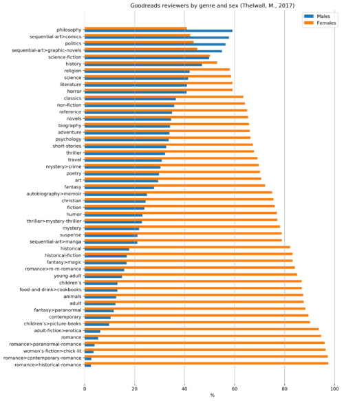
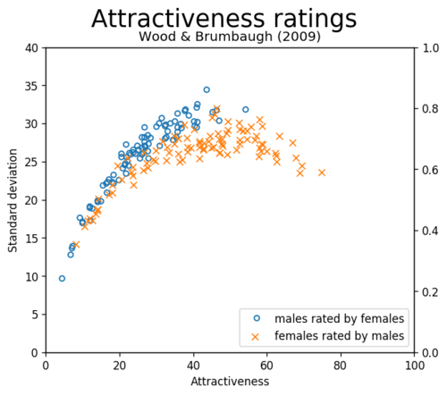
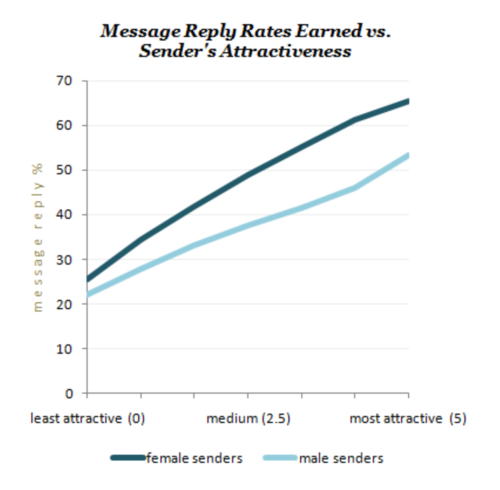
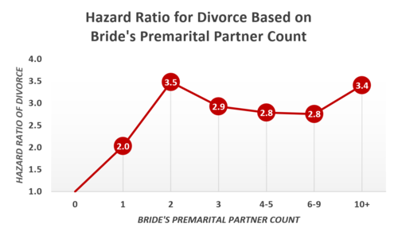
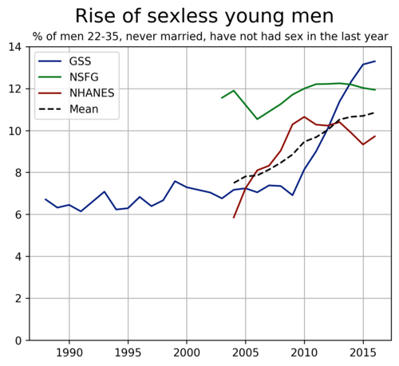

Scientific Blackpill
The Scientific Blackpill is about understanding the nature of human social and sexual behavior with a particular focus on evolutionary psychological perspectives.
As per the blackpill, this compilation emphasizes the role of systemic and genetic factors and traits in men's dating issues (rather than personal ones). These include innate behavior and preferences, physical attractiveness, facial bone structure, stature, muscularity, body frame size, race, personality, local sex ratios, intelligence, ability, health, mental health, social and economic status, as well as female coyness, sneakiness and nastiness.
This page maintains a neutral tone and conveys the scientific findings without judgment. However, sections demarcated as "discussion" may occasionally contain un-sourced speculation or writing from a more non-neutral perspective.
| Supplemental page | Another science compilation with a broader focus on feminism and gender |
| Demographics | Demographics of inceldom with prevalence estimates for various countries |
| Sex drive | A compilation on sex differences in sex drive |
| Adverse effects | A compilation on the adverse effects of inceldom and on the benefits of sex |
| Causes | A compilation on the causes of inceldom |
| Basic statisics | A statistics course on Coursera |
Categories: Personality Mental Race Looks (Life) Looks (Love) Face Money Height Body Penis Voice Age Hypergamy Cucks Sluts MeToo Health ItsOver
- 1 Personality
- 1.1 Women tend to be attracted to the Dark Triad—narcissism, manipulativeness, & psychopathy
- 1.2 More psychopathic men tend to receive higher attractiveness ratings from women
- 1.3 On PornHub, women consume most of the porn where women are violently raped and abused
- 1.4 62% of women have fantasies about rape and other forced sex acts
- 1.5 50% of female porn viewers admitted to watching porn involving extreme violence against women
- 1.6 Women are drawn more than men to nonfiction stories of rape, murder, and serial killers
- 1.7 Criminal and antisocial men have more sexual partners and have sex earlier
- 1.8 Antisocial, criminal and violent men have greater sexual access to women
- 1.9 Imprisoned serial killers, terrorists and rapists receive thousands of love letters from women
- 1.10 Male gang members have dramatically more female sexual partners
- 1.11 Childhood bullies experience greater sexual success than non-bullies
- 1.12 More than half of prison staff sexual misconduct involves female guards/staff
- 1.13 39% of hospitalized male psychopaths had consensual sex with female mental health staff
- 1.14 Women desiring marriage and commitment are more attracted to narcissistic men
- 1.15 Female narcissism reduces marital quality for men, but male narcissism does not for women
- 1.16 Men are attracted to "nice" women, but women are not attracted to "nice" men
- 1.17 Vegetarian men are less attractive, likable, and masculine to women than omnivorous men
- 1.18 Rapists are far more sexually active than other men
- 1.19 Benevolent sexism is approved in society by both men and women
- 1.20 Misogynistic men are more sexually active than most men
- 1.21 Physically attractive people convey personality traits better during first impressions
- 2 Mental
- 2.1 69% of high functioning autistic adolescents want relationships, but almost none succeed
- 2.2 44.6% of high functioning adult autistic men remain virgins, despite high sex/relationship drive
- 2.3 Autistic males are more likely to have physically unusual facial traits
- 2.4 Autists are judged as awkward, less physically attractive and less approachable within seconds
- 2.5 Autistic men have 10 times as many suicidal thoughts as normal men
- 2.6 High IQ men are more likely to remain virgins longer
- 2.7 Teenage boys with ADHD have double the amount of sexual partners vs. 'normal' teens
- 2.8 Cluster-B personality disorders lead to 3.5x as many sexual partners and more offspring
- 2.9 Mental disorders significantly reduce men's fertility, substantially more than they do for women
- 2.10 People accurately perceive a man's mental health from facial appearance alone
- 3 Race
- 3.1 Women are more racist in online dating, and 92-95% with a "preference" exclude any ethnic men
- 3.2 All races agree that whites are most attractive, but women prefer whites far more than men
- 3.3 Women are more racist than men in speed dating, and find Asian men least physically attractive
- 3.4 White men get 11-14 times as much interest from women on Tinder vs. equivalent Asian men
- 3.5 Being Asian in the USA is a primary predictor of 'never being kissed'
- 3.6 Asian women marry interracially more than twice as often as Asian men
- 3.7 Asian men have half the relationships as white men due to women's 'racial hierarchy'
- 3.8 White and Asian women agree white men are 30-50% more attractive than Asian men
- 3.9 Women reply most online to white men and least to Indian men
- 3.10 Across America, women most desire white men, followed by black, Hispanic, and Asian men
- 3.11 Women enforce stricter racial requirements than men, advantaging primarily white men
- 3.13 Whiter, golden, & rosier (ie. Caucasian) skin is seen as healthier and more attractive
- 3.14 An Asian face is more 'similar to that of an infant' than other races
- 3.15 Black men and women appear 'more masculine' than whites; Asian men appear 'less masculine'
- 3.16 Women who don't express a 'racial preference' in dating behave the same as women who do
- 3.17 Racism in dating is stable or worsening, not improving, over time
- 4 Looks (Life)
- 4.1 Beauty is objective and measurable in the brain
- 4.2 People broadly agree on who is good looking or not, and it affects every aspect of life
- 4.3 It takes less than one second for people to accurately judge beauty
- 4.4 Babies can easily differentiate between attractive and unattractive faces
- 4.5 Parents treat attractive children better than ugly children
- 4.6 Physical attractiveness in adolescence predicts better socioeconomic status in adulthood
- 4.7 Physically attractive individuals are more likely to believe in a 'just world'
- 4.8 Attractive people are perceived much more positively than they really are
- 4.9 Attractive men are perceived as 'funnier', even when they are actually not
- 5 Looks (Love)
- 5.1 Women feel sexual disgust when they imagine even talking to an unattractive man
- 5.2 Across multiple studies; attractiveness determines romantic evaluations equally for both sexes
- 5.3 70% of women would avoid someone solely based on their looks, compared to 31% of men
- 5.4 Love at first sight can be predicted by physical attractiveness
- 5.5 Only a man's looks and race matter in online dating - his personality does not
- 5.6 Looks are most important in speed dating
- 5.7 Looks are most important in video dating
- 5.8 Looks are most important in blind dating
- 5.9 It is Looks > Personality > Money for both genders, but women lie more about it
- 5.10 Your looks define perception of your personality in online dating
- 5.11 A man's personality only matters to a woman if he meets her basic looks cutoff first
- 5.12 Being unattractive reduces men's chances of finding partners, but not women's
- 5.13 In short-term dating and provided many options, women care more about looks than men
- 5.14 'Very unattractive' women are more likely to be married than other women
- 5.15 Women are less likely to use a condom with a more attractive male partner
- 5.16 A man's masculinity and physical attractiveness predicts a woman's chance of orgasm
- 5.17 A man's physical attractiveness to other women predicts his partner's chance of orgasm
- 5.18 The attractiveness gap in a couple predicts how long they wait before engaging in sex
- 6 Face
- 6.1 Men's facial masculinity determines female interest for friendship vs. short/long-term dating
- 6.2 Women prefer men with dominant, aggressive and wide faces (high fWHR)
- 6.3 High fWHR men express greater psychopathy, aggression, cheating, and exploitative behavior
- 6.4 Teenage boys with 'dominant' facial features have sex earlier
- 6.5 Women who have experienced domestic violence find men with higher fWHRs more attractive
- 6.6 High fWHR is associated with greater lifetime reproductive success
- 6.7 Even chickens prefer sexually dimorphic human faces, to the same extent as humans
- 6.8 Symmetry is universally beautiful and leads to more sexual partners
- 6.9 Facial plastic surgery significantly changes how a man's personality is perceived
- 6.10 Facial shape predicts perceived leadership ability and election outcomes
- 6.11 Facial attractiveness contributes more to overall attractiveness than body, particularly in men
- 6.12 Facial attractiveness is more important than body because a face can't easily be changed
- 6.13 Bald men and men with thinning hair are perceived as less attractive
- 6.14 Males who start puberty late are more likely to remain sexually inexperienced or virgins
- 7 Money
- 7.1 A man having the "correct" race, height, and face is worth millions of dollars to women
- 7.2 23-33% of women intentionally mislead men they are not interested in for free meals
- 7.3 Women orgasm more when having sex with rich men
- 7.4 Most women fake orgasms and moan loudly without having orgasms
- 7.5 Men with much lower incomes than their wives are more than twice as likely to not have sex
- 7.6 Photoshopping a man into a luxury apartment made women rate him as 30% more attractive
- 7.7 Women are 1,000x more sensitive than men to economic status cues when rating attractiveness
- 7.8 By the end of her life, the average woman will have a negative $122,000 net fiscal impact
- 8 Height
- 8.1 A man's height determines his dating pool. Over 94% of women reject men for being "too short"
- 8.2 Women are happiest with their partner's heights when they are 8.24" inches taller then them
- 8.3 Short men have twice the suicide rate of tall men
- 8.4 24% of men under 5'9" would undergo surgery costing 31% of their life savings to be taller
- 8.5 Taller men are quicker to engage in physical aggression than short men
- 8.6 Taller men have more partners and father more children
- 8.7 Sperm banks require that men be at least 5'8" tall
- 8.8 The most important thing to women in a man's online dating bio is that he claims to be 6' tall
- 8.9 Taller men report more satisfaction in their romantic relationships than shorter men
- 8.10 Short students more likely to be bullied in school
- 8.11 Short men more likely to experience premature hair loss
- 9 Body
- 9.1 36.4% of US male online daters are now resorting to anabolic steroids & bulimia to compete
- 9.2 Rated strength is the main predictor of men's bodily attractiveness. No women prefer weak men
- 9.3 The most attractive BMI range for men is ~24.5-27 and for women ~17-19 as it is most youthful
- 9.4 Men prefer low waist-hip ratios in women
- 9.5 Even congenitally blind men prefer a low waist-hip ratio in women
- 9.6 A man's muscle building capacity is primarily determined by genetics
- 9.7 Among university students, only physical dominance over other men predicted mating success
- 9.8 Antisocial personality disorders are linked with being overweight/obese in women but not men
- 9.9 Across 91 studies, bodily masculinity was predictive of men's mating and reproductive success
- 10 Penis
- 10.1 Women most prefer penises longer than 84.8% of all men's
- 10.2 Larger penis size has an equivalent effect on male attractiveness to women as greater height
- 10.3 Women who prefer longer penises are more likely to have vaginal orgasms
- 10.4 90% of women agree that penis girth is more important than length for their sexual satisfaction
- 11 Voice
- 12 Age
- 12.1 It is normal for healthy men to find pubescent & prepubescent females sexually arousing
- 12.2 Men rate the faces of adolescent girls as more attractive and feminine than adult women
- 12.3 Men downplay their sexual attraction to adolescent girls, even where they are of legal age
- 12.4 Men sexually prefer young women throughout life, while women prefer age-matched men
- 12.5 Men's desirability to women online peaks at 50, while women's peaks at 18 and then falls rapidly
- 12.6 Younger female prostitutes are in higher demand and charge more, across numerous cultures
- 12.7 Women age facially at 2-3 times the rate of men
- 12.8 Age gap couples fare better than age similar couples
- 12.9 Young Americans are harsher critics than older Americans of older men dating younger women
- 13 Hypergamy
- 13.1 Women rate 80% of men as "below medium", while men rate women on a bell curve
- 13.2 In sexually liberated societies, only women decide when sex occurs
- 13.3 Women prefer men with high income and high educational status
- 13.4 Career women are refusing to marry down facing a 'shortage' of equally or more successful men
- 13.5 A survey found a dramatically higher median sex partner count for young women than young men
- 13.6 Men's social status accounts for 62% of the variance of copulation opportunities
- 13.7 93% of women preferred being asked out on a date rather than doing the asking
- 13.8 The top 10% of men get 58% of women's likes in online dating
- 13.9 Men like 61.9% of female profiles, women like only 4.5% of male profiles
- 13.10 The top 5-20% of men (ie. "Chads") are now having more sex than ever before
- 13.11 Average women receive 15 times as many matches as average men on Tinder
- 13.12 Tinder manipulates male profile visibility to promote hypergamy & maximize revenues from men
- 13.13 Women are more attracted to men who are already in relationships than single men
- 13.14 Women are prone to instability when they are more attractive than their male partner
- 13.15 Before 'enforced monogamy', women's effective population size was up to 17x larger than men's
- 13.16 Women bitterly reject unattractive men after facing rejection themselves by an attractive man
- 13.17 A large survey study found no clues to stronger sexual motivation among women
- 13.18 Aversion to having the wife earn more explains 29% of the decline in marriages
- 14 Cucks
- 14.1 Women name the wrong man as the "father" for 3.36% of all childbirths
- 14.2 Women rapidly lose interest in sex once in a stable relationship or living with a man
- 14.3 The more women love their husbands, the less likely they are to initiate sex
- 14.4 Women initiate 69% of divorces
- 14.5 Half of women in relationships report maintaining a 'back-up' partner in their social circle
- 15 Sluts
- 15.1 Women who have premarital sex partners have higher divorce rates
- 15.2 Promiscuous women are more incompetent, cold, and unstable, according to women
- 15.3 Women 'dehumanize' and act more aggressively towards promiscuous women
- 15.4 Women write 45.0-61.3% of all 'misogynistic' tweets on Twitter about female promiscuity
- 15.5 Income inequality not gender inequality explains female sexualization on social media
- 15.6 Women are half as likely as men to be very satisfied by a one night stand
- 15.7 Casual sex is associated with less depression for men and more depression for women
- 15.8 Women feel more "entitlement" to men's bodies for sexual pleasure than vice versa
- 15.9 Women's reported sex partner count dramatically increases when hooked up to a polygraph
- 15.10 Women get 2-3 times as many casual sexual relationships from Tinder than men
- 15.11 69% of young women have turned down sex due to concerns about their vaginal odor
- 15.12 Women who have tattoos or piercings or wear chokers are more promiscuous
- 15.13 Women with 5+ lifetime sexual partners have a >21.8% chance of carrying genital herpes
- 16 MeToo
- 16.1 28% of young women now consider men even winking at them to be sexual harassment
- 16.2 Women's definition of 'harassment' in online dating depends on the attractiveness of the man
- 16.3 The attractiveness of a male 'harasser' determines if the experience is enjoyable or traumatic
- 16.4 Attractiveness determines perceptions of guilt or innocence in cases of sexual harassment
- 16.5 Men & especially ugly men are considered inherently 'creepier' than women
- 16.6 Women permit 'creepy' behavior from attractive but not unattractive men
- 16.7 27% of men report avoiding one-on-one meetings with female work colleagues
- 16.8 Men are equally likely as women to be victims of violent crime
- 16.9 Any sex a woman has while intoxicated can be defined as rape by a man under US law
- 16.10 As many US men report being 'forced to penetrate' each year as women report being raped
- 16.11 More teenage boys are victims of 'partner directed violence' than teenage girls
- 16.12 Many adult men are victims of intimate partner physical violence
- 17 Health
- 17.1 Many people prefer life without social media over life without sex
- 17.2 Sex is the most pleasurable, joyous, and meaningful human experience
- 17.4 Penile–vaginal intercourse is associated with health, but masturbation and anal sex are not
- 17.5 Loneliness increases premature death rates by 26% and is as deadly as obesity
- 17.6 Men are unhappier being single than women
- 17.7 Males gained peer status through having had sex and females lost peer status
- 17.8 Being single is a greater risk factor for developing depression in men than in women
- 17.9 People that are married are 2.4x more likely to recover early from clinical depression
- 17.10 The brain reacts to rejection in the same manner as physical pain
- 17.11 Being shown a picture of a romantic partner results in higher pain tolerance
- 17.12 Warm partner contact lowers stress levels
- 17.13 Women prefer stoic men who downplay their health problems in a long-term relationship
- 17.14 Social life in college and at age 30 predicts well-being during midlife
- 17.15 Tinder usage is associated with lower self-esteem for men but not women
- 18 ItsOver
- 18.1 Sexlessness among young U.S. men is at a record high affecting especially Asian men
- 18.2 College women nowadays are more likely to be sexually active than college men
- 18.3 Incel forums are disproportionately populated by suicidal, disabled, autistic, and ethnic men
- 18.4 42% of men and 44% of women 18-34 years old and unmarried in Japan are now virgins
- 18.5 There are now 70 million excess men in China and India who will live and die without partners
- 18.6 The percent of high school students who date is plummeting
- 18.7 Meeting online is now the primary way relationships are formed
- 18.8 Most online dating sites are dominated by men, only 21%-34% of users are female
- 18.9 30% of millennials are often or always lonely and 22% have no friends
- 18.10 41.1% percent of U.S college students report being depressed; 6.6% have planned their suicide
- 18.11 Men are more likely than women to commit suicide
- 18.12 Winners in a rigged game will consider the game fair as long as they keep winning
- 18.13 Involuntary celibacy is defined academically as 6 months of celibacy despite effort for sex
- 18.14 Being widowed in one's 20s increases suicide risk by ~17x for men, but only ~4x for women
- 18.15 Monogamy may have been selected by cultural evolution because of its benefits for society
- 18.16 Arranged marriage may be natural for humans
- 18.17 Popularity continues to exist in college and bullying exists both in college and after college
- 18.18 Missing out on teenage love damages sexual success later on
- 18.19 A stigma against virginity exists and many women refuse to date a virgin
- 18.20 Involuntarily celibates often were ostracized, bullied, and socially withdrawn during childhood
- 18.21 Young men are now more likely to be single than young women
- 19 See also
Personality[edit | edit source]
Women tend to be attracted to the Dark Triad—narcissism, manipulativeness, & psychopathy[edit | edit source]
The dark triad consists of three personality dimensions:
- Narcissism (heightened sense of self-importance)
- Machiavellianism (manipulativeness)
- Psychopathy (low empathy)
These traits are often quantified by a quick scoring tool called the dirty dozen:
- I tend to manipulate others to get my way.
- I tend to lack remorse.
- I tend to want others to admire me.
- I tend to be unconcerned with the morality of my actions.
- I have used deceit or lied to get my way.
- I tend to be callous or insensitive.
- I have used flattery to get my way.
- I tend to seek prestige or status.
- I tend to be cynical.
- I tend to exploit others toward my own end.
- I tend to expect special favors from others.
- I want others to pay attention to me.
In a study by Carter et al. (2014), 128 women were presented with male characters of varying degrees of dark triad personality. Physicality was held constant. Men with dark traits were rated as dramatically more attractive to women compared to control characters who lacked these traits (with >99.9% statistical certainty, p < 0.001). Furthermore, the attractiveness of these dark traits was not explained by other characteristics like extroversion.[1]
Discussion:
This suggests personality does matter to women, but not in the manner popularly claimed. Rather than preferring empathetic and responsible men, many are most attracted to narcissistic, manipulative and psychopathic men.
Evolutionary psychology may be able to explain this phenomenon. Women evolved to be dependent and choosy due to their greater parental investment. This caused men to evolve to be taller and stronger in an evolutionary arms race competing for mating opportunities. In response to this, women are thought to have evolved to choose the strongest and most dominant man available to be protected from men attempting to coerce them into sex, male violence in general (bodyguard hypothesis; Wilson & Mesnick, 1997) and to get access to high-quality foods and resources (Geary 2004). This aspect of human sexuality can be traced back to some of our oldest ancestor species, e.g. lizards, in which female animals submit themselves to dominant males (Irenäus Eibl-Eibesfeldt, 1989). Dark traits such as low empathy and cruelty may have proven useful in male intrasexual competition (Kruger & Fitzgerald 2011), so these traits and women's attraction to them might have co-evolved as a socially parasitic reproductive strategy (Gervais 2018).
Dark behavior patterns may additionally serve as honest/hard-to-fake signals of high status as only high status men can get away behaving in an overtly anti-social manner. Status, in this case, is not only determined by aggression and intimidation, but also by income, looks, competence etc. Men may also have been selected to mimic such dominance signals (Puts 2015). The fact that not all men exhibit dark traits indicates that men have evolved diverse strategies of status ascension (prestige vs dominance strategy; Kruger 2015, Gervais 2018), which can be identified with a slow and fast life history strategy, respectively. Fast-life strategists tend to exhibit earlier sexual maturation and less investment into the offspring when compared to slow life history strategists. Men and women with a fast life history tend to score higher in the Dark Triad (McDonald et al., 2012), in its extreme expressing as whiny psychopathic behavior in women and cold psychopathic behavior in men.
The sensitivity of this topic could even cause women to downplay their attraction dark traits because it contradicts laws and norms against violence as well as feminist ideals that women should be the equal of men rather than submitting to them. Women may thus be even more attracted to such men than they admit (social desirability bias). Women's preferences for psychopathic men are possibly related to rape fantasies. After all, it requires low empathy to rape someone.
Research by Kardum et al. (2017) suggests there is modest to moderate assortative mating for all Dark Triad measures among heterosexual couples, meaning men and women tend to date others with similar levels of dark personality traits. Women with a slow life history may be less interested in men with a dark personality, but due to their agreeableness (especially compliance) and rudimentary agency they may abandon themselves to such men anyhow.
Data:
| Condition | Attractiveness | |
|---|---|---|
| Mean | SD | |
| High DT | 4.44 | 1.17 |
| Low DT | 3.34 | 1.17 |
| Cohen's d = 0.94 | ||
Quotes:
- From Seffrin (2016): Men who show a willingness to take risks, have a high self-esteem, and a body that is physically imposing possess qualities that women may find desirable, but these qualities are also correlated with aggressive behavior (Apicella, 2014; Baumeister, Smart, & Boden, 1996; Brewer & Howarth, 2012; Frederick & Haselton, 2007; Sellet al., 2009). […] Men who would use physical violence to gain a competitive advantage may possess other qualities that are sexually appealing to women […]. This much has been suggested in research by Rebellon and Manasse (2004) who found that highly delinquent males report relative success in attracting female dating partners. Rebellon and Manasse (2004) interpret these findings using a derivative of sexual selection theory known as the “handicap principle” (Zahavi, 1975). The handicap principle suggests that behaviors that are potentially costly to males—such as fighting and showing disregard for authority, but which are valued by females, perhaps for the strength and bravado they symbolize—will be implemented as tactics in male sexual competition (see also Palmer & Tilley, 1995). Research on sexual selection theory also suggests that a preference for these qualities may have itself been selected for in females (Puts, 2010). This would help to explain why men have a penchant for violent behavior in the first place, in the sense that male aggression, and a preference for it among females, were selected for in the course of human prehistory. Partnering with an aggressive and/or criminally involved male may have its advantages, especially in an unsafe environment where threats of violence are commonplace. Yet displays of dominance and physical aggression play just as well to an all male audience, who serve as a source of encouragement and validation, thereby reinforcing the behavior as well as its symbolic value in the peer culture (Messerschmidt, 1993).
- Psychopathic traits (lack of morality; interpersonal hostility) are beneficial to a short-term strategy and are correlated with unrestricted pattern of sexual behaviour. (Carter, 2014)
References:
- Carter GL, Campbell AC, Muncer S. 2014. The Dark Triad personality: Attractiveness to women. Personality and Individual Differences. 56: 57-61. [Abstract] [FullText]
- Geary DC, Vigil J, Byrd‐Craven J. 2004. Evolution of human mate choice. Journal of sex research, 41(1), pp.27-42. [FullText]
- Wilson M, Mesnick SL. 1997. An empirical test of the bodyguard hypothesis. In Feminism and evolutionary biology (pp. 505-511). Springer, Boston, MA. [Abstract]
- Puts DA, Bailey DH, Reno PL. 2015. Contest competition in men. The handbook of evolutionary psychology. pp. 1-8. [Abstract]
- Kruger DJ, Fitzgerald CJ. 2011. Reproductive strategies and relationship preferences associated with prestigious and dominant men. Personality and Individual Differences. 50(3):365-9. [Abstract]
- Gervais N. 2018. ADHD, Autism, and Psychopathy as Life Strategies: The Role of Risk Tolerance on Evolutionary Fitness. [FullText]
- Seffrin PM. 2016. The Competition–Violence Hypothesis: Sex, Marriage, and Male Aggression. [Abstract]
- Eibl-Eibesfeldt I. 1989. Pair Formation, Courtship, Sexual Love. In: Human Ethology. Routledge. [Excerpt]
- Kardum, I., Hudek‐Knezevic, J. A. S. N. A., Schmitt, D. P., & Covic, M. (2017). Assortative mating for Dark Triad: Evidence of positive, initial, and active assortment. Personal Relationships, 24(1), 75-83. [Abstract]
- McDonald, M. M., Donnellan, M. B., & Navarrete, C. D. (2012). A life history approach to understanding the Dark Triad. Personality and Individual Differences, 52(5), 601-605. [Abstract]
More psychopathic men tend to receive higher attractiveness ratings from women[edit | edit source]
Brazil & Forth conducted two studies that examined women's preferences for psychopathic males. Forty-six men were photographed from the waist up and rated by (N = 11) individuals blind to the purpose of the study. The men were then requested to complete the Self-Report Psychopathy scale, used to measure the four-facet structure of psychopathy.
The four facets of psychopathy, according to this inventory, are defined as: interpersonal (manipulative and exploitative behaviors), affective (lack of remorse and empathy, cruelty to others), lifestyle (parasitic behavior, lack of clear life goals, irresponsibility), and antisocial (overt violent or criminal behaviors).
The subjects completed additional self-report inventories to measure their level of social intelligence and socio-sexual orientation (a measurement of an individual's openness to casual sex).
The first study had males participate in a simulated dating scenario with a female confederate (introduced as a female volunteer). After initial prompting by the female confederate, the conversations were allowed to proceed naturally between the participants and the confederate for 90-120 seconds.
It was found that men who reported having sex were generally higher in levels of psychopathic traits, as measured by the self-report psychopathy inventory (M = 169.33, SD = 22.65 for the men who had sex vs. M = 142.08, SD = 19.84 for those not having sex). The various facets of psychopathy (apart from antisocial tendencies) were found to be generally related to greater social processing capability (ability to "read" other's intentions and emotional states).
Study 2 tested examined women's responses to men varying in levels of psychopathy. One hundred eight women viewed the interactions between the male participants from study 1 and the female confederate. The women then rated the men on how desirable they would be to date. After evaluating the videos, the participants were then instructed to leave a pretend voicemail message for the men, in the context of them requesting a date with the men.
The men were sorted into three different groups of physical attractive based on the judgment of the previously mentioned independent raters (women N = 7, men N = 4): significantly below average attractiveness, somewhat below average attractiveness, and average attractiveness, to control for the effects of physical attractiveness on the women's attraction to the men. The researchers then used software to analyze the vocal pitch of the women who left the voice messages to the males. Based on prior research, women's vocal pitch was considered a more objective, subconscious measurement of female sexual attraction.
It was found that women nearly always had a higher vocal pitch when leaving a message for a more psychopathic man vs. a less psychopathic man of the same general level of physical attractiveness.
Further analysis of the data suggested that the affective traits of psychopathy, such as superficial charm, callousness, and lack of empathy, were the most desired by women. In contrast, the more overtly violent antisocial traits were generally unfavored. The authors also noted that psychopathy's affective traits were strongly linked to sexual sadism and intimate partner violence in men. They stated this has concerning implications on the romantic relationships these men would be expected to have relative ease at initiating, compared to less psychopathic men.
Discussion:
This study provides some support for the 'exploitation hypothesis' of women's attraction to Dark Triad traits in men, as the women in the study were generally averse to men displaying overtly anti-social traits, evaluating these men more unfavorably in a romantic context. This finding further suggests that the fake pro-social, glib, superficially charming aspect of psychopathy is what the women found most attractive. However, the women in the study also responded more favorably to the men with higher levels of affective psychopathy (i.e., those who demonstrated lower levels of empathy and callous behavior) on an innate, subconscious level (higher vocal pitch when leaving a voice message for them). This finding suggests that women may also strongly favor some of the more overtly socially undesirable psychopathy aspects in a romantic context.
The 'lifestyle' aspects of psychopathy were also evaluated favorably by the women in the study, especially when this evaluation depended on the women's conscious, subjective rating of the men. These 'psychopathic lifestyle' traits include lack of clear life goals, socially parasitic behavior, and irresponsibility, not characteristics that would make these men good providers or prone to commit to long-term relationships.
The women's preference for psychopathy's lifestyle aspects may stem from these traits being associated with (at least on the surface) a fun-loving, laid-back, or adventurous nature and a general lack of social inhibition. Effectively personality traits which may keep the woman constantly emotionally stimulated and prevent her from being bored in the relationship. As women were generally dependent on men for provision throughout their evolutionary history. It could be that women only care about traits that would make men good providers for long-term relationships, perhaps even evaluating them negatively in shorter-term relationships. It could also be that these provider traits were not directly sexually selected at all, and women themselves did not choose these traits throughout history. However, their parents likely selected these traits in men (with these traits being associated with socioeconomic success and reliability). Historically, a substantial portion of marriages were arranged by women's parents.
An alternate explanation is that psychopathy is often associated with certain socially valued traits like boldness and dominance. As these traits overlap substantially with the more socially aversive aspects of psychopathy, women may be selecting more for the more socially valued characteristics of psychopaths and tolerating the more malicious ones as "part of the package". In support of this hypothesis, Pilch et al. (2022) examined the triarchic (three-factor) model of psychopathy in the context of romantic relationships. Their study involved polling 1,945 partnered Polish women on the quality of their romantic relationships and the psychopathic traits of their male partners. A correlational analysis of this data found a moderate negative association between male partners' "meanness" and "disinhibition" and the women's satisfaction in their current relationships. There was also a weak negative correlation between these traits in their partner's and the women's reported level of satisfication with their sex lives. On the other hand, their reports of their male partner's degree of social status and his interpersonal boldness correlated positively with these things. A subsequent multiple regression analysis found that boldness attenuated the negative effects of meanness and disinhibition on female's relationship satisfaction. This finding could suggest that women are trading off the negative aspects of psychopathy for the positive ones when it comes to their dating choices or, as boldness is positively related to social status, that women prefer "successful psychopathy" higher in the adaptive aspects of psychopathy than those higher in the more maladaptive ones, such as poor impulse control and a tendency towards overtly anti-social behavior. Similarly, Pilch & Smolorz (2019) found that boldness was the only facet of psychopathy associated with reported sexual satisfaction in males, whereas men higher in disinhibition reported higher sexual fear and anxiety. This similarly indicates that men higher in the aspects of psychopathy that are associated with social dominance and success (boldness) may be more sexually rewarded than ones that may be related to lower social status (disinhibition). These later psychopathic facets are associated with poor life success, lower occupational status/unemployment, and strong executive functioning and planning deficits.
Still, the more socially adverse aspects of psychopathy may also be adaptive in some contexts. The lack of a strong female preference for the overtly anti-social aspects of psychopathy, such as aggressive behavior, indicates that these traits may have been evolutionarily selected by allowing ancestral men with these traits to prevail in male-male contests, rather than through a direct female preference for such characteristics. One would suspect men prone to using violence or its threat to be more successful in deterring potential male rivals (such as mate-poachers).
The violent tendencies associated with the anti-social aspects of psychopathy would be expected to aid men in ascending social hierarchies based primarily on dominance rather than prestige, by allowing them to survive and acquire resources and higher social status that would have assisted them in attracting women (directly or indirectly) and being able to pass on their genes.
The Brazil & Forth study seemingly indicates a female preference for men that are unsuited towards longer-term relationships. This preference, no matter how slight it may be, seems to provide some support to arguments that many modern women are making maladaptive mate choices due to an evolutionary mismatch between historical and contemporary mating contexts. Of course, one could argue this also applies to men as their mate choices were also often constrained in the past, though the consequences of possible spousal abandonment would be far less harsh for them.
Quotes:
- When comparing two men, those higher in psychopathic traits tended to receive higher ratings from women when considering the magnitude difference in psychopathic traits between the two men.
- Of the facets, lifestyle traits provided the strongest link to desirability ratings from women. These traits include disinhibition, lack of responsibility, and having a sensation-seeking orientation.
- Using voice pitch instead of subjective ratings as an indicator of desirability, the results did not suggest a preference for overall psychopathy. Post hoc exploratory analyses did, however, suggest affective traits elicited more interest and antisocial traits less interest based on voice pitch increasing and decreasing, respectively.
- The lack of preference for antisocial traits may suggest that if they are contributing to appearing as an attractive mate, they may be doing so through derogating and dominating potential rivals rather than generating direct appeal.
References:
- Brazil, KJ. Forth AE. 2019. Psychopathy and the Induction of Desire: Formulating and Testing an Evolutionary Hypothesis. Evolutionary Psychological Science, pp 1-18. [Abstract]
- Pilch, I., Lipka, J & Gnielczyk J. 2022. When Your Beloved Is a Psychopath. Psychopathic Traits and Social Status of Men and Women’s Relationship and Sexual Satisfaction. Personality and Individual Differences 184:111175. [Abstract]
- Pilch, Irena. Smolorz, K. 2019. The Dark Triad and the Quality of Sexual Life. Personality and Individual Differences 149:78–82. [Abstract]
On PornHub, women consume most of the porn where women are violently raped and abused[edit | edit source]
Dr. Seth Stephens-Davidowitz, a former Google data scientist, was given complete access to PornHub's search and views data. He found that women were more than twice as likely as men to search for videos where women are abused, coerced into sex, or are depicted as being raped. Women preferred videos with tags like "painful anal crying", "public disgrace", "extreme brutal gangbang", "forced", or "rape".
25% of all straight porn searches by women were for videos featuring violence against women, and 5% of women's searches were for videos where women are raped. While not necessarily representative of all porn consumption by women, Pornhub is, according to website analytics firm Simpleweb, the adult website with the most global traffic (and is ranked 8th for total traffic worldwide out of all websites), as of February 2019.
Discussion: The finding that female porn users disproportionately seek out porn that explicitly depicts sexual violence against and the degradation of women is contrary to common cultural depictions that portray women as the "romantic sex" that heavily values emotional intimacy, male sensitivity to their needs, and kindness in relationships. As such, it appears to be disturbing to many people, and most explanations for this finding seem to have revolved around tales of abused women seeking to recreate their abuse via their porn habits as a kind of warped self-therapy, seeking to contextualize the abuse they suffered via consuming content that essentially portrays this kind of sexual aggression as the default mode of interaction between the sexes.
Anti-porn feminists have made similar arguments, asserting that women have "internalized misogyny" and often seek out such material out of the view of seeking to propitiate the sadistic sexual urges of their male partners. On the other hand, evolutionary psychology-based arguments see this behavior as being reflective of a general female psychological tendency towards masochism and submissiveness, based on a not-insignificant pool of evidence that indicates that women have been sexually selected for such behaviors by men throughout their evolutionary history to some degree (Apostolou & Khalil, 2018).
Regardless of the proximate causes of this pattern of pornography consumption among women, there is evidence that suggests that female porn users may not be fully representative of the sexual preferences of the general population of women. Walsh (1998) examined the sexual behaviors and personality traits of regular female users compared to non-users of pornography and found they were higher on several characteristics that are generally considered indicators of faster life history strategy (associated with greater promiscuity in general). Namely, female users of pornography reported more having more sexual partners, having a stronger sex drive, being more likely to be "addicted to sex," being more behaviorally masculine, more likely to undergo puberty earlier, and they placed more importance on the regular attainment of orgasm than female non-users of pornography. This study certainly indicates that one would expect female pornography users to have a preference for such seemingly aversive materials either due to a potential female fast life history strategist preference for harsher male displays of dominance and violent coercion, or it could be reflective of a general female taste for such male sexual behaviors that is more often expressed among fast life history strategy women as they are less sexually repressed, even on a cognitive level.
However, Wu (2006) found in a survey published in the Journal of International Women's Studies that female users of romance novels (which often contain veiled or outright explicit depictions of sexual assault) were more feminine, noted fewer sexual partners and reported a later onset of sexual activity compared to female non-readers of this material. The divergence in outcomes between these two studies is likely explicable by differences in sampling and the sample restriction in the second study to romance novel readers. Also, the first used "pornography" as the metric of choice (and many women may not like to consider romance novels as a form of pornography).
It does seem that engagement with violent sex acts of the type that are often depicted in online pornography is quite common among women, with 49% of young partnered women reporting engaging in rough sex "sometimes" or "often" in a large study of US college undergrads (Hebenick et al., 2021). In Hebenick's study, 39.9% of heterosexual women reported enjoying rough sex "very much" compared to 32.3% of men, a difference that was small (d = .17) but statistically significant. Bisexual women reported a higher frequency of enjoying violent sex "very much" than heterosexual women (54.1%). As some have proposed that bisexuality in women may be a reflection of fast-life history adaptions (Luoto et al., 2018), this would provide further evidence for the claim that fast life history women (and men) are more likely to participate in sexual behaviors based mainly on the violent acting out of dominance/submission roles and less on affiliative sexual behaviors.
There is also evidence that suggests that frequent users of pornography, in general, are relative fast life history strategists, with Cheng et al. (2020) finding that citizens of US states with higher crime rates and mortality (potentially both reflective of and causative of a fast life history strategy among the citizens of that state) were more likely to search for pornography on Google, controlling for state GDP and sex ratio. The link between state-level mortality and pornography use found in this paper was quite strong, with a one SD increase in mortality in a state leading to a roughly .56 SD increase in the frequency of searches for pornographic terms. The mass of women do not appear to be frequent users of pornography (Hebenick et al., 2020), providing further support for the thesis that female porn users are unusually sociosexually unrestricted compared to the bulk of women. However, this is also most likely strongly reflective of their lower sex drive compared to men. Social desirability bias also causes women to underreport their sexual behaviors compared to men, as women are pressured more to adhere to chastity norms. However, people that are self-selected via participating in internet studies on sexual behavior tend to be more sociosexually unrestricted (as was the case in a few of the studies cited above), so these two things may even out somewhat in those specific instances.
Quotes:
- A quarter of straight porn searches by women are for videos featuring violence against their own sex.
- Five percent of searches by women are for content portraying nonconsensual sex.
- Search rates for these more extreme types of sexual content are at least twice as common among women than men.
- If there is a genre of porn in which violence is perpetrated against a woman, analysis of the data shows that it almost always appeals disproportionately to women. (Rahman, 2017)
References:
- Rahman S. 2017. Why Are So Many Women Searching for Ultra-Violent Porn? Vice. [News]
- Stephens-Davidowitz S. 2017. Everybody Lies: Big Data, New Data, and What the Internet Can Tell Us About Who We Really Are. Dey Street Books.
- Armstrong, M. 2019. The World's Most Popular Websites. Statista. [Web]
- Apostolou MA, & Khalil, M. 2018. Aggressive and Humiliating Sexual Play: Occurrence Rates and Discordance Between the Sexes. Archives of Sexual Behavior, 48(7), pp. 2187–2200. [Abstract https://doi.org/10.1007/s10508-018-1266-8]
- Walsh, A. 1999. Life history theory and female readers of pornography. Personality and Individual Differences, 27(4), 779–787. [Abstract https://doi.org/10.1016/S0191-8869(98)00281-5]
- Wu, HH. 2006. Gender, Romance Novels and Plastic Sexuality in the United States: A Focus on Female College Students. Journal of International Women’s Studies 8(1): pp. 130–39. Fulltext
- Herbenick, D, Fu T, Valdivia DS, Patterson C, Gonzalez YR, Guerra-Reyes L, Eastman-Mueller H, Beckmeyer J, & Rosenberg M. 2021. What Is Rough Sex, Who Does It, and Who Likes It? Findings from a Probability Sample of U.S. Undergraduate Students. Archives of Sexual Behavior, 50(3), 1183–1195. [Abstract https://doi.org/10.1007/s10508-021-01917-w]
- Luoto S, Krams I, & Rantala MJ. 2018. A Life History Approach to the Female Sexual Orientation Spectrum: Evolution, Development, Causal Mechanisms, and Health. Archives of Sexual Behavior. [Abstract https://doi.org/10.1007/s10508-018-1261-0]
- Cheng L, Zhou X, Wang F, & Xiao L. 2020. A State-Level Analysis of Mortality and Google Searches for Pornography: Insight from Life History Theory. Archives of Sexual Behavior, 49(8), pp. 3005–3011. [Abstract https://doi.org/10.1007/s10508-020-01765-0]
- Herbenick, D. Fu TC, Wright P, Paul B, Gradus R, Bauer J, & Jones R. 2020. Diverse Sexual Behaviors and Pornography Use: Findings From a Nationally Representative Probability Survey of Americans Aged 18 to 60 Years. The Journal of Sexual Medicine, 17(4), pp. 623–633. [Abstract https://doi.org/10.1016/j.jsxm.2020.01.013]
62% of women have fantasies about rape and other forced sex acts[edit | edit source]
A team of researchers from the University of North Texas and the University of Notre Dame played 355 young women a rape fantasy over headphones to investigate how aroused they became:
The tape's material tells the tale of a male protagonist who is strongly attracted to the female character. He expresses a desire for sex with her, but she's clearly unresponsive. He attempts to convince her, without success, and she continues to refuse his advances. The male character then overpowers and rapes her. She resists throughout, and at no time gives consent. However, as the man is attractive to her and provides erotic stimulation, she does experience gratification from the forced sex.
In questioning following this, researchers found that overall, 62% of participants reported having a rape fantasy of some type.
Of the women who reported having the most common rape fantasy ("being overpowered or forced by a man to surrender sexually against my will"), 40% had it at least once a month and 20% had it at least once a week.
Women reported that 45% of their rape fantasies were completely erotic and 46% both erotic and aversive. Only 9% of the fantasies are completely aversive.
Interestingly, even women espousing feminist values have the same inclination toward rape fantasies as other women (if not slightly more).
Discussion:
Making things worse, it is conceivable that women underreport their fantasies about rape as well as their positive emotion towards it, in order to avoid being socially undesirable given the taboos surrounding the topic.
The frequency of women's rape fantasies may be related to women's preference for low-empathy males. After all, raping someone requires indifference to their feelings. The ability to rape may also act as an honest signal of physical strength and high status. Alternatively (though these two things are of course not mutually exclusive) such tendencies may be reinforced by fisherian runaway sexual selection feedback loops, as the traits that predispose a man to raping are likely substantially heritable. So selecting for a man with 'rapist genes' would ensure that her male offspring inherit these genes, which would thus increase said male offspring's chance of becoming polygynous (in certain opportunistic contexts) which would serve to increase her fitness in an evolutionary sense.
Women's general reluctance to have sex and wish to be forced into sex may also test men for their physical strength, as women depend on a physically strong man to be protected, e.g. from other contenders (bodyguard hypothesis). This is related to the male dominance/female surrender pattern that is common in the animal world. The male must present a display of dominance, continue pursuing the female even in the face of rejection, and sometimes even physically subdue the female coerce her into sex (Fisher, 1999). This is possibly a test of his power, fitness, and status. Fisher also suggests that females may have a natural desire to surrender to a pre-selected, dominant male. Eibl-Eibesfeldt (1989) suggests this behavior derives from primitive brain regions that have evolved to insure successful mating in reptiles, birds, and mammals.
The fact that many or even most women desire to be dominated reminds one of certain redpill insights as it is actually something men can arguably improve on. However, it remains a blackpill insofar as men are continually heavily shamed by feminists and risk being accused of sexual harassment for their attempts at dominating a female. Due to their evolutionary history, women are also likely very sensitive to false signals of male dominance or status which would make the mimicry of such behavior even riskier. Such a cultural practice is also arguably dysgenic in the sense that it appears to select for psychopathic, impulsive, or just plain unintelligent men who either don't care about such shaming or lack the knowledge of social norms that would restrain them from behaving in this fashion.
Data:
| Forced/Rape Sex Act | Women With Fantasy |
|---|---|
| Any forced/rape sex act | 62% |
| Forced sex by a man | 52% |
| Being raped by a man | 32% |
| Forced oral sex by a man | 28% |
| Being incapacitated | 24% |
| Forced anal sex | 16% |
| Forced sex by a woman | 17% |
| Being raped by a woman | 9% |
| Forced oral sex by a woman | 9% |
Figures:
References:
- Bivona JM, Critelli JW, Clark MJ. 2011. Women’s Rape Fantasies: An Empirical Evaluation of the Major Explanations. Archives of Sexual Behavior, 41(5): 1107-1119. [Abstract]
- Bivona JM, Critelli JW. 2009. The nature of women's rape fantasies: an analysis of prevalence, frequency, and contents. J Sex Res. 46(1):33-45. [Abstract]
- Critelli JW. and Bivona JM., 2008. Women's erotic rape fantasies: An evaluation of theory and research. Journal of Sex Research, 45(1), pp.57-70. [Abstract]
- Eibl-Eibesfeldt I. 2017. Human ethology. Routledge. [Excerpt]
- Fisher H. 1999. The first sex. New York: Random House.
- Persaud R. 2012. Women's Sexual Fantasies—the Latest Scientific Research. Huffington Post. [News]
50% of female porn viewers admitted to watching porn involving extreme violence against women[edit | edit source]
Researchers in Italy conducted a study regarding the pornography usage habits of 12th grade students in high schools and youths 18-25 years old involved in vocational training.
The participants were asked to complete a questionnaire regarding whether they had watched pornography and if they were currently watching pornography. They were then queried as to the content of the pornography they viewed, from the list, a variable called "violence against women" was constructed, which was defined as pornography that included any of the following violent content: "the woman is tortured, mutilated, raped, gang raped, humiliated (the man/ men urinate or defecate on her), killed, or subjected to other violent sex."
The participants were when asked as to whether they viewed this content of their own accord or whether they had been goaded or coerced into watching it by a boyfriend/girlfriend or adult.
Finally, the participants were asked questions regarding their experiences of prior victimization, including whether they had been previously subjected to physical, emotional, or sexual violence.
Of the 303 participants, 49.2% were girls. 61.1% said they currently watched pornography.
50.2% of the girls who watched pornography, reported watching violent pornography, including pornography that contained extreme depictions of sexual violence against women. It was also found that girls who had reported experiencing sexual victimization were much more likely to watch pornography, especially violent pornography, (Odds-ratio 3.27 for women subject to sexual violence, who reported currently watching pornography). Only 6.6.% of girls reported being pressured into watching pornography by another person, with most reporting they watched it for personal enjoyment, and no association was found between participants reporting being a victim of sexual violence and them being coerced into watching the pornography.
Discussion:
It is also imaginable that, due to a generally greater social desirability bias related to female porn use (especially the extreme content that was included in the survey, i.e. snuff films, rape, pornography involving minors, and bestiality), that these figures substantially underestimate the number of girls who regularly watch such content.
The fact that women that were previously subject to sexual violence were also those who generally sought out violent pornography also has the unpalatable implication that their experience of sexual coercion may have been so arousing to them that they often seek to replicate and relive this experience via the pornography they consume.
It may also imply that women who have these masochistic preferences may associate with men who are more likely to be sexually coercive, or that they may even goad such men into forcing them into sex. There is apparently an online subculture of women who ostensibly detail their genuine attempts at inciting men into committing acts of sexual violence towards them.
Quotes:
- From this list, we constructed the variable “violence against women,” including watching any of the following: the woman is tortured, mutilated, raped, gang raped, humiliated (the man/men urinate or defecate on her), killed, or subjected to other violent sex.
- Female students exposed to family psychological violence and to sexual violence were significantly more likely to watch pornography, especially violent pornography than those who had not been exposed. No such association was found among male students.
- Female victims of sexual violence were 4.24 times more likely to have ever watched pornography (CI [1.41, 12.72]), and 3.27 times more likely to watch currently (CI [1.22, 8.74]).
- There was no association, neither for boys nor for girls, between being pressured to watch and a previous experience of sexual violence.
References:
- Romito P, Beltramini L. 2011. Watching pornography: gender differences, violence and victimization. An exploratory study in Italy. Violence Against Women, 17(10):1313-26. [Abstract]
Women are drawn more than men to nonfiction stories of rape, murder, and serial killers[edit | edit source]
Women have a greater preference for stories of true crime than men. To evaluate the degree of this preference, researchers analyzed gender proportions of reviews on Amazon for different genres including true crime and war. They found 70% of true crime reviewers were female, while 82% of war reviewers were male, despite an overall relatively even distribution of male and female reviewers on the site in general.
The suggested that the primary reasons women might be interested in these books are for "survival tips" to avoid becoming victims themselves. Associations were found which may suggest this is in part a motivation, but these were very weak. Women's evaluations of how much their reading was for "safety" were not very different from men's, and were grossly inadequate at explaining the dramatic gender difference in preference for this material.
Coercive sex or even outright rape is often portrayed in romance novels, which account for 40% of mass paperback sales in the United States (Salmon & Symons 2003). The three best selling books between 2010-2019 belonged to this genre (NPD 2019). These erotic novels are almost exclusively written by women for women, and 54% include rape of the lead character (Thurston 1987). "In a romance novel that includes rape, women identify with the lead female character and vicariously experience her rape." (Critelli & Bivona 2008) In many such novels, there is an aspect of the female "taming" the ruthless and coercive male, baiting him to be nicer by her submission.[citation needed]
On Reddit, one finds women are strongly overrepresented on e.g. /r/truecrime, but strongly underrepresented on /r/police, which means greater interest in law enforcement alone cannot explain women's interest in stories about criminal and dangerous men.
Discussion:
They did not attempt to evaluate to what extent female preference for these types of stories relates to other evidence such as that women are more attracted to sociopathic men, men with criminal histories have more consensual female partners, male serial killers are often inundated with female love letters (hybristophilia), women have a disproportionate preference for pornography featuring violence against women, and that most women admit to harboring "rape fantasies." Women appear to have a simultaneous preference for threat and romance in men, the former for protection, and the latter for provision.
Statistics:
| Rank | Title | Author | Publisher | Year | Unit Sales |
|---|---|---|---|---|---|
| 1. | Fifty Shades of Grey | E. L. James | Random House | 2011 | 15.2 million |
| 2. | Fifty Shades Darker | E. L. James | Random House | 2011 | 10.4 million |
| 3. | Fifty Shades Freed | E. L. James | Random House | 2012 | 9.3 million |
| 4. | The Hunger Games | Suzanne Collins | Scholastic Books | 2008 | 8.7 million |
| 5. | The Help | Kathryn Stockett | Penguin Group USA | 2009 | 8.7 million |
| 6. | The Girl on The Train | Paula Hawkins | Penguin Group USA | 2015 | 8.2 million |
| 7. | Gone Girl | Gillian Flynn | Random House | 2012 | 8.1 million |
| 8. | The Fault in Our Stars | John Green, | Penguin Group | 2012 | 8 million |
| 9. | The Girl with The Dragon Tattoo | Stieg Larsson | Random House | 2008 | 7.9 million |
| 10. | Divergent | Veronica Roth | Harpercollins Publishers | 2011 | 6.6 million |
Figures:

Quotes:
- More women than men reviewed books in the true crime genre (70% vs. 30%), X²(1, N = 306) = 22.08, p < .001.
- More men than women reviewed books in the war genre (82% vs. 18%), X²(1, N = 1,263) = 520.76, p < .001.
- 95% of the reviews in both the true crime and war categories were positive.
- When considering stories with violent content, women are drawn to true crime stories more so than are men.
References:
- Vicary AM, Fraley, RC. 2010. Captured by True Crime: Why Are Women Drawn to Tales of Rape, Murder, and Serial Killers? Social Psychological and Personality Science, 1(1): 81-86. [Abstract] [FullText]
- NPD. 2019. Nonfiction and screen adaptations led U.S. book sales from 2010 to 2019, according to NPD Bookscan. [News]
- Salmon C, Symons D. 2003. Warrior lovers: Erotic fiction, evolution, and female sexuality. Yale University Press. [Worldcat]
- Thurston C. 1987. The romance revolution: Erotic novels for women and the quest for a new sexual identity. University of Illinois Press. [Worldcat]
- Critelli J, Bivona J. Women’s Erotic Rape Fantasies: An Evaluation of Theory and Research. The Journal of Sex Research, 2008. [Abstract]
- Thelwall M. 2019. Reader and author gender and genre in Goodreads. Journal of Librarianship and Information Science, 51(2), 403-430. [Abstract]
[edit | edit source]
A meta-analysis of the correlates of criminal behavior by Ellis & Walsh (2000) found a strong association between criminal behavior and a greater number of reported sexual partners in men. 23 studies demonstrated a link between various forms of anti-social and criminal behavior and greater sex partner count, including: delinquency, violent offenses, various offences, recidivism, "victimful offending", antisocial personality, and conduct disorders. 20 studies found a link between illicit drug use and a greater number of sexual partners. Only one study examined failed to find a significant link between anti-social behavior and a greater lifetime sexual partner count.
The authors also discovered a strong link between criminal/anti-social behavior/drug use and earlier sexual debut in both sexes. 17 studies found a relationship between: delinquency, various offences, "victimful offending", conduct disorders and anti-social personality, plus an earlier age of sexual debut. 13 studies demonstrated a relationship between illicit drug use and an earlier age of sexual debut. Every study examined found relationships between criminal/anti-social behavior and being sexually active at a younger age.
The author also stated that earlier studies had convincingly demonstrated that self-reporting the number of sexual partners via an administered questionnaire had proven to be a reasonably accurate measure of actual partner count, especially for males.
Quotes:
- As you can see, the evidence has consistently shown criminals and delinquents reporting more sexual activity, and to have begun such activity at an earlier age, on average than for other persons of their age. The same appears to be true for those diagnosed with conduct disorders and/or psychopathy.
- Having numerous sex partners can only be scientifically measured by using questionnaire responses ... To assess the accuracy of these self-reports, a few studies have surveyed the same people two or three times, presenting them with the same question. These studies have revealed that there is a general tendency to underreport the number of partners one has had, especially by females ... Nonetheless, the answers given by most subjects appear to be accurate.
References:
- Ellis L, Walsh A. 2000. Criminology: A Global Perspective, 1st Edition. pp 227: Table 8.11. [References]
[edit | edit source]
Research has shown that men with antisocial and criminal tendencies have considerably higher reproductive and sexual success than men who lack this predisposition. In one study, antisocial men only represented 10% of the male cohort, but yet fathered 27% of the babies in that group. (Jaffee et al. 2003)
Another study investigating the links between criminal behavior and reproductive success found criminal men were more likely to have more children with lower commitment, as they were more likely to have multiple children with multiple women. It was concluded that in a contemporary industrialized country, criminal and antisocial behaviors can be considered successful reproductive strategies for men, leading to more female sexual partners and childbirths (Yao et al. 2014).
A study by Barbaro and Shackelford (2016) found evidence that male-perpetrated female-directed violence may be associated with greater sexual access to a female, and that it may in part be due to women responding favorably to male aggression.
Discussion:
This line of research provides solid evidence for Irenäus Eibl-Eibesfeldt hypothesized relation between a violent and feral element in human sexuality and ancient courtship adaptation in which pair formation could only take place if the male is able to physically dominate the female which can be traced back to the sexual behavior of ancient species such as lizards. Such adaptations may serve the function of testing the male.
Quotes:
- Despite the fact that fathers who engage in high levels of antisocial behavior make up a small proportion of fathers overall, they are responsible for a disproportionate number of births. For example, Moffitt and colleagues (2002) found that although men who engaged in high levels of antisocial behavior constituted only 10% of a birth cohort, they accounted for 27% of the babies fathered by the time the men were age 26. (Jaffee et al. 2003)
- From an evolutionary viewpoint, criminal behavior may persist despite adverse consequences by providing offenders with fitness benefits as part of a successful alternative mating strategy. Specifically, criminal behavior may have evolved as a reproductive strategy based on low parental investment reflected in low commitment in reproductive relationships.
- Convicted criminal offenders had more children than individuals never convicted of a criminal offense. Criminal offenders also had more reproductive partners, were less often married, more likely to get remarried if ever married, and had more often contracted a sexually transmitted disease than non-offenders.
- Importantly, the increased reproductive success of criminals was explained by a fertility increase from having children with several different partners. We conclude that criminality appears to be adaptive in a contemporary industrialized country, and that this association can be explained by antisocial behavior being part of an adaptive alternative reproductive strategy. (Yao et al. 2014)
- Alternatively, female choice may account for the relationship between FDV and in-pair copulation frequency (but see Muller, Thompson, Kahlenberg, & Wrangham, 2011). Cross-culturally, women prefer men who are dominant as partners (Conroy-Beam, Buss, Pham, & Shackelford, 2015), and thus it may be that dominant men or men who express more masculine personality traits are also more aggressive, have more frequent (noncoercive) in-pair copulations, or both. (Barbaro & Shackelford, 2016)
- Evidence therefore suggests that over evolutionary history men who employed violence judiciously, on average, conferred replicative advantages compared with men who did not judiciously employ violence, in part, to control women’s sexuality. (Barbaro, 2017)
References:
- Jaffee SR, Moffitt TE, Caspi A, Taylor A. 2003. Life with (or without) father: the benefits of living with two biological parents depend on the father's antisocial behavior. Child Dev. 74(1): 109-26. [Abstract]
- Yao S, Långström N, Temrin H, Walum H. 2014. Criminal offending as part of an alternative reproductive strategy: investigating evolutionary hypotheses using Swedish total population data. Evolution and Human Behavior. 35(6): 481-488. [Abstract]
- Barbaro N, Shackelford TK. 2016. Female-directed violence as a form of sexual coercion in humans (Homo sapiens). Journal of Comparative Psychology, 130(4), 321–327. [Abstract]
- Barbaro N. 2017. Violence to Control Women’s Sexuality. In: Encyclopedia of Evolutionary Psychological Science, pp.1-6. [Abstract]
Imprisoned serial killers, terrorists and rapists receive thousands of love letters from women[edit | edit source]
Hybristophilia is a sexual phenomenon that is defined as 'the erotic obsession with or exclusive sexual attraction with an individual who commits extremely heinous or violent crimes such as rape, murder, serial killings etc.'
According to the research that has been conducted in regards to the matter, it is a phenomenon almost exclusively found in women (Gurian, 2013).
Discussion:
Explanations for the women's attraction to highly violent men range from a nurturing desire to 'fix' these criminals, that they desire the fame/attention that they could receive by association with the criminals and their notorious deeds, but perhaps it is more likely a byproduct of women being wired by their evolutionary past to seek out relationships with dominant and violent 'dark triad' men.
Examples of men who have received numerous love letters and even proposals from women while on trial or imprisoned are listed below.
Of course, these anecdotal data are subject to substantial selection biases of the sort of selecting extremely psychopathic women from an extremely large population provided the notoriety of the criminals in the following list.
Data:
| Name and source | Description |
|---|---|
| Josef Fritzl | Imprisoned his own daughter in a cellar for 24 years, raping and torturing her, fathering 7 children through her, and murdering one of these offspring. |
| Anders Breivik | Murdered 77 people in terrorist attacks, with the majority of his victims being young teenagers at summer camp. |
| Dzhokhar Tsarnaev | Detonated bombs killing 4 people and injuring 282 more in terrorist attacks. |
| Ted Bundy | Kidnapped, raped, and murdered at least 30 young women and girls, sometimes raping even their corpses. Is claimed to have had a daughter while in prison, with a woman he married during his trial for the murders. |
| Richard Ramirez | Raped and tortured 25 people and murdered 13 in a spree of home invasions, one of his victims being a 9-year old girl who he beat, raped and then murdered, married one of his many suitors. |
| Chris Watts | Strangled his pregnant wife, then smothered his three and four year old daughters before dumping their bodies. |
Quotes:
- Death Row inmates have no shortage of suitors. In fact, the more notorious the murderer, the less he has to work for female companionship, San Quintin [State Prison] spokesman Eric Messick said.
- Letters of adoration flow in daily to Death Row inmates from all over the world, some of them 20 handwritten pages long.
- Richard Allen Davis, the man who kidnapped 12-year-old Polly Klaas from her Petaluma home in 1993 and killed her, "probably gets more mail than most," Messick said. Richard Ramirez, the "Night Stalker" who killed 13 people and has more than a passing interest in Satanism, has women virtually throwing themselves at him despite the fact he is already married.
- Messick said "99 percent" of correspondence to the condemned is from women. (There doesn't seem to be a similar clamoring among men for women awaiting death. None of the 15 women on the state's female Death Row in Chowchilla has gotten married in prison.) (Fimrite and Taylor 2005)
References:
- Fimrite P, Taylor M. 2005. No shortage of women who dream of snaring a husband on Death Row / Experts ponder why deadliest criminals get so many proposals. SF Gate. [News]
- Gurian EA. 2013. Explanations of mixed-sex partnered homicide: A review of sociological and psychological theory. Aggression and Violent Behavior. 18(5): 520-526. [Abstract]
Male gang members have dramatically more female sexual partners[edit | edit source]
A study by Palmer and Tilley (1995) for The Journal of Sex Research examined the possible evolutionary motives (i.e access to willing females sexual partners) that prompt young men to join street gangs. They revealed that gang members had significantly more consensual sexual partners than a comparable group of non-gang members. It was found that the leaders of these gangs by far had the highest number of sexual partners, with no male non-gang member from the sample coming even close to their high sexual partner count.
These findings came despite previous evidence that physically unattractive individuals are disproportionately drawn to a life of crime, and physically attractive individuals are usually dissuaded from a life of crime (Mocan and Tekin 2006). This would suggest gang members are not likely to be more physically attractive than average men.
This information is provided solely for evidentiary purposes as regards to the mate selection procedures of female H.Sapiens—it is certainly not encouraged for any man to "thugmaxx" (i.e commit violent crimes) in an attempt to ameliorate their sexual situation.
Quotes:
- Gang members reported a significantly greater average number of sex partners during the last 30 days than the non-gang members reported for the same period (M of 1.67 to 1.22, respectively); one-tailed t-test, t = 2.16, df = 118, p < .025. […]
- Two gang leaders […] reported 11 and 10 partners, respectively, [within the last 90 days] […]
- Many gang members in our study had as many, or more, sex partners in one month than the average male in Laumann et al.'s study had in one year.
- In contrast, no non-gang member in the study reported more than five partners within the last 90 days.
- We also predict that leaders of gangs, like leaders in many human societies, not only have sexual access to greater numbers of females, but also more exclusive sexual access to these females. (Palmer and Tilley 1995)
References:
- Palmer CT, Tilley CF. 1995. Sexual Access to Females as a Motivation For Joining Gangs: An Evolutionary Approach. The Journal of Sex Research, 32(3):213-217. [Abstract] [FullText]
- Mocan N, Tekin E. 2006. Ugly Criminals. National Bureau of Economic Research (NBER) Working Paper No. 12019. [FullText]
Childhood bullies experience greater sexual success than non-bullies[edit | edit source]
Volk et al. (2015) tested the hypothesis that a behavioral tendency towards bullying others, far from only representing a maladaptive social behavior, could actually benefit the perpetrators in terms of the sexual opportunities that accrue to them.
Two separate samples consisting of adolescents (N = 334) and university students (N = 144), were examined by the researchers. Participants filled out questionnaires relating to their perpetuation of bullying behaviors, whether or not they were sexually active or dating, and at what age the commenced dating and how many partners they had dated. The participant's popularity with other students, and self-perceived attractiveness and likeability, were also reported.
The researchers found generally positive evidence that bullying was an evolutionarily adaptive behavior, and this was mostly independent of the common variance with attractiveness and age, sex, or popularity.
A further study by Provenzano et al., used cross-sectional samples consisting of older adolescents (N = 144;111 women Mean Age 18.32) and 396 younger adolescents (N = 396;230 girls, Mean age 14.62). Participants reported their level of engagement in bullying behaviors and their level of bullying victimization, as well as answering a question measuring their number of sexual partners, since the age of 12.
It was found that a greater likelihood of being the perpetrator of bullying behavior was correlated with a greater sexual partner count. However, due to the nature of the study it was impossible to tell if the mediating factor in this relationship was the bullying itself, or the HEXACO personality traits that are associated with a greater likelihood of engaging in this behavior, specifically the trait 'Honesty-Humility', that was found to being generally lower among bullies. This personality trait has also generally been found to be related to the 'dark triad' traits.
Discussion:
Bullying likely makes men more directly attractive to women for a variety of reasons. Despite frequent claims that bullies are primarily motivated by low-self esteem and unstable home environments, exclusive bullying victims generally have lower self-esteem vs. those who are both perpetrators and victims of bullying in boys (Pollastri et al., 2009). Thus, bullying may be an effective tactic, a form of intrasexual competition (Lee, 2017; Provenzano et al. 2017), that lowers one's sexual rivals' social status and boost one's status, likely explaining (at least partially) why bullies are more attractive to women.
Such effects are likely to be weakened or obscured by school anti-bullying programs, potentially making engaging in overt bullying behaviors more costly in terms of potential reputational damage that this behavior may incur. The effectiveness of bullying as a socio-sexual tactic also seems to vary wildly by differences in the initial social status and physical attractiveness of the perpetrators/victims, with higher-status individuals likely being socially rewarded more for bullying and excluding lower status individuals. Rosen & Underwood (2010) found some indirect support for this assertion, as the researchers found that overtly aggressive behavior was associated with lower peer popularity for facially unattractive boys. Thus one would expect bullying to be a much more effective tactic for further increasing the mating success of high status and physically attractive individuals, and being a bully may hamper the mating success of less attractive individuals.
Bullying is also robustly associated with other personality and interpersonal traits that have been demonstrated in other research to be attractive to women (at least in some mating contexts, or perhaps certain types of women) such as low empathy (Enderson & Olweus, 2001) and some of the 'Dark Triad' traits, most notably psychopathy (Baughman et al., 2012,). Baughman et al. discovered that the dark triad trait most strongly associated with bullying perpetration was psychopathy, with there being a moderate correlation (r = .53) between self-reported tendencies to engage in direct bullying behavior in adulthood and psychopathy scores. Thus bullies are likely more sexually successful as a result of the traits that make them prone to bullying in the first place, as well as their greater mating success being mediated directly through their perpetration of bullying. Research has demonstrated that certain women are implicitly more attracted to men higher in certain aspects of psychopathy, as detailed above in this article.
Peer group exclusion through would also be expected to directly reduce one's sexual opportunities, with this being exacerbated by the fact that those with developmental disabilities or poor physical appearance are those particularly prone to experiencing bullying victimization (Sweeting & West, 2010).
The tendency to bully others (and even one's likelihood to be a victim of bullying) is also substantially heritable (Huhtamäki et al., 2020), with genetic factors accounting for up to 62% percent of the variance in the tendency to be a perpetrator of bullying behaviors. Thus if a man's tendency towards engaging in bullying was effective in increasing his reproductive fitness, as the literature into the subject has generally demonstrated, it is certainly possible that women have evolved to be attracted to this trait. The women that reproduce with such men will likely have increased reproductive fitness if their sons inherit their father's tendency to be a bully (sexy sons hypothesis).
Another explanation for bullying behavior may be the social brain hypothesis which posits that the competitive cognitive demands of sociality have driven the evolution of enlarged brains in some mammals, especially in primates. Machiavellianism in particular may serve to assist individuals in negotiating their social world (Turpin, 2021), explaining the general prevalence of Machiavellianism as evidenced by high rates of mate poaching in the overall population, and Machiavellianism not even being linked to evolutionarily more ancient fast life history strategies, despite being one of the "dark" personality traits and the other dark traits having been linked to lower parental investment (Davis, 2019). However, notably only the calculated and manipulative aspect of Machiavellianism such as lying effectively is actually linked to higher general intelligence (Zhang, 2018), but nonetheless such competition might select for higher specialized/non-general, especially verbal skills which require to be accommodated by more neuronal capacity and larger, more complex brains. Selection for socially complex, Machiavellian behavior would act at multiple levels, from intrasexual to intragroup to intergroup competition, and bullying behavior toward the neurodivergent might be explained by such individuals being particularly easy prey of Machiavellian and socially competitive behavior. Apart from competition, bullying might also play a role in socially synergistic behavior. In particular, bullying may prevent from individuals straying away from the group's shared goals and values thereby increasing the group's cohesion, and might also ensure a high level of body hygiene thereby increasing the group's parasite resistance.
More speculatively, bullying and avoidance of the neurodivergent may be an instance of behavioral immune system, i.e. adaptations that lower the risk the of becoming infected by neurotoxic or neuroactive infectious diseases (Curtis, 2011). Parasites alone account for 67% of the worldwide variation in intelligence and the virus toxoplasma gondii has been suspected to be linked to schizophrenia and lowered IQ (Willyard, 2010, Hunter, 2012).
The general implication of this research is that bullying, at least partially, represents an innate evolutionary adaption. Since this behavior appears highly effective at getting men things they generally desire immensely (women, resources, peer status) efforts to eliminate bullying completely (e.g., 'zero tolerance' policies for bullying) seem quite futile and overly idealistic. Programs that genuinely seek to reduce incidences of bullying will likely need to acknowledge the role of genetics in causing this behavior to begin with and will need to acknowledge (and attempt to counter) the clear evolutionary and social benefits of bullying in order to have any chance of succeeding.
Quotes:
- Taken together, results from the present study offer mixed, but generally positive, support for our hypothesis that bullying is an evolutionarily adaptive behavior.
- The links between bullying and dating/sexual outcomes are (for the most part) not simply a function of common variance with attractiveness and age or sex, although those variables do play a role in dating and sexual behavior. (Volk et al. 2015)
- Bullying research and interventions should be increasingly cognizant of the fact that bullying may indeed be, at least in part, due to evolved mental adaptations that predispose some individuals to harm others to obtain personal goals. These goals may go beyond social dominance and extend specifically toward obtaining sexual partners.
- Taken together, Honesty-Humility and Agreeableness may be associated with having more sexual partners by allowing adolescents more willing and able to use bullying as a strategy to facilitate intrasexual competition and intersexual selection, as opposed to being a mechanism leading directly to engagement with more sexual partners. (Provenzano et al. 2017)
References:
- Volk AA, Dane AV, Zopito AM, Vaillancourt T. 2015. Adolescent Bullying, Dating, and Mating: Testing an Evolutionary Hypothesis. Evolutionary Psychology. [FullText]
- Provenzano DA, Dane AV, Farrell AH, Marini Z, Volk AA. 2017. Do Bullies Have More Sex? The Role of Personality. Evolutionary Psychological Science. [FullText]
- Lee, K. (2017). Adolescent Bullying and Intrasexual Competition: Body Concerns and Self-Promotion Tactics amongst Bullies, Victims and Bully-Victims (Doctoral dissertation, University of Warwick). [FullText]
- Turpin, M. H., Kara-Yakoubian, M., Walker, A. C., Walker, H. E., Fugelsang, J. A., & Stolz, J. A. (2021). Bullshit Ability as an Honest Signal of Intelligence. Evolutionary Psychology, 19(2), 14747049211000317. [FullText]
- Davis, A. C., Visser, B. A., Volk, A. A., Vaillancourt, T., & Arnocky, S. (2019). The relations between life history strategy and dark personality traits among young adults. Evolutionary Psychological Science, 5(2), 166-177. [FullText]
- Zhang, I. Y., & Goffin PhD, R. D. (2018). Evil Geniuses at Work: Does Intelligence Interact with the Dark Triad to Predict Workplace Deviance? [FullText]
- Curtis, V., De Barra, M., & Aunger, R. (2011). Disgust as an adaptive system for disease avoidance behaviour. Philosophical Transactions of the Royal Society B: Biological Sciences, 366(1563), 389-401. [FullText]
- Hunter, P. (2012). What doesn’t kill you makes you dumber. EMBO Reports, 13(5), 469–469. [Abstract]
- Willyard C. 2010. Do Parasites Make You Dumber? [Article]
- Sarraf, M. A., Peñaherrera-Aguirre, M., Fernandes, H. B., & Becker, D. (2018). What caused over a century of decline in general intelligence? Testing predictions from the genetic selection and neurotoxin hypotheses. Evolutionary Psychological Science, 4(3), 272-284. [Abstract]
More than half of prison staff sexual misconduct involves female guards/staff[edit | edit source]
According to US prison guidelines, "staff sexual misconduct" includes any seemingly consensual act or behavior of a sexual nature directed toward an inmate by staff, including romantic relationships. Such acts include intentional touching of the genitalia, anus, groin, breast, inner thigh, or buttocks with the intent to abuse, arouse, or gratify sexual desire; completed, attempted, threatened, or requested sexual acts; and occurrences of indecent exposure, invasion of privacy, or staff voyeurism for sexual gratification.
This is differentiated form "nonconsensual sexual acts" and "abusive sexual acts" which are considered in a different manner.
A 2014 US prison audit found that 54% of all incidents of staff sexual misconduct (i.e consensual sexual relationships with prisoners) were perpetrated by females. Of all substantiated incidents involving female staff, 84% appeared to be fully consensual.
Quotes:
- 54% of incidents of staff sexual misconduct were perpetrated by females.
- In state and federal prisons, 67% of inmate victims of staff sexual misconduct or harassment were male, while 58% of staff perpetrators were female.
- Among all substantiated incidents between 2009 and 2011, 84% of those perpetrated by female staff, compared to 37% of those perpetrated by male staff, involved a sexual relationship that “appeared to be willing.”
References:
- Beck AJ, Rantala RR, Bexroat J. 2014. Sexual Victimization Reported by Adult Correctional Authorities, 2009–11. U.S Department of Justice, Office of Justice Programs, Bureau of Justice Statistics. [FullText]
39% of hospitalized male psychopaths had consensual sex with female mental health staff[edit | edit source]
Carl B. Gacono, Ph.D. et al., (1995) published a small study for The Bulletin of the American Academy of Psychiatry and the Law comparing "select behavior indices between hospitalized insanity acquittees (N = 18) and hospitalized insanity acquittees who successfully malingered (N = 18)". The study authors called the malingerers 'severe psychopaths', which was evidenced by the fact that all of these malingerers engaged in physical or verbal violence against the staff of the facility, and that a large amount of them were convicted rapists, murderers etc.
They found that these severe psychopaths were so likely to have consensual sexual relations with female staff, that in fact, 39% had such consensual relations with female mental health staff when the researchers evaluated this. Some (the precise figure was not mentioned) even married the female staff members.
Data:
Behavioural infractions committed by control group and malingerers 'severe psychopaths'.
| Comparison Subjects | Severe Psychopaths | |
|---|---|---|
| Verbally/physically assaultive | 17% | 100% |
| Specialized treatment plan | 0% | 35% |
| Sex/marriage with female staff | 0% | 39% |
| Drug dealing within institution | 0% | 44% |
| Escaped | 11% | 17% |
Quotes:
- The malingerers were significantly more likely to have a history of murder or rape, carry a diagnosis of antisocial personality disorder or sexual sadism, and produce greater PCL-R factor 1, factor 2, and total scores than insanity acquittees who did not malinger.
- The malingerers were also significantly more likely to be verbally or physically assaultive, require specialized treatment plans to control their aggression, have sexual relations with female staff, 39% had such consensual relations with female mental health staff, deal drugs, and be considered an escape risk within the forensic hospital.
References:
- Gacono C, Meloy JR, Sheppard K, Speth E, Roske A. 1995. A Clinical Investigation of Malingering and Psychopathy in Hospitalized Insanity Acquittees. Bull Am Acad Psychiatry Law. 23(3): 387-397. [FullText]
Women desiring marriage and commitment are more attracted to narcissistic men[edit | edit source]
Haslam and Montrose (2015) surveyed 146 British females asking them to rate their agreement with a series of statements intended to measure their attraction to narcissism in a potential male partner. The statements were derived from the Narcissistic Personality Inventory (NPI) a psychological test designed to measure the level of "sub-clinical narcissism" in an individual. They found that women wishing to get married were more attracted to the narcissistic male personality (mean rank = 77.82) than those not desiring marriage (mean rank = 59.81). Women with a higher number of sexual partners were also significantly more attracted to the narcissistic male personality. These findings were made despite it being previously demonstrated that narcissistic mates are more likely to be unfaithful, and narcissism is associated with a lack of relational commitment (Buss & Shackleford, 1997).
Quotes:
- Females that desired marriage were more attracted to the narcissistic personality than their counterparts who did not desire marriage. This finding is problematic from a female perspective as the narcissistic male is primarily short-term mating goal orientated and does not provide a suitable long-term partner.
- Regardless of females possessing substantial mating experience and matrimonial desires which could be suggested to render the narcissistic male unsuitable as a partner, the narcissistic male personality is still desired, highlighting the success of this personality construct in facilitating a short-term mating strategy.
References:
- Haslam C, Montrose T. 2015. Should have known better: The impact of mating experience and the desire for marriage upon attraction to the narcissistic personality. Personality and Individual Differences. 82: 188-192. [Abstract]
- Buss DM, Shackleford TK. 1997. Susceptibility to Infidelity in the First Year of Marriage. Journal of Research in Personality. 31:2, pp. 193-221. [Abstract]
Female narcissism reduces marital quality for men, but male narcissism does not for women[edit | edit source]
Lavner et al. (2016) gathered longitudinal data from a community sample of 146 newlywed couples assessed six times over the first four years of marriage to assess how narcissism in men and women differentially affected marriage quality and outcomes.
They measured partner characteristics of narcissism to determine the degree to which couples were matched on narcissism and related traits. Then they examined how narcissism predicted the trajectory of marital quality over time, testing narcissism's association with initial levels of relationship functioning and changes in relationship functioning.
The authors found that high degrees of female narcissism predicted a decline in marital quality and satisfaction over time. However, male narcissism did not negatively affect marital quality or satisfaction.
Discussion:
This would seem to imply men are greatly bothered by narcissistic wives, but women are not so typically bothered by narcissistic husbands. This conclusion is in keeping with evidence reviewed that women find narcissistic men more attractive and actively seek them as husbands.
Quotes:
- Hierarchical linear modeling indicated that wives' total narcissism and entitlement/exploitativeness scores predicted the slope of marital quality over time, including steeper declines in marital satisfaction and steeper increases in marital problems.
- Husbands' narcissism scores generally had few effects on their own marital quality or that of their wives.
References:
- Lavner JA, Lamkin J, Miller JD, Campbell WK, Karney BR. 2016. Narcissism and newlywed marriage: Partner characteristics and marital trajectories. Personal Disord. 7(2): 169-79. [Abstract]
Men are attracted to "nice" women, but women are not attracted to "nice" men[edit | edit source]
Researchers sought to evaluate niceness by defining it as: "a characteristic that may signal to potential partners that one understands, values and supports important aspects of their self-concept and is willing to invest resources in the relationship." In other words, niceness is the degree to which a person understands, values, and supports his partner's identity and values and is willing to put commitment and effort into the relationship. This is also known in psychology as "responsiveness."
The researchers found that men who perceived possible female partners as responsive found them to be "more feminine and more attractive." They also found that when men found women to be responsive, it led to a heightened sexual arousal from the men and greater desire for a relationship.
There was no significant relationship between male responsiveness and women's attraction to the men.
Related to this, a study by Tracy and Beall (2011) found that women were less attracted to smiling happy men, compared to men displaying pride or shame.
Discussion:
The Internet is full of women claiming the reason they "don't give nice guys a chance" is that those "nice guys" are not actually truly "nice". The more scientifically valid explanation for this behavior based on these findings is that a man's niceness does not appear to be sexually valued by women at all or is perhaps even negatively valued.
An interesting addition is that nice men have substantially lower economic success. In Judge et al. (2012), nice men (judged by them being one standard deviation higher in agreeableness), had an 18.3% lower income. For women it's 5.47% lower, but they are more agreeable and tend to occupy positions of lower status to begin with. It pays off being disagreeable, in life as a whole, and doubly so with women because women also prefer men with high income.
Telling men to be nice harms their romantic lives and financial prospects.
Men's attraction to nice women may be explained by men's desire to ensure their paternity making them prefer well-behaved and controllable women, if they should find them.
Quotes:
- Responsiveness may signal to a potential partner that one is concerned with her or his welfare, and may therefore increase sexual interest in this person.
- Research shows, however, that this proposition holds true for men, but not for women.
- Men, but not women, perceived a responsive stranger as more attractive.
- Responsiveness increased men’s perception of partner’s femininity.
References:
- Birnbaum GE, Ein-Dor T, Reis HT, Segal N. 2014. Why Do Men Prefer Nice Women? Gender Typicality Mediates the Effect of Responsiveness on Perceived Attractiveness in Initial Acquaintanceships. Personality and Social Psychology Bulletin. 40(10): 1341-1353. [Abstract]
- Mejia P. 2014. Study Finds That Men Like Nice Women, But Not the Other Way Around. Newsweek. [News]
- Judge TA, Livingston BA, and Hurst C. 2012. Do nice guys—and gals—really finish last? The joint effects of sex and agreeableness on income. [Abstract]
- Tracy JL, Beall AT. 2011. Happy guys finish last: The impact of emotion expressions on sexual attraction. Emotion, 11(6), 1379. [Abstract]
Vegetarian men are less attractive, likable, and masculine to women than omnivorous men[edit | edit source]
Timeo and Suitner (2018) conducted a series of studies that concluded that:
- Women perceived vegetarian men as 8% less attractive, compared to omnivorous men.
- Women viewed vegetarian men as "less likable".
- The greater negative perception of vegetarian men was mediated by women's perception of vegetarian men as "less masculine".
- Gender role norms prescribing that men eat meat are actively maintained by both women and men and do in fact guide men’s food choices.
One of the common motivators of vegetarian men in adopting such a diet is connected to altruistic concerns (i.e. regarding animal welfare), but in women's average opinion this is sexually unattractive behavior, largely due to perceptions of vegetarian men as being less masculine. Women's preference for omnivorous men might be partly due to the easier digestibility and nutritiousness of meat and the fact that men conducted the vast majority of hunting throughout human evolutionary history, as women are substantially less adapted towards hunting than men.
Discussion:
Relatedly, Kogan and Volsche (2020) found that women rate men posing with cats as slightly less datable on average. This result is related in that altruistic, virtuous, gentle men generally do not seem to do particularly well with women, moreover posing with cute animals may not be very gender-conforming as caring for the (cute) offspring is primarily women's domain in the natural setting.
References:
- Timeo S, Suitner C. 2018. Eating meat makes you sexy: Conformity to dietary gender norms and attractiveness. Psychology of Men & Masculinity. 19(3): 418-429. [Abstract]
- Kogan L, Volsche S. 2020. Not the cat’s meow? The impact of posing with cats on female perceptions of male dateability. Animals, 10(6), 1007. [FullText]
Rapists are far more sexually active than other men[edit | edit source]
David Lisak (2002) wrote in a research paper about undetected rapists (rapists who were never arrested or even reported): "'Undetected rapists' have consistently been shown to more sexually active than other men. Apart from their sexually aggressive behavior, they engage in consensual and coercive sex far more often than is typical for men of their age group. Their sexual activity tends to be an important component of their identities. Thus, rather than being a product of a greater sex drive, their increased sexual activity appears to be driven by their view that if they are not very active then they are neither 'successful' nor adequate as men."
In the book Rape Investigation Handbook by John O. Savino and Brent E. Turvey, they showed studies showing how many rapists attract women and are sexually active with many women. "Groth (1979, p. 5) dispels the myth of the predominance of 'loner' and socially outcast rapists by explaining that 'one third of the offenders that we worked with were married and sexually active with their wives at the time of their assaults. . . . Of those offenders who were not married (that is, single, seperated, or divorced), the majority were actively involved in a variety of consenting sexual relationships with other persons at the time of their offenses." Also, "furthermore, Groth and Hobson (1983, p. 161), who studied 1,000 offenders over a 16-year period, found the following: 'All of the offenders we have seen were sexually active males involved in consensual relationships at the time of their offense. No one raped because he had no other outlet for his sexual needs."
A majority of rapists are serial rapists, meaning they raped multiple people. Serial acquaintance rapists are often very charismatic. The notion that rapists are easily identifiable is a myth. College men in fraternities are three times more likely to rape or sexually assault women and college athletes also are more likely to rape or sexually assault women. In DEAR STUDENT-ATHLETE: A closer look at how college athletics departments are addressing sexual misconduct by Nia Vogel, Vogel writes "The group of students at the greatest risk of being responsible for sexual assault against a peer is male student athletes. Statistics reveal that although male college athletes represent less than 4% of colleges’ student body, that group commits about 20% of reported sexual assaults."
Discussion:
While their high amount of consensual sex with women has a lot to do with them having a lot of sex to "successful" or "adequate" as men, the fact that they succeeded in being sexually active way more than most men shows that they are very sexually successful compared to other men.
References:
- Lisak, David (March 2002). "The Undetected Rapist" (PDF). [FullText]
- Savino, John O.; Turvey, Brent E. (2005). Rape Investigation Handbook. Academic Press. ISBN 9780120728329.
- Loh, Catherine; Gidycz, Christine; Lobo, Tracy; Luthra, Rohini (2005). "A Prospective Analysis of Sexual Assault Perpetration: Risk Factors Related to Perpetrator Characteristics" (PDF). Journal of Interpersonal Violence. 20 (10): 1325–1348. CiteSeerX 10.1.1.208.7187. doi:10.1177/0886260505278528. PMID 16162492. [FullText]
- Foubert, John; Newberry, Johnathan; Tatum, Jerry (2007). "Behavior differences seven months later: Effects of a rape prevention program on first-year men who join fraternities". NASPA Journal. 44 (4): 728–749. doi:10.2202/1949-6605.1866. [FullText]
- Vogel, Nia, "DEAR STUDENT-ATHLETE: A closer look at how college athletics departments are addressing sexual misconduct". Senior eses, Trinity College, Hartford, CT 2018. Trinity College Digital Repository [FullText]
Benevolent sexism is approved in society by both men and women[edit | edit source]
Multiple studies (including cross-cultural studies) have shown that both women and men worldwide (even in Western countries like the United States, England, and Australia) approve of benevolent sexism but disapprove of hostile sexism. Studies even show that women often approve of benevolent sexism, and that benevolent sexism happens more in public contexts while hostile sexism occurs more in private contexts.
In the research paper The social nature of benevolent sexism and the antisocial nature of hostile sexism: Is benevolent sexism more likely to manifest in public contexts and hostile sexism in private contexts? by Tadios Chisango, Thokozile Mayekiso, and Manuela Thomae (2014), they conducted a study among a sample of black, heterosexually married 109 Zimbabwean women (mean age: 31.83). The women reported hostile sexist attitudes and actions to be more likely to happen in private contexts than public contexts; on the other hand, they reported benevolent sexist attitudes and actions to be more likely in public contexts than private contexts. The differences in social approval of benevolent sexism and hostile sexism explain these results.
Past research has shown evidence of social approval for benevolent sexism, and social disapproval for hostile sexism. For instance, with a sample that included 19 countries, across North America (e.g. the United States), Central and South America (e.g. Cuba, Chile and Brazil), Europe (e.g. Belgium, Germany, England and Spain), Asia (e.g. Australia and Japan) and Africa (e.g. Nigeria, South Africa and Botswana), Glick et al. (2000) showed that benevolent sexism is supported somewhat more than hostile sexism by both men and women. Further research showed that women viewed benevolent sexism positively, and hostile sexism negatively (Bohner, Ahlborn, & Steiner, 2010; Kilianski & Rudman, 1998). Moreover, Chisango and Javangwe (2012) showed that both genders view a benevolent sexist profile positively, and a hostile sexist one negatively.
Discussion:
Hostile sexism is the belief that women are incompetent or inferior or aren't as adequate as men are. Sometimes it even can include anger or outright hatred of women, depending on the hostilely sexist person. Benevolent sexism is the belief that women should conform to traditional gender roles and the belief that women are wonderful people but who are still not equal to men. Examples include the belief that women should be protected by men. Benevolent sexism is tolerated by society, and even feminists and white knights often express benevolently sexist beliefs, like the idea that young women are too young to handle relationships with an older man or their frequent fantasy of a violent, overprotective vigilante father.
References:
- Bohner, G., Ahlborn, K., & Steiner, R. (2010). How sexy are sexist men? Women’s perception of male response profiles in the Ambivalent Sexism Inventory. Sex Roles, 62, 568–582. doi:10.1007/s11199-009-9665-x. [Abstract]
- Chisango, Tadios; Mayekiso, Thokozile; Thomae, Manuela (October 2014). "The social nature of benevolent sexism and the antisocial nature of hostile sexism: Is benevolent sexism more likely to manifest in public contexts and hostile sexism in private contexts?". International Journal of Psychology: 1–9. doi:10.1002/ijop.12106. [FullText]
- Chisango, T., & Mayekiso, T. (2013). An investigation of the sexist application of the morality concept of Tsika in the Shona Culture of Zimbabwe. International Journal of Psychology, 48(6), 1237 – 1245. doi:10.1080/00207594.2013.766745
- Glick, P., Fiske, S. T., Mladinic, A., Saiz, J., Abrams, D., Masser, B., ... López López, W. (2000). Beyond prejudice as simple antipathy: Hostile and benevolent sexism across cultures. Journal of Personality and Social Psychology, 79, 763 – 775. doi:10.1037/0022-3514.79.5.763.
- Kilianski, S. E., & Rudman, L. A. (1998). Wanting it both ways: Do women approve of benevolent sexism? Sex Roles, 39, 333–352. doi:10.1023/A:1018814924402. [FullText]
Misogynistic men are more sexually active than most men[edit | edit source]
In a study of 2,703 teenagers in Spain ages 14 to 20 (M=15.89; SD=1.29), including 1,350 teenage boys (M = 15.95; SD = 1.30) and 1,353 teenage girls (M = 15.83; SD = 1.28), researchers found a very strong correlation between sexism and sexual and romantic success. The study revealed that sexually active teenage boys have more benevolent sexism, more hostile sexism, and more ambivalent sexism than non-sexually active teenage boys. Additionally, benevolently sexist men had their first sex at an earlier age and hostile sexist men had a lower proportion of condom use. The study also revealed that women are attracted to benevolently sexist men. The study revealed that teenage boys without sexual experience had the least amount of hostile sexism, benevolent sexism and ambivalent sexism. Boys with non-penetrative sexual experience had more of the three types of sexism, and boys with penetrative sexual experience had the most amount of the three types of sexism.
| Degree of sexual experience in boys | Degree of hostile sexism in boys | |
|---|---|---|
| Mean | SD | |
| No sexual experience | 2.81 | 0.90 |
| Non-penetrative sexual experience | 3.10 | 0.85 |
| Penetrative sexual experience | 3.21 | 0.87 |
| SD = Standard deviation | ||
| Degree of sexual experience in boys | Degree of benevolent sexism in boys | |
|---|---|---|
| Mean | SD | |
| No sexual experience | 3.29 | 0.96 |
| Non-penetrative sexual experience | 3.46 | 0.89 |
| Penetrative sexual experience | 3.58 | 0.92 |
| SD = Standard deviation | ||
| Degree of sexual experience in boys | Degree of ambivalent sexism in boys | |
|---|---|---|
| Mean | SD | |
| No sexual experience | 3.05 | 0.82 |
| Non-penetrative sexual experience | 3.28 | 0.76 |
| Penetrative sexual experience | 3.40 | 0.78 |
| SD = Standard deviation | ||
Another study took 555 men ages 18 to 25 (mean age=20.6, standard deviation=2.1) and had them fill out surveys testing them on how misogynistic they are, how much they adhere to traditional masculine stereotypes, and other characteristics. They had discovered that misogynistic men (N=44) had more one-night stands, significantly more sex partners, watched more pornography, committed more sexual assault and intimate partner violence, were more likely to pay for sexual services (43% of misogynistic men have paid for sexual services before), and often were involved in fraternities (58%), sports teams (86%), and intramural sports (84%). Misogynistic were compared and contrasted with normative men, normative men involved in male activities or groups, and sex focused men (men who engaged in an exceptionally large amount of sexual activity but are not necessarily misogynistic).
| Latent class group | Number of sexual partners | |
|---|---|---|
| Mean | SD | |
| Normative | 8.31 | 17.18 |
| Norm/male activities | 7.55 | 14.86 |
| Misogynistic men | 15.53 | 17.51 |
| Sex focused men | 52.00 | 29.54 |
| SD = Standard deviation | ||
| Latent class group | Number of one night stands | |
|---|---|---|
| Mean | SD | |
| Normative | 1.76 | 2.65 |
| Norm/male activities | 1.83 | 2.65 |
| Misogynistic men | 4.15 | 6.28 |
| Sex focused men | 28.31 | 9.48 |
| SD = Standard deviation | ||
Discussion:
Many bluepilled people will argue that chads are sexually and romantically successful because according to bluepilled people, chads "respect women" and many bluepilled people assume that men who struggle to find a relationship are the ones who are sexist towards women. In reality, chads tend to be far more sexist than sexually inexperienced men and sexually inexperienced men tend to be the least sexist people.
Quotes:
- The third latent class group, a relatively small proportion of the sample (8 %), had high endorsement of rigidly traditional notions of masculinity and high hostility toward women. They also reported committing far more physical IPV, control IPV, and sexual assault than any other group and, for these reasons, we characterized this group’s masculinity as Misogynistic. Sexual sensation seeking levels were high in this group. Misogynistic men reported the highest support for a traditionally masculine sexual script and the lowest support for the monogamy and emotion script of any men in the sample. These men’s mean numbers of both lifetime sexual partners and lifetime one-night stands were higher than those of men in the two Normative groups, and they were more likely than men in any other group to have paid for sexual services. Many of them were also daily pornography users (although frequent use of pornography was common across this sample). Regarding male group involvement, Misogynistic men participated in organized sports teams, informal sports, and computer or gaming groups at higher levels than men in most other groups, and their fraternity membership proportion (58 %) was the highest of any group.
References:
- Ramiro-Sánchez, Tamara; Ramiro, María Teresa; Bermúdez, María Paz; Buela-Casal, Gualberto (2018). "Sexism and sexual risk behavior in adolescents: Gender differences". International Journal of Clinical and Health Psychology. 18 (3): 245–253. [FullText].
- Casey EA, Masters NT, Beadnell B, Wells EA, Morrison DM, Hoppe MJ. A Latent Class Analysis of Heterosexual Young Men's Masculinities. Arch Sex Behav. 2016 Jul;45(5):1039-50. doi: 10.1007/s10508-015-0616-z. Epub 2015 Oct 23. Erratum in: Arch Sex Behav. 2016 Jul;45(5):1051. PMID: 26496914; PMCID: PMC4842162. [Abstract]. [FullText].
Physically attractive people convey personality traits better during first impressions[edit | edit source]
A University of British Columbia study discovered that people identify the personality traits of physically attractive people more accurately than others during short encounters. The study suggests people are more attentive to people they find attractive. Previous research has discovered that individuals tend to find attractive people more intelligent, friendly, and competent than others, which is known as the physical attractiveness halo effect.
The goal of the study was to determine whether a person's attractiveness impacts others' ability to discern their personality traits. For the study, researchers placed more than 75 male and female participants into groups of 5 to 11 people for 3-minute, one-on-one conversations. After each interaction, study participants rated partners on physical attractiveness and five major personality traits: openness, conscientiousness, extraversion, agreeableness, and neuroticism. Each person also rated their own personality.
Researchers were able to determine the accuracy of people's perceptions by comparing participants' ratings of others' personality traits with how individuals rated their own traits, adding that steps were taken to control for the positive bias that can occur in self-reporting. Despite an overall positive bias towards people they found attractive (as expected from previous research), study participants identified the "relative ordering" of personality traits of attractive participants more accurately than others, researchers found. "If people think Jane is beautiful, and she is very organized and somewhat generous, people will see her as more organized and generous than she is," says Professor Jeremy Biesanz. "Despite this bias, our study shows that people will also correctly discern the relative ordering of Jane's personality traits -- that she is more organized than generous -- better than others they find less attractive." This means that attractive people are viewed more positively in general, but their overall personality profile is also viewed more accurately. This study didn't find evidence for an effect running in the other direction, i.e. less attractive people were not viewed less accurately.
The researchers state this enhanced perception of other's distinct personality traits is because people are more motivated to pay closer attention to physically attractive people in interpersonal interactions. This interest is greater for many reasons, including curiosity, romantic interestest, or desire for friendship or social status. "Not only do we judge books by their covers, we read the ones with beautiful covers much closer than others," says Biesanz, noting the study focused on first impressions of personality in social situations, like cocktail parties. Although participants largely agreed on group members' attractiveness, the study reaffirms that beauty is in the eye of the beholder. Participants were best at identifying the personalities of people they found attractive, regardless of whether others found them attractive.
According to Biesanz, scientists spent considerable efforts a half-century before the study to determine what types of people perceive personality best, to largely mixed results. With this study, the team chose to study this longstanding question from another direction, he says, focusing not on who judges personality best but rather whether some people's personalities are better perceived.
Discussion:
Although many people will argue that having a good personality compensates for being physically ugly, research says this isn't exactly true.
References:
- G. L. Lorenzo, J. C. Biesanz, L. J. Human. What Is Beautiful Is Good and More Accurately Understood: Physical Attractiveness and Accuracy in First Impressions of Personality. Psychological Science, 2010; 21 (12): 1777 DOI: 10.1177/0956797610388048. [Abstract].
Mental[edit | edit source]
69% of high functioning autistic adolescents want relationships, but almost none succeed[edit | edit source]
The parents of N = 190 adolescents with high and low functioning autism completed a survey to evaluate the adolescents' perspectives around sexuality.
The adolescents upon whom parents were reporting were predominantly Caucasian (89.3%) males (86.8%) aged 12–18 with a median age of 14 years (M = 14.51, SD = 1.96).
Findings were:
- 69.2% of adolescents with high functioning autism expressed the desire for a dating relationship.
- 73.1% with high functioning autism expressed attraction to someone of the opposite sex, and 10.0% to the same sex.
- However, only 7.7% of this high functioning autistic cohort reported having had a relationship with someone of the opposite sex, and 1.5% with someone of the same sex.
- Only 1.5% of the group had sex.
For comparison, around 35% of overall teens (ages 13-17) have some experience with romantic relationships (HSS.gov). Autistic adolescents showed a typical amount of desire for sexual relationships, but a disproportionately low capacity to achieve them. A limitation in deriving figures about the teenager sex lives from parent reports is that teenagers do not disclose all of their activities. However, a survey showed, among teens and young adults 15-21 who reported having vaginal sex, 91% of their parents were aware of this (source).
References:
- Holmes LG, Himle MB. 2014. Brief Report: Parent-Child Sexuality Communication and Autism Spectrum Disorders. Journal of Autism and Developmental Disorders. 44(11): 2964–2970. [Abstract] [FullText]
44.6% of high functioning adult autistic men remain virgins, despite high sex/relationship drive[edit | edit source]
A group of high functioning autistic men and women was evaluated and compared with healthy controls to assess their sexual and relationship desires and success/failure to achieve those desires.
44.6% of autistic men were found to still virgins among a sample, with the average age being 35.7 years.
Autistic men masturbated more and have a greater desire for a relationship than normal neurotypical (NT) men in the sample. However, only 16% of autistic men were in a relationship, while 82% of NT men were in a relationship. NT men were 5x more likely to be in a relationship than their autistic counterparts.
Autism did not so significantly reduce women's ability to find relationships with men, as 46% of women were able to have relationships, while only 16% of men were.
Discussion:
The lower sexual success of autistic men as compared to women may be since autism reduces an individual's capacity for emotional interaction, but normal men crave emotional interaction less than normal women, so this will disproportionately impair an autistic man's attempts to find a relationship vs. an autistic woman's. It could also be that autistic men are more likely to be shunned then autistic women, either because the behavioral traits of autism are less apparent in females compared to males inherently, or autistic women are more effective at 'masking' their autism and behaving in a Neurotypical fashion compared to autistic males.
These women are also likely seen as having an inherent social value due to their innate reproductive resources that autistic men do not have. Due to women's tendency towards a passive courtship style, it would also be significantly easier for an autistic woman to enter into a relationship as men are expected to initiate courtship (at least formally) and actively pursue the woman.
Men are also generally much less sexually selective than women across a variety of traits, so one would expect neurotypicality and emotional expressiveness to be an aspect of this. Autistic women may also be perceived as being easier to control and even exploit by potential male partners, with Sedgwick et al. (2019) finding that autistic women reported greater experiences of exploitation in their sexual relationships than the Neurotypical (NT) women examined by the researchers. Interestingly enough, in this study, autistic women were equally as likely to be married, in a relationship, or have children compared to the Neurotypical women examined.
Autistic men also exhibited a greater number of paraphilias, which are considered "socially taboo." These paraphilias which appear to be part of their disease state would likely further compound their difficulties in entering and maintaining romantic relationships.
Quotes:
- Male ASD participants reported more frequent masturbation than male healthy controls (HCs) (P < 0.01).
- ASD men reported a greater sexual desire for sexual intercourse than their HC counterparts (P < 0.05, Table III).
- Of the individuals with ASD, significantly more women (N = 18; 46.2%) than men (N = 9; 16.1%) were currently in a relationship
References:
- Schöttle D, Briken P, Tüscher O, Turner D. 2017. Sexuality in autism: hypersexual and paraphilic behavior in women and men with high-functioning autism spectrum disorder. Dialogues Clin Neurosci. 19(4): 381–393. [FullText]
- Sedgwick F, Crane L, Hill V, Pellicano E. 2019. Friends and Lovers: The Relationships of Autistic and Neurotypical Women. Autism in Adulthood. 1:2. [FullText]
Autistic males are more likely to have physically unusual facial traits[edit | edit source]
Aldridge et al. (2011) examined 64 boys with autism and 41 typically developing boys age 8 to 12. She discovered that autistic boys have a broader upper face, including wider eyes, have a shorter middle region of the face, including the cheeks and nose, and have a broader or wider mouth and philtrum. Other researchers have discovered similar or identical findings. Researchers also have discovered other common physical characteristics among autistic people, like an asymmetrical face, tufts of hair growing in the wrong direction, a prominent forehead, broad foreheads, wide-set eyes, birth defects, unusual body shapes, or dysmorphic features. In a 2011 study, researchers from Ozgen et al. (2011) compared the physical features of 224 children with autism with 224 controls matched in pairs by age and gender. They found 48 features, such as deeply set eyes, expressionless faces and thin upper lips, that are more common in children with autism than in controls. They then categorized different features according to severity. 'Common variants,' such as prominent ears, exist in more than four percent of the general population, whereas 'minor' abnormalities are more rare. The researchers also identified two 'major' abnormalities — an 'open-mouthed appearance' and 'expressionless faces' — that are severe dysmorphologies caused by abnormal development. Later on, the same team Ozgen et al. (2013) reanalyzed these data to determine whether a subset of these features can help predict whether a child has autism. On average, children with autism have 1.3 major abnormalities, 10.6 minor ones and 8.3 common variations, whereas controls have 0.3, 5.7 and 3.2 respectively. Using six or more common variants as a cutoff for an autism diagnosis accurately diagnosed 88 percent of the children with autism and misclassified only 22 percent of controls. The researchers also used a statistical analysis to make a decision tree, based on the features that are the most prevalent in autism. First, they categorized children with an asymmetrical face as part of the autism group. When they compared this designation with the children's true diagnoses, they discovered that only three percent of the controls meet this criterion. The researchers also put children with abnormal hair whorls — multiple tufts of hair growing in the opposite direction from the rest — as well as children with a prominent forehead in the autism group. These three factors accurately identified 96 percent of the autism sample and misclassified 17 percent of controls.
Discussion:
Although many blackpilled incels that are primarily focused on lookist discrimination maintain that autism in itself does not necessarily impede sexual market value or that it is only a 'death sentence' if you are not extraordinarily physically attractive, people with autism tend to bear clear physical signs of their condition, similar to what is often found with other congenital disorders such as fetal alcohol syndrome and down syndrome (though the typical facial phenotype associated with both high and low functioning forms of ASD is generally nowhere as distinctive as the facial phenotypes associated with those specific conditions).
Further, as sufferers of autism may generally possess a high level of mutational load in their phenotype due to the de novo mutations passed on from one of both of the parents or other pre-natal developmental disturbances likely playing some role in the genesis of the condition, it would follow that people with autism may be more susceptible to having small asymmetries or other minor, but still noticeable, physical defects resulting from pre-natal deviations from the typical 'developmental blueprint' that would be expected to reduce their overall physical attractiveness as well as the general 'quality' (in terms of fitness potential) of their phenotype.
Conversely, it could be that in some cases the physiognomic features associated with autism may not always be physically aversive, per se, as there have been anecdotal claims of (high functioning, at least) autism sometimes being associated with a unique, 'aristocratic' form of beauty since the disorders were first clinically described (Asperger, 1944).
However, even in the instances where autistic physiognomy is not overtly associated with a repulsive demeanor, it would be likely that people could still pick up something is 'off' instinctively from the distinctive facial physiognomy associated with the condition. This peculiar physiognomy, combined with the flat affect, odd and rigid body postures, the general lack of grooming and apparent lack of drive to signal group affiliation or status via adopting fashionable or distinct forms of dress and other idiosyncratic social behaviors often endemic to autism may combine to induce people to be prone to shun, bully, or be flat out hostile towards people with autism, even at the stage of first acquaintance, well before there is any opportunity for the autist to engage in any social faux pas or the other kinds of more blatant eccentric behavior that are often called upon by 'experts' of autism to explain autistics frequent social isolation and tendency to be bullied, shunned, neglected and generally be low-status individuals that are often resigned to a life of social isolation and general penury and despair. The oft-predictable consequences of this harsh social ostracism is evinced by the very high suicide rates found among those with autism, particularly among the 'high functioning' kind (who would be assumed to be those with the intellectual capacity to grasp the bleak nature of their predicament and be able-minded and bodied enough to plan and successfully carry out a suicide).
References:
- Kristina Aldridge, Ian D George, Kimberly K Cole, Jordan R Austin, T Nicole Takahashi, Ye Duan and Judith H Miles. Facial phenotypes in subgroups of pre-pubertal boys with autism spectrum disorders are correlated with clinical phenotypes. Molecular Autism, 2011, 2:15 DOI: 10.1186/2040-2392-2-15. [Abstract]
- Ozgen H, Hellemann GS, de Jonge MV, Beemer FA, van Engeland H. Predictive value of morphological features in patients with autism versus normal controls. J Autism Dev Disord. 2013 Jan;43(1):147-55. doi: 10.1007/s10803-012-1554-4. PMID: 22669539; PMCID: PMC3536966. [Abstract]
- Ozgen H, Hellemann GS, Stellato RK, Lahuis B, van Daalen E, Staal WG, Rozendal M, Hennekam RC, Beemer FA, van Engeland H. Morphological features in children with autism spectrum disorders: a matched case-control study. J Autism Dev Disord. 2011 Jan;41(1):23-31. doi: 10.1007/s10803-010-1018-7. PMID: 20473590; PMCID: PMC3005119. [Abstract]
Autists are judged as awkward, less physically attractive and less approachable within seconds[edit | edit source]
Sasson et al. (2017) conducted a series of studies with a similar methodology consisting of groups of ASD (Autism Spectrum Disorder) and NT (Neurotypical) peers in various modes of social interaction consisting of 'thin slices.' The study discussed here consisted of forty adults (20 ASD; 20 NT;17 males each group) participants.
The participants were comparable in IQ as measured by the WASI test (Wechsler Abbreviated Scale of Intelligence) and age. The participants were made to record a 60-second mock audition for a fictional reality television program, which was edited by the researchers into five presentation modalities: (1) audio-only (2) visual-only (3) audio-visual (4) static image and (5) transcript of speech content. These recordings allowed the researchers to examine which elements of the participant's presentation styles contributed to the first impressions of observers.
The participants were then rated by a group of volunteers (who were not informed of the clinical diagnoses of the ASD participants). This evaluation took place in the form of an online survey. Each stimulus was rated one at a time on ten items using a four-point scale (0–3), on several socially desirable traits that are accurately assessed at first acquaintance: attractiveness, awkwardness, intelligence, likeability, trustworthiness, and dominance.
The researchers discovered that ASD participants were perceived more negatively on a number of the socially desirable traits examined, including attractiveness, likability, and dominance.
A later study (Alkhaldi, Sheppard & Mitchell, 2019) partially replicated the findings of the previous study. This study helped to elucidate further the possible casual factors behind this negative evaluation of ASD individuals. The pre-recorded video responses of autistic and NT participants (N = 40, 20 ASD, and 20 NT) to various stimuli of the subjects interacting with researchers (compliment, joke, story, waiting) were recorded. These video clips were evaluated by 31 typically developing perceivers (10 males and 21 females, and the researchers found that ASD individuals were perceived less favorably on several dimensions. The researchers also performed a second study, which replicated the results of the prior study. The participants were informed which scenario each of the participants in the study was experiencing. Which was to help the participants conceptualize the behavior they were observing.
Perceiver ratings were utilized by the researchers to calculate a "readability" score (how easy it was to perceive the participant's emotional and affective states). The researchers found that throughout two studies, the readability score correlated moderately to strongly (r = 0.58 for the first study and 0.63 for the second) with the negative or positive evaluations of the target's characteristics. Thus the negative perceptions of autistic individuals are possibly mediated by the observers' difficulty in reading their emotions or intentions. The researchers stated this could either be because this unreadability was associated with perceptions of lower trustworthiness. It could also simply be this unreadability is associated with behaving in a manner that is perceived as eccentric or "out of the ordinary," resulting in the greater negative perceptions of them.
Trevisan et al. (2018) conducted a meta-analysis on facial expressiveness in autists. They found autists have little difficulties producing simple expressions such as smiles, frowns, and expressions of disgusts. However, autists tend to have inappropriate expressions at times and do not copy other's facial expressions subconsciously, giving the impression of being absent-minded and of low (affective) empathy. They also have more difficulties in spontaneously producing facial expressions and fewer difficulties when they are prompted to produce a particular facial expression. High IQ autists may be able to compensate for their lack of facial expressiveness to some extent, as emotional recognition is related to general intelligence, especially with more experience in social interactions and higher age.
Discussion:
This finding also brings into question the often-touted claim that autists fail socially primarily because they cannot read social cues and accidentally offend people. Autists do not score lower in some components of empathy, in some even higher than neurotypicals (Song 2019).
Emotional expressiveness may have evolved due to the necessity for social organization in groups of humans. Proper expression of emotion is crucial for navigating and ascending social hierarchies; hence there is a selection pressure for sexual preferences to avoid non-neurotypical individuals. The social brain hypothesis suggests that higher human behavior emerged in intrasexual and inter-group competition, making selecting individuals to outcompete others in terms of neurotypical chatter and socializing (rendering autists easy targets of such competition). Neurodivergent individuals who cannot express emotions may tend to be ineffective coalition partners. Further, atypical behavior may have served as an indicator of neurodegenerative infectious diseases in the past, often enough that humans evolved a natural aversion, a mechanism that is known as behavioral immune system.
Quotes:
- Our findings show that negative first impressions of adults with ASD occurred only when audio and/or visual information was present, and not when the transcript of their speech content was evaluated. This discrepancy suggests that social presentation style rather than the substantive content of social speech drove negative impression formation of individuals with ASD.
- Supporting this conclusion, a static image was sufficient for generating negative first impressions of those with ASD and including additional information, such as body movement or voice, did not worsen them further.
- However, negative impressions did not occur for all evaluated traits, with the two groups not differing on ratings of perceived intelligence or trustworthiness.
- In turn, this may limit opportunities in ASD for developing social connections and friendships, as well as the intergroup contact necessary for mitigating negative biases when present.
- Based on evidence in the literature and the data presented here, we propose that negative first impressions of ASD are not founded on any one feature of expression, but rather represent an effect of subtle physical, dynamic, and auditory cues of presentation that can also include additional features, such as clothing choices, grooming habits, gaze patterns, or body posture.
- Target readability correlated with ratings of target favorability (r = .58 and r = .63), independent of target diagnosis. Perceivers might rate targets unfavorably because they experience difficulty reading them, though other interpretations of the correlation are also possible.(Alkhaldi et al. 2019)
- If being unreadable is associated with being rated socially unfavorable, as suggested by our findings, it could, in turn, have very negative consequences for the development of autistic individuals. This follows if being perceived unfavorably is a barrier to inclusion in the social world, where autistic people, who are in the population minority, instead are condemned to isolation. (Alkhaldi et al. 2019)
References:
- Sasson NJ. Faso DJ, Nugent J, Lovell S, Kennedy DP, Grossman RB. 2019. Neurotypical Peers are Less Willing to Interact with Those with Autism based on Thin Slice Judgments. Scientific Reports. 7: 40700. [FullText]
- Alkhaldi RS, Sheppard E, Mitchell PJ. 2019. Is There a Link Between Autistic People Being Perceived Unfavorably and Having a Mind That Is Difficult to Read? Autism Dev Disord: pp 1-10. [FullText]
- Trevisan DA, Hoskyn M, Birmingham E. 2018. Facial Expression Production in Autism: A Meta‐Analysis. Autism Research, 11(12), 1586-1601. [Abstract]
- Song Y, Nie T, Shi W, Zhao X, Yang Y. 2019. Empathy Impairment in Individuals With Autism Spectrum Conditions From a Multidimensional Perspective: A Meta-Analysis. Frontiers in psychology, 10, 1902. [FullText]
Autistic men have 10 times as many suicidal thoughts as normal men[edit | edit source]
Autism is a mental health condition that disproportionately affects men and often results in the sufferers of the conditions of social isolation. Numerous studies show the harms of autism are deep and painful to those who must bear them. Autistic individuals are subjected to at least 4-5x as much bullying as normal children. Autistic children report 28x more suicidal ideation or attempt compared to normal children. Autistic adults report nearly ten times as many suicidal thoughts. Overall, people with autism are 7.53 times more likely to die by suicide, those with high-functioning autism having a greater risk of committing suicide than the low functioning, being 9.36 times more likely to commit suicide.
A clinical cohort study of adults recently diagnosed with Asperger's Syndrome (N = 374, 256 men, 116 women) in 2014 found a much greater prevalence of suicidal ideation and attempts/plans for suicide among adults with Asperger's as compared to the general population. Specifically, adults with Asperger's syndrome are much more likely to report lifetime experience of suicidal ideation than were individuals from a general UK population sample (odds ratio 9.6), and 35% of respondents reported having planned their suicide.
Discussion:
Due to the social deficits of those with this condition, bullying and persecution they often suffer, and lack of human connection often concomitant with this illness, it could be reasonably argued that autists are among the most marginalized groups in society, particularly autistic males, occupying the lowest social status. Based on above data previously reviewed, a significant percent of male autists will die, never having experienced anything close to resembling a loving romantic relationship, or indeed having experienced sexual intercourse at all.
Quotes:
- "About 46% of autistic children in middle and high school told their parents they were victimized at school within the previous year, compared with just over 10% of children in the general population." (Szalavitz 2012)
- "Percent of children with autism (1-16-year-olds) for whom suicide ideation or attempts was rated as sometimes to very often a problem by mothers (14%) was 28 times greater than that for typical children." (Dickerson et al. 2013)
- "Compared with the general population, adults with Asperger's syndrome were nearly ten times more likely to report suicidal thoughts. They were also significantly more likely to have these thoughts than people with one, two, or more medical illnesses, or people with a psychotic illness." (Collingwood 2018)
- "In contrast, the high-functioning ASD group had a significantly more elevated suicide risk than the low-functioning ASD group, whereas, again, both groups had an increased risk compared with controls. The time period between registered ASD diagnosis and suicide was on average 2.86 years (SD = 2.41) in the low-functioning ASD group and 2.53 years (SD = 2.65) in the high-functioning ASD group." (Hirvikowski et al. 2016)
- "Suicide was the only specific cause of death showing a higher risk in high-functioning ASD compared with low-functioning ASD." (Hivikowski et al. 2016)
References:
- Dickerson Mayes S, Gorman AA, Hillwig-Garcia J, Syed E. 2013. "Suicide ideation and attempts in children with autism." Research in Autism Spectrum Disorders. 7(1): 109-119. [Abstract]
- Hirvikowski T, Mittendorfer-Rutz E, Boman M, Larsson H. 2016. "Premature mortality in autism spectrum disorder." The British Journal of Psychiatry. 208(3): 232-238. [Abstract]
- Szalavitz M. 2012. "Why Autistic Kids Make Easy Targets for School Bullies." Time Magazine. [News]
- Collingwood J. 2018. "Suicidal Thoughts 10 Times More Likely in Adults With Asperger's." PsychCentral. [News]
- Cassidy S, Bradley P, Robinson J, Allison C, McHugh M, Baron-Cohen S. 2014. "Suicidal ideation and suicide plans or attempts in adults with Asperger's syndrome attending a specialist diagnostic clinic: a clinical cohort study." Lancet Psychiatry 1:142-147. [FullText]
High IQ men are more likely to remain virgins longer[edit | edit source]
Studies assessing the relation of IQ to mating success in America have found that both adolescent men and women have higher rates of virginity when they have high IQ.
For instance, a study conducted by Halpern et al. (2000) that used a total sample of N = 11,696 adolescents from two longitudinal surveys of adolescent health and sexual behavior, measured the IQs of participants using a simple and equivalent measure of IQ—The Peabody Picture Vocabulary Test-Revised (PPVT–R)—which has a correlation of .64 with the Wechsler Intelligence Scale for Children, indicating that the test is a good measure of "g," i.e general intelligence.
Combining this measure with reports of sexual activity, sexual maturation, and mother's level of education, a statistical analysis of the data revealed that the most sexually successful individuals seem to be those with an IQ of 70-110. This IQ range consists of the borderline mentally impaired at the lower end (70, an IQ below this threshold is generally considered to constitute an intellectual disability) to somewhat above average (110) at the higher end.
{kind=link}
The peak was at the 75-90 IQ range for males, with these males the least likely to be virgins as adolescents.
At the low end of the spectrum, an interesting trend emerges, as we see that low IQs affect male and female sexual activity differently. 46.7% of low IQ men were sexually active, while only 18.4% of low IQ women were. Thus low IQ men were 2.5x as likely as low IQ women to be sexually successful.
Discussion:
This study would suggest that high IQ impairs both men and women from sexual success, but low IQ does not as substantially impair men's sexual success as it would for a woman.
Quotes:
- "63.3% of adolescent men and 81.6% of women with IQ scores below average have never had sex and most have had fewer experiences of romantic attraction."
- "An adolescent with an IQ score of 100 was 1.5 to 5 times more likely to have had intercourse than an adolescent with an above-average score of about 120 to 130."
- "Controlling for age, physical maturity, and mother's education, a significant curvilinear relationship between intelligence and coital status was demonstrated;adolescents at the upper and lower ends of the intelligence distribution were less likely to have sex. Higher intelligence was also associated with postponement of the initiation of the full range of partnered sexual activities."
References:
- Hapern CT, Joyner K, Udry JR, Suchindran C. 2000. Smart teens don't have sex (or kiss much either). J Adolesc Health. 26(3): 213-25. [Abstract]
- Agencies. 2007. Studies show IQ link to virginity. The Times of India. [News]
Teenage boys with ADHD have double the amount of sexual partners vs. 'normal' teens[edit | edit source]
Østergaard et al. (2017) conducted a nationwide cohort study using data from Danish government registers. Examining individuals (N = 2,698,052) born in Denmark between 1960-2001, it was found that individuals with ADHD were significantly (2.3 for males and 3.62 for females at the ages of 12-16) more likely to become parents in their teens. These numbers were also similar for older teenagers aged 17-19.
This greater reproductive success is possibly partly because teenagers with ADHD have been found to have a larger number of sexual partners vs typically developing (TD) controls. Rokeach & Weiner (2014), administering questionnaires on sexual behavior to 58 participants (30 ADHD, 28 TD), found that irrespective of gender, individuals with ADHD reported nearly double the number of lifetime sexual partners as compared to TD participants. Boys with ADHD also reported a two year earlier age of sexual debut as compared to TD boys, with the age of sexual debut between ADHD and TD girls not being significantly different.
Discussion: A possible explanation for the ADHD boys being more sexually successful than TD males is the overlapping behavioral elements of ADHD and certain aspects of psychopathy, namely boldness, sensation seeking and disinhibition. Bodalski (2017) reviewed research demonstrating a link between ADHD and general psychopathic affect, supporting this hypothesis. Both conditions also exhibited similar levels of impulsive behavior. However, Bodalski noted that the literature examining the possible relationship between the two was scarce.
This link gets even more interesting when broken down via the ADHD subtype because ADHD is often heterogeneous in its symptomology. There are two main subtypes of ADHD, inattentive or hyperactive and impulsive. While many ADHD patients will exhibit symptoms associated with both subtypes, the inattentive subtype seems characterized mainly by passivity, lack of focus and seeming social withdrawal and disinterest. In contrast, the impulsive subtype seems linked to extraversion, sensation seeking, and socially agentic (forceful, dominant, male-typical) behavior. When considering the influence of ADHD on sexual behaviors, it is crucial to note that some research has indicated that only the impulsive facet is associated with greater short-term mating propensity and success, with the inattentive facet potentially being harmful and maladaptive in this respect.
A study by Canu & Carlson (2003) examined the dating outcomes of men who either exhibited ADHD of the combined type, ADHD men predominately of the inattentive subtype, and healthy control men. They discovered that men of the inattentive subtype of ADHD showed a "consistent pattern of passivity and (sexual) inexperience". They found that the inattentive subgroup of men experienced typical dating milestones much earlier than the combined group of ADHD men. Despite the small sample size, this effect was large and significant (upon pairwise comparison). Furthermore, a "heterosocial interaction task" was staged, wherein female research confederates, in this case, female undergrad students, interacted with the subjects and evaluated their romantic desirability. An analysis of this task discovered that the inattentive subtype of ADHD men was evaluated particularly negatively by the women involved in the experiment. This group of men was judged to be the least datable (large effect). A group of other participants, who acted as passive observers of the experimental conversations, evaluated the inattentive subtype of ADHD men as passive, unverbose and unassertive. This experiment controlled for physical attractiveness. While the group of ADHD men of the combined subtype reported a significantly higher sex drive than the inattentive subtype of ADHD men, the researchers hypothesized that the impulsive, attention-seeking behavior of the combined subtype of ADHD boys might be particularly socially beneficial and attractive to female peers in early puberty, giving these boys a sexual headstart that often snowballs into greater sexual success later in their lives. Meanwhile, the inattentive subgroup of ADHD boys, introverted, passive, and likely perceived as dull due to their lack of ability to focus and (apparent) social disinterest, may have been more likely to be socially ostracized, romantically rejected or otherwise unsuccessful, and thus more likely to miss critical sexual 'milestones', contributing to the higher instance of heterosocial dysfunction in this group of men. While this study was small in scope, it concurs with the findings of other studies that conclude the ADHD-promiscuity link is primarily limited to patients of the combined or impulsive subtypes. Halkett & Hinshaw (2020) investigated the association between kind of ADHD diagnosis and sexual behavior in a group of adolescent girls and discovered that while (unlike what was found with the men in the study mentioned above) both subtypes of ADHD were associated with greater promiscuity, the inattentive type girls had a slightly older age of sexual debut and lower propensity towards engaging in oral sex than the impulsive subtype girls.
Furthermore, Marsh et al. (2012) examined the association between ADHD subtype symptoms and risky sexual behavior in a sample of Chinese and American students. This study found that only the impulsive symptoms of ADHD predicted overall higher levels of promiscuity (anal sex, sex with strangers, casual sex in general), though inattentive symptoms also predicted engagement in certain risky sexual behaviors such as lack of condom use. However, contrary evidence from a Russian study conducted on high-school students suggests that the inattentive symptoms of ADHD also predict risky sexual behaviour (Isakson et al., 2018). This difference may be attributable to the different methodologies used in this study, such as relying on teacher evaluations of symptomatic behavior instead of self-report. Cultural differences, such as a greater tendency towards collectivism in Russia (potentially lessening the social desirability of boisterous and self-enhancing behavior, and so on), may have also influenced the sexual outcomes found in this study differentially by ADHD symptomology. The median age of the students in the Russian study was also relatively low (median age 14.37), and reported rates of engagement with risky sexual behaviour was also low (24% of males). Few respondents reported having had more than one sex partner (14.1% of males). These results leave open the possibility that the students were too young and sexually inexperienced for distinct ADHD symptomology to exert any significant effect on sexual behavior. Other research has indicated that the relationships of teenagers with ADHD are characterized by a high rate of turnover and low rates of intimacy; in some cases, this turnover is high enough to limit their sexual success during this period compared to controls, even if they potentially have greater access to romantic partners than control teenagers (Margherio, 2020).
Regardless of the relative influence of ADHD subtypes on sexual outcomes, other research into the broad sexual behavior of people living with ADHD helps elucidate the reasons for their heightened propensity for promiscuity. The literature on the relationship dynamics of ADHD has indicated that the romantic relationships of sufferers are generally characterized by low emotional investment (Marsh, 2021). Further, ADHD is associated with hypersexuality in both sexes and also with sexual coercion and harassment, particularly in men and boys (Pittman, 2011), together with higher rates of IPV (intimate partner violence) perpetuation (Buitelaar et al., 2019a; Buitelaar et al. 2019b).
When these findings are compared with research strongly linking impulsive behavior to short-term mating success (Charnigo, 2012), this suggests that the heightened short term mating success and lower age at sexual onset among males with ADHD is primarily mediated by a pronounced short-term mating strategy; a strategy characterized by low emotional investment, agentic/dominant behavior, sexual impulsivity, extraversion (in the case of the hyperactive subtype) and a willingness to coerce sexually and employ violence to attain or retain sexual partners. This broad short-term mating orientation closely links ADHD with a fast life history strategy, which may help explain why ADHD is primarily a male 'illness' (Waddell & McCarthy, 2010). This body of evidence suggests that, like certain types of psychopathy, ADHD may be evolutionarily adaptive and only pathological in a modern society where the characteristic behaviors linked with ADHD, such as aggression, 'risky behavior', and a high activity level, are considered out of line with modern social expectations and institutions that demand and enforce reasonably domesticated behavior among men. If the inattentive subtype of ADHD is indeed associated with less sexual and relationship among male sufferers, as the evidence tends to suggest, this may be evidence for a 'failed fast life history' strategy among these men. That is, these men would likely still be broadly adapted to pursuing short-term mating but would be less able to capitalize on any opportunities to pursue such a strategy due to evolutionary mismatches or behavioral 'deficits' (such as a tendency towards passivity and introversion), in some cases perhaps even contributing to these men's involuntary celibacy.
Quotes:
- Compared to individuals without ADHD, those with ADHD were significantly more likely to become parents at age 12-15 (IRR for females: 3.62 [95%CI 2.14-6.13] and for males: 2.30 [95%CI 1.27-4.17]) and at age 16-19 (IRR for females: 1.94 [95%CI 1.62-2.33] and for males: 2.27 [95%CI 1.90-2.70]). (Østergaard et al., 2017)
- Adolescents with ADHD reported having more romantic partners than their typically developing (TD) peers. Females with ADHD were found to have shorter romantic relationships than TD adolescents while males with ADHD reported their age of first intercourse to be nearly 2 years sooner than TD peers. Irrespective of gender, adolescents with ADHD had nearly double the number of lifetime sexual partners. (Rokeach & Weiner, 2014)
- Psychopathy and ADHD both have impulsive elements that may explain overlap of the two. A 2010 study indicated that children with ADHD inattentive type and combined type were rated by teachers as having elevated levels of psychopathic and callous-unemotional traits as well as lower educational performance (DeLisi et al., 2010). In 2013, DeLisi found that children with both ADHD and conduct disorder scored higher than their peers on psychopathic personality features and also noted that thrill-seeking and impulsiveness showed to be the strongest classification variables for delinquency and violent delinquency at the 90th percentiles. (Bodalski, 2017)
References:
- Rokeach A, Weiner J. 2014. The Romantic Relationships of Adolescents With ADHD. J Atten Disord, 22(1):35-35. [FullText]
- Østergaard SD, Dalsgaard S, Faraone SV, Munk-Olsen T, Laursen TM. 2017. Teenage Parenthood and Birth Rates for Individuals With and Without Attention-Deficit/Hyperactivity Disorder: A Nationwide Cohort Study. Journal of the American Academy of Child & Adolescent Psychiatry. 56(1):573-584.e3 [Abstract]
- Bodalski EA. 2017. ADHD and the Dark Side of Leadership. Honor Theses. 987. [Abstract]
Cluster-B personality disorders lead to 3.5x as many sexual partners and more offspring[edit | edit source]
Guitiérrez et al. (2013) conducted a study to determine if the various personality disorder clusters—Type A (Schizoid, Odd), Type B (Narcissistic, Anti-social) and Type C (Avoidant, OCD)—were solely detrimental in terms of life outcomes for the individuals with these personality disorders (PDs), or if they instead presented their sufferers with various potentially adaptive benefits, such as more plentiful sexual and social opportunities.
A sample of psychiatric outpatients (N = 738, 53% female, mean age 34.1 yrs, SD 10.9) were presented with a questionnaire designed to measure the presence and intensity of the ten personality disorders. A further questionnaire designed to broadly measure various life outcomes such as number of sexual partners, employment, income, and health was also administered.
A multiple linear regression performed by the researchers on the data was used by the authors to estimate the contribution of the PD scores to various life outcomes.
While finding that in general, PDs were resulting in more negative life outcomes broadly, there were some evolutionary adaptive benefits that seemed to accrue to bearers of these disorders.
Namely, those individuals high in type-B personality cluster traits (Narcissism, Anti-Social, Borderline, Histrionic) of both sexes have 3.5x as many sexual partners as low B subjects, with five times as many short-term mates and twice as many long term mates. The researchers also found that those higher in cluster B had 39% more children than those lower in cluster B traits.
Discussion:
It can be surmised that these personality traits, with all their concomitant adverse outcomes, both for the bearers of these disorders and their potential victims, are most likely being significantly sexually selected for in various modern societies.
Quotes:
- PDs even brought some fitness advantages: Whereas reduced fertility in other mental disorders had been mainly attributed to lower marriage rates ... our high-PD subjects had 32% more mates.
- The strength of these relationships should not be underestimated: Explained variance lies within the range of 1-5.7% usually found in phenotypic selection studies, in both humans and nonhumans.
- Further supporting a sexual selection scenario, our high-B subjects out-reproduced low-B by 39%.
- Likewise, high status, a strong priority for high-C subjects, has often been related in post-industrial societies to quality- rather then quantity-based mating and reproduction.
- In the literature however, Cluster A disorders are not reported to be completely detrimental. For example, A subjects have been found to spend more time in romantic relationships and to have more frequent or earlier parenthood. Likewise, some components of schizotypy seem to increase mating success ... more data on A traits are clearly needed.
References:
- Gutiérrez F, Gárriz M, Peri JM, Ferraz L, Sol D, Navarro JB, Barbadilla A, Valdés M. 2013. Fitness costs and benefits of personality disorder traits. Evolution and Human Behavior. 34(1): 41-48. [Abstract]
Mental disorders significantly reduce men's fertility, substantially more than they do for women[edit | edit source]
A study in 2013 examining a total of 2.3 million individuals born in Sweden in 1950-1970, using government health care records, found evidence for substantially lower fertility among sufferers of various mental illnesses. The fertility of the mentally ill was computed by measuring the fertility ratio (e.g., a FR of .5 would mean that the diseased group had on average half of the children of the general non-affected population, a FR of 2 would mean double the offspring on average). This ratio reflected the mean number of children that individuals with various mental disorders had, as compared to control individuals of the same age and sex, also accounting for variables such as family size, affected status and parental status. The youngest individuals involved were 40 years old, at the time the researchers recorded their data, thus had likely mostly completed their reproductive careers.
The researchers found evidence of substantially strong selection pressure against schizophrenia (male FR .23 vs. female FR .47), autism (male FR .25 vs. female FR .48), and anorexia nervosa (male FR .54 vs. female FR .81), but not bi-polar disorder. Depression was weakly negatively associated with fertility for men (FR .93) and not at all for women. Substance abuse disorders were also negatively associated with fertility for men, with a weaker relationship with fertility and the condition being discovered for women (male FR .78 vs. female FR .92). It was also found that the selection pressure against these disorders was found to be consistently higher among men who suffered from them, compared to the women who suffered from these conditions. This stricter selection pressure on mentally ill men follows Bateman's principle, which suggests that males of most animal species have higher reproductive variance than females.
The researchers also found evidence that the fertility of siblings of those with mental disorders was generally lower. The researchers discovered that the fertility of the male siblings of those with certain mental disorders was also generally less than their female siblings, similar to the relationship that was discovered regarding the differential effects of mental illness on fertility being moderated by sex.
However, there was also evidence that siblings of those that suffered from depression had a larger number of children on average, indicating that balancing selection was, therefore, operating on genes associated with a propensity for depression. That is, the fertility cost to the sufferers of the condition is potentially balanced out by the increased fecundity of their siblings. The researchers also discovered a similar relationship regarding substance abuse disorders being associated with balancing selection. This is likely due to the association of this condition with genes likely involved in greater risk tasking propensity, which have also been shown to be related to greater sexual success.
The researchers concluded that schizophrenia and autism were, therefore under purifying selection (being "bred out," basically) in modern Western societies, with the continuing high prevalence of these conditions, possibly being maintained through new mutations (probably due to increased paternal age). The researchers stated that it has been supported by prior research (MacCabe et al., 2009), that the sufferers of these conditions lower fertility is likely largely due to the those that have these mental conditions being less able to find a romantic partner. This dynamic is stronger among males who have mental illness, as compared to female sufferers.
Discussion:
There is evidence that many autistic women go underdiagnosed, which presumably mainly affects women with relatively mild autism, such that they have higher reproductive success than autistic males. This underdiagnosis of autism in women implies that overall autistic women may have an even higher reproductive success than autistic men. Autism is hence likely more propagated in the gene pool by women than by men. Further, it could mean that women, not men are overall more autistic, but that it goes unnoticed because less is expected of women, and men's standards are lower. An awkward woman may also be perceived as neotenous by men as awkwardness is a childish trait. However, neoteny is sexually attractive to men as men like to monopolize women at child age to ensure paternity. Socially awkward women may also seem like "easy prey" for men (Juggernaut law).
Even though the low FR should not surprise provided this sample contains low functioning individuals, the stark sex difference may serve as soft evidence that women have an easier time finding a partner, albeit these data do not rule out the possibility that most low functioning females simply get pumped and dumped, i.e. their much higher FR may not be indicative of a much higher quality sex life.
Figures:
Quotes:
- Except for women with depression, affected patients had significantly fewer children (FR range for those with a psychiatric disorder, 0.23-0.93; P < 10−10). This reduction was consistently greater among men than women, suggesting that male fitness was particularly sensitive.
- Individuals with autism showed the greatest reduction in fecundity among all examined disorders. This was not unexpected because previous investigations have shown that few individuals with autism ever married or had children [...]
- Our results suggest that strong selection exists against schizophrenia, autism, and anorexia nervosa and that these variants may be maintained by new mutations or an as-yet unknown mechanism.
- Depression and, to a lesser extent, substance abuse, seems to be maintained by genes that are beneficial under some circumstances (i.e., in siblings) but detrimental in others (i.e., affected individuals).
References:
- Power RA, Kyaga S, Uher R. et al. 2013. Fecundity of Patients With Schizophrenia, Autism, Bipolar Disorder, Depression, Anorexia Nervosa, or Substance Abuse vs Their Unaffected Siblings. Jama Psychiatry, 70(1):22-30. [FullText]
People accurately perceive a man's mental health from facial appearance alone[edit | edit source]
Ward & Scott (2018) constructed composite images from young White men with the "most extreme scores" on three separate mental health inventories relating to depression, schizotypy, and Autistic Spectrum Disorder.
The purpose of the study was to determine if an individual can accurately gauge other individual's mental health in a first impression scenario.
The male subjects were instructed to maintain a neutral facial expression while being photographed, and care was taken to ensure that the men in the photos had no unique distinguishing features related to self-adornment (e.g., jewelry, glasses, beards), that might bias results. These three disorders were partly chosen because of the differences in the symptoms and pathology between them, and because the traits related to these disorders are also present to a greater or lesser extent in sub-clinical (below the diagnostic threshold for the condition) populations.
Two hundred fifty-three observers (Women N = 173, Men N = 73, "not reported" N = 7) rated the composite photos in regards to their perceptions of the subjects in the photograph's mental health, masculinity, and attractiveness. An additional group of observers were recruited to rate physical health (N = 50).
The images were presented in a fashion that ensured that each observer-rated every composite image only once for a single parameter (i.e., mental health, attractiveness, etc.) This was to avoid halo effects and other biases that would potentially distort the mean ratings of the images. Observers were also instructed to rate occluded images of the stimuli, such as the inner facial features only and the eyes only.
It was found that perceived mental health accurately reflected actual mental health. While physical attractiveness, perceived health, and facial masculinity or the combination thereof of these traits influenced observer's judgment of the stimuli, this did not fully explain the relationship that was found between actual mental health and perceived mental health at first impression, which was stated to be robust. This suggests that there are cues of mental health that are mostly unrelated to physical attractiveness.
The researchers suggested that the observers may be picking up a general risk factor or "p factor" in the physical aspect of the composite images, which is proposed to be a risk factor for various mental disorders. This factor appears strongly related to the big-five personality trait neuroticism, also said to be a general underlying factor that is associated with various types of mental disorders.
The ability to perceive mental disorders through facial appearance was hypothesized to be related to signaling theory; specifically, the researchers speculated that is in the organism's favor to generally send "honest signals" of various traits, (even socially undesirable ones). This is because the threat of a false signal being discovered to be false can lead to the signaller being punished for their "deceit" in sending a false signal to others. So even though it would likely be maladaptive for the mentally ill to honestly signal their disorders in such a fashion, at the population level, this would be potentially out-weighted by the benefits of honest signals concerning more favored traits.
The researchers stated that this finding also implies that those who suffer from mental health disorders are at risk of being trapped in a "vicious cycle" where their accurately perceived mental health cause others to shun and exclude them, and otherwise induce adverse reactions in observers, and this social isolation and mistreatment results in worsened mental health. The researchers suggested that possible effects of physical appearance, in regards to the etiology and strengthening of mental disorders represented a mostly unexplored element of psychology.
Quotes
- Observers could accurately estimate the mental health status of men in neutral facial composites: perceived mental health reflected actual mental health. Furthermore, this accuracy could not be fully explained by attractiveness, physical health, masculinity, or their combination.
- As we reviewed earlier, trait Neuroticism is associated with numerous mental health disorders, including those we tested, and it is identifiable in similar facial appearance paradigms.
- Unfavorable observer response brings us to our final point. As we have argued elsewhere (Scott et al., 2015), the fact that mental health status can be cued to observers in the absence of behavior, raises the possibility of a vicious cycle in which those at greatest risk of mental health problems may be continuously and involuntarily broadcasting a message which is producing negative reactions in observers (Coyne, 1976).
- At present then, our view is that there is a relatively unappreciated and unexplored potential risk factor of appearance for the development of mental health disorders.
References:
- Ward R, Scott NJ. 2018. Cues to mental health from men’s facial appearance. Journal of Research in Personality, 75:26–36. [Abstract]
Race[edit | edit source]
Women are more racist in online dating, and 92-95% with a "preference" exclude any ethnic men[edit | edit source]
Yahoo Personals Dating Preferences Study sought to examine the dating preferences of online daters in four major metropolitan areas: New York, Los Angeles, Chicago, and Atlanta. Internet daters' profiles of self-identified Asian, Black, Latino, and White men and women seeking opposite-sex dates were collected and coded from Yahoo Personals, which was the most popular national online dating web site in 2004 and 2005.
Women were considerably more likely than men to state they had a "racial preference". 74% of the 2735 women voiced a "racial preference", while 58% of the 2872 men voiced a "racial preference".
Among those women with a racial preference:
- When considering a man of a different race from their own: 95% excluded Indian men, 94% excluded middle eastern men, 92% excluded Asian men, 87% excluded black men, 69% excluded Latino men, and 42% excluded white men.
- The women who only wanted to date men of their own race were: 65% of white women, 45% of black women, 16.5% of Latino women, and 6% of Asian women.
- The women who excluded their own race were: 4% of white women, 8% of black women, 17% of Latino women, and 40% of Asian women.
Thus we can see that among this group, women employed a racial hierarchy for men in interracial dating of: White > Latino > Black > Asian > Middle Eastern > Indian. White women were the least likely to exclude their own race (4%) and most likely to only want their own race (65%). Asian women were most likely to exclude their own race (40%) and least likely to only want their own race (6%).
Women's interracial rejection rates of men were as follows:
- East Indian (95%) > Middle Eastern (94%) > Asian (92%) > Black (87%) > Latino (69%) > White (42%)
Data:
| Women | |||||
|---|---|---|---|---|---|
| White | Blacks | Latinos | Asians | Total | |
| States a Racial Preference (%) | 71.9 | 77.0 | 74.2 | 73.1 | 74.2 |
| Among Those With A Racial Preference (%): | |||||
| Excludes East Indians | 96.1 | 94.0 | 96.4 | 94.7 | 95.3 |
| Excludes Middle Easterners | 94.9 | 95.2 | 93.5 | 92.1 | 94.0 |
| Excludes Asians | 92.8 | 92.2 | 92.3 | - | 92.4 |
| Excludes Blacks | 91.6 | - | 76.4 | 94.4 | 87.2 |
| Excludes Latinos | 77.1 | 63.1 | - | 72.7 | 68.9 |
| Excludes Whites | - | 76.2 | 32.9 | 11.1 | 42.2 |
| Prefers Same Race Only | 65.4 | 45.0 | 16.5 | 6.0 | 33.8 |
| Excludes Own Race | 4.3 | 7.8 | 16.5 | 40.0 | 16.5 |
Figures:
References:
- Feliciano C, Robnett B. 2016. Yahoo Personals Dating Preferences Study—Los Angeles, New York, Chicago, Atlanta, 2004-2005. Ann Arbor, MI: Inter-university Consortium for Political and Social Research [distributor]. [Abstract]
- Robnett B, Feliciano C. 2011. Patterns of Racial-Ethnic Exclusion by Internet Daters. Social Forces, 89(3):807-828. [Abstract]
- https://imgur.com/A50EPtl
All races agree that whites are most attractive, but women prefer whites far more than men[edit | edit source]
OKCupid's data is a convenient source for analyzing sexual preferences as it asks users to fill out quizzes and personality tests with the self-interest to find a good partner and hence possibly less tarnished by virtue signaling. One question asked was: "Not to be racist but which ethnicity do you find to be most attractive?"
Analysis of responses showed all races of women reported they believed Whites to be superior in attractiveness to all other races (Zelvin 2009). Although men expressed a similar trend with their answers, it was less pronounced than it was for women. The largest gender differences were:
| Ethnicity | % women | % men |
|---|---|---|
| Indians | 67% | 42% |
| Asians | 72% | 49% |
| Middle Easterners | 79% | 54% |
| Pacific Islanders | 71% | 39% |
Thus, although many women claim to oppose "White male privilege" or "White supremacy," it seems one of the greatest privileges White men are afforded is the overwhelming view from all races of women that they are the most attractive of all men. This does of course not mean all Causcasian incels are volcels.
Figures:
References:
- Kirkegaard EOW, Bjerrekær JD. 2016. The OKCupid dataset: A very large public dataset of dating site users. Open Differential Psychology. [FullText]
- Jelveh Z. 2009. Online Dating Mysteries Revealed. Sphere. [Article]
Women are more racist than men in speed dating, and find Asian men least physically attractive[edit | edit source]
More than 400 graduate and professional students participated in speed dating sessions at Columbia University. The researchers found that while men did not show any strong race preferences, women of all races demonstrated significant racial biases.
They found the greatest female racial bias was against Asian men, and this was also associated with a general consensus from all women that Asian men were the least physically attractive overall. Even Asian women found white, black, and Hispanic men to be more attractive than Asian men. As with most studies, white men were the most attractive to women overall.
Data:
Fraction of women who said 'yes' to a further date, broken down by race of subject and partner:
| Female Subject Race | Acceptance (%) of Male Partner Races | ||||
|---|---|---|---|---|---|
| White | Black | Hispanic | Asian | All Races | |
| White | 0.38 | 0.27 | 0.27 | 0.16 | 0.33 |
| Black | 0.47 | 0.89 | 0.63 | 0.31 | 0.48 |
| Hispanic | 0.38 | 0.42 | 0.50 | 0.23 | 0.37 |
| Asian | 0.45 | 0.40 | 0.42 | 0.44 | 0.44 |
| All Races | 0.40 | 0.36 | 0.36 | 0.25 | 0.37 |
Quotes:
- Even in a population of relatively progressive individuals who have self-selected into participation in a multi-cultural Speed Dating event, we observe strong racial preferences.
- Women of all races exhibit strong same race preferences, while men of no race exhibit a statistically significant same race preference.
- The observed difference seems to reflect a genuine disparity in men’s and women’s willingness to be with a partner of a different race.
- For male partners, Asians generally receive lower ratings than men of other races. In fact, when we run the regressions separately for each race, we find that even Asian women find white, black, and Hispanic men to be more attractive than Asian men.
- Given that Asian men were the group that other races expressed strongest preference against, and that Asian women expressed the least preference against other races, the results suggest that attractiveness may play an important role in the determination of racial preferences.
References:
- Iyengar S, Kamenica E, Simonson I. 2008. Racial Preferences in Dating: Evidence from a Speed Dating Experiment. Review of Economic Studies 75(1):117-132.[Abstract]
- Tierney J. 2007. Single Female Seeking Same-Race Male. New York Times. [News]
White men get 11-14 times as much interest from women on Tinder vs. equivalent Asian men[edit | edit source]
An experiment was performed to evaluate the effect of race on male success on Tinder by pitting top Asian male model Godfrey Gao against top white male model Matthew Noszka, and two normal friends of Asian and white descent against one another as well for a more "typical" case comparison.
Fake Tinder profiles for each individual were created in an American city, and 5000 women were automatically swiped for acceptance in each case.
Results were as follows:
- The white male model received 4.4x as many matches and 11.5x as many messages as the Asian male model.
- The white friend received 3.6x as many matches and 14x as many messages as the Asian friend.
Most remarkably, the white friend who was chosen to represent a "normal" young white man received 1.8 times as many matches and 4.7 times as many messages as the Asian male model, indicating a normal white man is dramatically more desirable to women on Tinder than a top Asian male model (General, 2017).
Similar outcomes were found when this experiment was replicated in China using different pictures. In that experiment, a white man received 9.5 times as many messages as a Chinese man, indicating race-based outcomes in dating apps do not likely differ much based on location, and women's racial preferences are consistent across continents. (Büchenbacher 2018)
Data:
Part 1 of Tinder race experiment comparing white and Asian top male models:
| White | Asian | White/Asian Multiplier | |
|---|---|---|---|
| Swipes | 5000 | 5000 | - |
| Matches | 342 | 77 | 4.44 |
| Match Rate | 6.84% | 1.54% | 4.44 |
| Messages | 46 | 4 | 11.5 |
Part 2 of Tinder race experiment comparing white and Asian friends:
| White | Asian | White/Asian Multiplier | |
|---|---|---|---|
| Swipes | 5000 | 5000 | - |
| Matches | 141 | 39 | 3.62 |
| Match Rate | 2.82% | 0.78% | 3.62 |
| Messages | 14 | 1 | 14 |
References:
- General R. 2017. ‘Is Tinder Racist?’ Experiment Reveals the Challenges of Dating as an Asian Man. Nextshark.com [Article]
- Büchenbacher K. 2018. Do some races have better chances at online dating in China? Global Times. [Article]
Being Asian in the USA is a primary predictor of 'never being kissed' [edit | edit source]
A study by Lefkowitz, Weschechelom and Leavitt (2018) consisting of a self report survey of sexual behavior among first year university students found that compared to their peers who had kissed partners, young adults who had never kissed were more likely to be Asian-American, less likely to be in a romantic relationship, were less extroverted, were more likely to be in the Honors College, and drank alcohol less frequently.
Discussion:
Though the data collected by this survey was not broken down by sex, it is likely that up to double the Asian men in this sample were 'never kissed' compared to Asian women. Previous US data has demonstrated that young adult Asian men are more than twice as likely to not be in a relationship than Asian women.
The higher sexlessness among east Asians than other races found by this survey may be related to various cultural and biological factors. Firstly, the greater level of physical neoteny found among Asians likely benefits Asian women, as men prefer neotenous traits in women. It is unclear whether this greater neoteny would be strongly detrimental to Asian men's dating prospects, as the influence of facial masculinity on men's sexual success seems weak and equivocal when it does exist. One masculine trait that has been consistently found to benefit sexual success that Asian men generally lack vis à vis other races of men is muscle mass. Asian males have a substantially lower average fat-free mass index (FFMI) than other races, which means they carry less muscle for their height (Hull et al., 2011) and also tend to have more body fat (particularly subcutaneous fat, Wang et al., 1994). This means Asian males are likely substantially weaker, on average, than men of other races, which may prevent sexual access to women. This lower sexual access may be mediated by female sexual selection (a female preference for muscular men) or by weaker men being more likely to lose dominance contests that determine access to women in certain environments, as Kordesmeyer et al. found (2018). In the US, Asian males are also generally shorter than whites and blacks by over an inch on average (NCHS, 2021), which would likely weaken their desirability to women (somewhat) and decrease their capacity for physical intimidation.
In regards to personality traits linked to sexual behavior, East Asians are generally lower in the big-five personality traits extraversion and lower in neuroticism than other racial groups (Fischer et al., 2018). This may be especially detrimental to Asian men's courtship chances due to women's passive courtship style. The greater negative effect of male passivity on mating success is indicated by the fact that social anxiety has been found to substantially reduce men's mating success more than women's (Nordsletten et al., 2016).
There is a common stereotype that Asians are polite, timid, and passive, traits that generally seem detrimental to the sexual success of men in particular. It is also possible that a slower overall life history speed among Asians is associated with higher levels of sexlessness in general, with this slower life history speed resulting in later physical maturation and onset of sexual behavior. A slower life history speed would also involve concomitant psychological adaptions that result in deferred reproduction (Dutton & Madison, 2016) in return for larger investments in somatic effort (biological, phenotypical, and in humans, economic investments in and by an organism that result in greater reproductive potential later in life).
Evolutionary mismatches and culture shocks may also play a role. Hsu (2021) found that East Asians residing in North America had higher levels of social anxiety than native whites, an effect that was strongest for second-generation Asians (d = 0.495). This study discovered no statistically significant differences in reported social anxiety levels between native-born North American whites and native-born East Asians residing in their own country (Chinese and Koreans). In light of this finding, Hsu theorized that cultural differences between Asian and Western cultures, mainly the general focus on collective values vs. individualism and Asians' perceptions of lower social status relative to natives, may have played a role in driving this. It is perhaps possible that evolutionary mismatches may play a role here. A higher cultural focus on binding moral values, that is, cultural beliefs that abnegate the interests of the group towards the interests of the individual, a greater rate of arranged marriage adaptions, an overall slower life history speed and a relative lack of physical formidability, together with other factors, may all contribute to psychobiological factors that harm Asian's mental health.
Regardless of the causes, Asian males seem to be disadvantaged in dating in general compared to other ethnic groups. In the US, there is a trend towards Asian males (Livingston & Brown, 2017) being less likely to intermarriage than Asian females, with more than one-third (36%) of Asian newlywed females marrying out, compared to 21% of Asian males. This trend appears to have held relatively steady since the 1980s and is apparent among US-born Asians and recent immigrants. These trends are also likely reflected in the sex distribution of interracial cohabitations in the US, though the data here is not precise. 46% of Asians in the US who are cohabitating are doing so with a partner of a different ethnicity (Livingston, 2017).
Suppose gender trends in interracial cohabitation follow sex differences in interracial marriage. Taken together with the fact that young Asian males have the highest rate of sexlessness and the fact that youth are more likely to cohabitate than marry (Gurrentz, 2018), it seems apparent that a large number of young Asian women in the US (and likely similar countries) are cohabitating with non-Asian men, predominantly white men, while the men of the same age are sexless.
On the other hand, some argue that this increase in sexlessness among East Asians is attributable to cultural factors. They assert that East Asian cultures are generally more conformist, strict, and traditional than Western culture. These cultural norms are argued to result in behaviors that lead to sexual success being censured and frowned upon by their parents and peer groups (such as risk-seeking behaviors and drinking, partying, overt sexual displays).
However, while these norms may partly explain why sexlessness rates are lower among Asians in general (due to a possible overlap between Asian ethnicity and reduced alcohol consumption, increased likelihood of being an honor student, and so forth), these culturally mediated and sociological explanations do not adequately explain why East Asian men in the US are twice as likely to not be in a relationship than East Asian women.
The sex gap is also not likely explained by differences in income among men, as Asians have a slightly higher median household income than whites, Kochar & Cillufo, 2018), a trend that is even stronger among those at the right tail of the income distribution. Asian-Americans are also much more educated than the general population (54% of Asian-Americans have a bachelor's degree or higher compared to 33% of the general population of the same age, Budiman & Ruiz, 2021). It is unlikely to see how there a difference in interracial contact comparing Asian females and males driving the sex difference in interracial cohabitations and marriages. The explanation that greater sexlessness among Asians is partly explicable by the time constraints caused by the greater prevalence of enrollment in higher education among East Asians also fails to explain this sex discrepancy among Asians regarding sexual behavior. It also fails to explain why Asians are more likely to be sexless than other races, stereotypes about conscientious Asian students aside.
Data:
| Group | N | Never kissed (%, 95% CI) |
|---|---|---|
| African-American/Black | 161 | 11 (6.2-15.8) |
| Asian-American | 209 | 28 (21.9-34.1) |
| Hispanic/Latino | 186 | 9 (4.9-13.1) |
| European American | 330 | 7 (4.2-9.8) |
Differences between Whites and Blacks are non-significant.
References:
- Lefkowitz ES, Wesche R, Leavitt CE. 2018. Never Been Kissed: Correlates of Lifetime Kissing Status in U.S. University Students. Archives of Sexual Behavior. 47(4): 1283-1293. [Abstract]
- Fischer, R, Lee A, & Verzijden M. 2018. Dopamine genes are linked to Extraversion and Neuroticism personality traits, but only in demanding climates. Scientific Reports(8):1733. [Abstract]
- Hull, HR, Thornton, J, Wang, J, Pierson, RN, Kaleem, Z, Pi-Sunyer, X, Gallagher, D. 2010. Fat-free mass index: changes and race/ethnic differences in adulthood. International Journal of Obesity, 35(1), 121–127. [Abstract]
- Dutton, E & Madison G. 2016. Life History and Race Differences in Puberty Length: A Test of Differential-K Theory. The Mankind Quarterly 56(4):546-561. [FullText]
- Wang, J, Thornton, JC, Russell, M, Burastero, S, Heymsfield, S, & Pierson, RN. 1994. Asians have lower body mass index (BMI) but higher percent body fat than do whites: comparisons of anthropometric measurements. The American Journal of Clinical Nutrition, 60(1), 23–28. [Abstract]
- National Centre for Health Statistics. Vital and Health Statistics Analytical and Epidemiological Studies. 2021. [Fulltext]
- Kordsmeyer TL, Hunt J, Puts DA, Ostner J, Penke L. 2018. The relative importance of intra-and intersexual selection on human male sexually dimorphic traits. Evolution and Human Behavior, 39(4), pp.424-436. [Abstract] [Fulltext]
- Nordsletten, AE, Larsson, H, Crowley, JJ, Almqvist, C, Lichtenstein, P, & Mataix-Cols, D. 2016. Patterns of Nonrandom Mating Within and Across 11 Major Psychiatric Disorders. JAMA Psychiatry, 73(4), 354. [Abstract]
- Hsu, L, Woody, SR, Lee, HJ, Peng, Y, Zhou, X, & Ryder, AG. 2012. Social anxiety among East Asians in North America: East Asian socialization or the challenge of acculturation? Cultural Diversity and Ethnic Minority Psychology, 18(2), 181–191. [Abstract]
- Livingston, G & Brown, A. 2017. Trends and patterns in intermarriage. Pew Research Center’s Social & Demographic Trends Project. [Article]
- Livingston, G. 2017. Among U.S. cohabiters, 18% have a partner of a different race or ethnicity. [Article]
- Gurrentz, B. 2018. Living with an Unmarried Partner Now Common for Young Adults. [Article]
- Budiman, A & Ruiz NG. 2021. Key facts about Asian Americans, a diverse and growing population. [Article]
- Kochhar R & Cilluffo, A. 2018. Income Inequality in the U.S. Is Rising Most Rapidly Among Asians. [Article]
Asian women marry interracially more than twice as often as Asian men[edit | edit source]
The 2010 Pew Research Center Report (U.S. Census Bureau’s 2010 American Community Survey) investigated trends that year in interracial marriage. Their primary findings confirmed trends seen in other research which indicate Asian men are the least desirable to women, and black women are the least desirable to men. Overall, whites were also shown to be the least likely to interracially marry of any race. There were no gender differences in white/Hispanic interracial marriage rates overall.
The primary data showed:
- 9.4% of whites, 17.1% of blacks, 25.7% of Hispanics and 27.7% of Asians married someone whose race was different from their own.
- 24% of black males married outside their race, compared with just 9% of black females.
- 36% of Asian females married outside their race, compared with just 17% of Asian males.
- There were no gender differences in intermarriage rates among whites and Hispanics.
Of note, in the Yahoo Personals study reviewed above, 40% of Asian women who stated that they had a racial preference in dating excluded Asian men. Given that marriage data shows 36% of Asian women marry outside their race, it seems a large portion of Asian women don't just promise not to date Asian men, they follow through on it right to marriage.
Discussion:
This phenomenon may in part be explained by East Asian women's high degree of neoteny acting as a super stimulus to males of other races.
References:
- Taylor P, Wang W, Parker K, Passel JS, Patten E, Motel S. 2012. The Rise of Intermarriage: Rates, Characteristics Vary by Race and Gender. Pew Social & Demographic Trends. [FullText]
Asian men have half the relationships as white men due to women's 'racial hierarchy'[edit | edit source]
Data from the data from the National Longitudinal Study of Adolescent to Adult Health (Add Health) was evaluated to examine romantic and sexual involvement among young adults, most of who were between the ages of 25 to 32 (N = 11,555).
Overall, white men had the highest odds of being in a relationship, followed in order by Hispanic, black and Asian men. In fact, it was found that Asian men were half as likely as white men to be currently involved with a romantic partner, even after controlling for a wide array of characteristics. Asian women by contrast did not suffer any reduced odds of being in a relationship compared to white women.
Researchers concluded that the dramatically lower odds of an Asian man finding a relationship are due to the racial hierarchies women employ in judging men.
Data:
| Man's Race | Odds Ratio of Being in a Romantic/Sexual Relationship |
|---|---|
| White | 1.0 |
| Hispanic | 0.895-0.967 |
| Black | 0.738-0.769 |
| Asian | 0.474-0.586 |
Quotes:
- Asian women were half as likely as Asian men to be unpartnered (i.e., 18% versus 35%).
- Asian men, but not black or Hispanic men, exhibit significantly lower odds of involvement than white men. Specifically, they have roughly half the odds of current involvement as white men.
- We found no evidence that socioeconomic resources or physical characteristics were driving the lower levels of involvement among Asian men. Instead, our findings are consistent with the notion that Asian American men are at the bottom of the racial hierarchy when it comes to the different-sex dating market.
- If “Asian cultural values” account for differences in romantic partnership formation, we would have found similar patterns for Asian women as Asian men. In fact, the opposite was true.
- Our results suggest that the racial hierarchy framework best explains lower likelihood of involvement among Asian American men.
- A racial hierarchy explanation suggests that Asian American men will be less likely than Asian American women to be partnered, as Asian American men face gendered cultural stereotypes barring them from entry into romantic partnerships.
References:
- Balistreri K, Joyner K, Kao G. 2015. Relationship Involvement Among Young Adults: Are Asian American Men an Exceptional Case? Popul Res Policy Rev. 34(5): 709-732. [FullText]
White and Asian women agree white men are 30-50% more attractive than Asian men[edit | edit source]
Burke et al. conducted a study to examine racial homophily in preferences for opposite sex faces. 120 university students took part in the study (N = 58 males, N = 62 females). Participants were further comprised of three different ethnic-cultural groups: Australian-Europeans, Australian East-Asians or Hong-Kong East-Asian. Participants rated 144 colorized photographs of subjects from three racial/ethnic groups: White South Africans, Black South Africans and 'primarily Korean Asian faces'.
From these faces, several compound morphs of both single race and mixed race faces were created. It was found that the European faces were rated as the most attractive on average by participants from all the ancestries included in the study. It was found that contrary to previous studies, the mixed race faces were not rated as more attractive then single race compound faces, with the faces instead rated close to the mean level of the attractiveness of the two faces they were mixture of.
It did not matter whether women were Australian East-Asian or Hong-Kong East-Asian, indicating that Asian female preference for white men is not regionally influenced, but rather consistent across entire continents.
Figures:
Quotes:
- Overall, these data do not show an obvious own-race preference, since the European faces were rated as most attractive by all participants.
- For female participants there was a universal European face preference, and the Australian East Asian participants did not even rate own-race faces as second most attractive, instead rating African faces as equally attractive (for individual faces) or slightly more attractive (for compound faces) than East Asian faces.
References:
- Burke D, Nolan C, Hayward WG, Russell R, Sulikowski D. 2013. Is There an Own-Race Preference in Attractiveness? Evolutionary Psychology. 11(4): 855-872. [Abstract] [FullText]
Women reply most online to white men and least to Indian men[edit | edit source]
Data published by OkCupid shows women overall have the highest probability of replying to white men and the lowest probability of replying to Indian men. Similarly to the plight of Southeast Asian men, Indian women were actually least likely to reply to an Indian men of any race of women, showing all races of women are eager to discriminate against Indian men in dating, including especially women of the same race.
The poor performance of Indian American men occurs despite the fact that (contrary to popular modern negative cultural stereotypes of Indian Americans) Indian Americans are the highest educated class in America and 40.6% of Indian Americans over 25 have graduate or professional degrees. Indian Americans are also the highest earning class in America, earning 1.78x the average income. Indian Americans are also among the most likely to have liberal views in America, with 65% liberal and 18% conservative (Pew 2014). If these were things that truly mattered most to women, one might expect better performance for Indian men in online dating.
The performance of middle eastern men was higher in this data set than others, and the performance of Hispanic men somewhat lower. However, a clear consensus from all online dating data emerges that women consistently prefer white men most of all and are generally most likely to reject Asian and Indian men based solely on their races.
The converse gender data showed men were least likely to reply to black women, but otherwise equally likely to reply to any other race of women. Despite this disadvantage for black women, black women had a reply rate that was 1.65x Indian men's, 1.58x black men's, 1.54x Asian men's, and 1.17x white men's. Thus this data demonstrates that even the most disadvantaged race of women experiences considerably greater success online than even the most preferred race of men.
Figures:
Quotes:
- Indian Americans are among the most highly educated racial or ethnic groups in the U.S. 70% of Indian Americans aged 25 and older had college degrees in 2010, by far the highest rate among the six Asian-American groups studied and 2.5 times the rate among the overall U.S. population. More recent (2013) data from the American Community Survey provides more detail: 40.6% of Indian Americans 25 and older have graduate or professional degrees, and 32.3% have bachelor’s degrees; an additional 10.4% have some college education. Median annual household income for Indian Americans in 2010 was $88,000, much higher than for all Asian Americans ($66,000) and all U.S. households ($49,800). 65% of Indian Americans were Democrats or leaned toward the Democrats, making them the Asian-American subgroup most likely to identify with the Democratic Party. (Pew 2014)
References:
- Rudder, C. 2009. How Your Race Affects The Messages You Get. OkTrends[FullText]
- DeSilver, D. 2014. 5 facts about Indian Americans. Pew Research Center. [Article]
Across America, women most desire white men, followed by black, Hispanic, and Asian men[edit | edit source]
Bruch & Newman (2018) analyzed data from a free popular online dating site in four large American cities (New York, Boston, Chicago, and Seattle) to assess which factors people base their decisions on in online dating. They found women ranked men in a racial hierarchy of desirability as follows:
White > black > Hispanic > Asian
This data was similar to the data reviewed previously in the Yahoo Personals study, only with a reversed position in the hierarchy for Hispanic and black men.
Counteracting the common notion that whites are most desired in dating due to "Westernized" standards of beauty, men found Asian women most attractive in this same study, more so even than white women. Although both Asian men and women would be equally subject to "Western" beauty standards, Asians were still viewed at opposite ends of attractiveness by gender, with Asian men the least desired by women and Asian women the most desired by men.
Figures:
Quotes:
- In keeping with previous work, there is also a clear and consistent dependence on ethnicity, with Asian women and white men being the most desirable potential mates by our measures across all four cities.
References:
- Bruch E, Newman MEJ. 2018. Aspirational pursuit of mates in online dating markets. Science Advances 4(8):eaap9815. [FullText]
Women enforce stricter racial requirements than men, advantaging primarily white men[edit | edit source]
Lin and Lundquist (2013) found evidence of a strong racial hierarchy in women's dating preferences, and evidence for stronger racial homophily (preferring the same race as themselves) in dating, among women. The study utilized data from American dating and social networking websites, with a large final sample of N = 528,000 men and N = 405,021 women who resided in the 20 largest metropolitan areas in the United States. This sample was also more racially diverse than many of the samples found in other online dating studies, with 53.07% of the women sampled being white and 52.05% of the men sampled being white. It was found that black women generally displayed the strongest racial homophily, Hispanic women showed a weaker level of racial homophily than black women, showing a preference for their own race and whites, white women displayed strong racial homophily and a small preference for Hispanics, and Asian women showed a preference for both their own race and white men. Thus white men were the most likely to be contacted by women in general.
Measuring response rates, it became clear Asian women displayed a strong preference for white men, and secondly Asian men. Black women also displayed a preference for white men, but were fairly equal in their responses. Hispanic women's response behavior was comparable to Asian women. White women displayed strong racial homophily in their responses, with their response behaviors differing little from their messaging behaviors.
Analyzing the effect of education on response and messaging rates, it was demonstrated that the effect of race was far stronger then that of education in predicting response and messaging rates, e.g. it was found white women were more likely to response to a white man without a college degree then any of the other races of men with a college degree. The researchers outlined a racial hierarchy in dating for men as: White men at the top, Hispanic and Asian men in the middle, and Black men at the bottom.
Therefore, in contradiction to surveys in which women state they have more open and tolerant attitudes towards interracial relationships then men, their actual actions show that they are much less willing to date out of their race than men, except for a tendency for many minority women to be open towards dating or actually preferring to date white men.
Quotes:
- Stated from the men’s perspective, white men have the best odds of being contacted by women even if all racial groups are equally represented on the dating website, largely because they are among the top choice groups for Asian, Hispanic, and white women. Asian and black men, on the other hand, receive messages only from their co ethnics.
- Looking first at the responses of Asian women, it becomes clear that, when given a choice, Asian women are most likely to respond to white men, followed by Asian men. They are less likely to respond to Hispanic men or black men. Black women, by contrast, respond to daters who con-tact them fairly equally, with a preference for white men. The responding behavior of Hispanic women is comparable to that of Asian women. They are most responsive to white men, followed by their co-ethnics, and least responsive to black men. White women’s reciprocal behaviors look little different from their sending behaviors. They respond predominantly to white men. In brief, black men are least likely to receive responses from anyone except black women, Hispanic and Asian men are somewhere in the middle, and white men enjoy the highest likelihood of response.
- This tendency to privilege a man’s whiteness over his achieved status is even more pronounced among non-college-educated women, who are even more likely to respond to white men’s messages regardless of their level of education.
- In this sense, racial boundaries function similarly to one-way turnstile gates. While non black daters, particularly white men, are well received when they contact daters of other groups, black daters, particularly black women, are largely confined to a segregated dating market.
References:
- Lin K, Lundquist J. 2013. Mate Selection in Cyberspace: The Intersection of Race, Gender, and Education. American Journal of Sociology. 119(1):183-215. [Abstract]
[edit | edit source]
There exists a long-lasting stereotype that Black males are more sexually desired and potent then men of other races—often due to an implied view of them as being inherently more bestial in nature- particularly Whites, which is an apparent dynamic frequently exploited by those with cuckold fetish. In the modern era, this stereotype is heavily promulgated and influenced by the widespread availability of interracial pornographic films, namely those featuring Caucasian female actresses engaging in sex acts with Black actors.
However, in the porn industry it is commonly held that participating in interracial pornography with Black men is the 'final frontier' for a Caucasian female actress, such is the aversion of some female actresses to engaging in acts of this nature. This is despite the reputation of participating in pornographic films is itself still generally highly socially undesirable.
The porn star James Deen reported that female porn actresses or their agents frequently refused to perform scenes with Black men, and those actresses that did agree to perform such scenes frequently demanded large premiums for doing so. Apparently, the standard premium that female actresses receive for performing such scenes is 43% greater then the premium commonly requested for scenes involving concurrent penetrations.
Landes & Nielsen (2018) submitted the issue to an academic analysis. They found that of a study of 10,000 porn actresses, showed that while 87% do facial and 62% do anal, only 53% do interracial. They found while 'racial-dodging' as they called it was no longer frequently openly practiced as in the past, it was still rampant in the porn industry.
The authors stated the issue was one of actresses performing scenes with male actors of Sub-Saharan ancestry, with other racial minorities like Hispanics and Asians not generally being effected by these exclusionist policies. It was also exclusively a problem faced by Black actors—while Black actresses generally had lower pay then whites for the same type of scenes—there was no major trend of non-black actors avoiding Black actresses.
The authors argued that the frequently reported explanations for avoiding such scenes could be broken into four main categories:
- Individual preference (lack of physical attraction)
- Collective prejudice (fear of social ostracism or shaming for engaging in sex acts with Black males)
- 'Moral concern' (claiming not to perform interracial scenes because of a concern that they often portrayed in an overly stereotypical, almost minstrel-esque fashion, and thus fuel detrimental racial stereotypes)
- Professional reasons (to fear offending their fan base, and the fact that the actresses who star in such scenes are frequently considered 'spoiled goods', and that reputation results in a lower market price for their sexual services. This motive is questioned in its validity by some Black porn actors—such as Lexington Steel, who claims that the economic detriment of having starred in interracial scenes is frequently exaggerated.
Thus it seems apparent than even the most erotically successful black men on earth cannot escape women's racial selection biases, paying a toll in less opportunity and increased costs when they are allowed to participate.
Quotes:
- This hierarchy usually proceeds according to which sex acts are considered most taboo and, sometimes, most physically demanding for the female performer. But "interracial" porn, which is frequently seen as the ultimate feat for an actress, is held out as more extreme not because of which body part goes where but because the adult industry reflects the old attitude society still holds on to—that the color of a sexual partner's skin can by itself make the act forbidden.
- Deen recently had an actress request an extra $500 to perform with a black man. In the case of contracts with big companies, female stars can get $2,000-plus for their first "IR" scene, according to one black performer who asked to remain anonymous so as to not associate that rate with the agency that employs him.
- The extent of racial dodging is not yet clearly established. The proportion of ‘dodgers’ claimed varies depending on the talent agency, ranging from almost 80% (LA Direct Models) down to 20% (Spiegler Girls.) A study of metadata on 10,000 porn actresses showed that while 87% do facial and 62% do anal, only 53% do interracial.
References:
- Landes X, Nielsen, MEJ. 2018. Racial dodging in the porn industry: a case with no silver bullet. Porn Studies. 5(2): 115-130. [FullText]
- Clark-Flory T. 2015. Pornography has a big race problem. Business Insider. [News]
Whiter, golden, & rosier (ie. Caucasian) skin is seen as healthier and more attractive[edit | edit source]
Scientific research demonstrates the global preference for whiter skin and "white standard" of beauty by which all races are judged is likely biological.
To remove racial bias from the equation, researchers asked Caucasian participants to change the skin color of Caucasian male and female faces on a computer screen to make them look as healthy as possible. The participants overwhelmingly increased the rosiness, yellowness and brightness of the subjects' skin. Past research from the same team showed this same preference in other races as well, where South Africans also tended to judge rosier faces as healthier.
A combination of bright, rosy, and golden skin is suggested to represent an objective biological indicator of health, even though a weak one. This is likely ingrained in the human species from an evolutionary perspective, as the same preference has been observed in nonhuman animals.
Quotes:
- Stephen and his colleagues asked 54 Caucasian participants to change the skin color of about 50 male and female faces on a computer screen to make them look as healthy as possible. Hands down, the participants tended to increase the rosiness, yellowness and brightness of the skin.
- Participants increased skin redness, providing additional support for previous findings that skin blood color enhances the healthy appearance of faces. Participants also increased skin yellowness and lightness, suggesting a role for high carotenoid and low melanin coloration in the healthy appearance of faces. The color preferences described here resemble the red and yellow color cues to health displayed by many species of nonhuman animals.
- The results would likely hold for other ethnicities as well. For instance, past research has shown black South Africans tend to judge rosier faces as healthier. And forthcoming research suggests the same may hold for yellowness and lightness of facial skin.
- Effectively health and attractiveness are pretty much the same thing.
References:
- Stephen ID, Law Smith MJ, Stirrat MR, Perrett DI. 2009. Facial Skin Coloration Affects Perceived Health of Human Faces. Int J Primatol. 30(6): 845-857. [FullText]
- Bryner J. 2009. Attractiveness Based Partly on Skin Color. LiveScience. [News]
An Asian face is more 'similar to that of an infant' than other races[edit | edit source]
Researchers analyzing racial facial differences have observed that adult Asian facial structures are more similar to those of infants than other races. A person's degree of resemblance to an infant is termed "neoteny." Neoteny is a female sexually dimorphic trait, meaning that increased neoteny can make a face look more feminine.
This observation of greater neoteny among Asian facial structures in general may help to explain a large degree of women's disregard for Asian men. Having a more neotenous or infantile face may benefit Asian women while hindering Asian men.
Quotes:
- The facial structure of Asians is similar to that of an infant, including a wider and rounder face, higher eyebrow, fuller upper lid, lower nasal bridge with horizontally placed flared ala, flatter malar prominence and midface, fuller and more protuberant lips, and more receded chin.
References:
- Vashi NA, de Castro Maymone MB, Kundu RV. 2016. Aging Differences in Ethnic Skin. J Clin Aesthet Dermatol. 9(1): 31–38. [FullText]
Black men and women appear 'more masculine' than whites; Asian men appear 'less masculine'[edit | edit source]
Lewis (2011) sought to evaluate how race and skin color were perceived in terms of sexual dimorphism. He performed a small study involving 10 female and 8 male Caucasian students in the UK rating their perception of black, white, and mixed race photographs. Male participants viewed only the female faces and female participants viewed only the male faces. He found that participants rated both black men and women as dramatically more "masculine," "strong," and "dominant" than white or mixed faces. While the female participants seemed to find this attractive about the black men, the male participants did not find it attractive in the black women, and rated them lowest in attractiveness.
Burke et al. (2013) built on these findings by asking Japanese and Caucasian participants to rate the masculinity and femininity of Caucasian, Asian, and African men and women. African female faces were judged to be significantly less feminine than Caucasian or Asian females faces. Asian men were also rated as significantly lower in masculinity than Caucasian men.
Discussion:
These findings contribute towards a biological explanation for the poor performance of Asian men and black women in online dating, as masculinity for men and femininity for women are known to form a major part of attractiveness for each gender. These findings have been replicated across several cultures and countries, but further study will help to clarify the degree to which this perception is global or likely evolutionary rather than cultural.
Related to this, East Asian men have around eight time less facial hair mass than Caucasians, which is also a gerontomorphic feature (Maurer 2016). The most significant genetic variant relating to facial hair is on the EDAR gene (rs365060) is also present in 80% of Caucasians, but only ~3% of Asians (source).
Quotes:
- The Asian male faces were rated as significantly lower than the Caucasian males on masculinity (F(1,141) = 7.32, p = .008).
- The African female faces were rated significantly lower on femininity than the African males were on masculinity (F(1,141) = 67.36, p < .001)
- Female African faces were judged to be significantly less feminine than the female Caucasian and Asian faces.
- Lower perceived femininity is known to correlate with lower attractiveness ratings (e.g., Burke and Sulikowski, 2010). (Burke et al. 2013)
- The results reported above clearly demonstrate that race, or at least the perception of race, affects a variety of perceived characteristics of faces.
- Black female faces were perceived as more mature, more masculine and stronger than the White faces.
- A pattern was found for female faces with Whiteness being associated with attractiveness. (Lewis 2010)
References:
- Burke D, Nolan C, Hayward WG, Russell R, Sulikowski D. 2013. Is There an Own-Race Preference in Attractiveness? Evolutionary Psychology. 11(4): 855-872. [FullText]
- Lewis MB. 2011. Who's the fairest of them all? Race, attractiveness and skin color sexual dimorphism. Personality and Individual Differences. 50: 159-162. [Abstract]
- Maurer M, Rietzler M, Burghardt R, Siebenhaar F. 2016. The male beard hair and facial skin–challenges for shaving. [Abstract]
Women who don't express a 'racial preference' in dating behave the same as women who do[edit | edit source]
Hitsch et al. (2006) analyzed a dataset including the activities of 22,000 users of a major online dating service in Boston and San Diego over a period of three and a half months in 2003.
One analysis they performed was to specifically investigate whether those who stated a racial preference behaved any different from those who did not. To maintain a strong sample size, they restricted their analysis to Caucasian members' messaging behaviors.
While men who stated they had no racial preference did behave in a less racially biased fashion, women who stated they had no racial preference acted the same as those who said they did not. This data suggests that the only difference between women who state a racial preference and those who do not is either how honest or self aware they are.
Figures:
References:
- Hitsch GJ, Hortaçsu A, Ariely D. 2006. What Makes You Click?—Mate Preferences and Matching Outcomes in Online Dating. University of Chicago & MIT. [Abstract] [FullText]
Racism in dating is stable or worsening, not improving, over time[edit | edit source]
OkCupid analyzed racial dating data from 2009 and 2014 to evaluate if racism in dating is changing. They found that although people reported they are more open to dating people of other races over that time frame, racially motivated behaviors actually intensified.
Thus while it seems apparent people are becoming more interested in portraying themselves as less racially motivated, this is not manifesting in any changes to their actual dating behavior. If anything, their underlying racism has intensified.
One must wonder whether it is preferable to suffer racism that is openly acknowledged, or to falsely be told racism doesn't exist but still suffer from it anyway.
Quotes:
- OkCupid users are certainly no more open-minded than they used to be. If anything, racial bias has intensified a bit.
- One interesting thing is to compare [users' racial behaviors] with what those same users have told us about their racial attitudes.
- Answers to match questions have been getting significantly less biased over time [i.e. "Do you strongly prefer to date someone of your own race?" and "Is interracial marriage a bad idea?"]
- And yet the underlying behavior has stayed the same.
References:
- Rudder C. 2014. Race and Attraction, 2009 – 2014. OkTrends. [FullText]
Looks (Life)[edit | edit source]
Beauty is objective and measurable in the brain[edit | edit source]
It has long been debated whether there is there an objective, biological basis for the experience of beauty or if it is subjective and individually or culturally driven. To determine this, researchers showed average people images of masterpieces of Classical and Renaissance sculpture, and modified versions of these arts with less mathematically ideal proportions.
They then used fMRI to measure activation of the subjects' brains when they were exposed to either the beautiful ideal art or the less beautiful modified art. Researchers observed clear differential patterns of brain activation. It was shown that average people could easily come to consensus on which version was "beautiful" or not, and when beauty was encountered, it activated predictable pathways in the brain to process it.
Primarily, the insula appeared responsible for judging whether something was beautiful or not, and if something was beautiful, the amygdala would then be activated to provide an emotional response. Researchers state this suggests that both our capacity to detect beauty and enjoy the pleasurable sensations it elicits are strongly hardwired into our brain structure.
The inter-rater agreement between raters of physical attractiveness in terms of Cronbach's α is typically around α = .9, which is considered a high level of agreement. Wood (2009) found people agree strongly about the extremes (very attractive and unattractive), but they have diverse tastes about the mid range. For a person with average attractiveness, their ratings generally vary with about 2 standard deviations on a 10-point scale. Hence, the bluepill regarding diversity in preferences holds true for people of average attractiveness but not for ugly people (and maybe also not for very attractive people).
Figures:

Quotes:
- The observation of original sculptures, relative to the modified ones, produced activation of the right insula as well as of some lateral and medial cortical areas (lateral occipital gyrus, precuneus and prefrontal areas). When volunteers were required to give an overt aesthetic judgment, the images judged as beautiful selectively activated the right amygdala, relative to those judged as ugly.
- We conclude that the sense of beauty is mediated by two non-mutually exclusive processes: one based on a joint activation of sets of cortical neurons, triggered by parameters intrinsic to the stimuli, and the insula (objective beauty); the other based on the activation of the amygdala, driven by one's own emotional experiences (subjective beauty).
- The main question we addressed in the present study was whether there is an objective beauty. Our results gave a positive answer to this question. The presence of a specific parameter (the golden ratio) in the stimuli we presented determined brain activations different to those where this parameter was violated.
- Although individual biases are undeniable, it is also rather implausible to maintain that beauty has no biological substrate and is merely a conventional, experientially determined concept.
References:
- Di Dio C, Macaluso E, Rizzolatti G. 2007. The Golden Beauty: Brain Response to Classical and Renaissance Sculptures. PLoS ONE. 2(11): e1201. [FullText]
- Wood D, Brumbaugh C C. 2009. Using Revealed Mate Preferences to Evaluate Market Force and Differential Preference Explanations for Mate Selection. [Abstract] [FullText]
People broadly agree on who is good looking or not, and it affects every aspect of life[edit | edit source]
In this review article, researchers establish with 11 meta-analyses that contrary to what the bluepill might claim:
- Raters agree about who is and is not attractive, both within and across cultures.
- There seem to be universal standards by which facial attractiveness is judged.
- Attractiveness is as important for males as for females in judging people we know.
- Attractiveness is as important, if not more so, for children than for adults.
- Attractive children and adults are judged more positively than unattractive children and adults, even by those who know them.
- Attractive children and adults are treated more positively than unattractive children and adults, even by those who know them.
- Attractive children and adults exhibit more positive behaviors and traits than unattractive children and adults.
- Attractive people may exhibit more positive behaviors because attractive and unattractive people are treated differently, so they learn to behave differently.
Discussion:
According to this data, the positive or negative impacts of one's attractiveness can be universally appreciated and resonate through an entire lifetime.
Data:
Weighted effect sizes for positive behaviors and life outcomes, comparing 'unattractive' to 'attractive' children and adults:
| Behavioral Differences | n | d+ |
|---|---|---|
| Children (33 studies) | 7,324 | .40 |
| Adjustment (15 studies) | 3,876 | .32 |
| Intelligence & performance (10 studies) | 3,043 | .39 |
| Popularity (15 studies) | 1,002 | .77 |
| Adults (79 studies) | 13,920 | .40 |
| Dating experience (9 studies) | 1,631 | .55 |
| Sexual experience (6 studies) | 1,678 | .31 |
| Extraversion (9 studies) | 527 | .26 |
| Intelligence (18 studies) | 3,853 | .07 |
| Occupational success (4 studies) | 3,188 | .76 |
| Mental health (19 studies) | 3,331 | .16 |
| Physical health (5 studies) | 705 | .38 |
| Popularity (15 studies) | 2,983 | .65 |
| Self-esteem (16 studies) | 1,747 | .24 |
| Social skills (18 studies) | 1,432 | .20 |
| Traditional attitudes (4 studies) | 494 | .27 |
Quotes:
- Common maxims about beauty suggest that attractiveness is not important in life.
- In contrast, both fitness-related evolutionary theory and socialization theory suggest that attractiveness influences development and interaction.
- For cross-ethnic agreement the average reliability was r = .88, cross cultural agreement was even higher, r = .94 ... these results indicate that beauty is not simply in the eye of the beholder.
- In 11 meta-analyses, the authors evaluate these contradictory claims, demonstrating that (a) raters agree about who is and is not attractive, both within and across cultures; (b) attractive children and adults are judged more positively than unattractive children and adults, even by those who know them; (c) attractive children and adults are treated more positively than unattractive children and adults, even by those who know them; and (d) attractive children and adults exhibit more positive behaviors and traits than unattractive children and adults.
- These findings are powerful evidence that, contrary to popular belief, attractiveness effects extend beyond the mere "opinions" about others and permeate actual actions towards others, even though people may not be aware of it.
- Results are used to evaluate social and fitness-related evolutionary theories and the veracity of maxims about beauty.
References:
- Langlois JH, Kalakanis L, Rubenstein AJ, Larson A, Haiam M, Smoot M. 2000. Maxims or Myths of Beauty? A Meta-Analytic and Theoretical Review. Psychological Bulletin. 126(3): 390-423. [Abstract] [FullText]
It takes less than one second for people to accurately judge beauty[edit | edit source]
Beauty can be identified and processed in under 1 second. In a world where beauty is paramount for dating, sex, and relationship sex, thus it likely takes less than 1 second of someone looking at you to determine if you are "good enough". Perhaps this is why Tinder has been so successful. It provides the most efficient way to only allocate 1 second to each decision before moving on. Given that women find 80% of men "below average" in attractiveness as described elsewhere on this page, this unfortunately means most men will only be given 1 second consideration before getting swiped away into oblivion.
Palomares et al. (2018) found a similar result that only 33 ms were necessary for a high degree of agreement. People also agreed in their judgements of trustworthiness and status based on photos just as quickly, providing evidence that the halo effect is also based on extremely quick judgements of beauty.
Quotes:
- Increasing stimulus duration from 50 to 500 milliseconds increases aesthetic appeal, at least when the stimuli are abstract rather than natural, like faces.
- Pleasure and beauty are reported to be independent of stimulus duration over the range 1 to 30 seconds.
- Studies consistently find differences between an early processing stage up to 300 milliseconds from stimulus onset and a late stage after 500 milliseconds or more.
- The early stage is mainly related to experiencing the stimulus and thus reflects the processing of the aesthetic stimulus itself, as discussed in the previous section.
- The late stage is mainly related to making an aesthetic evaluation of the stimulus, that is, the cognitive decision about how to judge or rate the stimulus.
References:
- Brielmann AA, Pelli DG. 2018. Aesthetics. Current Biology. 28(16): R859. [Abstract] [FullText]
- South Palomares JK and Young AW. 2018. Facial first impressions of partner preference traits: trustworthiness, status, and attractiveness. [Abstract]
Babies can easily differentiate between attractive and unattractive faces[edit | edit source]
Newborn babies can easily differentiate between attractive and unattractive faces, suggesting that face recognition is hardwired at birth, rather than learned.
To demonstrate this, Slater at al. took pictures of a variety of faces and asked adult subjects to rate them for attractiveness on a scale from 1 to 5. The researchers then searched for pairs of photographs that were similar in all respects – in brightness and contrast, for example – but at opposite ends of the attractiveness scale.
They then presented these paired photographs to newborn infants, who ranged in age from one to seven days old. All babies were still in hospital after birth. One researcher held each infant upright about 30 centimetres away from the two photos. Another stood out of view and noted where the babies eyes were directed.
On average, the babies spent 80% of their time looking at the more attractive face than the less attractive one.
This is solid evidence that the social constructionist view of beauty is false.
Quotes:
- Attractiveness is not in the eye of the beholder, it’s innate to a newborn infant.
References:
- Gosline A. 2004. Babies prefer to gaze upon beautiful faces. NewScientist. [Article]
- Rincon, P. Newborns prefer beautiful faces. BBC. [Article]
- Slater A, Von der Schulenburg C, Brown E, Badenoch M, Butterworth G, Parsons S, Samuels C. 1998. Newborn infants prefer attractive faces. Infant Behavior and Development. 21(2):345-54. [Abstract]
Parents treat attractive children better than ugly children[edit | edit source]
Parental treatment of their children was evaluated by monitoring their parenting styles in supermarkets. Particularly, researchers observed whether or not parents used the available seat belts on shopping carts or paid attention to if the child was behaving in a way that could be dangerous. They found that the attractiveness of the child directly determined how often the parent used seatbelts and paid attention to the child's safety.
Discussion:
This demonstrates that attractiveness determines a great degree of our early life experience, even in terms of how affectionate or protective our parents are, from the earliest years. Thus the psychological differences between adults who are attractive vs. those that are unattractive can be seen as an interaction of nature and nurture. Children who are attractive by nature get nurtured more, and thus develop into more confident, successful, and happy people later in life. Their looks provide a constant positive feedback cycle where people care more about contributing to their well-being over time.
Quotes:
- Researchers at the University of Alberta carefully observed how parents treated their children during trips to the supermarket. They found that physical attractiveness made a big difference.
- The researchers noted if the parents belted their youngsters into the grocery cart seat, how often the parents' attention lapsed and the number of times the children were allowed to engage in potentially dangerous activities like standing up in the shopping cart.
- Pretty and ugly children were treated in starkly different ways, with seat belt use increasing in direct proportion to attractiveness.
- When a woman was in charge, 4 percent of the homeliest children were strapped in compared with 13.3 percent of the most attractive children.
- The difference was even more acute when fathers led the shopping expedition—in those cases, none of the least attractive children were secured with seat belts, while 12.5 percent of the prettiest children were.
- Like lots of animals, we tend to parcel out our resources on the basis of value, he said. Maybe we can't always articulate that, but in fact we do it. There are a lot of things that make a person more valuable, and physical attractiveness may be one of them.
References:
- Bakalar, N. 2005. Ugly Children May Get Parental Short Shrift. New York Times. [Article] [ScienceDaily]
Physical attractiveness in adolescence predicts better socioeconomic status in adulthood[edit | edit source]
Benzeval, Green & Macintyre (2013) conducted a study of the effect of physical attractiveness in adolescents of both sexes (mean age 15.7 years old) on adult life outcomes.
The researchers used data from the youth cohort of the Twenty-07 Study (N = 1,515) of people born in the the early 1970s.
The physical attractiveness of the studies participants was evaluated by three separate interviewers on a scale of 1 (very unattractive) to 7 (very attractive), with the mean of the various interviewer's ratings being used for the analyses. The participants level of self-esteem was also recorded using Rosenberg's self-esteem inventory.
Later follow up interviews were conducted at a mean age of 36, and the researchers recorded the participants level of educational attainment, social class (dichotomized into manual and non manual professions,) and employment status. The employment status and the current or most recent occupation of their romantic partners were also recorded.
The participants IQ score was measured using the Alice Heim 4 test of general intelligence (AH4), which measured verbal and numerical reasoning within a time limit of 10 minutes, however there was no measure of IQ when the participants were 15. The researchers noted that the AH4 measure of IQ would have been influenced by subsequent environmental factors, but it was still considered adequate for the purposes of the study (measuring the effects of physical attractiveness independent of potential confounds such as education, SES, and IQ.)
It was found that attractive adolescents occupied higher status jobs as adults, and were more likely to be married. However, attractiveness and self-esteem were not found to be correlated. The strongest effect found was on individuals from a more disadvantaged social background, with physical attractiveness having a significant effect on their chances of attaining a 'white-collar' job at age 36, and this effect was strongest among female participants, with attractive women being very unlikely to be working low-status jobs.
Quotes:
- The more attractive a child was rated at age 15, the higher their socioeconomic position at age 36.
- In the world of paid work, employers interviewing candidates for a position or discussing wages may look more favourably on attractive candidates, either because they perceive them to have more positive attributes or because they believe customers may do so.
- However, we did not find an association at age 15 between self esteem and attractiveness, which suggests that these characteristics may not be a key mechanism or that our measure of self esteem in adolescence was inadequate and/or that a self esteem advantage has not developed at age 15.
References:
- Benzeval M, Green MJ, Macintyre S. 2013. Does perceived physical attractiveness in adolescence predict better socioeconomic position in adulthood? Evidence from 20 years of follow up in a population cohort study. PLoS One. 8(5): e63975. [Abstract]
Physically attractive individuals are more likely to believe in a 'just world'[edit | edit source]
The Just World Fallacy is the cognitive bias (or assumption) that a person's actions will bring morally fair and fitting consequences to that person, such that all noble actions will be eventually rewarded and all evil actions eventually punished. A person viewing the dating world through the lens of the Just World Fallacy would thus assume that those who succeed in dating are being deservedly rewarded, and those who fail are equally deserving of their failure.
Researchers have found that societal privilege is the strongest predictor of belief in the Just World Fallacy, and specifically within that, that physical attractiveness particularly predicts one's beliefs that the world is just.
The more physically attractive a person is, the more likely they are to believe the world is just. The less physically attractive a person is, the less likely they are to believe the world is just. It is concluded that a person's physical appearance powerfully shapes how they experience and view the world.
Quotes:
- Previous work has consistently found that belief in a just world is strongly correlated with societal privilege.
- Both self-rated attractiveness (experiment one) and attractiveness rated by other persons (experiment two) were found to predict endorsement of belief in a just world.
- Additionally, both attractiveness measures were found to have a relationship with participant’s level of life satisfaction.
- These findings suggest that physical attractiveness powerfully affects our subjective experience as a human and that just-world beliefs are driven, at least in part, by personal experience with inequality.
Reference:
- Westfall RS, Millar MG, Lovitt A. 2018. The Influence of Physical Attractiveness on Belief in a Just World. Psychological Reports. 122(2): 536-549. [Abstract]
Attractive people are perceived much more positively than they really are[edit | edit source]
The perception of positive traits based on physical attractiveness is called beauty-is-good stereotype and is a specific kind of halo effect. Effect sizes were found to be large for perceived social competence and health, intermediate for potency, adjustment, and intellectual competence, and near zero for integrity and concern for others (Eagly et al., 1991).
Correlations of perceived positive traits with attractiveness are often very strong (r > .6), even though in truth these relationships are weak (r < .3) or even absent with few exceptions (e.g. attractive people are perceived as more extroverted and they also are, r = .4, also overweight people are both unattractive and unhealthy). A recent study by Foo (2017) found no relationship between various markers of health and sexual behavior at all, suggesting people choose based on looks and status more than health.
Quotes:
- Studies correlating judgments of face attractiveness and rater impressions of target health produce very large positive correlations for both sexes, typically around .60.
- Face attractiveness appears to be a weak predictor of health in women (weighted average r = .15), and it is clearly not a consistent predictor in men (weighted average r = .04).
- In a meta-analysis by Feingold (1992), for example, it was shown that although people that are more attractive are perceived as more intelligent, capable, and so forth, there is essentially no relationship between attractiveness and actual intelligence, performance, and so forth.
- As predicted, there was no relationship between attractiveness and actual academic performance (r = 0.03), but a strong positive correlation between attractiveness and perceived intelligence (r = 0.81), attractiveness and perceived academic performance (r = 0.74) and attractiveness and perceived conscientiousness (r = 0.81). (Talamas, 2016)
References:
- Talamas S. N., et al. 2016. Blinded by Beauty: Attractiveness Bias and Accurate Perceptions of Academic Performance. [Abstract]
- Mitchem D. G., et al. 2016. 'No Relationship Between Intelligence and Face Attractiveness in a Large, Genetically Informative Sample. [Abstract]
- Eagly A. H., et al. 1991. What is beautiful is good, but…: A meta-analytic review of research on the physical attractiveness stereotype. [Abstract] [FullText]
- Weeden J., Sabini J. 2005. Physical Attractiveness and Health in Western Societies: A Review. [Abstract] [FullText]
- Foo YZ, Simmons LW, Rhodes G. 2017. The relationship between health and mating success in humans. [Abstract]
Attractive men are perceived as 'funnier', even when they are actually not[edit | edit source]
Cowan & Little (2012) conducted a study to assess the degree to which humor influenced sexual selection (particularly in men) as powerfully as it is often touted to in the mainstream discourse surrounding relationships.
The study consisted of 40 undergraduate college students (20 men, and 20 women) who were photographed, then participated in a video clip where they were asked which of three items (chocolate, hairspray or plastic bag) they would bring with them to a deserted island, and what they would do with said items, with the subjects not being prompted to be humorous in their answer. The videos were carefully edited so they were all 20 seconds long.
A separate group of participants were places in a quiet room alone with a desktop computer, where they were played the aforementioned clips in random order, with the audio recording of the clips being played first, then they were shown the photographs of the previous participants and finally they viewed the video clips. The participants were then prompted the rate the stimuli on a 7 point scale for how amusing they found it, and then rate how attractive they viewed the actors in the videos for short-term and long-term relationships, respectively.
Although unattractive participants scored slightly higher in funniness in the audio only condition, they were viewed as less funny in the video and photograph conditions, with this effect being especially apparent in the photograph condition as compared to the audio only condition. The opposite was true for attractive men—thus demonstrating perceptions of humor are significantly influenced by the attractiveness halo effect. Good looking people were not any funnier when their looks were removed from the equation. But when their good looks were evident, they were perceived as funnier.
For a more humorous take on this subject, comedian Gilbert Gottfried wrote an article summarizing his experiences which mirror the findings of this study: "Women Say They Want a Guy With a Sense of Humor. They Don't."
Quotes:
- Individuals who were higher in attractiveness were rated as being funnier in conditions with visual elements whilst individuals of lower attractiveness were rated as less funny than they were rated in the audio condition.
- If raters do not want attention from less attractive people, they may also be less likely to describe less attractive actors as funny in the video condition, as laughter could be seen as a way to reciprocate interest, which raters in this study may have wanted to avoid.
- Alternatively, it could be speculated that raters are more attentive to videos of more attractive actors which leads to higher rating of funniness.
References:
- Cowan ML, Little AC. 2013. The effects of relationship context and modality on ratings of funniness. Personality and Individual Differences. 54(4): 496-500. [Abstract]
[edit | edit source]
Anderson et al. conducted three studies focusing on the factors influencing peer status among college students. These studies cross-examined peer popularity ratings, the Big Five personality dimensions, and observer-assessed physical attractiveness.
Fraternity Study (N = 48, average age 20): The first study, conducted at a Midwestern state university, discovered that extroversion (r = .40, adjusted for physical attractiveness), physical attractiveness (r = .39), and a negative correlation with neuroticism (r = -.26) significantly influenced social status within the fraternity. Agreeableness showed no significant correlation with status.
Sorority Study (N = 45): Mirroring the first study’s methods, this research on sorority members revealed a significant correlation between extroversion (r = .43, adjusted for physical attractiveness) and peer status.
Longitudinal Dormitory Study (N = 74): This study spanned a year and included a mixed-gender dormitory sample. Peer status was evaluated thrice during the year. The findings indicated a high consistency in peer status among men, established within the first two weeks, while women’s status hierarchy took around four months to solidify but was eventually as stable as men’s. By the end of the study, the significant factors correlated with peer status were extroversion (r = .40) and physical attractiveness (r = .43), with neuroticism negatively correlated (r = -.38).
Interestingly, the student’s beliefs about which personality traits would aid in achieving peer status were largely incorrect. They overestimated the importance of conscientiousness, which showed no relation to status. The researchers suggested that physical attractiveness might play a more crucial role in men’s popularity due to societal norms valuing men’s sexual success, a factor less influential for women’s peer acceptance. Additionally, agreeableness was not significantly related to peer status in either gender, so ‘nice’ people were not punished or rewarded in terms of peer status.
Key findings included:
- Men’s higher status was significantly associated with physical attractiveness in fraternity and dormitory contexts (mean r = .42).
- For sorority and dormitory women, physical attractiveness did not significantly correlate with status (mean r = .10).
- The study suggests societal norms around emotional expression affect men’s status; showing emotions like fear, sadness, or vulnerability contradicts the stereotypical image of “real” men, impacting their social standing.
- In these social groups, status was unrelated to Conscientiousness or Openness to Experience, contrasting with professional and organizational settings where these traits are more valued for task performance and achievement.
Further supporting the link between looks and social status, Palomares (2018) found that attractiveness assessments are made rapidly, impacting social status judgments.
Another study by Alt et al. (2021) examined the influence people’s perceptions of facial traits had on individuals’ actual social popularity and influence, building on a social network characterization study comprising a sample of undergraduate students. Of the perceptions of people’s character that people inferred from their facial appearance, attractiveness correlated with the number of people who endorsed an individual as a friend (r = 0.212). However, more attractive individuals were no more likely to endorse others as friends than less attractive people. Perceptions of dominance, warmth, and competence were positively correlated with people endorsing a photo subject as a friend, though interesting perceived trustworthiness was weakly but negatively correlated with this metric (r= -0.14). This study used a cross-sex group of subjects and raters, which is a drawback given that the association between physical attractiveness may vary by sex. Additionally, likability and status may not be wholly linked, as status speaks more to who has social influence and power than who is liked or popular.
Quotes:
- “Physically attractive men tended to attain higher status in both the fraternity and dormitory samples with substantial effect sizes (mean r = .42).”
- “One surprise in our data was that we did not find any evidence for this relation in either the sorority or the dormitory women (mean r = .10).”
- “In combination, these findings offer considerable support for the hypothesis that gender norms about negative emotion are involved: “Real” men are not supposed to feel and act afraid, sad, guilty, or vulnerable, and men who violate these gender expectations are less likely to be granted high status in face-to-face groups.”
- “Status was not related to either Conscientiousness or Openness to Experience in any of our studies. These replicated null effects reinforce the view that in the informal social groups we have studies here, status functions differently than in organizational and professional groups, where task performance and achievement play a central role.”
Discussion: The findings that physical attractiveness was more important in determining social status among men may be surprising in light of common cultural stereotypes that tie a woman’s social status more to her physical appearance than a man’s. The explanation for this counter-intuitive finding may involve female intrasexual competition. Historically, women were denied direct control over resources and relied on men’s provision. In addition to the limitations imposed by women’s relative lack of physical strength compared to men, they were incentivized to compete indirectly with other women by enhancing the traits that men find desirable, such as physical attractiveness. However, as physically attractive women threaten other women, this can result in women reacting with hostility to women who are more attractive than themselves (Reynolds, 2019, p. 3228). This hostility may become particularly apparent when attractive women adopt a sexually provocative demeanor. Vaillancourt & Sharma (2011) conducted an experiment that indicated that a large portion (72%) of female research subjects viewed a provocatively dressed research confederate negatively, seeing her as "bitchy" (p. 572). Many other women reacted to the physically attractive confederate by engaging in a socially exclusionary manner towards her, such as negative gossip, laughing at her, or openly verbally aggressing against her (ibid, p. 573). So female intrasexual competition based on looks may explain why some studies show that physically attractive men benefit more in the workforce than attractive women. Female hirers would tend to privilege attractive men while being neutral towards or even discriminatory towards physically attractive women as they view them as rivals (Ruffle & Shtudiner, 2011, Gugushvili & Bulczak, 2023). On the other hand, male hirers could tend to be influenced by the halo effect and prefer more attractive candidates in advance of other information, or see physically attractive men more as potential partners who will boost their own status as opposed to rivals. Physically attractive men may also actually possess more desirable traits, either due to possessing good genes or due to benefiting from a lifetime of positive social reinforcement due to their looks. Therefore, increased female intrasexual hostility directed towards physically attractive women may counteract the social benefits women receive from being physically attractive in the context of all-female environments.
Another explanation may be that women lose status for being sexually promiscuous while men face less of a penalty for this (Buss et al., 2020, p. 11). Men likely gain even status from engaging in promiscuous behavior in contexts such as fraternities where pursuing a promiscuous mating strategy is valued, as social status within a group is tied to accepting the norms of a group (Renshaw & Asher, 1982, p. 379) and displaying competence at achieving group goals that are often reflective of those norms (ibid, p. 381). Thus, being physically attractive and extraverted could favor men in attaining short-term mating status, increasing their status in a group where this outcome is particularly valued. In contrast, traits that make women more attractive to men could be neutral or deleterious towards their status in all-female groups.
In terms of the non-physical attractiveness traits that influenced peer status for men in this study, extraversion is broadly associated with both social status and inclusion cross-culturally, while agreeableness (being nice) is associated with social inclusion but not status allocation, aligning with the results of Anderson et al. (Connolly & Sevä, 2021, p. 753). This link between extraversion and social success is likely because extraverts are generally seen as likable, more motivated to attain status, and more assertive and agentic in social interactions in general (ibid, p. 354). However, extraversion may be related to lower social status in environments where competence and task orientation are more valued, as extraverts may be perceived as more easily distracted by social frivolities, and some data shows a weak negative link between extraversion and things such as academic and career attainment (Bucciol et al. 2015., p. 253).
Extraversion may also be linked to social status via social reinforcement. That is, high-status people who act extraverted are socially rewarded for this and, therefore, are likelier to continue being extraverted. In contrast, lower-status people who attempt to act more extraverted may receive negative social reinforcement. Extraversion is linked to status-seeking behaviors such as attention-seeking and monopolizing conversations. Thus, low-status individuals who exhibit such behaviors could be perceived as acting ‘above their station,’ leading to social punishment, eventually reducing their expression of extraverted behavior (Ilmarinen et al., 2019, p. 3).
Neuroticism, on the other hand, is likely linked to lower social status among men because neurotic behaviors are seen as feminine, while low neuroticism is seen as masculine. This perception is likely because women are generally more neurotic than men, making neuroticism have effeminate connotations, and because neuroticism is linked to physical weakness (Kerry & Murray, 2021), which also reduces men’s social status (Lukaszewski et al., 2016). Cross-culturally, conformance with masculine norms enhances male status and popularity, while behaviors associated with higher neuroticism, such as crying, lower men’s status (Buss et al., 2020, pp. 11-12).
Another reason for the link between high neuroticism and status may be due to the tendency of men to be socially rewarded for competing more directly for social status than women (Williams & Tiedens, 2016). A relative male preference for open-status competition may hinder neurotic men’s status attainment, hindering their ability to compete directly in this matter, as neuroticism is associated with anxiety and higher emotional reactivity.
Like with extraversion, as mentioned above, neuroticism is highly linked with shyness, which may be both a cause and a result of neurotic men’s lower social status. The sociometric hypothesis of social anxiety argues in favor of this process of reverse causation, positing that it is potentially adaptive for socially excluded and undesired individuals to develop social anxiety in response to peer rejection. However, one study that examined this hypothesis using a longitudinal design indicated that this response to social exclusion may be more commonly observed among females than males (Henricks et al., 2021, pp. 473-474), perhaps because females place more weight on social acceptance and ties than males and because low-status males are less likely to be entirely socially excluded than lower status females, as females are more likely to use total ostracization as a form of social aggression than males (Benenson et al., 2013). Another study by Metts et al. (2021), using a cross-lagged design and hierarchical latent factor modeling, examined selection (neurotic people have worse relationships) and socialization effects (bad relationships increase neuroticism) for trait neuroticism and adverse social and life outcomes among adolescents. This study found evidence for both hypotheses: neuroticism predicted chronic interpersonal stress and chronic interpersonal stress increased neuroticism over time. However, the latter effect was not found for episodic interpersonal stress, implying that neuroticism is mainly associated with poorer social inclusion and attachment overall (Metts et al., 2021, p. 252). This bidirectional relationship between neuroticism and social adversity may imply that low-status individuals risk falling into a negative Matthew effect related spiral where interpersonal failures initially caused by socially undesirable traits further cement these traits over time.
However, social exclusion and lower group status and popularity negatively affect males. One of these particularly salient negative consequences of low status is a lack of access to opportunities to attain opposite-sex mates. Although the Anderson et al. study was conducted on a sample of fraternity men, who would all be expected to have a decent level of social popularity and status (leading to restriction of range in this sample), it is interesting to note that other research has indicated that the big five personality traits linked to lower peer status in that study have been linked to self-perceptions of experiencing involuntary celibacy. Granau et al. (2022) found a positive correlation between reporting experiencing “unwanted celibacy” and neuroticism and a negative correlation between this in extraversion in a sample of self-identified incels and control males. Together with desirability-related traits such as physical attractiveness, the status-predicting traits in Anderson et al. may represent a syndrome of traits associated with low-peer status and resultant involuntary celibacy when one lacks those traits, especially when manifested in extremes. This association may vary by social context, depending on the traits associated with status in a particular (sub)cultural milieu. However, likely, many or all of the traits examined by Anderson et al. are broadly beneficial in promoting group popularity among men, even cross-culturally, perhaps for evolutionary reasons such as adaptions for hunting and inter-group warfare.
References:
- Alt, N. P., Parkinson, C., Kleinbaum, A. M., & Johnson, K. L. (2022). "The Face of Social Networks: Naive Observers’ Accurate Assessment of Others’ Social Network Positions From Faces." Social Psychological and Personality Science, 13(1), 118-126. https://doi.org/10.1177/19485506211003723
- Anderson C, John OP, Keltner D, Kring AM. 2001. “Who Attains Social Status? Effects of Personality and Physical Attractiveness in Social Groups.” Journal of Personality and Social Psychology. 81(1): 116-132. [Abstract]
- Benenson, J. F., Markovits, H., Hultgren, B., Nguyen, T., Bullock, G., & Wrangham, R. (2013). "Social Exclusion: More Important to Human Females Than Males." PLOS ONE, 8(2), e55851. https://doi.org/10.1371/journal.pone.0055851
- Bucciol, A., Cavasso, B., & Zarri, L. (2015). "Social status and personality traits." Journal of Economic Psychology, 51, 245-260. https://doi.org/10.1016/j.joep.2015.10.002
- Connolly, F. F., & Sevä, I. J. (2021). "Agreeableness, extraversion and life satisfaction: Investigating the mediating roles of social inclusion and status." Scandinavian Journal of Psychology, 62(5), 639-773. https://doi.org/10.1111/sjop.12725
- Grunau, K., Bieselt, H. E., Gul, P., & Kupfer, T. R. (2022). "Unwanted celibacy is associated with misogynistic attitudes even after controlling for personality." Personality and Individual Differences, 199, 111860. https://doi.org/10.1016/j.paid.2022.111860
- Gugushvili, A., & Bulczak, G. (2023). Physical attractiveness and intergenerational social mobility. Social Science Quarterly. [Advance online publication]. https://doi.org/10.1111/ssqu.13320
- Henricks, L. A., Pouwels, J. L., Lansu, T. A. M., Lange, W.-G., Becker, E. S., & Klein, A. M. (2021). "Prospective associations between social status and social anxiety in early adolescence." British Journal of Developmental Psychology, 39, 462–480. https://doi.org/10.1111/bjdp.12359
- Ilmarinen, V., Vainikainen, M., Verkasalo, M., & Lönnqvist, J. (2019). "Peer Sociometric Status and Personality Development from Middle Childhood to Preadolescence." European Journal of Personality, 33(5), 606-626. https://doi.org/10.1002/per.2219
- Kerry, N., & Murray, D. R. (2021). "Physical Strength Partly Explains Sex Differences in Trait Anxiety in Young Americans." Psychological Science, 32(5), 645-654. https://doi.org/10.1177/0956797620971298
- Lukaszewski, A. W., Simmons, Z. L., Anderson, C., & Roney, J. R. (2016). "The role of physical formidability in human social status allocation." Journal of Personality and Social Psychology, 110(3), 385-406. https://doi.org/10.1037/pspi0000042
- Metts, A., Yarrington, J., Enders, C., Hammen, C., Mineka, S., Zinbarg, R., & Craske, M. G. (2021). "Reciprocal effects of neuroticism and life stress in adolescence." Journal of Affective Disorders, 281, 247-255. https://doi.org/10.1016/j.jad.2020.12.016
- Reynolds, T. A. (2022). "Our Grandmothers’ Legacy: Challenges Faced by Female Ancestors Leave Traces in Modern Women’s Same-Sex Relationships." Archives of Sexual Behavior, 51, 3225–3256. https://doi.org/10.1007/s10508-020-01888-8
- Renshaw, P. D., & Asher, S. R. (1982). "Social Competence and Peer Status: The Distinction Between Goals and Strategies." In K. H. Rubin & H. S. Ross (Eds.), Peer Relationships and Social Skills in Childhood (pp. 375-395). Springer.
- Ruffle, B. J., & Shtudiner, Z. (2011). "Are Good-Looking People More Employable?" Management Science, 61(8). https://doi.org/10.2139/ssrn.1705244
- Vaillancourt, T., & Sharma, A. (2011). "Intolerance of sexy peers: intrasexual competition among women." Aggressive Behavior, 37(6), 569–577. https://doi.org/10.1002/ab.20413
- Williams, M. J., & Tiedens, L. Z. (2016). "The subtle suspension of backlash: A meta-analysis of penalties for women’s implicit and explicit dominance behavior." Psychological Bulletin, 142(2), 165–197. https://doi.org/10.1037/bul0000039
Looks (Love)[edit | edit source]
Women feel sexual disgust when they imagine even talking to an unattractive man[edit | edit source]
Researchers attempted to study how women rate men and react to imagined sex with men while in an aroused and unaroused state. To do so, they showed 91 women either an erotic video or a hiking video before rating the attractiveness of photographs of men’s faces. The faces varied in attractiveness. The women then rated their disgust towards anticipated behaviors with men depicted on photographs.
They found that the most dramatic influence on women's disgust was how attractive the man they showed them was. All differences in disgust were significant when comparing the attractive man to the unattractive man, even when the anticipated behavior was just talking to the man. Sexually arousing women with pornography beforehand did not reduce their disgust at unattractive men.
Even the professional male model used to represent an 'attractive' man still aroused considerable disgust in women when they imagined sex with him. Researchers note that women experience a higher degree of sexual disgust towards men at baseline compared to how men feel about woman. Thus a man must truly be very attractive to a woman to override her innate sense of disgust. Since men have less sexual disgust at baseline, men may on the other hand be more flexible to consider women of more broadly varying attractiveness.
Perhaps most harshly, the image used to represent an 'unattractive' man appears to just be a fairly average white man. One can only imagine how much higher women's disgust would have been had they used a truly ugly man for the analysis.
Figures:
Quotes:
- Disgust is an avoidance reaction that serves the function of discouraging costly mating decisions.
- In an online experiment, women rated their disgust towards anticipated behaviors with men depicted on photographs.
- Participants did so in a sexually aroused state and in a control state.
- The faces varied in attractiveness and the presence of disease cues (blemishes).
- We found that disease cues and attractiveness, but not sexual arousal, influenced disgust.
- The results suggest that women feel disgust at sexual contact with unattractive men.
- Attractiveness seems to reduce disgust and therefore also avoidance tendencies—probably because it signals good health and small risk of pathogen transmission.
- Women on average have a higher disgust sensitivity and propensity than men. This also implies that they require relatively more sexual arousal to outweigh disgust and elicit a sexually functioning feedback loop. In other words, sexual arousal is less likely to outweigh disgust in women.
References:
- Zsok F, Fleischman DS, Borg C, Morrison E. 2017. Disgust Trumps Lust: Women’s Disgust and Attraction Towards Men Is Unaffected by Sexual Arousal. Evolutionary Psychological Science. 3(4): 353-363. [Abstract] [FullText]
Across multiple studies; attractiveness determines romantic evaluations equally for both sexes[edit | edit source]
Eastwick et al. (2014) conducted a series of meta-analyses of 79 research articles (97 samples; total N = 29,414) regarding the effects of physical attractiveness on the romantic evaluations of potential dating partners in individuals of both sexes, across a number of relationship contexts.
It was found that the associations between the physical attractiveness and the subject's evaluation of their potential romantic partner did not significantly differ by sex (r = .43 for men, r = .40 for women).
Another interesting finding was that, physical attractiveness seemed to affect romantic evaluations not only before the initiation of relationships, but also as relationship length increased. The authors state that this suggested the existence of a curvilinear relationship between physical attractiveness and romantic evaluations; physical attrativeness being more important both at the initial courtship stage of a relationship and also after the "honeymoon phase" of the relationships ends.
Analyses of potential moderators of these effects found no evidence that the sex differences differed depending on the source, relationship length, age, relationship stage, publication year of study, country, or the type of sample (i.e., wider community vs. college).
A subsection of the paper that reviewed speed-dating studies comparing participants ideal (stated) vs revealed (based on their actual actions) preferences, in regards to potential romantic partners, found that there was a very weak correlation (r = .04) between what the participants claimed they desired in a romantic partner and what their actual choices revealed they desired in a partner.
This was also found to be true outside of a speed dating context; the authors referenced an earlier study conducted by the lead author (Paul Eastwick) which found a similar very weak relationship between individual's stated ideal partner preferences and their attraction to their opposite-sex friends and acquaintances. Physical attractiveness predicted romantic desire equally regardless of whether the participants stated it was important to them in a ideal partner or not. Thus, it appears that what one thinks would be ideal in a potential romantic partner correlates very poorly with how they actually perceive potential partners in actual dating contexts, for both sexes. However, the authors stated that these abstract ideals could have more relevance as the relationship progresses past the initial phase and the partners achieve co-dependence. It is also possible that these abstract ideals do not correlate well to context based behaviors, because they are overly vague and unspecific.
The authors also did state that it is possible that cultural differences in the mating process could affect the relationship between these revealed sex preferences for physical attractiveness and an individual's partner choice. This was concluded from an analysis of several studies from Eastern countries, which (as found in past studies) generally place less importance on the concept of love in their relationship choices. A non-significant sex difference in regards to the importance of partner physical attractiveness on mate choice was found in a few Chinese studies included in the meta-analysis, (r = .53 for men and r = .36 for women). This suggests that romantic love is also significantly mediated by the participants level of physical attraction to their partners, with cultures placing less important on love resulting in women perhaps making more materialistic deliberations in regards to male romantic partners.
Quotes:
- Importantly, however, these associations did not significantly differ by participant sex; that is, physical attractiveness tended to inspire positive romantic evaluations about equally for men (r = .43) and women (r = .40).
- On average, participants' in-vivo preferences correlated negligibly with their ideal partner preferences (r = .03)
- The figure reveals that the regression lines for participants with high and low ideals were positive and parallel to each other, which indicates that physical attractiveness equally predicted romantic desire regardless of the participants stated ideals.
- When people initially consider someone as a potential romantic partner, attractiveness is very important, and the association between attractiveness and romantic evaluations drops once the relationship has been formed. Yet as two people remain together in a relationship, the association of attractiveness with romantic evaluations slowly begins to increase again.
References:
- Eastwick PW, Luchies LB, Finkel EJ, Hunt LL. 2014. The Predictive Validity of Ideal Partner Preferences: A Review and Meta-Analysis. Psychological Bulletin 149(3): 623-665. [Abstract]
70% of women would avoid someone solely based on their looks, compared to 31% of men[edit | edit source]
The skincare brand Remescar conducted a survey of 2,197 Britons aged 18 and over on their preferences for a romantic or sexual partner.
When women were asked what they desired in a romantic partner, their top rated value was “a nice smile”, and third from top was “body type”. 70% of female respondents admitted that they would ignore or avoid an individual of the opposite sex solely because of the way they looked, versus 31% of men.
The magnitude of this sex difference is comparable with sex differences in attractiveness ratings (around d = 1.0).
Data:
| Trait | % look for in potential partner |
|---|---|
| Good personality, someone to have a laugh with | 59% |
| Confidence | 56% |
| Intelligence | 42% |
| How she gets on with friends and family | 37% |
| A good family ethic | 30% |
| Trait | % look for in potential partner |
|---|---|
| A nice smile | 71% |
| Good personality, someone to have a laugh with | 62% |
| My preferred body type | 61% |
| A good family ethic | 44% |
| Confidence | 40% |
Quotes:
- Women are more shallow than men when it comes to judging people on looks.
- According to the poll, just 31 per cent of male respondents admitted that they would ignore or avoid someone of the opposite sex based upon their looks, compared to a massive 70 per cent of female respondents admitted that they would ignore or avoid the opposite sex because of the way they looked.
References:
- Dansinnott. 2017. The tables have turned when it comes to dating… High Street Gent. [News]
Love at first sight can be predicted by physical attractiveness[edit | edit source]
Researchers attempted to evaluate what contributes to the love-at-first-sight (LAFS) phenomenon using an online study, a laboratory study, and three dating events. They found that the primary predictor was physical attractiveness.
The effect size for the physical attraction scores of the LAFS group with the no-LAFS group was enormous (t(91.45) = 15.12, p<.000, d = 3.16), and around 90% of the time, one could correctly predict love-at-first-sight based on the physical attractiveness ratings the subjects reported.
Strangers were more likely to report experiencing love-at-first-sight with physically attractive others. In fact, one rating point higher in attractiveness on the scale that the researchers used corresponded with a nine times greater likelihood that others would report that "electric" love-at-first-sight feeling.
Discussion:
One big caveat about this study is that it does not take any objective definition of love at first sight, while research has shown that distinct phenomena occur, at least in the brain (several biochemicals are triggered, and are connected to audacity and pair-bonding, for example). (See the following French article.) According to the abstract, this study is unaware of this: ‘Love at first sight (LAFS) is a commonly known phenomenon, but has barely been investigated scientifically’. (The brain studies may have appeared after, or the authors just did not know.)
The subjective definition taken here is merely self-declarative; since love at first sight is actually rather unlikely to happen for a given individual when presented some strangers once (in particular, it tends to happen in times of psychological changes in the person’s life, see the previous article), the subjects most probably interpreted ‘love at first sight’ as ‘being very attracted to’, and thus, the study most likely only detected (mere) heart-stoppers. On a side note, people that have never experienced genuine love at first sight can also understandably be mistaken when defining their mental state, so it would not be surprising that those that reported ‘love at first sight’ have actually just never encountered it.
Therefore, the real conclusion of this study should be that ‘Spontaneous attraction / Heart-stoppers can be predicted by physical attractiveness’ — which is still interesting, but quite different if we want to be rigorous, especially as love at first sight has been shown by other research to be conducive to the happiest and most robust couples.
Quotes:
- Physical attraction was highly predictive of reporting love-at-first-sight (LAFS).
- We therefore suggest that LAFS is not a distinct form of love, but rather a strong initial attraction that some label as LAFS, either in the moment of first sight or retrospectively.
References:
- Zsok F, Haucke M, De Wit CY, Barelds DP. 2017. What kind of love is love at first sight? An empirical investigation. Personal Relationships. 24: 869-885. [Abstract] [FullText] [Summary]
Only a man's looks and race matter in online dating - his personality does not[edit | edit source]
Researchers from the Michigan State University Department of Psychology and University of Maryland performed four experiments (total N = 2,679) evaluating how and why people 'swipe right' (try to match) to other daters online. Half of their experiment focused on college students, while the other half focused on middle-aged adults, averaging 35 years old.
They found that a man's looks and race are the primary determinants of his ability to get matches online. Most people decided who to 'swipe right' did so based solely on these factors.
Factors which are commonly discussed in the mainstream as being important for dating success such as personality, hobbies, relationship intentions (including whether the dater is just looking for sex or a relationship) objectively did not matter. Most decisions were made in less than 1 second.
Quotes:
- US researchers found attractiveness and race preferences were the top predictors of whether people would swipe left or right – and nearly twice as important as any other factors.
- Other individual characteristics – such as personality and hobbies – were poor predictors of which way someone would swipe.
- "We wanted to understand what makes someone want to swipe left or swipe right, and the process behind how they make those decisions."
- "The first study focused on college students, while the second focused on older adults, averaging 35 years old."
- "It's extremely eye-opening that people are willing to make decisions about whether or not they would like to get to another human being, in less than a second and based almost solely on the other person's looks," said William Chopik, an associate professor at Michigan State University's Department of Psychology and one of the two study authors.
- "Also surprising was just how little everything beyond attractiveness and race mattered for swiping behaviour."
- "Your personality didn't seem to matter, how open you were to hook-ups didn't matter, or even your style for how you approach relationships or if you were looking short or long-term didn't matter."
- "Attractiveness and race were nearly double the influence from other things."
References:
- Chopik W & Johnson D. 2021. Modeling dating decisions in a mock swiping paradigm: An examination of participant and target characteristics. Journal of Research in Personality. 92: 104076. Abstract [
- Chadwick J. 2021. Most people swipe right on dating apps based solely on looks and race, with the majority of decisions made in less than a SECOND, study finds. The Daily Mail. [News]
Looks are most important in speed dating[edit | edit source]
Luo & Zhang (2009) conducted a speed-dating experiment which consisted of (N = 108) participants divided into two equal opposite sex groups. Before the speed-dating event, the participants completed a battery of psychometric tests and surveys designed to measure the big-five personality traits, attachment style, self-esteem, affectivity, interests and political and personal values. Six speed dating events were conducted, each 60 minutes in length.
Each date was 5 minutes long. After the dates were completed, the participants completed a questionnaire about their feelings for and perceptions of each partner, i.e. their desire for further contact, comfort and attraction towards their dates, and a one-page questionnaire of self-ratings. The participants' physical attractiveness was evaluated by a team of eight researchers with an interrater agreement of α = .86.
It was found that the only significant predictors of women's attraction to their dates were their dates physical attractiveness (r = .80), and men's interest in sporting activities. Men's attraction, while also primarily based on rated physical attractiveness (r = .88), was also significantly related to a number of personality traits, their partners age (with men preferring women up to the limit of 26 yrs old used in the study) and their partner's political beliefs (with men preferring conservative women).
There was also some evidence for the reciprocity principle (i.e that people like others more when their liking is reciprocated) but only after the participants had been informed of their partner's favorable responses towards them. There was no evidence that similarity in terms of convergent political beliefs, values, and personality traits measured mattered when it came to predicting attraction, at least in terms of the short-term dating paradigm used in this study.
Results like the one in this study and the ones in the next section suggest that whenever there is an absence of male-male competition, like in a speed dating setting or similar 1:1 dating settings that do not occur in a group, then only looks is what matters to women.
Quotes:
- The strongest predictor of attraction was partner’s physical attractiveness, and this was well replicated across sex.
- Our results indicate that people like their partners better if they know their partners also like them. However, there was no evidence for the idea that similarity boosts attraction.
- It therefore seems a very solid finding that men and women are equally strongly drawn to physically attractive partners.
- This finding, however, appears to be inconsistent with the widely accepted finding in evolutionary research indicating a fundamental sex difference in their preferences for long-term partners ... evolutionary research does suggest that these sex differences in mating preferences tend to diminish or even disappear when short-term mating contexts are primed.
- In our particular case, it seems that women’s attraction feeling is dominated by partners’ physical attractiveness, just as their male counterparts, even though it is possible that when prompted to think about preferences for a potential mate, women would give priority considerations to characteristics like earning potential.
Discussion: It is important to note that speed dating studies often examine the variance in romantic outcomes attributed to three factors: the actor, target, and dyadic interaction effects. In the speed dating context, this essentially means the proportion of variance attributable to the actor (the observation, or an individual, and their preferences, state, and level of choosiness), the target (their partner and their characteristics), and the dyadic effect (an additive effect that is attributable to the interaction between the two partners, essentially "chemistry"). Any other sources of variance are due to measurement error.
In this study, it was found that, for women, the self effect had an average of 35%; partner effect averaging 25%; finally, relationship effect accounted for an average of 39% of the variance. Essentially this means the dyadic interactions between the participants accounted for most of the women's likelihood of choosing the partner for a future date and her reported attraction to him. The second strongest was the effects of the female herself and then finally the effect of her male partner. This means that while objective looks strongly predict initial attraction (Olderbak et al., 2017) and are the largest individual predictive factor of romantic success in such contexts, in reality, the state and characteristics of the female partner and the level of "chemistry" between the two daters seems to play an even stronger role in driving actual outcomes.
In terms of the dyadic factor that one would naturally think would be most predictive of speed dating outcomes, reciprocity, it was found that the effects of mutual liking were actually relatively weak in predicting dating outcomes (though the effect seemed to strengthen when people had been informed their partner had chosen them, suggesting conscious knowledge of a romantic prospects mutual liking of oneself is necessary to drive strong reciprocity effects). That means that much more of this variance can potentially be explicable by factors such as individual preferences in looks, perceived (and not actual) similarity on behalf of both partners, perceived SMV, mutual attachment styles, fear of rejection, looksmatching (though evidence for this is pretty weak, at least in terms of ideal preferences), and unexamined partner traits that may be predictive of sexual attractiveness (the so-called "factor X" of dating).
Regarding the target effects driving female attraction, it seems likely that general choosiness and state (mood, affect) would be the most potent factors that would predict their odds of selecting a particular male.
References:
- Luo S, Zhang G. 2009. What leads to romantic attraction: similarity, reciprocity, security, or beauty? Evidence from a speed-dating study. J Pers. 77(4): 933-64. [Abstract]
- Olderbak SG, Malter F, Wolf PSA, Jones DN, Figueredo AJ. 2017. Predicting Romantic Interest at Zero Acquaintance: Evidence of Sex Differences in Trait Perception but Not in Predictors of Interest. European Journal of Personality. 31(1): 42-62. [Abstract]
Looks are most important in video dating[edit | edit source]
Olderbak et al. conducted a video dating study consisting of sample of N = 102 participants (56% women, mean age 18.85 years) all university undergraduates. The participants completed several self-report questionnaires, including the mate value inventory (measure of traits that are purportedly desired in a romantic partner), questionnaires designed to measure life history strategy (Mini-K), The Big Five personality traits, and a measurement of physical attractiveness.
Targets were instructed to either complete a questionnaire about themselves or respond with a 10 minute video clip to questions directed at themselves. Then, a second group of (N = 335) participants completed the aforementioned battery on questionnaires, and were instructed to watch the 10 minute videos of the targets. If there existed a prior acquaintance with any of the targets, their data was excluded from the study. The participants were instructed to complete a questionnaire, detailing their perceptions of the targets personality traits, and their desire for a romantic relationship with the targets.
It was found, that the halo effects for females evaluating male targets were much more pronounced then vice versa. The males in the study didn't reach a consensus in regards to the female targets Big Five personality traits, and their life history strategy, but they did reach a consensus in regards to the female targets physical attractiveness. The female subjects on the other hand, were able to come to an agreement regarding the life history strategy and physical attractiveness of the male subjects.
Ultimately, it was found that physical attractiveness was the only significant predictor of romantic interest in both sexes.
Discussion:
It is important to note that this particular study lacked ecological validity, as the participants were specifically instructed that they would not subsequently interact with the targets and they were also told that the subjects would not be informed of their evaluations of them. This means this study is likely mainly measuring ideal mate preferences. Therefore, it is not necessarily indicative of who the subjects would choose to pursue in a more naturalistic research setting (e.g. due to fear of rejection or various idiosyncratic factors like availability). However, their findings do show strong concordance with other research noted in this article that found that physical attraction is by far the largest factor involved in first acquaintance evaluations of potential romantic partners (though still not perfectly predictive), in both sexes equally (at least in one-on-one encounters outside of established social hierarchies).
Quotes:
- Our results suggest that the responders' perception of the targets' physical attractiveness, specifically that he or she was higher than the responder on physical attractiveness, was, amongst the traits studied here, the only significant predictor of romantic interest.
- We found that when women rated the traits of men, they more often came to an agreement than when men rated women. However, there were considerable halo effects on the trait perception by women.
- Overall, women came to an agreement on the male targets' mate value, mate value-reduced, physical attractiveness, slow life history strategy and extraversion, and men came to an agreement on the female targets' physical attractiveness, conscientiousness and extraversion.
References:
- Olderbak SG, Malter F, Wolf PSA, Jones DN, Figueredo AJ. 2017. Predicting Romantic Interest at Zero Acquaintance: Evidence of Sex Differences in Trait Perception but Not in Predictors of Interest. European Journal of Personality. 31(1): 42-62. [Abstract]
Looks are most important in blind dating[edit | edit source]
Walster et al. (1966) conducted a field experiment consisting of a "computer dance", also known as Walster's computer dating study, in which they organized blind dates by an old IBM punch-card computer to test their hypothesis of assortative mating (that people tend to date others in their own 'league' of attractiveness, wealth, status, personality etc.). Four raters (college sophomores) rated the subjects (N = 752) on a 8 point scale for physical attractiveness ranging from "very unattractive" to "very attractive".
The subjects then answered a questionnaire, of which the purpose was to measure the level of four traits of the subjects: self rated popularity, how nervous they were of the date, their expectations of the date (how attractive and personable he/she expected the date to be) and their level of self-esteem measured by Berger's self-esteem scale. Also collected were the students SAT scores, and their high school grades percentile rankings.
The subjects were then assigned to a date by the IBM computer, with the condition that a man never be assigned to a woman taller then himself. The IBM punch card next in the deck was assigned to the subject in the case of that event.
After the blind date, the subjects were asked to rate their liking of the date, whether they would like to date the partner again, and their opinion of the date's personality, mutual compatibility between the subject and the date and liking of date for the subject. The conclusions of the study were:
- By far, the largest determinant of the subjects liking of their dates was their dates physical attractiveness. The correlation between liking of the date and their partner's physical attractiveness was: for men rating women r = .79 and it was r = .69 for women rating men.
- Men's level of academic achievement was actually somewhat negatively correlated with his dates desire for him (r = .-18)
- All the personality metrics measured (self-esteem, introversion vs extroversion and masculinity vs femininity) had no significant correlation with the subjects ratings of their dates.
Quotes:
- It is apparent that by far the greatest determinant of how much liking an individual feels for his/her partner is simply how attractive the partner is.
- We should note that, even though further contact may have reduced the importance of physical attractiveness, whether or not the subjects attempted to continue to date his (or her) partner depended on his (or her) partner's physical attractiveness.
References:
- Walster E, Aronson V, Abrahams D, Rottman L. 1966. Importance of physical attractiveness in dating behavior. Journal of Personality and Social Psychology. 4(5): 508-516. [Abstract]
It is Looks > Personality > Money for both genders, but women lie more about it[edit | edit source]
Researchers from Northwestern University attempted to answer the question: Do People Know What They Desire in a Romantic Partner?
The approached their research by first having candidates fill out questionnaires on what they felt was most important in a relationship. They then ran a 2 hour speed dating event where individuals had to choose afterwards who they wanted to see again. They were given the opportunity to start messaging any matches. They subsequently filled out a post dating questionnaire evaluating their opinions of their various matches.
Researchers then used follow up studies to assess who actually initiated a relationship and the correlations for physical attractiveness, wealth, and personality in predicting those relationships.
They found that men and women both underestimated the importance of physical attractiveness, but women far more so. Ratings were:
- Men's Pre-Conceptions: Personality (8.1) > Looks (8.04) > Money (6.91)
- Women's Pre-Conceptions: Personality (8.1) > Money (7.73) > Looks (7.18)
- Both Genders' Actual Factors: Looks > Personality > Money
Discussion:
Thus while women rated physical attractiveness for a man as their lowest priority, it turned out to be their strongest priority and even more important than it was for men. Studies like this suggest why it may not be useful to ask women what is most important to them, as in many scientific studies (mainly those relying on rating traits of hypothetical partners, or self reported preferences), they have not been able to give reliable or factual answers on this subject. As in most cases, nature is best learnt through objective observation i.e. revealed preferences vs. stated preferences.
Data:
Men and women's pre-dating assessments of important of looks, money, and personality out of 10:
| Men | Women | |
|---|---|---|
| Looks | 8.04 | 7.18 |
| Personality | 8.1 | 8.1 |
| Money | 6.91 | 7.73 |
How much looks, personality, and money actually correlated with relationship success for each gender, showing it is Looks > Personality > Money for both genders:
| Men | Women | |
|---|---|---|
| Looks | 0.43 | 0.46 |
| Personality | 0.29 | 0.32 |
| Money | 0.19 | 0.16 |
Quotes:
- Although physical attractiveness, good earning prospects, and personable characteristics were all positively and significantly associated with romantic interest, the data revealed no evidence of sex differences in these associations.
References:
- Eastwick PW, Finkel EJ. 2008. Sex Differences in Mate Preferences Revisited: Do People Know What They Initially Desire in a Romantic Partner? Journal of Personality and Social Psychology. 94(2):245-264. [FullText]
Your looks define perception of your personality in online dating[edit | edit source]
When dating site OkCupid first began, they allowed users to rate prospective partners independently on both personality and looks. Over time, they saw the futility of this approach, as it became apparent that users did not distinguish between personality and looks. In their blog, they cite an example of a "hot" model with no profile filled out, that still scored top points for both looks and personality (even though no one could possibly know anything about the model's personality from an empty profile).
In the end OkCupid disabled the feature, and now only allows one global rating to be given. They published their data from when looks and personality were rated individually so others can see how online dating users consider these two factors essentially the same thing.
Discussion:
Related to this, OkCupid conducted an unwitting experiment pertaining to the effects of profile pictures on one's success in online dating, and the user perceptions of compatibility based on profile text vs photographs. On January 15, 2013, OkCupid celebrated the release of a new app dealing with blind dates by disabling all profile pictures on OkCupid, which they dubbed “Love Is Blind Day”. They found that while overall traffic declined, users were 44% more willing to message first, conversations were lengthier, and contact details were exchanged more often. However, when they restored the profile pictures after the end of the day, they noticed that many of the conversations starting on the day abruptly finished. This further reinforces the idea that displaying one's personality through profile text and messages on online dating apps in an attempt to compensate for physical unattractiveness is likely a doomed endeavor.
Figures:
Quotes:
- According to our users, "looks" and "personality" were the same thing.
- And it wasn’t that “looks weren’t important” to the users who’d chosen to stick around. When the photos were restored at 4PM, 2,200 people were in the middle of conversations that had started “blind”. Those conversations melted away. The goodness was gone, in fact worse than gone. It was like we’d turned on the bright lights at the bar at midnight.
References:
- Rudder C. 2014. We Experiment On Human Beings! OkTrends: Dating Research from OkCupid. [Web]
A man's personality only matters to a woman if he meets her basic looks cutoff first[edit | edit source]
Fugère et al. (2017) conducted a study examining the mate preferences of (N = 80) women and their mothers.
The women and their mothers were presented with three color photographs of three different Caucasian males varying in physical attractiveness, together with one of three trait profiles which varied on traits commonly reported by women in previous research as desirable in a male partner (i.e: kind, funny, caring, industrious, dependable, mature etc.).
Each man's photograph (unattractive, moderately attractive, attractive) were paired with the varying trait profiles mentioned above, with the profiles being manipulated to vary in desirability.
The women rated the photos and profiles on desirability based on three questions: "how attractive do you find this person," "how favorably do you rate his personal description," and "how desirable would you find this person as a dating partner for yourself", on a 1-7 scale of desirability with the mothers rating the photographs and profiles on their level of desirability as a potential partner for their daughters.
It was found that physical attractiveness was more strongly correlated to the women's ratings of desirability for the men then their personality profiles (with the mothers being less selective on looks then their daughters, except when it came to unattractive men,) and that a certain level of attractiveness was thus seen as a 'necessity' for both the young women and their mothers.
Further research conducted by the lead author of the aforementioned study and colleagues (Fugère et al. 2019) also reinforced these findings. By conducting an experiment with a similar design to the above study, but using father-daughter pairs instead of mother-daughter pairs, the same ultimate conclusion as the prior study was reached. That is, the women in the sample and their fathers only found men who exceeded a certain threshold of physical attractiveness as acceptable mates for themselves/their daughters. This was maintained even when the physically unattractive men were described as being highest in specific romantic partner characteristics, which are generally considered desirable in a romantic partner such as warmth, intelligence, honesty, ambition, respectfulness, and so forth.
Interestingly enough, however, they did find that the women's fathers generally placed more weight on the favorable personality traits than the daughters did. When there was disagreement between which partner was more desirable between the father and the daughter, the researchers stated that the women consistently chose the most physically attractive man. In contrast, the fathers consistently chose the one with the most favorable personality profile. The fathers also consistently evaluated all of the male prospects as representing more desirable romantic partners than their daughters did themselves. In short, the male profiles in the study were not considered to be acceptable dating partners by the daughters and their fathers when they were below a particular looks threshold. Above that threshold of physical attractiveness, desirable personality traits, and good character traits in the males were more valued than physical attractiveness by the fathers. In contrast, the daughters consistently valued the men's physical attractiveness above all of these traits.
Quotes:
- Regardless of the trait profiles associated with the target photographs, the attractive and moderately attractive men were rated as having more favorable personalities than the unattractive man.
- These finding suggest that when offspring or their parents rate physical attractiveness as less important than other traits, respondents assume that potential mates will possess a minimally acceptable level of physical attractiveness.
- Because of the positive association between attractiveness and pleasing personalities, it may be that we not only expect attractive others to have more favorable personality characteristics but that we also expect those with more favorable characteristics to possess at least a minimally acceptable level of physical attractiveness.
- Although personality ratings impacted mothers’ perceptions of the target men more so than daughters’, personality ratings were strongly influenced by men’s physical attractiveness.
- Reinforcing the importance of men’s physical attractiveness, men with the most desirable personality profiles were rated more favorably than their counterparts only when they were moderately attractive or more attractive; unattractive men were never rated as more desirable partners for daughters, even when they possessed the most favorable personality profile (Fugère et al. 2019).
- ... when women and their fathers disagreed about the best mate for daughters, women chose the more attractiveman while fathers chose the man with the more desirable personality traits. (Fugère et al. 2019).
References:
- Fugère MA, Chabot C, Doucette K, Cousins AJ. 2017. The Importance of Physical Attractiveness to the Mate Choices of Women and Their Mothers. Evolutionary Psychological Science. 3(3): 243-252. [Abstract]
- Fugère MA, Madden S, Cousins AJ. 2019. The Relative Importance of Physical Attractiveness and Personality Characteristics to the Mate Choices of Women and Their Fathers. Evolutionary Psychological Science. 5(4):394-404. [Abstract]
Being unattractive reduces men's chances of finding partners, but not women's[edit | edit source]
Researchers analyzed the results of 11,056 interviews in Spain to assess which factors most predicted a person's ability to find a partner for marriage.
Their study found in numerous parameters and analyses that male attractiveness had a massive effect on a man's ability to find a partner, to find a partner with a university degree, or to find a partner with a higher educational level.
However, in all areas of study, no major effects were seen for women based on their attractiveness. Female physical attractiveness generally played little or no role, however being unattractive presented a slight penalty to the likelihood of forming a couple among women of working-class origin, with the researchers noting this effect was much weaker among women of this social class then the one found among corresponding males of this class.
Discussion:
When speaking of the challenges that being an unattractive man poses in dating, many women are unsympathetic and cannot understand how being unattractive as a man could be so detrimental to success. Research suggests this may be because women do not suffer the same disadvantages from being unattractive, and thus have no personal reference for understanding the struggles of unattractive men. This is a cognitive bias known as the hot-cold empathy gap.
Quotes:
- For men, the results show that being unattractive decreases the likelihood of finding a partner, of finding a partner with a university degree, and of finding a partner with a higher educational level.
- Being unattractive reduced the probability of mating for males by between 15 and 17 points, depending on the models used, when compared to the more attractive group, and 10 points compared to those with an average attractiveness level.
- Being unattractive decreased the probability of social advancement through mating in males. The difference between them and those that were very attractive was 29 percentage points. The difference for those with average attractiveness levels was 20 percentage points.
- For women, physical attractiveness does not affect the likelihood of any of those events occurring.
- Among women, physical attractiveness did not matter when it came to mating. The results for women indicate that attractiveness did not matter.
- The opposite happens with males: their physical attractiveness matters.
- Being unattractive penalised the likelihood of forming a couple among women of working-class origin, which was not the case for daughter of high-ranking professionals. Even in this case, the less attractive women had a greater likelihood of forming a couple.
References:
- Martínez-Pastor JI. 2017. How Important is Physical Attractiveness in the Marriage Market. Revista Española de Investigaciones Sociológicas. 159: 91-112. [FullText]
In short-term dating and provided many options, women care more about looks than men[edit | edit source]
In a Norwegian study by Bendixen et al. (2019) examined how college students aged 19-30 (mean 22) felt about their most recent encounter with the opposite sex and whether it lead to a romantic relationship.
They found the variable “How attractive did you find the other person for short-term, casual sex (a one-night stand)” (7-point scale from 1 "well below average" and 7 "well above average") correlated with the variable "had sex" with r = .47** for women (n = 69, p < .01), but r = -.12 for men (n = 45, non-significant). Test for inequality: p = 0.001. Freshmen women’s odds of ending up having sex was 3.7 times higher than nonfreshmen women, so to some extent this result may be explained by highly coveted female freshmen having a great many options to choose from because men prefer women in their late teens/early twenties. It definitely lends credence to the notion that women care a great deal about looks and in some contexts even more than men.
Among singles, in the most recent encounter with the opposite sex, women felt around d = 0.9 less sexually attracted, which comparable with evidence from online dating and other non-online dating contexts.
Discussion:
When men merely engage in casual sex with random freshman women, they are not very choosy, sometimes to an embarrassing degree, whereas women are always choosy and choose only good looking men to engage in such activities. However, when men invest in the offspring and marry, they are typically also more choosy (though presumably still not as choosy as women) especially to ensure paternity, but also good looks.[citation needed] Female freshmen having many options is evidence that the youngest, most neotenous women are the most sexually attractive to men.
Quotes:
- Regarding own sexual attraction men reported on average on the midpoint of the scale, whereas women on average reported their own sexual attraction in the lower end of the scale.
- Relative to nonfreshmen women, freshmen women’s odds of ending up having sex was 3.7 times higher.
References:
- Bendixen M, Kennair LE, Biegler R, Haselton MG. 2019. Adjusting signals of sexual interest in the most recent naturally occurring opposite-sex encounter in two different contexts. Evolutionary Behavioral Sciences. [Abstract]
'Very unattractive' women are more likely to be married than other women[edit | edit source]
Kanazawa, Hu & Larere (2018) conducted an analysis of the The National Longitudinal Study of Adolescent Health data consisting of a "sample of 20,745 adolescents" who were personally interviewed in their homes in four 'waves' ranging from 1994-2008. Only the data of those who participated in all waves and didn't drop out of the study was used for the authors analysis.
The authors analysed the data to find how attractive the participants (that were married or cohabitating) had been at the time of the beginning of their marriage or cohabitation, and used income as a proxy for their intelligence (IQ and income being robustly proven by previous research to be correlated).
The authors concluded that 'very unattractive' women were more likely to be married or cohabitating then merely unattractive or even average to good looking women, and their spouses tended to earn more then their better-looking female counterparts. They infer that intelligent men have a preference to marry or mate with very unattractive women.
Quotes:
- The analyses of the (data) showed that very unattractive women were significantly more likely to be married ...than unattractive women at 29, sometimes more than average-looking women, and their spouses or cohabitation partners earned significantly more than those of unattractive or average-looking women.
- Because both intelligence and physical attractiveness are highly heritable, we would expect their offspring to be simultaneously intelligent and very unattractive.
- Intelligent men’s preference to marry or mate with very unattractive women, if robust, can potentially explain why the correlation between intelligence and physical attractiveness is not larger despite the assortative mating of intelligent men of higher status and physically attractive women over many generations.
References:
- Kanazawa S, Hu S, Larere A. 2018. Why do very unattractive workers earn so much? Economics & Human Biology. 29: 189-197. [Abstract]
Women are less likely to use a condom with a more attractive male partner[edit | edit source]
A study by Eleftheriou et al. (2019) consisting of an online questionnaire answered by "480 English-speaking women who have sex with men" who rated the facial attractiveness of 20 men and detailed their willingness to have intercourse with the men without a condom. They found:
- The more attractive a man was judged to be, the more likely it was that participants were willing to have sex with him (r = 0.987, p < 0.001)
- Further, the more attractive a man was judged to be, the less likely women were to intend to use a condom during sex (r = -0.552, p = 0.007)
- The average perceived STD likelihood for a man had no significant association with his average perceived attractiveness or with participants’ average willingness to have sex with him
- The more attractive a participant judged herself to be, the more she believed that, overall, men are likely to have a STD.
- Women showed significantly higher condom use intentions with: men who they rated as less attractive (p < 0.0005), men who they rated as less likely to carry or transmit an STI (p < 0.0005), men with whom they were less interested in having sex (p < 0.0005) and when they estimated that fewer of their peers would also have condomless sex with him (p < 0.0005).
In other words, whether a man is attractive is the most important predictor of whether women will use a condom during intercourse with him. Furthermore, women are less likely to use a condom with a man they judge as being high risk for carrying or transmitting an STD to them.
Eleftheriou et al. (2016) found a very similar result for heterosexual men with an even higher magnitude of correlation of r = −0.785, suggesting that men are just as choosy with regards to looks, if not more choosy.
Quotes:
- Participants were more willing to have sex with more attractive men, but were less inclined to use condoms when they do so.
- Women showed significantly higher condom use intentions with: men who they rated as less attractive.
- Moreover, in the current study, we found that participants reported lower condom use intentions towards men with whom they were willing to have sex. This result was surprising when we considered that these same women also judged that a greater number of women like themselves would also be willing to have condomless sex with these men.
- This finding may be more easily explained, when we consider the work of Fishbein et al. and Williams et al., who found that risk information about a partner is sometimes ignored when the partner is attractive.
References:
- Eleftheriou, A, Bullock S, Graham CA, Skakoon-Sparling S, Ingham R. 2019. Does attractiveness influence condom use intentions in women who have sex with men? PLoS ONE. 14(5): e0217152. [FullText]
- Eleftheriou, A., Bullock, S., Graham, C. A., Stone, N., & Ingham, R. 2016. Does attractiveness influence condom use intentions in heterosexual men? An experimental study. BMJ Open, 6(6), e010883. doi:10.1136/bmjopen-2015-010883 [FullText]
A man's masculinity and physical attractiveness predicts a woman's chance of orgasm[edit | edit source]
Puts et al. (2011) conducted a study of a sample of university students (men N = 110, women N = 110) who were in a committed sexual relationship. The participants were photographed and then led into a private booth where they completed a questionnaire where the men rated "rated their own attractiveness, dominance and masculinity and their partner's femininity" and the women rated their own attractiveness and their partner's dominance and masculinity. Women also reported their rate of orgasm during sexual intercourse and partner-aided and self induced orgasms during masturbation.
Using software the researchers conducted a model that objectively measured facial sexual dimorphism and compared it to the photographs of the male participants. They discovered:
- Objective measures of the 'quality' of women's mates, significantly predicted the women's orgasms.
- Women were quicker to orgasm with more masculine men (β = .36) when it concerned women reaching orgasm before their partners)
- Women were much more likely to orgasm (β = .50) during or after the man if he was more attractive and reported himself as dominant (β = .24)
- Masculinity and attractiveness predicted women's probability of orgasm during intercourse, but not during not intercourse activities (i.e oral sex, mutual masturbation), the authors suggested that this finding demonstrated that the female orgasm possibly serves an evolutionary adaptive function, i.e that women's orgasms increase the retention of the semen of the most genetically desirable mates.
Quotes:
- We found that objective measures of the quality of women's mates—men's attractiveness and masculinity—significantly predicted the women's orgasms.
- Although our results require replication, they are consistent with the hypothesis that female orgasm is a copulatory mate choice mechanism, perhaps for selecting high-quality genes for offspring.
- This suggests that male sire quality increases female orgasm specifically during sexual behaviors that could result in conception, thus supporting the sire choice hypothesis.
- Interestingly, this component of female orgasm (achieving orgasm after or during the male partners orgasm) was negatively predicted by male self-rated dominance and masculinity. Because more objective measures of male dominance, masculinity and attractiveness either weakly or negatively loaded onto the self-rated dominance/masculinity component, we suspect that self-rated dominance/masculinity measured something other than genetic quality.
References:
- Puts DA, Welling LLM, Puriss RP, Dawood K. 2012. Men's masculinity and attractiveness predict their female partners' reported orgasm frequency and timing. Evolution and Human Behavior. 33(1): 1-9. [Abstract]
A man's physical attractiveness to other women predicts his partner's chance of orgasm[edit | edit source]
Sela et al. (2015) conducted a self-reported survey of women (N = 439) in "committed, heterosexual relationship" to investigate the relationship between their chance of orgasm during their last copulation with their partner and their assessments of their own and other women's attraction to their male partners.
They found as with other research that women who perceived their partners as more physically attractive were more likely to orgasm during their last copulation with them. Controlling for possible confounding factors, there was a direct relationship between male attractiveness and women's frequency of orgasm.
Additionally, women's chance of orgasm was mediated by their perceptions of other women's attraction to their mates.
This suggests that women are sexually aroused by a male partner they perceive as being highly attractive to other women, which provides more support for the hypothesis that mate-choice copying applies to human females.
Quotes:
- Perception of other women's assessments of their partner's attractiveness predicts female copulatory orgasm, even after controlling for age and relationship duration and satisfaction (although relationship satisfaction also predicts female copulatory orgasm.)
- Women may attend to which men other women find attractive and, as a consequence, find these men attractive, have sex with them, and have orgasms with them – all to reduce the costs of mate choice.
References:
- Sela Y, Weekes-Shackelford VA, Shackelford TK, Pham M. 2015. Female copulatory orgasm and male partner’s attractiveness to his partner and other women. Personality and Individual Differences. 79: 152-156. [Abstract]
The attractiveness gap in a couple predicts how long they wait before engaging in sex[edit | edit source]
Hunt, Eastwick & Finkel (2015) conducted a study which aim was to examine the effects of propinquity on human sexual attraction.
The participants in the study (N = 334, 167 couples, 28 excluded from study) were recruited from a longitudinal study of romantic relationships. The participants were instructed to complete an online questionnaire, which was designed to evaluate the length of the relationship and the length of their acquaintance prior to the initiation of the relationship of the subjects.
The participants were then taken to a laboratory were they sat at a table and discussed their relationship while being filmed. The researchers made sure the face and torso of the couples were clearly visible in the videos.
Seven raters watched all of the videos and evaluated the physical attractiveness of the participants jointly. Then to control for possible halo effects influencing the results, the participants physical attractiveness was evaluated separately by a new team of raters. Interrater reliability was high for both evaluations, with the assortative mating correlation being higher when the subjects were evaluated separately (i.e the partners were less 'matched' in looks when evaluated apart.)
It was discovered that the longer the participants waited before dating, the more dissimilar their levels of physical attractiveness were. Unfortunately and rather suspiciously, the authors did not provide a breakdown by gender.
Discussion:
The result could indicate that women make less attractive males wait longer in the 'friend zone' before they will initiate a relationship with them, if they do at all. Though the result is possibly also in part caused by men waiting longer with less attractive women. There is evidence that women are mostly the "sexual gate-keeper", i.e. decide when to have sex. For example, McCabe (1987) found that among 25-year-old fresh couples, 28% of men but only 2% of women were "reluctant virgins" who wanted to have sex, but were held back by their partner's waiting. Cohen and Shotland (1996) computed correlations between when people thought sex should start and when they actually began having sex. For the men, the correlation was not significant (r = .19), which implies they had no say, whereas for women the correlation was very high (r = .88). Moreover, women rarely initiate, and hence get to choose. Hence it is likely that women cause this pattern somewhat more than men.
Women's waiting and reluctance to mate is called coyness. It has been proposed that women use this behavior to evaluate the man's suitability as provider (McNamara 2008, Wachtmeister 1999), but also to await better mating opportunities that may arise in the meanwhile, sneakily exploiting the principle of least interest and their role as sexual selector.
Quotes:
- Couples who formed their relationships soon after meeting were more likely to match based on physical attractiveness than those who formed their relationships well after meeting each other.
References:
- Hunt LL, Eastwick PW, Finkel EJ. 2015. Leveling the Playing Field: Longer Acquaintance Predicts Reduced Assortative Mating on Attractiveness. Psychological Science. 26(7): 1046-1053. [FullText]
- Fisher R. 1930. The Genetical Theory of Natural Selection. The Clarendon Press. [WikiArticle]
- McNamara JM, Fromhage L, Barta Z, Houston AI. 2008. The optimal coyness game. [Abstract]
- Wachtmeister CA, Enquist M. 1999. The evolution of female coyness–trading time for information. [Abstract]
- McCabe MP. 1987. Desired and experienced levels of premarital affection and sexual intercourse during dating. Journal of Sex Research. 23(1):23-33. [Abstract]
- Cohen LL, Shotland RL. 1996. Timing of first sexual intercourse in a relationship: Expectations, experiences, and perceptions of others. Journal of Sex Research. 33(4):291-9. [Abstract]
Face[edit | edit source]
Men's facial masculinity determines female interest for friendship vs. short/long-term dating[edit | edit source]
By morphing a man's photo from its most masculine form to its most androgynous, researchers were able to directly gauge how the masculinity affected women's sensations of "friendliness", being "enemy-like", and being "sexy".
Sexiness and enemy-like perceptions both increased as masculinity increased, which is in keeping with other research finding women find aggressive, dark triad, or violent traits most sexually arousing. However, at a certain point of extreme masculinity, there was a decrease in the sexiness and only a rise in the enemy-like perception.
On the other end of the spectrum, the less masculine a male face was, the more likely it was to be perceived as a "friend" and less sexy or enemy-like.
Thus one's propensity for being judged by women as a short term partner, long term partner, or "friendzone" partner may depend highly on one's facial masculinity. Both for short-term and long-term mating, women preferred men who were far more masculine than the average man.
Discussion:
This data may suggest that if a man finds himself continually in the "friendzone" with women, it may not be due to anything behavioral, and instead the best explanation might be found in the nearest mirror.
Notice that the difference in perception about more masculine and more moderately masculine (the ‘Hypermasculine’ vs. ‘Pretty Boy’ trope) is coherent with other research. [1]
- While these findings suggest that male masculinity is associated with a trait that is desirable in a mate (i.e., good health), masculine facial cues are also associated with negative personality traits and behaviors that are not desirable in a mate. Masculine men are perceived as untrustworthy, emotionally cold and more likely to be bad parents than feminine men are (Boothroyd et al., 2007, Oosterhof and Todorov, 2008, Perrett et al., 1998). When asked about their past relationships, masculine men report more short-term relationships, while feminine men report more long-term relationships (Rhodes, Simmons, & Peters, 2005). Facial masculinity is associated with testosterone (Penton-Voak and Chen, 2004, Pound et al., 2009) and high-testosterone men are less likely to marry, more likely to divorce, and have more marital problems than lower-testosterone men (Booth & Dabbs, 1993), and are also less likely to feel a need to respond to infant cries than men with lower testosterone (Fleming, Corter, Stallings, & Steiner, 2002). Thus, male facial femininity signals prosocial traits, which directly benefit women by increasing paternal investment.
Data:
Quote:
- Using a movie that morphs a very masculine male face (frame 1 of 700) into an androgynous face, the facial pictures and vertical lines indicate the mean location of participants' dominant male (DOM), short-term mate (STM), long-term mate (LTM), average male (AVM) and androgynous face (AND) selections, with respect to experimentally assigned personality traits.
- F1 ('Friend' factor) is composed of positive attributes such as sensitive, helpful and trustworthy.
- F3 ('Enemy' factor) consists of undesirable attributes like selfish, controlling and threatening.
- The 'Lover' factor (F2) includes sexually exciting, supportive and healthy.
- The STM selection appears to be the best 'good-genes' choice (Lover factor), while avoiding the negative traits associated with high degrees of masculinity (Enemy factor).
- The LTM selection appears to trade off some 'good genes' attributes in favor of those required for a good friend and good father (included in F1).
References:
- Johnston VS. 2006. Mate choice decisions: the role of facial beauty. Trends in Cognitive Sciences. 10(1): 8-13. [Abstract]
Women prefer men with dominant, aggressive and wide faces (high fWHR)[edit | edit source]
Facial Width-Height Ratio (fWHR) is a proportionate measure of a man's facial width to his height, measured laterally from the edges of the zygomatic processes and vertically from the mid-brow to the top of the upper lips. Two examples of how this measure works are posted under 'Figures' below.
Valentine et al. (2014) performed a study utilizing a speed dating format which consisted of young male and female subjects (N = 159; 78 young men and 81 young women) who weren't compensated in any way for their participation, and thus were participating in the study because they were "(looking for the) chance to find a real-life partner, suggesting the choices were primarily motivated by actual mating interests."
The males in the study were rated by independent raters on the following metrics:
- Dominance (unisex raters)
- How aggressive would this person be if provoked? (unisex raters)
- Facial adiposity (unisex raters)
- Attractiveness (female raters only)
Inter-rater reliability was high for all four dimensions. Thus it was demonstrated that raters could come to a clear consensus on how dominant, aggressive, overweight, and attractive each man appeared.
Analysis of outcomes showed that men's fWHR explained fully 34% of the variance in women's interest in men for short-term relationships. fWHR was a very powerful predictor of being chosen for future dates by the women, even when higher fWHR faces were not deemed more attractive by women. High fWHR men were perceived as more dominant and thus more desirable to women for short-term sexual involvement.
Discussion:
It is not clear to which extent the preferences for long-term dating are affected by social desirability bias, i.e. women possibly say they are not as choosy about superficial, masculine traits for LTRs because there is societal pressure for them to value non-superficial traits instead. Actual mate choices would be more informative than stated preferences, but even that would be watered down due to the fact that people settle for who is available, not for their ideal mate.
The importance of fWHR becomes apparent in light of a secular change in skull proportions during the last century, with the head and face becoming taller and narrower (Jantz 2001), which includes a narrowing of the mandible. Causes for this are uncertain, whether a change in diet or increase in pollutants disturbing natural development (Proffit 2018), or even an increase in mutational load. This may suggest that there exist now more men with such narrow and elongated faces ("horsefaces") that they fall below what is aesthetically attractive to women, whereas women may more less negatively affected by this since a compact midface and a robust chin may be less important to men's mate choice.
Figures:
Data:
| Predictor | LTR | STR | Chance of Being Chosen |
|---|---|---|---|
| Age | .32 | .21 | .26 |
| Attractiveness | .51 | .44 | .47 |
| Adiposity | -.12 | -.25 | -.23 |
| fWHR | .15 | .31 | .30 |
Quotes:
- The direct and indirect effects of fWHR combined explain 34% of the variance in women’s interest in short-term relationships
- Men with wide faces are not more physically attractive to women, but are preferred for short-term relationships and future dates.
- Thus, results support our model that a higher male fWHR leads to perceptions of greater dominance, which in turn makes men attractive for short-term relationships
- The results are also consistent with the non-mutually exclusive explanation that women may be favoring dominant-looking men to gain protection in a short term context at the expense of having long-term investment.
References:
- Valentine KA, Norman PLI, Penke L, Perret DI. 2014. Judging a Man by the Width of his Face: The Role of Facial Ratios and Dominance in Mate Choice at Speed-Dating Events. Psychological Science. 25(3): 806-811. [FullText]
- Jantz RL, 2001. Cranial change in Americans: 1850–1975. Journal of Forensic Science, 46(4), pp.784-787. [Abstract]
- Proffit WR, Fields HW, Larson B, Sarver DM, 2018. Contemporary orthodontics-e-book. Elsevier Health Sciences. [GoogleBooks]
High fWHR men express greater psychopathy, aggression, cheating, and exploitative behavior[edit | edit source]
High fWHR is not only associated with greater short term attractiveness to women, it is also associated with greater psychopathy, aggression, cheating, self-centered impulsivity, deception, and exploitative behavior.
For reference, a sample of control faces were found to have a mean fWHR of 1.865 (M = 1.865, SD = .134, N = 392). For examples of what high or low fWHR look like, see the section above. Although different references suggest a different "top" margin for judging fWHR, and thus study-to-study comparison of fWHR numbers can be less useful, utilizing a top marker of the midbrow is likely the best measure, as it incorporates the level of upper eyelid exposure into the assessment, which affects perceived dominance.
Quotes:
- Men with high fWHR were described to be more aggressive, more fearless & dominant, higher in psychopathy, and less likely to die from direct physical violence than narrower-faced males.
- Wider faced men are more willing to cheat in order to increase their financial gains, more readily exploit the trust of others, and more often explicitly deceive their counterparts in a negotiation.
- More precisely, in testing both undergraduate students and young adult prison inmates (thereby capturing high variability at the high-end of the psychopathic trait continuum), we found a stable positive relationship between fWHR and total psychopathy scores within as well as across the two samples. In addition, we found a significantly positive association of the two PPI-R subfactors fearless dominance and self-centered impulsivity with fWHR; a relationship to which the inmates contributed more, but not significantly more, than did the undergraduates
- In conclusion, we provide evidence that fWHR reliably predicts psychopathic personality in males across a wide range of psychopathy scores, thereby replicating and extending the results reported by Geniole et al. (2014).
- We synthesize existing work by conducting a meta-analysis to estimate whether and how fWHR predicts aggression. Our results indicate a small, but significant, positive relationship between men’s fWHR and aggression.
References:
- Hahn T, Winter NR, Anderl C, Notebaert K, Wuttke AM, Clément CC, Windmann S. 2017. Facial width-to-height ratio differs by social rank across organizations, countries, and value systems. PloS one, 12(11), e0187957. [FullText]
- Lewis GJ, Lefevre CE, Bates TC. 2012. Facial width-to-height ratio predicts achievement drive in US presidents. Personality and Individual Differences, 52(7), 855-857. [Abstract]
- Anderl C, Hahn T, Schmidt AK, Moldenhauer H, Notebaert K, Clément CC, Windmann S. 2016. Facial width-to-height ratio predicts psychopathic traits in males. Personality and Individual Differences, 88, 99-101. [Abstract]
- Haselhuhn MP, Ormiston ME, Wong EM. 2015. Men’s facial width-to-height ratio predicts aggression: A meta-analysis. PLoS One, 10(4), e0122637. [Abstract]
Teenage boys with 'dominant' facial features have sex earlier[edit | edit source]
Halpern & Udry (1994) conducted a 3 year long study of (N = 58) teenage boys to determine the effects of sex hormones (primarily androgens) on sexual behavior. They administered a series of questionnaires conducted in the boys homes regarding their involvement in various sexual activities. The interviewer rated the subjects level of physical attractiveness.
The subjects level of pubertal development (related to the Tanner Scale) was self assessed. Facial dominance was assessed by presenting classrooms of college students with yearbook photos of the subjects in a random order and the photos were rated on a 7 point scale (1-very submissive, 7-very dominant.)
The researchers found facial dominance was strongly related to age of sexual debut and level of involvement, and the effect was even more pronounced then that of physical attractiveness.
Data:
| Factors | Attractiveness | Pubertal Development | Wears Glasses | Had coitus | Multiple Copulations |
|---|---|---|---|---|---|
| Facial Dominance | .36 | .22 | -.46 | .37 | .32 |
| Attractiveness | .17 | -.29 | .30 | .29 | |
| Pubertal Development | -.22 | .26 | .32 | ||
| Wears Glasses | -.01 | .01 | |||
| Ever Had Coitus | .88 |
Quotes:
- Attractiveness and dominant appearance each account for variance in sexual experience beyond that explained by pubertal development, but dominance is the better predictor. This result is consistent with our expectation that dominant looking men have earlier coital opportunities than submissive looking men.
- Lacking data on female choice, we cannot say if dominant looking men have more sexual access because women give it to them, or because the men obtain it for themselves, or for both reasons.
- Dominant faces are likely to be handsome or muscular, oval or rectangular in shape, and with prominent as opposed to weak brow and chin.
References:
- Mazur A, Halpern C, Udry RJ. 1994. Dominant looking male teenagers copulate earlier. Ethology & Sociobiology. 15(2): 87-94. [Abstract]
Women who have experienced domestic violence find men with higher fWHRs more attractive[edit | edit source]
Liberz et al. (2018) conducted a study to examine victimized (pertaining both sexual molestation and domestic violence) women's perception of the facial and behavioral cues of potential male aggressive behavior.
These women were presented with a series of male faces that varied in fWHR, and were questioned as to their level of physical attraction to these males and their perceptions of the males potential tendencies towards behavioral aggression.
They were further asked to imagine these men in close physical proximity to themselves, and were asked to press an arrow key up (closer) or down (away) to assess their preferences for physical closeness to these males.
Concurrently, the actual levels of behavioral aggression of several of the men in the photographs were assessed by the researchers utilizing a simulated economic game, in which participants could 'punish' opponents by stealing points from them, to no advantage in 'winning' the game.
It was found that the women who had suffered sexual molestation during childhood perceived the men (in general) as more sexually attractive, a finding stronger in those who had been victim to IPV (intimate partner violence). The researchers also found that while the victims of IPV viewed men with higher fWHRs as more potentially aggressive, they perceived them as significantly more physically attractive then the control group of women. The victimized women perceived men with higher levels of behavioral aggression as measured by the economic game as more attractive.
Quotes:
- Moreover, (women) who had experienced IPV rated men with higher fWHRs and men with higher values of actual aggression to be more attractive as compared to (women) without histories of IPV.
- A reduced appraisal of threat signals and an attraction to wider-faced and more aggressive men might increase the risk for revictimization.
- It is possible that those men with masculine facial features signal more protective behavior and security, attributes that revictimized women might desire. These “psychological barriers” seem to be important predictors of coping responses and should find more consideration in prevention programs.
Reference:
- Lieberz KA, Müller-Engelmann M, Bornefeld-Ettmann P, Priebe K, Weidmann A, Fydrich T, Geniole SN, McCormick CM, Rausch S, Thome J, Steil R. 2018. Detecting implicit cues of aggressiveness in male faces in revictimized female PTSD patients and healthy controls. Psychiatry Research. 267: 429-437. [Abstract]
High fWHR is associated with greater lifetime reproductive success [edit | edit source]
Loehr & O'Hara (2013) examined data gathered from Finnish national archives pertaining to Finnish conscripts who fought in the Winter War against the Soviet Union that lasted from 30 November 1939 to 13 March 1940. The researchers examined photographs of the soldiers to calculate their fWHR (Facial-width to height ratio), which has been stated in previous studies to be associated with greater survival rates from traumatic injury, mating success, and aggression.
They found that men with wider faces had higher lifetime reproductive success (controlling for their chance of surviving the war). However, fWHR was not found to be significantly correlated with the chance of surviving the conflict. The researchers stated that this was possibly due to the use of modern weaponry in the war, as opposed to previous studies finding that fWHR increased rates of combat survival only for close-range (meleé) encounters.
It was also found that the Finnish soldiers with thinner faces attained higher rank in the Finnish military, seemingly contradicting previous findings in the United States that fWHR was associated with higher ranks in the United States military. The researchers stated that this could be due to men with higher fWHRs being perceived as less trustworthy, and trustworthiness could have been more culturally valued and thus rewarded by the World War II era Finnish military hierarchy then in the contemporary American military.
Quotes:
- On 30 November 1939, the Soviet Red Army invaded Finland, starting the 3.5 month long Winter War. We used Finnish archives to collate data on survival and number of offspring for soldiers who fought in this war to explore the correlation of fWHR with rank, fitness and survival.
- Soldiers with wider faces had more children after controlling for wartime survival, (analysis with full data; a soldier with a face 1 s.d. wider has 1.88 times as many children.
- Previous research has found that wider-faced males are less likely to die violent deaths, but only when close physical contact is involved (e.g.death by knife wounds or strangling), and not when technology is used (death by gunshot or poisoning.)
References:
- Loehr J, O'Hara RB. 2013. Facial morphology predicts male fitness and rank but not survival in Second World War Finnish soldiers. Biology Letters. 9: 20130049. [FullText]
Even chickens prefer sexually dimorphic human faces, to the same extent as humans[edit | edit source]
Ghirlanda, Jansson & Enquist (2002) conducted a novel study to examine the origins of the preference for attractive, sexually dimorphic faces in humans.
The researchers constructed seven male and female faces on a spectrum from moderately to strongly sexually dimorphic, obtained by 'averaging' a set of 35 facial photographs of individuals of each sex. A group of university students (N = 7 females and N = 7 males) were then requested to rate the faces in a random order, on a decile (1-10) scale for sexual attractiveness, answering the question 'how desirable would it be to go out on a date with this individual'.
Then the researchers utilized six chickens as experimental subjects (Gallus gallus domesticus; four being female chickens), which were rewarded with food for pecking at the faces of the humans that were of the sex opposite of their own (e.g hens male faces, cocks female faces) and trained to do so over a course of a few weeks. The researchers note that 'no reinforcement was given on test trials', so the chickens were only trained to peck faces of the correct sex, they weren't guided to pick at any particular target.
To test the behavior that the chickens had learned, the researchers counted the times the chicken picked at a given face within a certain time interval. Interestingly, it was discovered that human and chicken preferences for opposite sex faces were very highly correlated when varying the degree of sexual dimorphism of the presented faces (r² = 0.98); that is to say nearly identical. That means the chickens were nearly equally as likely to peck at the highly dimorphic faces as the human subjects were to prefer them as potential romantic partners. This result even generalized to when the researchers added faces with even more exaggerated dimorphism not present during training, i.e. both humans and chickens agreed on the more exaggerated faces being more attractive.
This provides evidence that any kind of sexual dimorphism tends to be exaggerated by sexual selection as it will appear are more attractive to the opposite sex (though within bounds, too much of a desirable trait also tends to reduce fitness, which is related to goldilocks principle).
Discussion:
The findings provide support for the hypothesis that human preferences for sexually dimorphic faces are innate and hardwired in our 'lizard brain', that is, there is a deep-seated desire for such aesthetic features, and this desire even predates the evolution of modern humans, with the last common ancestor of humans and chickens thought to have been a reptilian creature that lived more than 310 million years ago. The result strongly suggests that the preference for extremely masculine and feminine faces is not a cultural construct, but it inevitably emerges in biological brains.
Quotes:
- Human and chicken behavior was almost identical (correlation between the two gradients: r² = 0.98). Moreover, chicken and human data for each face never differed significantly.
- We cannot of course be sure that chickens and humans processed the face images in exactly the same way. This leaves open the possibility that, while chickens use some general mechanism, humans possess instead a specially evolved mechanism for processing faces.
- Ours is of course a preliminary study. We believe, however, that it shows the potentials of the comparative study of preferences. This method is not only relevant to the study of human faces, it can be applied to any communication system to evaluate whether its evolution has favored information transfer or rather is a product of receiver biases.
References:
- Ghirlanda S, Jansson L, Enquist M. 2002. Chickens prefer beautiful humans. Human Nature. 13(3): 383–389. [Abstract]
Symmetry is universally beautiful and leads to more sexual partners[edit | edit source]
Gangestad & Thornhill (1997) conducted a study on Extra-Pair Copulations (i.e. infidelity). Among other things, they found evidence that men with lower fluctuating asymmetry (FAI) (i.e. more symmetrical males), which is considered an indicator of developmental stability, were more likely to be chosen as EPC partners by women, implying that women were more willing to choose them as casual sex partners.
An earlier study by the same authors also found a significant negative correlation between FAI and lifelong sex partner count (i.e. more symmetrical males reported more female sex partners). Controlling for facial attractiveness and other potential confounds, the correlation between FAI and partner count was still significant (partial r = -.47).
Rhodes G (2006), conducting a meta-analysis on the relationship between facial attractiveness and symmetry, found strong evidence of a general trend towards symmetry being correlated with facial attractiveness, and this relationship was not fully explained by symmetrical faces being more "average" (i.e. a face that has proportions close to the mathematical average of a population, which is also associated with attractiveness, not a 50th percentile attractiveness or "average looking" face).
Facial symmetry is possibly under aesthetical selection, i.e. people mainly choose symmetric partners because they are objectively good looking.
Quotes:
- As can be seen, men's FA remained a significant predictor of their number of EPC partners, beta = -.17, t(164) = 2.27, p < .05. No other variables predicted men's number of EPC partners at the .05 level of significance. (Gangestad & Thornhill, 1997).
- Subtle, heritable asymmetries in seven nonfacial human body traits correlated negatively with number of self-reported, lifetime sex partners and correlated positively with self-reported age at first copulation in a college student sample These relationships remained statistically significant when age, marital status, body height, ethnicity, physical anomalies associated with early prenatal development, and physical attractiveness were statistically controlled. (Thornhill & Gangestad, 1994).
- Converging evidence for the appeal of facial symmetry comes from studies with normal faces. Natural variations in symmetry co-vary with attractiveness (Jones &Hill 1993,for some ethnic groups; Grammer & Thornhill 1994; Mealey et al. 1999; Rikowski & Grammer 1999; Rhodes et al. 1998, 1999; Scheib et al. 1999; Zebrowitz et al. 1996). Symmetry remains attractive when the effects of averageness are statistically controlled, which suggests that the two contribute independently to attractiveness (Rhodes et al. 1999b).
References:
- Rhodes, G. The Evolutionary Psychology of Facial Beauty. Annu. Psychol, 57:199-226. [FullText] [Abstract]
- Gangestad SW, Thornhill R. 1997. The evolutionary psychology of extrapair sex: The role of fluctuating asymmetry. Evolution and Human Behavior 18(2):69-88.[Abstract]
- Thornhill R, Gangestad SW. 1994. Human Fluctuating Asymmetry and Sexual Behavior. Psychological Science 5(5):297-302. [Abstract]
Facial plastic surgery significantly changes how a man's personality is perceived[edit | edit source]
To evaluate how changes in men's faces from plastic surgery manifested into changes in their perceived personalities, before and after photographs of 24 men of average age 49.3 (SD = 16.4) who underwent facial cosmetic surgery were shown to 64 women and 81 men. Evaluators rated the perceived personality traits of the photographed men before and after surgery.
Overall, post-op photos of men who underwent facial cosmetic surgery were rated as more attractive and masculine, with higher perceived social skills, trustworthiness and likability, compared to their pre-op photos. Results like this give further credence to the maxim that to a great extent: "Your personality is your looks."
Quotes:
- The results of this study suggest that men undergoing facial cosmetic surgery may experience changes in perceived attractiveness, masculinity, and a variety of personality traits.
- Score increases were significant for perceived attractiveness (0.29; 95% CI, 0.13-0.46), likeability (0.41; 95% CI, 0.24-0.57), social skills (0.25; 95% CI, 0.08-0.40), and trustworthiness (0.27, 95% CI, 0.11-0.44) when evaluating all facial cosmetic procedures together.
- Upper blepharoplasty was associated with positive changes in perceived likeability (0.72; 95% CI, 0.06-1.50) and trustworthiness (0.74; 95% CI, 0.22-1.25).
- Lower blepharoplasty was associated with decreased perception of risk seeking (−0.78; 95% CI, −1.45 to −0.10).
- Face-lift was associated with increased perception of likeability (0.69; 95% CI, 0.08-1.30) and trustworthiness (0.66; 95% CI, 0.05-1.27).
- Neck-lift was associated with increased perception of extroversion (0.60; 95% CI, 0.10-1.09) and masculinity (0.70; 95% CI, 0.21-1.19).
- Patients who underwent rhinoplasty had improvements in perceived attractiveness (0.51; 95% CI, 0.03-1.00) and likeability (0.40; 95% CI, 0.03-1.00).
- Chin augmentation did not show any significant improvements.
References:
- Parsa KM, Gao W, Lally J, Davison SP, Reilly MJ. 2019. Evaluation of Personality Perception in Men Before and After Facial Cosmetic Surgery. JAMA Facial Plast Surg. [Abstract]
Facial shape predicts perceived leadership ability and election outcomes[edit | edit source]
Re et al. (2013) performed a review of existing evidence showing facial structure predicts perceptions of leadership capacity and outcomes of corporate and electoral success. They note an abundance of evidence showing characteristics such as fWHR, facial maturity (whether someone is "baby-faced"), and facial masculinity can all play a role.
They performed an experiment to test whether perceptions of height based on facial features influenced these factors as well. They found that facial maturity and perceived height from facial structure had the strongest influence on whether a man was perceived to be a good potential leader. When subjects were given the ability to modify faces to improve their leadership appearance, they enhanced facial cues of increased height.
Quotes:
- Split-second judgments of competence from facial images are positively correlated with real-life electoral success. Judgments of competence from briefly presented (i.e., 1/10 s) face images have predicted outcomes in elections for United States (US) congress, governor, and president. Quick leadership judgments from faces have also been found to predict voting decisions in the United Kingdom, Canada, Australia, Ireland, Italy, and Japan. Children’s judgments of leadership can predict electoral success as well, and closely match leadership judgments made by adults.
- Recent research has demonstrated that facial width-to-height ratio (bizygomatic face width, with length of the face defined as the distance from the upper eyelid to the top of the upper lip, see Fig. S1.) predicts leadership success in businesses with low levels of management complexity and predicts achievement drive in U.S. presidents. Recent studies have found that business leaders in the United Kingdom have higher width-to-height ratios than age and sex-matched counterparts. Facial width-to-height ratio correlates with perception of dominance and aggressive and untrustworthy behaviour, traits that likely impact leadership success.
- Baby-faced individuals appear less competent which could influence leadership perception.
- Leadership selection is also influenced by perceived facial masculinity (sexual dimorphism in face shape). For example, masculine face structure is preferred in leaders’ faces in times of intergroup conflict, while more feminine faces are preferred during periods where within-group relationship maintenance is emphasized.
- When allowed to manually manipulate faces, participants increased facial cues associated with perceived height in order to maximize leadership perception.
References:
- Re DE, Hunter DW, Coetzee V, Tiddeman BP, Xiao D, DeBruine LM, Jones BC, Perrett DI. 2013. Looking Like a Leader–Facial Shape Predicts Perceived Height and Leadership Ability. PLoS ONE. 8(12): e80957. [FullText]
Facial attractiveness contributes more to overall attractiveness than body, particularly in men [edit | edit source]
Currie and Little (2009) conducted a study regarding relative contributions of facial and bodily attractiveness to overall physical attractiveness. Participants (males N = 127 females N = 133) were shown a randomized sequence of masked (to minimize potential confounds, such as hair and clothing) body images, then face images, then combined images (the images were presented side to side, not synthesized into a full body photo) and were then requested to rate these the physical attractiveness of these images. A separate group of unisex raters were also requested to rate the images, with correlations between the ratings of both groups being very high.
The participants were then requested to rate the desirability of the models in the photographs in both a short-term and long-term mating context.
It was found that facial attractiveness was a far more significant predictor of overall physical attractiveness then bodily attractiveness, for both sexes. Bodily attractiveness however, was also significant contributor to overall attractiveness for both sexes, with it being relatively more important compared to facial attractiveness for men evaluating the short-term attractiveness of women as compared to the long-term condition. The researchers found there was no such moderating effect of mating context in regards to women's evaluations of male attractiveness.
Interestingly, the researchers also found evidence that suggests women demand that male's bodily attractiveness be above a certain threshold before he is rated as physically attractive overall, regardless of his facial attractiveness.
Quotes:
- Ratings of facial attractiveness were a better predictor than ratings of bodily attractiveness of the rating given to images of the face and body combined.
- Interestingly, the body was relatively more important in male ratings of female images under the short-term condition compared with the long-term condition. The effect of facial attractiveness was relatively constant under both conditions.
- There is some evidence for a hierarchical interaction between facial attractiveness and bodily attractiveness in determining overall physical attractiveness, especially in female ratings of male bodies. The male models with the three lowest mean ratings of their bodies had mean combined face and body ratings lower than either the independent body ratings or the independent face ratings. This suggests that the body needs to be above a certain level of attractiveness before the overall physical attractiveness is rated at a higher level.
References:
- Currie TE, Little AC. 2009. The relative importance of the face and body in judgments of human physical attractiveness. Evolution and Human Behavior. 30(6): 406-416. [Abstract]
Facial attractiveness is more important than body because a face can't easily be changed[edit | edit source]
Jonason et al. (2012) reviewed evidence to determine the value of an attractive face relative to an attractive body and performed a small experiment to test how men and women would value each in a short term or long term dating scenario. They found that in both scenarios, an attractive face was valued more than an attractive body.
The reasons they suggest for the greater value of an attractive face are that facial structure better provides cues of genetic fitness, sexual dimorphism, and health. While a body may be changed easily with diet and exercise modification, a face cannot so easily be changed. This provides the paradox of "self improvement" whereby the things that matter most are the things one can "self improve" the least.
Quotes:
- The face advertises masculinity/femininity (Little, Jones, Penton-Voak, Burt, & Perrett, 2002), phenotypic quality, and resistance to developmental assaults, pathogens, and environmental stressors (Thornhill & Gangestad, 1994), and facial symmetry is associated with increased cognitive performance, greater genetic heterozygostity, greater fecundity, better health, increased longevity, lower parasite load, and lower rates of depression (Kowner, 2001).
- It appears as though both sexes want a long-term mate who has an attractive face over an attractive body. The information carried in a face signals developmental stability, resistance to pathogens, and phenotypic quality (Thornhill & Gangestad, 1994).
- Although facial attractiveness is surely important for short-term mates, it appears to be more valued in long-term mates by both sexes.
- A body may be more easily changed via diet and exercise whereas the structural traits of the face are resistant to change beyond drastic plastic surgery procedures. Stated another way, the face may be a better or more reliable cue to important phenotypic qualities despite the correlation between having a quality body and face (Thornhill & Moller, 1997).
References:
- Jonason PK, Raulston T, Rotolo A. 2012. More Than Just a Pretty Face and a Hot Body: Multiple Cues in Mate-Choice. The Journal of Social Psychology. 152(2): 174–184. [Abstract]
Bald men and men with thinning hair are perceived as less attractive[edit | edit source]
Mannes (2012) conducted three studies examining how balding influences person perception, simulating balding by shaving in the experimental group. In all studies men were rated as more dominant, but not as more physically attractive. In study 2 and 3, bald men were rated as significantly less physically attractive. Study 3b provided marginally significant evidence for the common "embrace your baldness" advice that is given to balding men: Men with thinning hair can possibly slightly improve their looks by shaving their hair entirely with a razor, compared to having a head of hair that displayed their level of male pattern baldness. However, both fully shaved bald men and men with visibly thinning hair were rated by women as less physically attractive than men with a full head of hair. In this study, all of the effect sizes were rather small however.
Wade et al., (2022) conducted a further, more in-depth study that examined how factors such as race interact with baldness and perceptions of physical attractiveness and other socially desirable traits, such as likeability and dominance. In their paper on the subject, they first briefly reviewed prior research that found bald men were generally rated as less intelligent, likeable, aggressive, and sexually attractive compared to bald men. The prior literature cited in Wade et al's. paper also included studies that found that bald men earned less than fully haired men and that high ranking politicians were less likely to suffer male-pattern hair loss compared to men of comparable age, findings which suggest that balding signals undesirable traits such as senescence which lead to correspondingly poorer social evaluations of bald men in general, and that these poorer social evaluations often have very real negative influences on the social outcomes of bald men. Some of the reviewed studies did find baldness was positively associated with certain social evaluations in situations when cues of aggressiveness were preferred, such as during periods of out-group conflict, which suggests that baldness is also linked to perceptions of aggressive dominance, possibly owing to the fact that not only old men are bald but also younger men that shave their hair to signal aggressiveness, like the skinhead subculture for example.
Wade et al.'s sample consisted of 70 students, 37 men and 33 women, who judged pictures of Black or White men in two conditions, full head or hair or bald. They rated these pictures of the men on eight scales, including judgements of attractiveness, intelligence, friendliness, enthusiasm, trustworthiness, perceived career success, and whether the person would be a good parent, and a good mate. For White men, the manipulated bald image suffered a large decrease in attractiveness compared to the image with a full head of hair (d = -1.51, 95% CI -1.1-1.9), while the effect on attractiveness for Black men was non-significant. In addition, the bald pictures were perceived as less friendly, enthusiastic and successful than the pictures of the men with a full head of hair, though these effects were generally attenuated for the Black male subject.
Wade et al. then conducted a self-replication with utilized a sample of 50 young women, aged 19-21. There was a similarly large detrimental effect of baldness on these women's evaluations of the White male's physical attractiveness, at d = 1.9 (95% CI = 1.43-2.38) favoring men with hair, which is a very large detrimental effect for hair loss, while similarly to study 1, the effect of baldness on rated physical attractiveness was non-significant for Black men. In this later study however, baldness had no significant influence on perceptions of trustworthiness or earning potential for the White male picture (though there may have been a trend towards a decline), while in the case of the Black male picture baldness significantly increased perceptions of earning potential. In general, baldness was highly detrimental in terms of subjects ratings of the White male picture while these negative perceptions were either attenuated or reversed in the case of ratings of the Black male picture. This suggests that the common stereotype that Black men do not lose attractiveness when bald is accurate.
Wade et al. interpreted this racial interaction between baldness and desirable social perceptions by reference to the fact that Black men suffer male pattern baldness at a much lower rate than White men, and when Black men do go bald they often do so at much later ages. Thus, in their view, hair loss for White men may be viewed more often as a signal of undesirable traits such as poor health and premature senescence, while for Black men it may be viewed more as a hairstyle choice that signals certain personality traits such as masculinity and dominance, in terms of first acquaintance perceptions.
Discussion:
Mannes' study is limited in that it does not analyze potential interaction effects of attractiveness or physical dominance and baldness. That is, baldness could have less of a detrimental effect in highly attractive or dominant or masculine looking men, but have a larger negative effect in unattractive/weak men, as suggested in this comic. Men who rely on displaying traits that are essentially feminine and neotenous for their physical attractiveness, such as "prettyboys" may be particularly prone to losing attractiveness from balding.
That balding may also hurt physically dominant men less was also suggested by Wade et al.'s study that found that baldness did not decrease attractiveness significantly for a Black male picture, which suggests that perceived physical dominance/masculinity can attenuate or completely remove the negative effect of baldness on physical attractiveness. In this study, Black men were typically evaluated as being higher than White men on these traits, suggesting that men of other races that possess these traits may also not be as negatively affected by baldness. The large difference in terms of the negative effect baldness had on attractiveness ratings on the men comparing Manne's study vs. Wade et al's may be down to various things such as disparate actor effects (the traits that the subject of the manipulated photo had that may have differently influenced perceptions of these subjects between studies), low sample sizes in both studies, differences in the characteristics of the samples used, or methodological differences, particularly when it comes to the photo manipulation aspects of the respective studies, nevertheless the core finding that balding was broadly detrimental to male attractiveness (apart from the case of the Black subject in the second study) was replicated.
It seems that, in men, baldness can signal a variety of traits, including traits that can possible result in divergent perceptions that can influence ratings in a complex manner, i.e., in some men baldness may be viewed primarily as a sign of 'bad genes' and high mutational load (as early onset male pattern baldness, in particular, has been associated with a number of health issues such as heart disease, obesity, hypertension, and dyslipidemia and insulin resistance, as well as certain skin diseases (Jang et al. 2013, Matilainen et al. 2001, Wade et al. 2022, though environment related multicollinear factors have been argued to play a role in the development of both some of these issues and MPD, Lee & Lee, 2012) or aging/senescence, which results in negative perceptions of these men. Non male pattern baldness is also a symptom of various diseases, such as cancer and various autoimmune illnesses, which could compound perceptions of baldness being related to poor health.
While in other cases, baldness can be perceived as a signal of physical dominance and a type of social norm defying masculine personality, and this signalling may make certain women more attracted to these men or at least less likely to evaluate them negatively. This suggests that the men that would be expected to suffer the strongest social costs of balding would be younger prematurely bald men that are not physically dominant enough to 'pull off' the bald look effectively.
Data:
| Study | Haired | Bald | t-value | p-value | d |
|---|---|---|---|---|---|
| 2 | 5.92 ± 1.68 (N = 174) | 5.41 ± 1.82 (N = 170) | -2.63 | .009 | -0.29 |
| 3 | 6.16 ± 1.57 (thick hair, N = 187) | 5.61 ± 1.41 (thinning hair, N = 190) 5.82 ± 1.44 (bald, N = 175) |
-3.58 -2.14 |
.0002 0.01 |
-0.37 -0.21 |
| 3b | 5.61 ± 1.41 (thinning hair, N = 190) | 5.82 ± 1.44 (bald, N = 175) | -1.41 | .08 (n.s.) | -0.15 |
References:
- Jang, WS, In Pyeong Son, Kwon Yeo, I, Young Park, K, Li, K, Kim BJ, Seong JS, Kim MS, & Kwun Hong, C. 2013. “The Annual Changes of Clinical Manifestation of Androgenetic Alopecia Clinic in Korean Males and Females: A Outpatient-Based Study.” Annals of Dermatology 25(2):181–88. [Abstract]
- Lee, W.-S., & Lee, H.-J. (2012). Characteristics of androgenetic alopecia in asian. Annals of Dermatology, 24(3), 243–252. [Abstract]
- Mannes AE. Shorn Scalps and Perceptions of Male Dominance. [Abstract] [FullText] [Discussion]
- Matilainen, V. A., P. K. Mäkinen, & S. M. Keinänen-Kiukaanniemi. 2001. “Early Onset of Androgenetic Alopecia Associated with Early Severe Coronary Heart Disease: A Population-Based, Case-Control Study.” Journal of Cardiovascular Risk 8(3):147–51.doi:10.1177/174182670100800305 Abstract
- Wade, T. J., Fisher, M. L., & Burch, R. L. (2022). Toupee or Not Toupee?: Cranial Hair and Perceptions of Men’s Attractiveness, Personality, and Other Evolutionary Relevant Traits. Evolutionary Psychological Science, 8(2), 196–207. https://doi.org/10.1007/s40806-021-00303-y
Males who start puberty late are more likely to remain sexually inexperienced or virgins [edit | edit source]
In the 2006 study Adolescent predictors of emerging adult sexual patterns, they discovered that people who were physically immature compared to peers during the teen years are more likely to remain virgins in adulthood. In the study Sexuality (and Lack Thereof) in Adolescence and Early Adulthood: A Review of the Literature., researchers found that men who start puberty late are more likely to remain sexually inexperienced during adulthood. The studies also reveal that boys who are physically immature compared to their peers as teenagers are also more likely to remain sexually inexperienced or remain virgins as adults.
Discussion:
These studies show how important it is to look physically mature when it comes to sexual market value if you're a man. While neotenous women are considered sexually attractive, neotenous men are considered unattractive. A 17 year old man who looks 25 will probably have more sexual success in high school than a 17 year old man who looks like a 14 year old boy. This is why it is inaccurate to say that people like Elliot Rodger weren't that ugly, because Rodger began puberty late and looked much younger than his age. His half-Chinese genetics may have been a significant contributing factor.
References:
- Boislard, M.-A., van de Bongardt, D., & Blais, M. (2016). Sexuality (and Lack Thereof) in Adolescence and Early Adulthood: A Review of the Literature. Behavioral Sciences, 6(1), 8.doi:10.3390/bs6010008. [FullText]
- Tucker Halpern, C., Waller, M.W., Spriggs, A., & Hallfors, D.D. (2006). Adolescent predictors of emerging adult sexual patterns [Electronic version]. Journal of Adolescent Health, 39(6), 926.e1 - 926.e10.
Money[edit | edit source]
A man having the "correct" race, height, and face is worth millions of dollars to women[edit | edit source]
To approximate the value of a man's race, height, and facial attractiveness to women, researchers uses a novel data set obtained from an online dating service. Their analysis was based on a detailed record of the site users’ attributes and their partner searches, which allowed them to estimate each user's preference specifications, taking into account a large number of partner characteristics.
Their findings included:
- White and black women had the most expensive racial "preferences", with both strongly preferring to only consider men of their own races.
- Being an Asian man requires $247,000 extra income per year compared to a white man to get equal interest from a white woman.
- Being a black man requires $154,000 extra income per year compared to a white man to get equal interest from a white woman.
- Being a white man requires $220,000 extra income per year compared to a black man to get equal interest from a black woman.
- A white man must earn $24,000 less per year than an Asian man to be considered equally attractive to an Asian woman.
- Being 5'7" requires $150,000 extra income per year compared to a 5'11" man, or $180,000 extra compared to a 6'2" man.
- Being bottom 10% facially requires $40,000 extra income per year compared to an average man or $186,000 extra compared to a top 10% man.
If these annual costs can be applied over the decades that a long term partnership would involve, the value of a man's race, height, and face to a woman can be estimated well into the millions of dollars over a lifetime. For example, according to this data, a 5' 8" average looking Asian man (5th decile), would need to earn a total of $3,696,000 additional income over the course of a 7 year marriage to be considered equally desirable as a 5' 11.5" highly attractive (10th decile) white man, to a white woman. This is without factoring in the usual costs of divorce for such high earning men.
Data:
The Monetary Value of a Man's Race to a Woman:
The amount of income needed above baseline of $62,500 USD per year for men to be considered equal by women on the basis of their races.
| For Equal Success With: | Additional Income Needed by: | |||
|---|---|---|---|---|
| White Men | Black Men | Hispanic Men | Asian Men | |
| White Women | $0 | $154,000 | $77,000 | $247,000 |
| Black Women | $220,000 | $0 | $184,000 | - |
| Hispanic Women | $59,000 | $30,000 | $0 | - |
| Asian Women | -$24,000 | $0 | $28,000 | $0 |
The Monetary Value of a Man's Height to a Woman:
The amount of money a man must earn beyond a baseline of $62,500 USD to be equally desirable as a man who is 5'11.5" tall.
| Man's Height | Additional Income Needed From Man |
|---|---|
| 5'0" | $317,000 |
| 5'2" | $269,000 |
| 5'4" | $221,000 |
| 5'6" | $175,000 |
| 5'8" | $138,000 |
| 5'10" | $24,000 |
| 6'0" | -$8,000 |
| 6'2" | -$30,000 |
| 6'4" | -$51,000 |
| 6'6" | -$63,000 |
| 6'10" | -$63,000 |
The Monetary Value of a Man's Face to a Woman:
The amount of income needed above baseline of $62,500 USD per year for men to be considered equal by women on the basis of their faces.
| Man's Facial Looks Rating | Additional Income Needed From Man |
|---|---|
| Average in 1st Decile | $186,000 |
| Average in 2nd Decile | $169,000 |
| Average in 3rd Decile | $159,000 |
| Average in 4th Decile | $151,000 |
| Average in 5th Decile | $143,000 |
| Average in 6th Decile | $128,000 |
| Average in 7th Decile | $86,000 |
| Average in 8th Decile | $37,000 |
| Average in 9th Decile | $25,000 |
| Average in 10th Decile | $0 |
References:
- Hitsch GJ, Hortaçsu A, Ariely D. 2006. What Makes You Click?—Mate Preferences and Matching Outcomes in Online Dating. University of Chicago & MIT. [FullText]
23-33% of women intentionally mislead men they are not interested in for free meals[edit | edit source]
Collison, Howell & Harig (2019) conducted two studies of 'foodie calls,' i.e when a person (almost overwhelmingly a woman) feigns reciprocal interest in a romantic suitor with the intention of using them for a free meal.
Using Amazon's Mechanical Turk, the researchers surveyed women about their opinions of the moral acceptability of this behavior, if they had ever engaged in this behavior themselves, and, if so, how often that had engaged in this behavior.
It was found that over two studies, 23-33% of women had admitted to engaging in this behavior. Of those who did, the frequency of their 'foodie calls' were: 5% very frequently, 15% frequently, 33% occasionally, 24% rarely, and 21% very rarely.
It was found that Dark Triad traits were correlated with women propensity to engage in foodie calls and their perception of them as acceptable, but the researchers were not able to distinguish which of the sub-component 'dark traits' predicted women's tendency to engage in this behavior. It was also found that higher levels of attachment to 'traditional gender roles' were also correlated with women's chance of engaging in this behavior and their perception of it being acceptable behavior.
Quotes:
- Despite women generally rating foodie calls as unacceptable, approximately 23% of women had engaged in a foodie call in Study 1, whereas 33% reported engaging in a foodie call in Study 2.
- The general dark triad factor, rather than any specific trait, was the only predictor to emerge in all models.
- Both social role theory and dark triad suggest that women with dark personality traits and traditional gender role beliefs may exploit traditional dating scripts for men. The findings support these theoretical relationships in a real-world dating situation.
References:
- Collisson B, Howell JL, Harig T. 2019. Foodie Calls: When Women Date Men for a Free Meal (Rather Than a Relationship). Social Psychological and Personality Science. [Abstract]
Women orgasm more when having sex with rich men[edit | edit source]
Pollet & Nettle (2009) conducted a study investigating women's self-reported orgasm frequency and their partners' characteristics (N = 1534 women). The two variables in particular that were hypothesized to be predictive of female orgasm's frequency were men's annual wealth and height.
The researchers used data drawn from the Chinese Health and Family Life Survey sampling 60 villages and urban neighborhoods chosen in such a way as to represent the full geographical and socioeconomic range of contemporary China (i.e. the PRC, excluding Tibet).
The items in the survey pertaining to the research were answered in conditions of exceptional privacy (the participants were away from their homes, and the researchers administering the survey couldn't see the answers to the 'sensitive' questions involving sexuality).
The researchers analyzed the data using several models to examine the correlations between partner height, annual income (in yuan), and self-reported orgasm frequency, carefully controlling for several possible confounding variables such as relationship satisfaction, education levels of the partner etc.
It was found that there was a significant correlation between the women's orgasm frequency and the partner's annual income, but no significant correlation existed between orgasm frequency and partner height.
The researchers claimed that this was evidence that male income was casual of a higher reported level of orgasm frequency among the women surveyed. This relationship was claimed to be robust under several model-fit tests (how well the model fits the data).
However, a later reexamination of the model fit (Herberich, 2010) found that adding more variables improved the model fit over and above the original studies claims, leaving the direct effect of partner income on orgasm non-significant.
Thus, while it seems that wealthy men are indeed partnered with more orgasmic women, this relationship is mediated more by the higher quality of these women (healthy, more mentally stable, younger) than being directly driven by the greater wealth of the men in these partnerships (Pollet & Nettle, 2010).
This finding casts doubts on the interpretation of the authors of the original study that female orgasm is an adaption to better retain the sperm of men with 'good genes' or higher investment potential (at least as measured by wealth), and instead suggests that these wealthy men are more often partnered with women of a higher phenotypic quality, whether this is driven by assortative mating effects or because these men are more desirable (or both).
Figures:
Quotes:
- More desirable mates cause women to experience more orgasms.
- There may be assortative mating of desirable men with women susceptible to be highly orgasmic.
- The association in the CHFLS data between partner wealth and self-reported orgasm frequency is best explained by the fact that women with higher-income partners are healthier, happier, younger, and more educated than women with lower-income partners.
References:
- Pollet TV, Nettle D. 2009. Partner wealth predicts self-reported orgasm frequency in a sample of Chinese women. Evolution and Human Behavior. 30(2): 146-151.[Abstract]
- Herberich E, Hothorn T, Nettle D, & Pollet TV. 2010. A re-evaluation of the statistical model in Pollet and Nettle 2009. Evolution and Human Behavior. 31(2): 150-151. [Abstract]
- Pollet TV, Nettle D. 2010. Correction to Pollet and Nettle (2009): “Partner wealth predicts self-reported orgasm frequency in a sample of Chinese women. Evolution and Human Behavior. 31(2):149. [Abstract]
Most women fake orgasms and moan loudly without having orgasms[edit | edit source]
Muehlenhard (2010) reviewed survey results on the prevalence of women faking their orgasms and found that between 53% and 68% of the women studied admitted to have pretended orgasms at least once. These surveys used a variety of different methods, from questionnaires distributed via mail by women's magazines to samples of college students in a variety of Western countries. Conversely, only about half as many men admitted to having faked an orgasm at least once. Pleasing the partner and uncertainty about the bond are some of the most commonly reported as reason for faking orgasms in women and much more common in women and then men, while men rather faked an orgasm due to wanting to end the sex due to being drunk or tired without losing faith and risking an impotent reputation.
Similarly, a study by Brewer (2010) found that as many as 80% of women state to moan without having an orgasm.
Women's orgasms, as well as those of closely related great apes, are also considerably louder, more complex and begin earlier in the copulatory sequence when compared to males (Hamilton, 1978).
Discussion:
Despite the absence of univocal evidence for women more likely orgasm with wealthier partner, it remains a promising hypothesis that women pretend to have orgasms in order to please their partner and provoke their investment and bonding due to women's resource dependence on men. Women not having more likely orgasms with wealthy men could be explained by a hedonic adaptation without falsifying the hypothesis of pretense of orgasms as a resource-extractive strategy. This adaptation complex in both men and women can be thought of as piggybacking upon former adaptations for men's promiscuous adaptations allowing women to trick men into investment by feigning sexual willingness or sexual neediness, with the resulting simping behavior then also becoming adaptive in men as it increases their parental investment which is conductive to reproductive success in K-selecting ecologies.
As part of a synthesis of female sexual behavior among great apes (Hominidae) closely related to humans, Mogielnicki (2020) hypothesized that hominid female copulartory vocalizations may raise the social status of the copulating males, and also raise the vigilance of the males the female has chosen to defend her from unwanted males, which is thought to occur in a somewhat promiscuous mating context that may even have involved sperm competition. A large variety of other hypotheses on female copulatory vocalizations have been suggested as summarized in the female orgasm article.
References:
- Muehlenhard, C. L., & Shippee, S. K. (2010). Men’s and Women’s Reports of Pretending Orgasm. Journal of Sex Research, 47(6), 552–567. doi:10.1080/00224490903171794
- Brewer, G., & Hendrie, C. A. (2010). Evidence to Suggest that Copulatory Vocalizations in Women Are Not a Reflexive Consequence of Orgasm. Archives of Sexual Behavior, 40(3), 559–564. doi:10.1007/s10508-010-9632-1
- Hamilton, W., & Arrowood, P. (1978). Copulatory vocalizations of chacma baboons (Papio ursinus), gibbons (Hylobates hoolock), and humans. Science, 200(4348), 1405–1409. doi:10.1126/science.663622
- Mogielnicki C, Pearl K. 2020. Hominid sexual nature. [Article]
Men with much lower incomes than their wives are more than twice as likely to not have sex[edit | edit source]
Kim et al. (2017) analyzed data from the long running General Social Survey (GSS) to examine the 'socio demographic, attitudinal, and lifestyle factors that were associated with past-year sexlessness'. It was found that married men that contributed < 20% of the household income were more then twice as likely to not have sex in the past year.
Quotes:
- Among males, the multivariable analysis also showed that sexlessness was associated with providing less than 20% of the household income (OR 2.27).
References:
- Kim JH, Wilson ST, Muennig P. 2017. Sociodemographic Correlates of Sexlessness Among American Adults and Associations with Self-Reported Happiness Levels: Evidence from the U.S. General Social Survey. Archives of Sexual Behavior. 46(8): 2403-2415. [Abstract]
Photoshopping a man into a luxury apartment made women rate him as 30% more attractive[edit | edit source]
Dunn & Hill (2014) conducted a study wherein undergraduate students rated the attractiveness of a control photo of a opposite sex target in a 'neutral' apartment vs luxury. The photos were rated by two groups of participants, one group rating the control photo (N = 59) and another rating the luxury apartment photo (N = 43). The participants rated the attractiveness of the opposite sex target photo on a decile (1-10) scale.
The subjects were also asked to rate 'distracter photos' which were employed and presented in such a manner as a way of minimizing the participants ability to guess the nature and purpose of the study.
They also conducted a smaller scale preliminary study involving 20 (N = 10 male/10 female) undergraduate students, once again from the same university, who estimated the age and attractiveness of four potential opposite-sex target models. This preliminary study was used to help select the photos which were used for the main study (above).
It was found that, in both studies, that apartment context of a women's photo had no significant effect of the male raters judgement on the rated attractiveness of the photo. However, there was a significant (33% more attractive) effect for women rating the photos of the men.
Quotes:
- Manipulated prestige car ownership has been shown previously to enhance male attractiveness.
- In the current study the illusion of status-linked property ownership was achieved by presenting a target male and female (matched for attractiveness) adopting a casual posture standing in either a 'high status' (luxury apartment) or a 'neutral status' (standard apartment) context.
- The male model was rated significantly more attractive when presented to females in the high status.
- It appears then that it may be adaptive for men to display luxury consumption for example through purchasing a sports car or expensive house/apartment as a way of enhancing their social status, leading to more mating opportunities and higher levels of fitness.
- However, the results of this and other studies suggest that if women are attempting to increase the likelihood of attracting males through status enhancement, then this may indeed be a futile endeavour.
References:
- Dunn MJ, Hill A. 2014. Manipulated luxury-apartment ownership enhances opposite-sex attraction in females but not males. Journal of Evolutionary Psychology. 12(1): 1-17. [Abstract] [FullText]
Women are 1,000x more sensitive than men to economic status cues when rating attractiveness[edit | edit source]
Abstract from the paper: Parental investment hypotheses regarding mate selection suggest that human males should seek partners featured by youth and high fertility. However, females should be more sensitive to resources that can be invested on themselves and their offspring. Previous studies indicate that economic status is indeed important in male attractiveness. However, no previous study has quantified and compared the impact of equivalent resources on male and female attractiveness. Annual salary is a direct way to evaluate economic status. Here, we combined images of male and female body shape with information on annual salary to elucidate the influence of economic status on the attractiveness ratings by opposite sex raters in American, Chinese and European populations. We found that ratings of attractiveness were around 1000 times more sensitive to salary for females rating males, compared to males rating females. These results indicate that higher economic status can offset lower physical attractiveness in men much more easily than in women. Neither raters' BMI nor age influenced this effect for females rating male attractiveness. This difference explains many features of human mating behavior and may pose a barrier for male engagement in low-consumption lifestyles.
Quotes:
- We found that ratings of attractiveness were around 1000 times more sensitive to salary for females rating males, compared to males rating females.
- These results indicate that higher economic status can offset lower physical attractiveness in men much more easily than in women.
- This difference explains many features of human mating behavior and may pose a barrier for male engagement in low-consumption lifestyles.
References:
- Wang G, et al. 2018. Different impacts of resources on opposite sex ratings of physical attractiveness by males and females. [FullText]
By the end of her life, the average woman will have a negative $122,000 net fiscal impact[edit | edit source]
In the past, women had to accrue resources to survive either through their own hard work or by choosing a partner who was successful and stable enough to provide adequately for them. Through feminist restructuring of government services, however, this has long since changed.
An analysis in New Zealand on the net fiscal impact of men and women through time found that overall, men provided a net positive fiscal impact (i.e. they contributed more to taxes than they utilized in government services) from their early 20s onwards. Thus the net cumulative fiscal impact of the average man reached approximately zero by the time men died. In other words, men contributed as much as they took by the time they died, even including their retirement years.
By contrast, women did not contribute more than they took except for during the brief period of ages 45-59. By the end of the average woman's lifetime it was estimated that she ran a net deficit of around $122,000. In other words, the average woman takes $122,000 more from the government over the course of her lifetime to subsidize her lifestyle than she provides in taxes and her lifetime deficit is $114,000 more than the average man if they both live to 80+.
Similar findings were observed in Sweden, where over a lifespan, women contributed less than men in taxes to supporting the welfare state and also consistently took more in payments from the system (Anderson 2012).
Figures:
Quotes:
- On average, males start having positive net fiscal impact—their per capita tax revenue exceed the (allocated) expenditure they receive—in their early twenties. Women, on average, do not pass this 'break even' point until their mid-40s. This is due to a combination of lower workforce participation, higher health and education spending, higher income support and lower direct and indirect taxation.
- The positive net fiscal impact women make from 45-59 never outweighs the prior negative net fiscal impacts. As a result, when the large negative net impacts of the retirement years arrive, they simply add to an already negative profile. Men, on the other hand, appear to have a positive cumulative net fiscal impact from approximately 40 until 80 years of age. For these particular taxes and public expenditures, the net fiscal incidence on men is approximately zero when cumulated over all ages.
References:
- Aziz O, Gemmell N, Laws A. 2014. The Distribution of Income and Fiscal Incidence by Age and Gender: Some Evidence from New Zealand. Victoria University of Wellington Working Paper in Public Finance No. 10/2013. [FullText]
- Andersson, F. 2012. Hur välfärdstjänsterna används och omfördelar hushållens ekonomiska resurser. Ekonomisk Debatt. 40. 35-48. [FullText] [FullText]
Height[edit | edit source]
A man's height determines his dating pool. Over 94% of women reject men for being "too short"[edit | edit source]
Stulp et al (2013) used a sample of 5782 North American speed-daters making 128,104 choices to determine preferences for partner height and how height influenced the formation of a match. They found that women were most likely to choose a speed-dater 25 cm taller than themselves, whereas men were most likely to choose women only 7 cm shorter than themselves. As a consequence, matches were most likely at an intermediate height difference (19 cm) that differed significantly from the preferred height difference of both sexes.
Their data can be further analyzed to provide data about women's height cutoffs, the benefit of each inch of height for a man, and the degree of competition each man faces based on his height.
1) Cutoffs:
Their findings demonstrated the cutoffs at which women consider a man too short or too tall:
- 90% of women will reject a man who is 5'4" based solely on his height.
- 65% of women will reject a man who is 5'7" based solely on his height.
- 50% of women will reject a man who is 5'8" based solely on his height.
- 14% of women will reject a man who is 5'10" based solely on his height.
- 1.5% of women will reject a man who is 6' based solely on his height.
- Past 6'2", women begin to increase rejections of men for being too tall.
- 30% of women believe there is no such thing as a man being "too tall."
- Over 94% of women will reject a man solely for him being too short.
2) Every Inch Counts:
Further analysis of their data demonstrates the importance of every inch of height for men, as two inches of height gain for a man can be found to have the following results:
- A man in the 5'4-5'6" range will have more than double the potential number of female partners with 2" height gain.
- A 5'4" man will have 2.3 times as many potential female partners by gaining 2" height.
- A 5'7" man will have 1.86 times as many potential female partners by gaining 2" height.
- Benefits become insignificant past 5'10".
- Below 5'1" a 2" height gain also makes an insignificant difference, as even after 2" gain, a man at this height is still "too short" for most women to consider.
3) Competition:
Because the few women who are willing to date a shorter men are also generally willing to date a taller man as well, the competition for women willing to date shorter men becomes extremely high. This means:
- A 5' man must "beat" over 12 men (most of whom will be taller) to get a girl accepting of his height.
- A 5'4" man will have to "beat" over 7 other men (most of whom will be taller) to get a girl accepting of his height.
- 5'10 to 6'4" men have the least competition as the demand for these men outpaces their supply, and statistically overall women must compete for these men rather than vice versa.
Discussion:
People often associate better qualities with taller men as a result of halo effect. There are indeed some correlations, e.g., IQ correlates weakly, that is around r = 0.1-0.2 depending on sample with body height. Presumably, the optimum is in the middle, which is indeed reflected in women's preferences. A 10 cm increase in body height compared to a height of 178 cm shortens the average lifespan by five years, leading to more joint wear, cardiovascular disease, etc. (Samaras, 2002). Women typically being less interested in very tall men may also be a result of norms (male-not-too-tall norm, e.g., Tao, 2016). It could also partly reflect discrepancies between ideal mate preferences and what the women can attain (at least in committed relationships, like those examined by the researchers). The female preference in terms of the ideal height of their male romantic partners also seems to vary by culture/country. Women in countries with smaller average heights seem to prefer smaller height gaps, and women in taller countries prefer larger height gaps (the ideal height discrepancy women state they prefer was found to be as large as preferring their male partners to be up to 25 cm taller in the UK). This likely reflects women calibrating their preference to the pool of males that are available to them.
References:
- Stulp G, Buunka AP, Kurzband R, Verhulst S. 2013. The height of choosiness: mutual mate choice for stature results in suboptimal pair formation for both sexes. Animal Behaviour. 86: 37-46. [FullText] [FullText]
- Samaras. 2002. [FullText] [Figure]
- Tao HL. 2016. Male-Taller and Male-Not-Too-Tall Norms in Taiwan: A New Methodological Approach. Evolutionary Psychology, 14(4), 1474704916671522. [FullText]
{kind=link}
Women are happiest with their partner's heights when they are 8.24" inches taller then them[edit | edit source]
Stulp et al. (2013) conducted another study regarding the preferences for height in a romantic partner of (N = 693) mainly ethnic Dutch and German university students. The were asked a series of questions regarding their preferences in regards to the height of a potential partner, which was broken in three categories, minimally acceptable, ideal and maximally acceptable.
There was also queried as to their current relationship status, and if they were currently in a relationship, their partners height. Finally they were asked to indicate their level of satisfaction with their own height, on a 100 point scale.
It was found that an individual's height correlated significantly with preferred height in both sexes, with the taller men generally preferring much shorter women and the shorter women preferring much taller men. Shorter men and taller women both tended to prefer smaller height differences.
The researchers analyzed the data of the participants in relationships and found that women were most satisfied with their partner's heights when they were 8.24 inches (20.93 cm) taller them themselves, with men being the most satisfied with a partner 3.25 inches shorter (8.26 cm). Partner height was much more important for explaining partner satisfaction for women then men, by more then four times the variance.
It was also discovered that there was a curvilinear relation with men's heights and their self-reported satisfaction with their height, with the men that were 6' 4.5 inches tall (193.73 cm) being the most satisfied with their heights.
Thus, it was found that women and men disagreed on the 'ideal' height difference between partners in heterosexual relationships. Women desired taller men much more then men desired shorter women, women were far more restrictive with their minimum height requirements, and there existed a greater consensus among women as to the preferred height of a male partner. Lastly, it was shown that shorter women had some of the strongest preferences for very tall men, thus further limiting the partnership options for short men.
Quotes:
- Men were most satisfied when their partner was slightly shorter than themselves, whereas women were most satisfied when their partner was much taller than themselves.
- Women were much more restrictive in their range of acceptable heights compared to men. That is, women were more likely to rule out certain heights as completely unacceptable.
- The increased satisfaction with their own height among taller men is also in line with studies indicating that tall men have higher self-esteem, display less jealousy towards other men, and display higher levels of subjective well-being.
References:
- Stulp G, Buunk AP, Pollet T. 2013. Women want taller men more than men want shorter women. Personality and Individual Differences. 54(8): 877-883. [Abstract]
Short men have twice the suicide rate of tall men[edit | edit source]
Researchers in Sweden surveyed government data including 79% of all men born in Sweden in 1950–1981 to identify health outcomes for these men. They found that every extra 5 cm of height reduced suicide rates by 9%, such that the tallest men had half the suicide rate of shorter men.
They suggest several reasons for this difference. They note that shorter men tend to end up with lower socioeconomic status as they grow up, irrespective of their childhood social class. Additionally, as women judge shorter men negatively, they are therefore less likely to marry, which generally protects against suicide. An association between shorter height and higher risk of substance abuse was also found.
Quotes:
- We found a twofold higher risk of suicide in short men than tall men.
- The associations do not appear to be attributable to socioeconomic confounding or prenatal influences on growth.
- Short individuals are more likely to be in a low social class as adults, independent of their childhood social class.
- In a subset of subjects, however, we found that educational level, a marker of socioeconomic position, had little effect on the associations.
- Marriage protects against suicide, and short individuals may be less likely to marry than taller ones.
References:
- Magnusson PKE, Gunnell D, Tynelius P, Davey Smith G, Rasmussen F. 2005. Strong Inverse Association Between Height and Suicide in a Large Cohort of Swedish Men: Evidence of Early Life Origins of Suicidal Behavior? Am J Psychiatry. 162: 1373–1375. [Abstract] [FullText]
24% of men under 5'9" would undergo surgery costing 31% of their life savings to be taller[edit | edit source]
BodyLogicMD, a network of physician-owned medical practices, performed a survey of 1,105 Americans using Amazon's Mechanical Turk platform. Their goal was to explore emotional impacts of height, including implications for romantic prospects and self-esteem.
Evidence is discussed showing that increased male height provides professional advantages, including higher pay and better odds of career advancement, and an edge in matters of romance. Disadvantages of increased height are described by their review as including higher rates of medical issues like cancers and blood clots.
Primary findings of their survey on height's impact were:
- Both men and women said the ideal male height is 6' tall (i.e. Taller than 82.1% of men in America).
- Taller men reported they felt they were funnier, more desirable, more confident, more attractive, and more satisfied with their sex lives than shorter men.
- As an example, 69.2% of taller men felt they were attractive to potential partners, compared to 51.8% of shorter men.
- Short height was associated with feelings of being less masculine—48% of men under 5'5" felt less masculine due to their height.
- Taller men were significantly more likely to feel they were successful in their careers and make the salaries they deserved.
In investigating perspectives on height enhancement surgeries, which are usually reserved to cases of medical deformity and carry risks of limb loss, permanent disability, and death:
- 60% of men overall wished they were taller.
- 21.1% of men under 5'9" had actively researched ways to become taller.
- 23.9% of men under 5'9" said they would surgically alter their height if possible to become taller.
- On average, men wanting to be taller would pay 30.9% of their life savings to do so.
The study also confirmed that men were far more flexible about the heights of their potential partners than women. Women were 9.3x more likely to wish their partner was taller than to wish he was shorter. Specifically, 36.2% of women wished their partner was taller than he was, while only 3.9% of women wished their partner was shorter than he was.
To calculate your own height percentile, use the following calculator: https://tall.life/height-percentile-calculator-age-country/
Quotes:
- At all heights, men were considerably less picky about the stature of their potential lovers.
- More than three-quarters of short, average, and tall men said they'd give dating someone taller a try.
References:
- BodyLogicMD. 2019. Drawing the Short Straw: Exploring Height's Impact on Self-Perception, Dating, and Work. [FullText]
Taller men are quicker to engage in physical aggression than short men[edit | edit source]
Researchers from the University of Central Lancashire conducting an experiment for the BBC (British Broadcasting Corporation) found taller men were more likely to lose their temper.
Men of different heights (ten men of 'average height' and ten men 5'5" or below) duelled with wooden sticks but one of the subjects deliberately provoked the other by rapping them across the knuckles. The research was designed to test Short Man Syndrome—or "Napoleon complex"—the theory that shorter men are more aggressive to dominate those who are taller than them. Heart monitors revealed it was the taller men who flew off the handle more quickly and hit back.
References:
Taller men have more partners and father more children[edit | edit source]
Mueller & Muzur (2001) examined survey data derived from surviving graduates of the class of 1950 of the United States Military Academy at West Point, that provided family and marriage information. These data were merged with measures of academic, career, athletic and social performance while at the academy.
In the 1950s West Point followed the practice of assigning cadets to companies according to their height; so they could present a uniform presence on the parade grounds, thus data pertaining to the cadet's heights could be discovered, with the Academy sorting cadets into 12 separate groups, depending on their heights. The 'facial dominance' of the cadets was also measured and collected, judging by yearbook photos.
It was found that taller cadets subsequently had a greater number of marriages, a younger second wife if remarried after a divorce, and an overall greater number of children. The researchers found no evidence that the cadets being subsequently married to more fertile women explained this discrepancy.
It was also found that cadet's heights had no effect on their future economic success (a finding that the researchers noted was unusual), therefore, the greater economic success that taller men generally experience didn't explain their greater reproductive success.
Other studies have also confirmed these findings (Pawlowski et al. 2000). There is also evidence that taller men are more likely to have long term mating partners and to have more partners than shorter men (Nettle, 2002).
Quotes:
- Taller men had more reproductive opportunities (more marriages, younger second wives) and used them to have more children than shorter men. The chances of survival into adulthood of taller men’s children were not lower.
- The positive effect of height on reproductive performance was not mediated by men’s social status, i.e., their military rank, or by the measures of academic, athletic, and military talent which helped in gaining high status.
- Thus, selection seemingly follows most closely a “horse race” model, with a few winners taking most of the prize, measured in fitness differentials. Discerning no fitness disadvantage to tallness, we are left with the possibility of unconstrained directional sexual selection in favor of ever increasing male height within the observed phenotype range.
References:
- Mueller U, Mazur A. 2001. Evidence of unconstrained directional selection for male tallness. Behavioral Ecology and Sociobiology. 50(4): 302-311. [Abstract]
- Mark Q. 2010. Mathematical modeling of fluctuations in human height: the role of gender equality and equitable mate selection (Doctoral dissertation, Humboldt State University). [FullText]
Sperm banks require that men be at least 5'8" tall[edit | edit source]
Sperm banks usually require that men be at least 5 feet 8 inches tall. 5 feet 8 inches corresponds to the 35.3rd percentile for height for males aged over 20 years old in the United States.
Given that the average South Asian, Southeast or East Asian man, or Hispanic man is around 5'7" in America, this suggests that women's reproductive market forces have determined most men of these ethnicities are not genetically fit for fathering their children, based solely on their heights.
In fact, fully 35.3% of men in America would be deemed unfit for reproduction based on this cutoff, factoring in height alone, without factoring in the general requirement for sperm donors to also possess a college degree (a stealth proxy for IQ being above a certain threshold).
References:
- Van Deven M. 2011. Secrets of the sperm bank. Salon [Article]
- Fryar CD, Gu Q, Ogden CL, Flegal KM. 2016. Anthropometric Reference Data for Children and Adults: United States, 2011–2014. Vital Health Stat. 3(39). [FullText]
The most important thing to women in a man's online dating bio is that he claims to be 6' tall[edit | edit source]
The dating website Badoo analyzed its most successful users' "about me" sections, taking note of the most frequently used words among popular users to figure out which words best predict swiping success for a male and female user. Successful female profiles listed "love", "drink", and "music" in their top three. The only physical attribute listed was "blue eyes" at #7.
By contrast, for men, the #1 most successful entry was "6'", i.e. indicating that the man was 6' tall.
The top 10 words associated with successful profiles were, in descending order:
- Women's Profiles: Love, Drink, Music, LOL, Gym, Coffee, Blue Eyes, :), Beer, Foodie
- Men's Profiles: 6', Family, Dogs, Dinner, Beard, Travel, Music, Relationship, Gym, Car
Common advice for a man who struggles in the swipe-based dating economy is to ensure his bio is well written to show off his personality. If showcasing personality is the purpose, it is difficult to understand why a man's height would be the absolute most important thing to a woman he could place in his bio.
References:
- Morgan J. 2018. How to get the most right-swipes: The top 10 words to include on your dating app bio revealed. The Independent. [Article]
Taller men report more satisfaction in their romantic relationships than shorter men[edit | edit source]
Brewer and Riley (2009) examined the relationship between a man's height and its connection to their level of satisfaction in their romantic relationships.
The sample was comprised of men (N = 99, mean age = 27.3), currently in a romantic relationship. The stature of the participants ranged from 155cm (5' 1") to 196 cm (6' 5.2").
The participants were presented with a questionnaire that asked a range of autobiographical questions, including age and height (which was not entirely accurate, as most men appear to tend to inflate their self-reported heights, though self-reported height is still very strongly correlated with actual measured height.)
The participants were further requested to rate their level of relationship satisfaction on a 7 point Likert scale. They were further requested to complete a measure of the level of jealousy they felt in their romantic relationships. Subsequently, they also answered another psychological inventory, the purpose of which was to measure the likelihood and frequency of them displaying Mate-Guarding behaviors (i.e. controlling behavior, displaying wealth to their partner, improving their physical appearance, displaying greater care and emotional support to their partners, displaying greater submission to their romantic partners and so on), in their romantic relationships.
It was found that taller men generally reported greater satisfaction with their romantic relationships. The researchers stated that this relationship's cause was perhaps explicable by these men's partners being more attentive and warm towards them than the shorter men's. The taller men were also potentially more likely to be partnered with more desirable women.
The study also found that the tall men were less likely to report being jealous in general towards their partners (apart from in unambiguous situations regarding their partner's infidelity, such as overt disloyal behavior) and less suspicious of the women's fidelity. The researchers claimed that an explanation for shorter men's cognitive jealously might be that shorter men run a greater risk of being cuckolded by their partners than taller men, which may explain this tendency. The researchers found that the shorter men were most likely to increase the love and care they displayed to their partner, as a mate retention strategy as opposed to attempting to physically intimidate potential rivals, or making attempts to monopolize their partner's time, along with other more aversive mate guarding strategies.
Discussion:
The authors of this paper later performed a partial replication of the study mentioned above (Brewer & Riley, 2010). They found that lower sexual dimorphism in stature (SDS) in extant romantic relationships was generally associated with higher cognitive and behavioral jealousy levels, in line with their previous research findings. However, the following study's findings cast some doubt on the explanations they had utilized to explain why shorter men display higher levels of cognitive jealousy. They found no significant relationships between the male partner's height and the woman's relationship satisfaction or investment into the relationship in general. These findings render the claim that the short men are more protective of their mates as they run a greater risk of cuckoldry somewhat dubious, as one would expect women who were prone to cheat or defect from a relationship to report lower levels of satisfaction with the relationship in general.
One alternate explanation for the findings would be that shorter men are more jealous because they are at greater risk of being defeated in physical competitions with other males, and physical contests for control of women would have been a very relevant factor in mating throughout the evolutionary history of man, as they are in other great apes. In support of this intrasexual competition-related explanation of the studies findings, previous research has indicated that men that are more competitive with other men tend to inflate their self-reported heights more than other men (Mailhos et al., 2017) and that there is a negative relationship between male height and their general level of intrasexual competitiveness (Polo et al., 2018). These findings imply that the greater levels of jealous cognitions found among the shorter men in Brewer and Riley's study could be primarily explained by shorter men being more cognitively primed for intrasexual threats than taller men. This increased bias to perceive other men as sexual rivals could be because the shorter men have to compensate for their lower desirability by behaving more aggressive towards other men and being more vigilant in guarding their women, as the authors suggested. However, the finding that women in these relationships do not generally report lower relationship satisfaction levels with shorter men seems to cast doubt on this explanation.
Thus, it could merely be that intrasexual competition based on physical threat and violence for women has 'wired' less formidable men to be more vigilant in their romantic relationships in general, as they historically faced a greater threat of having their female partners physically removed from them by stronger men. This intrasexual competition adaption would seem to many people to be a maladaptive cognition in the generally less violent, more domesticated context of modern mating, and some would no doubt argue that that shorter men are simply insecure over their heights and the increased jealousy they exhibited in their relationships is primarily rooted in this insecurity. However, it is certainly possible that the shorter men's fear of having their female partners taken from them by more formidable men may have some validity to it, even in the context of dating in modern society. Recent research indicates intrasexual competition is still a very salient factor in contemporary mating, with physical formidability being strongly associated with male partner counts in particular social contexts (Kordsmeyer et al., 2018). It is uncertain how this female preference for physically dominant men plays out seemingly largely independent of female preferences. It could be that simply women choose the most dominant male around, regardless of their stated or even revealed preferences in men. Seeing their partner being successfully physically intimidated by other males may serve to lower their attraction to them.
Another alternative explanation for why shorter men tend to exhibit more cognitive jealously is because this trait appears to be linked to a faster life history speed. Put simply, fast life history strategists are adapted to an unstable 'live-fast die young' ecology where mating effort is higher (which may be linked to higher levels of intrasexual competition, as they may be assortatively mated with women that are pursuing a similarly accelerated life history strategy) and cuckoldry is more common in general. As body size is negatively linked to life history speed across the animal kingdom, the same general negative relationship between life-history speed and body size may also be found in human males. In support of the life history hypothesis, there is evidence that a shorter stature is associated with several hypothesized indices of a faster life history speed in women, including larger levels of cognitive jealousy, possessiveness and greater levels of intrasexual competition (Buunk et al., 2009). Suppose these findings also hold for shorter men. In that case, it is likely that the higher levels of intrasexual competitiveness and jealousy found among these men are mainly mediated by their faster life-history strategies.
The finding that taller men tend to report higher levels of romantic satisfaction in their relationships does not seem to be directly related to the women paired with such men investing more in the relationships (in terms of mate retention behaviors). This lack of a link between female relationship satisfaction and their height differential with their partner suggests that other factors play a larger role in maintaining a woman's satisfaction with the relationship once their male partner has met their minimal requirements for height. On the other hand, taller men's self-reported greater relationship satisfaction may simply be explained by taller men being more likely to be partnered with more attractive women as other research has indicated (Feingold, 1982).
Quotes:
- The results indicate that male height predicts relationship satisfaction, cognitive and behavioral jealousy and the use of various mate retention behaviors.
- The current study revealed that tall men are less likely to report jealousy with respect to jealous cognitions (i.e. suspicion or concern) or behaviors (intended to minimize the threat)
- In the current study, short men were most likely to adopt mate retention behaviors such as increasing the love and care that they show their partner. In this manner short men demonstrate that they are aware of the risk of cuckoldry but attempt to increase the desirability of a woman's current relationship rather than adopting more risky strategies that encourage comparisons with a rival or appear aggressive.
- Although there may be less incentive for tall men to interpret ambiguous situations jealously (for example a lower likelihood that their partner would attract a higher quality mate than for short men), when unambiguous situations occur, men experience an emotional reaction, regardless of height.
References:
- Brewer G, Riley C. 2009. Height, Relationship Satisfaction, Jealousy, and Mate Retention. Evolutionary Psychology. 7(3): 477-489. [FullText]
- Brewer G, Riley C. 2010. Sexual Dimorphism in Stature (SDS), Jealousy and Mate Retention. Evolutionary Psychology, 8(4). [FullText]
- Mailhos A., Buunk AP, Arca D. 2017. High intrasexual competition is related to inflated height reports in male junior soccer players. Personality and Individual Differences, 113, pp. 229-234. [Abstract]
- Polo P, Fernandez, A & Muñoz-Reyes JA. 2018. Intrasexual Competition and Height in Adolescents and Adults. Evolutionary Psychology, 16(1). [FullText]
- Kordsmeyer TL, Hunt J, Puts DA, Ostner J, Penke L. 2018. The relative importance of intra-and intersexual selection on human male sexually dimorphic traits. Evolution and Human Behavior, 39(4), pp.424-436. [Abstract] [FullText]
- Buunk AP, Pollet, TV & Klavina L. 2009. Height among Women is Curvilinearly Related to Life History Strategy. Evolutionary Psychology, 7(4). [FullText]
- Feingold A. 1982. Do Taller Men Have Prettier Girlfriends?. Psychological Reports, 50, pp. 810. [Abstract]
Short students more likely to be bullied in school[edit | edit source]
92 short pupils and 117 controls who are of average stature matched for age and sex with a mean age range of 14.7 (13.4–15.7) years were given a questionnaire and so were parents and teachers to know how many pupils get bullied or perpetrate bullying. The study found that short boys were more likely to be bullied than boys of average stature, were significantly more likely to be upset when bullied, and were less likely to perpetrate bullying.
| Height of boy | ||
|---|---|---|
| Short boys | Controls | |
| Victims of bullying in secondary school | 46% | 21% |
| Bullied in both junior and secondary schools | 26% | 7% |
| Bullying currently occurring | 21% | 3% |
| Upset when bullied | 71% | 25% |
| Pupils' report | ||
| Height of boy | ||
|---|---|---|
| Short boys | Controls | |
| Victims of bullying in secondary school | 46% | 39% |
| Parents' report | ||
| Height of boy | ||
|---|---|---|
| Short boys | Controls | |
| Victims of bullying in secondary school | 36% | 23% |
| Bullies others in secondary school | 13% | 25% |
| Teachers' report | ||
Quotes:
- This report suggests that short children are more likely to be bullied than their taller peers. More short pupils also report a degree of social isolation—the result, or possibly even the cause, of their victimisation.
Discussion:
Along with having low sexual market value, short boys also tend to be bullied more often and more upset when bullied compared to boys who aren't short.
References:
- Voss, Jean; Mulligan (March 4, 2000). "Bullying in school: are short pupils at risk? Questionnaire study in a cohort". The BMJ. 320 (7235): 612–3. doi:10.1136/bmj.320.7235.612. ISSN 0959-8138. PMID 10698879. [FullText]
Short men more likely to experience premature hair loss[edit | edit source]
A study examined the genomes of over 20,000 men, roughly half of whom had went bald well before they turned 50 years old. The other half of participants experienced no hair loss and were used for comparison. The study included men from the United States, Switzerland, the Netherlands, Germany, the United Kingdom, Greece and Australia. The researchers identified 63 alterations in the human genome that increase the risk of premature baldness. And in many instances, the DNA regions overlapped with genes for short stature. It's been shown that genetics are not destiny, and Heilmann-Heimbach said young men who are short should not worry that they are necessarily going to lose their hair at an early age. "All the other family members — if they kept their hair and are also somehow the same body height, then I wouldn't be too afraid to lose my hair," she said.
Discussion:
Although short men can avoid hair loss if their family members with same body height didn't experience hair loss, it doesn't stop the fact that short men are still more likely to experience early hair loss.
References:
- Berman, Jessica (March 8, 2017). "Risk of Premature Balding Found in Genes of Short Men". Voice of America.
Body[edit | edit source]
36.4% of US male online daters are now resorting to anabolic steroids & bulimia to compete[edit | edit source]
Researchers from Harvard in 2019 surveyed online dating users and non dating app users in the United States using Amazon's MTurk (Mechanical Turk) platform to evaluate if online dating usage was associated with risky image enhancing behaviors. Their sample included 1098 women and 628 men. 33% of the men in their survey reported using online dating. 36.4% of male online daters reported using Anabolic Steroids (AS), as opposed to only 3.8% of non online dating men who reported AS use.
The portion of those surveyed who identified as "African-American" were the most likely to use AS (Odds-ratio of 3.665) followed closely by Hispanics (OR 3.413) compared to Whites. The overall odds-ratio of a dating app user to use AS compared to a non dating app user was 26.926.
For men using online dating vs. not using online dating, the prevalence of the following behaviors were assessed: anabolic steroid use, vomiting for weight control, laxative use, diet pills, fasting for weight loss, and muscle building supplements.
All behaviors were dramatically more common in men than women, despite common portrayal of eating disorders as "female issues". Specifically, for example, vomiting for weight control (bulimia) was found in 22.4% of female online daters, and 36.4% of male online daters. Thus male online daters are 1.6x as likely as female online daters to have bulimia.
Results did not suggest different odds of any behavior based on sexual orientation.
Discussion:
The increasing obsession with grooming and superficial traits (ornament) related to physical appearance, can likely be interpreted in the context of Fisherian runaway sexual selection. Fisherian runaway refers a process that leads to the evolution of increasingly extreme and eventually maladaptive traits that increase sexual dimorphism, in response to ever narrowing preference for these traits in the opposite sex. When the sexual market place becomes more competitive e.g. due to increasing economic inequality or greater competition online, both sexes are driven towards more aggressive strategies optimizing their physical appearance, often to an arguably narcissistic, even obsessive-compulsive extent. Though the same behavior can simply be explained by competition, rather than sexual/Fisherian selection being involved.
Data:
| Behavior | % of Men | |
|---|---|---|
| Online Dating | Not Online Dating | |
| Anabolic Steroids | 36.4 | 3.8 |
| Vomiting For Weight Control | 36.4 | 5.3 |
| Laxative Use | 41.1 | 7.6 |
| Diet Pills | 40.2 | 5.0 |
| Fasting For Weight Loss | 54.1 | 27.0 |
| Muscle Building Supplement | 49.8 | 18.1 |
Quotes:
- Men who use dating apps had 3.2 to 14.6 times the odds of engaging in all six UWCBs compared to men who were non-users.
- We also documented elevated engagement in many UWCBs among Asian American, Hispanic and other or mixed dating app users. We did not, however, find elevated odds of UWCBs based on sexual orientation.
References:
- Tran A, Suharlim C, Mattie H, Davison K, Agénor M, Austin SA. 2019. Dating app use and unhealthy weight control behaviors among a sample of U.S. adults: a cross-sectional study. Journal of Eating Disorders. 7: 16. [FullText]
Rated strength is the main predictor of men's bodily attractiveness. No women prefer weak men[edit | edit source]
Two studies by Sell, Lukazsweski, and Townsley (2017) published by the Royal Society examining the preferences of 160 young female raters, found a very strong (r = 0.80) correlation between bodily attractiveness and rated physical strength. Furthermore, they discovered that contrary to popular views about men's bodily attractiveness, there was a linear relationship between perceived strength and bodily attractiveness, i.e the men that were perceived as the strongest were also perceived as the most attractive.
The authors of the study also found that that there was no statistically significant portion of the female sample that had a preference for weaker looking men when evaluating male bodily attractiveness.
In addition, the researchers found that ratings of bodily attractiveness were only weakly to moderately correlated with actual measured strength at r = 0.38 (p < 0.01, when the photos of the subjects were viewed from the front). This suggests that a large part of the contribution of perceived strength to attractiveness is only an 'ornament' (similar to the function of a peacock's tail), and therefore, is not necessarily indicative of actual measured strength. The researchers state that it could also be that some things that contribute to actual measured strength are not viewed as attractive: e.g. excess fat storage.
Quotes:
- Ratings of strength are a robust and much larger predictor of bodily attractiveness than either height or weight.
- None of the 160 women in our study who rated attractiveness produced a statistically significant preference for weaker men (all p > 0.05) ... In other words, we could find no evidence that there exists a sizeable population of women who prefer physically weaker men when evaluating male bodies.
- Height is attractive even independent of making a man look strong. Controlling for how strong a man actually looks, raters still classify taller men as more attractive in two of the three samples.
- Weight is unattractive after controlling for how strong a man looks...this is consistent with the hypothesis that women's mate choice mechanisms respond to muscle mass positively but large stores of body fat negatively.
- Height, weight and ratings of strength collectively account for approximately 80% of the variance in male bodily attractiveness.
- Cues of upper body strength account for most of the variance in men's bodily attractiveness.
- Contrary to popular theories of men's physical attractiveness, there was no evidence of a nonlinear effect; the strongest men were the most attractive in all samples.
References:
- Sell A, Lukazweski AW, Townsley M. 2017. Cues of upper body strength account for most of the variance in men's bodily attractiveness. Proceedings of the Royal Society B. 284: 1869. [FullText]
The most attractive BMI range for men is ~24.5-27 and for women ~17-19 as it is most youthful[edit | edit source]
In the 2006 version of the Hitsch et al. MIT Research Paper "What Makes You Click", probabilities of receiving first contacts were assessed for a large dating site over a 3.5 month period in 2003 (N = 22,000) based on male and female BMI. It was found that men greatly preferred women of BMI around 17, which researchers noted corresponds roughly to a supermodel's thinness. By contrast, women on average contacted men with a BMI of 27 most often, which would correspond to a very muscular or mildly overweight man, depending on his physical conditioning.
The effects of modifying weight were most pronounced for women, where for example a woman of BMI 25 would be expected to receive 90% more first-contact messages if she attained a BMI of 17 instead. Similarly powerful outcome modifying effects based on weight were not possible for men.
Other studies however have shown similar outcomes. One study assessing the most attractive female BMI involved showing people 21 pictures of women of varying mass, and asking them to order them in attractiveness. Both men and women rated these women's pictures the same way, and both genders suggested the very thinnest women provided at a BMI of 19 were most attractive. Raters suggested they felt the thinnest pictures were also the most youthful looking. Further modeling from this data to incorporate age biases suggested the ideal female BMI would be therefore somewhere between 17-20, as it would correspond to the average BMI of a young 18-20 year old with maximal fertility and minimal risk of future disease. (Wang et al. 2015)
Another study to assess the most attractive BMI for each gender used computer generated simulations of men and women, which were rated in attractiveness by both men and women. The most attractive BMI for men was suggested by men to be 25.9 and by women to be 24.5. The most attractive BMI for women was suggested by both men and women to be exactly the same at 18.8. (Crossley et al. 2012)
Thus these studies suggest slightly different ideal BMIs for each gender but with a consistent range of approximately 17-19 for women and 24.5-27 for men.
For perspective, the average American woman has a BMI of average height of 26.5, which at an average female height of 5'4" and using a target BMI of 18.8 means the average American woman weighs 45 lb more than her ideal weight. The average American man has a BMI of 26.6 which is within the ideal range women request. (NHANES, 2016)
Figures:
Quotes:
- The optimal BMI for men is about 27. For women, on the other hand, the optimal BMI is about 17, which is considered under-weight and corresponds to the figure of a supermodel. A woman with such a BMI receives 90% more first-contact e-mails than a woman with a BMI of 25. (Hitsch et al. 2006)
References:
- Hitsch GJ, Hortacsu A, Ariely D. 2006. What Makes You Click? Mate Preferences and Matching Outcomes in Online Dating. MIT Sloan Research Paper No. 4603-06. [FullText]
- Crossley KL, Cornelissen PL, Tovée MJ. 2012. What Is an Attractive Body? Using an Interactive 3D Program to Create the Ideal Body for You and Your Partner. PLOS ONE. 7(11): e50601. [FullText] [News]
- Wang G, Djafarian K, Egedigwe CA, El Hamdouchi A, Ojiambo R, Ramuth H, Wallner-Liebmann SJ, Lackner S, Diouf A, Sauciuvenaite J, Hambly C, Vaanholt LM, Faries MD, Speakman JR. 2015. The relationship of female physical attractiveness to body fatness. PeerJ. 3:e1155. [FullText] [News]
- National Health and Nutrition Examination Survey (NHANES). 2016. Healthy weight, overweight, and obesity among U.S. adults. U.S. Department of Health and Human Services. [FullText]
Men prefer low waist-hip ratios in women[edit | edit source]
WHR is a ratio calculated by measuring the waist circumference and dividing that measurement by the hip circumference. Lower WHR in women has often been proposed by researchers to be generally desired by men because it is claimed to constitute an 'honest signal' of the woman's fertility.
Lassek & Gaulin (2019) conducted a study to put this claim under empirical scrutiny. Drawing on U.S data from large health surveys, it was found that younger women (15-19) had the lowest WHR, and that women's WHRs generally increased with age.
They also found that a low WHR was strongly associated with nulligravidity (having never been pregnant) and higher stores of the Omega-3 fatty acid docosahexaenoic acid (DHA) in these women's fat stores. This acid is crucial for healthy infant brain development, typically imparted to the infant through the consumption of the mother's breast milk.
Thus, the conclusion of the researchers was that a lower WHR was desired by men because it was an general indicator of nubility (youth) rather then being an indicator of greater fertility in general. They noted that this finding would likely prove controversial, and opined that the fertility hypothesis was likely promoted over the nubility hypothesis because of societal discomfort over the potential implications of this hypothesis. Namely claims that this finding will be used to justify sexual attraction to women under the legal age of consent.
It should be noted that due to the weak or even non-existent link between WHR and fertility, it is possible that women's hourglass figure is purely or partially aesthetically selected, possibly initiated by honest signalling of youth.
Quotes:
- Moreover, both BMI and waist/stature ratios were also significantly lower in the nubile age group than in older women.
- A male choosing a nubile female avoids investing in children sired by other men and possible conflict with the mother (his mate) over allocation of her parental effort among his children and the children of her prior mates. By definition, a nubile woman is not investing time and energy in other men's children because she is nulliparous.
- A small waist size together with relatively more gluteo-femoral fat serves as a strong direct indicator that a woman has reached the age of sexual maturity and her reproductive resourced are untapped. Men attracted to these anthropometric indicators should have an increased likelihood of having offspring with better brain development.
- In contemporary populations, where there are significant socioeconomic and human capital costs to teen pregnancy,there are often decidedly negative attitudes about teenage sexuality, pregnancy, and marriage, and toward older men who pursue teenage women. Thus, suggestions that nubile females are especially attractive may not not fit well with social-policy priorities. On the other hand, because it ostensibly focuses on physiological states rather than on age related reproductive value,the health-and-fertility hypothesis is free of psychological implications about the inherent attractiveness of youth.
References:
- Lassek WD, Gaulin SJC. 2019. Evidence supporting nubility and reproductive value as the key to human female physical attractiveness. Evolution and Human Behavior. 40(5): 408-419. [Abstract]
Even congenitally blind men prefer a low waist-hip ratio in women[edit | edit source]
Karremans, Frankenhuis, and Arons (2009) conducted a study comparing the preference for a lower waist-hip ratio, a trait argued to be near universally desired by men cross culturally, between a sample of congenitally blind men (N = 19) and (N = 38) sighted men; half of whom were blindfolded.
These men were invited into a mobile van which doubled as a laboratory and asked to rate the bodily attractiveness of "two mannequins with an adjustable waist and hips", the researchers adjusted the waist and hip circumferences such that the mannequins differed in WHR: one 0.7, and the other 0.8. A ratio of 0.7 has been generally portrayed as ideal in such studies, but the researchers noted that this assumption is based on studies where 0.7 was the lowest WHR examined, and that an even lower ratio may be even more desirable.
The researchers findings were:
- "The study demonstrates that congenitally blind men, like their sighted counterparts, prefer a low female WHR."
- Although both sighted and blind men preferred the lower WHR, the effect was stronger for sighted men who visually inspected the bodies
- This implies while there is an innate, instinctual preference among men for a lower WHR, this preference can also be strengthened by visual input.
References:
- Karremans JC, Frankenhuis WE, Arons S. 2010. Blind men prefer a low waist-to-hip ratio. Evolution and Human Behavior. 31(3): 182-186. [Abstract]
A man's muscle building capacity is primarily determined by genetics[edit | edit source]
There is significant evidence that an individual's muscle-building genetics is the primary determinant of an individual's muscle-building capabilities. Carpinelli (2017), reviewed key studies regarding this topic, concluding that the research provided strong evidence for individual genetic variance being the largest factor in how one responds to strength training, as compared to differences in exercise programming, effort, diet and other factors. He noted that Hubal et al. (2005), had earlier conducted a study on a mixed-gender cohort (N = 585) who performed an identical resistance training protocol, 3x a week for three months. It was found that the average increase in muscle growth, as measured via MRI, was 18.9%, but this varied between the subjects within a vast range, with one individual even losing muscle in response to the strength training regimen (-2%) whilst one subject gained muscle at a rate more than three times the average (+59%).
Further on this topic, Petrella et al. (1985) recruited 66 adults and divided them into separate groups based on age, subjecting them to a program that was based on lower body exercises. They found evidence of a disparate response to resistance training among the individuals involved, congruent with the findings above, but what was also significant was that they identified a strong relationship regarding response to resistance training and individual differences in the population of satellite cells in the muscle fibre. Those found to be "extreme responders" were also found to exhibit a much greater proliferation of the satellite cell pool, as compared to those who exhibited more modest muscle growth.
One of the other factors that likely moderates individual heterogeneity in responses to resistance training is androgen receptor density. Various cell types in disparate regions of the human body contain receptors to which androgens (male sex hormones, such as testosterone) activate, and these receptors then regulate gene expression and possibly influence muscle growth through non-genomic factors also. An individual's genetic differences in sensitivity to circulating androgens have a very large influence on pubertal development and their overall physical phenotype.
In an attempt to determine how important individual differences in androgen receptor content in the muscle was to determining response to resistance training, Morton et al. (2018) examined 49 resistance-trained young men, who were assigned to either a high rep or low rep group, both groups were also administered two doses of 30 g of whey protein isolate per day. The subjects hormone levels were monitored post pre and post-intervention via analysis of circulating levels of hormones in the blood. The techniques of immunoassay and immunoblot determined differences in androgen receptor content. Monitoring changes in muscle mass, as determined by muscle biopsy, again strong evidence of considerable individual variation in response to resistance training was found, with some even losing muscle in response to the training, and some making large gains. Significantly, they found evidence that circulating levels of male hormones (within the physiologically normal range; excluding the effects of performance-enhancing drugs) did not appear to have a large effect on the individual's response to resistance training. Instead, they found that one of the main factors that determined individual response to resistance training was likely intramuscular androgen receptor content and density. This also means that even one's response to potent exogenous substances designed to enhance muscular growth, such as androgenic-anabolic steroids (AAS), is also substantially determined by genetics.
Another factor that determines an individual's response to strength training and their maximal muscle building capacity is skeletal frame size. There are large correlations between the thickness of certain joints in the body and total fat-free mass, particularly wrist thickness, as this is positively correlated with lean body mass but negatively correlated with total body fat (Chumlea et al., 2001). It is even possible to calculate one's maximal muscular potential with a rough degree of accuracy from the thickness of one's wrists and ankles (Nuckols, G., 2015). As bone circumference is mostly heritable and also generally fixed by the end of adolescence in any case (Clark, J., 1955), a frame size significantly smaller than average can be a major factor limiting the quality of the response to resistance training, especially if commenced in adulthood. There are also substantial racial differences in average bone thickness and density, with blacks having the thickest bones, then whites; with Asians and south Asians having the thinnest and weakest bones on average (Zengin et al., 2016, Cong & Walker, 2014). Thus, one could also expect the typical response to resistance training to vary somewhat by race, with there being more 'easy gainers' found among blacks and more 'hard gainers' found among east and south Asians.
Quotes:
- The previously discussed studies that reported and focus#ed on the interindividual heterogeneity of responses to resistance training [1-12] all demonstrated that when a group of people participate in an identical resistance training program, their responses to that program vary considerably and apparently are primarily genetically determined. (Carpinelli, 2017).
- Men and women exhibit wide ranges of response to resistance training, with some subjects showing little to no gain, and others showing profound changes, increasing size by over 10 cm and doubling their strength. (Hubal et al., 2005).
- Individuals with a greater basal presence of SCs demonstrated, with training, a remarkable ability to expand the SC pool, incorporate new nuclei, and achieve robust growth. (Petralla et al., 1985).
- These results indicate that intramuscular androgen receptor content, but neither circulating nor intramuscular hormones (or the enzymes regulating their intramuscular production), influence skeletal muscle hypertrophy following RET in previously trained young men. (Morton et al., 2018).
References:
- Carpinelli, R. 2017. Interindividual Heterogeneity of Adaptions to Resistance Training. Medicina Sportiva Practica:18(4):79-94[FullText]
- Hubal MJ, Gordish-Dressman H, Thompson PD, Price TB, Hoffman EP, Angelopoulos TJ, Gordon PM, Moyna NM, Pescatello LS, Visich PS, Zoeller RF, Seip RL, Clarkson PM. 2005. Variability in muscle size and strength gain after unilateral resistance training. Med Sci Sports Exerc: 37(6):964-72. [Abstract]
- Petrella JK1, Kim JS, Mayhew DL, Cross JM, Bamman MM. 1985. Potent myofiber hypertrophy during resistance training in humans is associated with satellite cell-mediated myonuclear addition: a cluster analysis. J Appl Physiol:104(6):1736-42. [Abstract]
- Morton RW, Sato K, Gallaugher MPB, Oikawa SY, McNicholas PD, Fujita S, Phillips SM. 2018. Muscle Androgen Receptor Content but Not Systemic Hormones Is Associated With Resistance Training-Induced Skeletal Muscle Hypertrophy in Healthy, Young Men. Front. Physiol. [FullText]
- Chumlea WC, Wisemandle W, Guo SS, & Siervogel R. 2001. Relations between frame size and body composition and bone mineral status. Am J Clin Nutr:75:1012–6.[Abstract]
- Nuckols, G. 2015. YOUR Drug-Free Muscle and Strength Potential: Part 1. [Article]
- Clark, PJ. 1955. The Heritability of Certain Anthropometric Characters as Ascertained from Measurements of Twins. Institute of Human Biology, University of Michigan, Ann Arbor, Michigan. [Fulltext]
- Zengin AR, Pye SR, Cook MJ, Adams JE, Wu FCW, O' Neill TW & Ward KA. 2016. Ethnic differences in bone geometry between White, Black and South Asian men in the UK. Bone:91:180–185. [FullText]
- Cong E & Walker MD. 2014. The Chinese skeleton: insights into microstructure that help to explain the epidemiology of fracture. Bone Research:2:14009 [FullText]
Among university students, only physical dominance over other men predicted mating success[edit | edit source]
A study by Kordsmeyer et al. 2018 found that men's mating success (defined as "an aggregate of participants' number of sexual partners within the last twelve months, lifetime number of one-night stands and of sexual partners without relationship interest") among university students was only related to how dominant other men perceived them. Women's attractiveness ratings were not predictive. This suggests men's mating success is largely determined by their intrasexual competition by means of physical intimidation. Since perceived strength is only moderately related to actual strength, it is likely that men's V-shaped upper body is largely sexually selected and rather mimics actual strength. That the study's advertisement may have primarily selected for men who were confident with their physical appearance, thus they possibly were selected to meet a minimal looks threshold, necessary for dating, that may have went unnoticed by the researchers.
The results certainly highlight the importance of male dominance and male-male competition. It suggests that in modern dating contexts (outside of online dating) there are diminishing returns in looks, but not physical dominance. It should of course be noted that physical dominance, even though more malleable than looks, is also largely genetically predetermined.
Discussion:
The authors interpreted their results as evidence that women's choice plays a surprisingly minor role, but another possibility is that women's choice is more based on dominance status than women would like to admit (virtue signaling, social desirability bias).
Overall, this study supports the notion that due to the decline of tradition in Western countries, mating has reverted from more k-strategies that involve sophisticated courtship in terms of impressing not just the female, but gaining competence status in some communal structures, to mere physical intimidation games, which may in part explain the ever growing interest in body building and anabolic steroids, presumably resembling more the mating practices of our more r-selected ancestors, and also reviving ancient, feral and hypergamous circuitry in women.
Quotes:
- These findings thus suggest a greater importance of intrasexual competition than female choice in human male sexual selection.
- This directly replicates Hill et al.'s (2013) result for upper body size (“girth” in their study), and underlines that upper body size may be sexually selected and enhance men's mating success.
- These findings converge with two more ecologically valid results from two studies in small scale societies. In one Western African population, men involved in traditional ritual fights (wrestling) had a higher number of offspring, but were not especially preferred by local women (Llaurens, Raymond, & Faurie, 2009). In another traditional society, men's success in turtle hunting predicted earlier onset of reproduction and higher reproductive success, but again did not seem to be valued by women (Smith, Bird, & Bird, 2003).
- Men's access to female mates is determined in part by intimidating and winning deference from male rivals, and that this influence may be independent of and even exceed that of mate attraction.
References:
- Kordsmeyer TL, Hunt J, Puts DA, Ostner J, Penke L. 2018. The relative importance of intra-and intersexual selection on human male sexually dimorphic traits. Evolution and Human Behavior, 39(4), pp.424-436. [Abstract] [FullText]
[edit | edit source]
A report based on the 2001-2002 National Epidemiologic Survey on Alcohol and Related Conditions (N = 43,093) in America assessed whether there were associations between antisocial disorders and BMI status. The three antisocial disorders included in the analysis were: (1) Antisocial personality disorder (ASPD), (2) Syndromal antisocial behavior in adulthood without conduct disorder before age 15, and (3) Conduct disorder (CD).
Results showed that antisociality was not associated with BMI in men. However, in women, ASPD was associated with overweight and extreme obesity, AABS was associated with obesity and extreme obesity, and CD was associated with overweight, obesity, and extreme obesity.
They describe numerous other studies which have found a similar connection between antisocial traits and being or later becoming overweight/obese. This association was documented in patients of a bariatric surgery clinic. It was also found in a large cross-sectional study of a nationally representative general population sample of U.S. adults. A longitudinal study of a U.S. sample also found antisocial traits reported either by respondents or by their mothers to be significantly associated with later development of obesity. Similarly, in a 20-year longitudinal study of a community-based Swiss cohort, antisocial traits were significantly associated with later becoming overweight.
Quotes:
- Among men, antisociality was not associated with BMI.
- Among women, ASPD was significantly associated with overweight and extreme obesity; AABS was associated with obesity and extreme obesity; and "CD only" was significantly associated with overweight, obesity, and extreme obesity.
References:
- Goldstein RB, Dawson DA, Stinson FS, Ruan WJ, Chou SP, Pickering RP, Grant BF. 2008. Antisocial Behavioral Syndromes and Body Mass Index Among Adults in the United States: Results from the National Epidemiologic Survey on Alcohol and Related Conditions. Compr Psychiatry. 49(3): 225–237. [FullText]
Across 91 studies, bodily masculinity was predictive of men's mating and reproductive success[edit | edit source]
Lidborg et al. conducted a meta-analysis of several studies that examined the effects of various measures of physical masculinity (k = 91, N = 155,348).
The main objective of the meta-analysis was to examine two separate hypotheses about the evolutionary functions of masculine phenotypic traits in men; both in a historical and contemporary context.
The researchers examined the effects of physical masculinity on two (somewhat overlapping) domains; namely, how much these traits benefit men in either having greater reproductive success (more offspring), or sexual success, measured by recording participant's self-reported lifetime sexual partner count, copulation frequency, and age at sexual debut, among other things.
Effect sizes of the studies included in the analysis were standardized and measured by Pearson's r, and the outcomes for each of the measures of phenotypic masculinity are reproduced below, in the data section.
Overall, body masculinity, height, Testosterone level, a deeper voice, and 2:4D Digit Ratio, a purported measure of prenatal testosterone exposure, were all significantly predictive of mating success, while facial masculinity was not.
Of the various measures of physical masculinity that were examined, only body masculinity was found to be significantly associated with men's reproductive success.
Data:
| Correlations between physical masculinity and mating success (bolded indicates significant effect) | |||||
|---|---|---|---|---|---|
| Facial masculinity | Body masculinity | Digit ratio | Vocal Pitch | Height | T levels |
| r = .080 | r = .133 | r = .034 | r = .132 | r = .057 | r = .097 |
| Correlations between physical masculinity and reproductive success (bolded indicates significant effect) | |||||
|---|---|---|---|---|---|
| Facial masculinity | Body masculinity | Digit ratio | Vocal Pitch | Height | T levels |
| r = .072 | r = .119 | r = .053 | r = .093 | r = .011 | r = .039 |
Discussion:
The two hypotheses the researchers were examining were the idea that masculine features are an honest signal of 'good genes', such as a more robust immune system (similar to the proposed function of a Peacock's ornamented tail and plumage), as they are argued to be costly for the organism to manifest and bear, thus they are claimed to denote and advertise the quality of the organism. This is known as the 'handicap hypothesis'.
The other hypothesis they examined was the male-male intrasexual competition hypothesis. This argues that physical masculinity is particularly beneficial to men in allowing them to out-compete male rivals for sexual opportunities, resources, and social status.
The fact that bodily masculinity was the only significant predictor of mating success in this dataset implies that the intrasexual competition hypothesis is more valid than the handicap hypothesis, as bodily masculinity was the only trait that was predictive of reproductive success, whereas facial masculinity wasn't associated with either mating or reproductive success.
These two hypotheses overlap somewhat and are not mutually exclusive. One would also expect a 'higher quality' organism to ascend in dominance hierarchies with greater ease. However, whether such traits are even indicative of 'good genes' at all is uncertain. In particular, it has been strongly disputed whether facial masculinity is associated with better immune functioning at, with Scott et al. (2013), among others, arguing that the evidence seeming to demonstrate such a link is tenuous and speculative at best.
It is not known whether a curvilinear association with facial masculinity may account for this lack of an effect, i.e., it could be that a 'moderate' level of facial masculinity is ideal in terms of achieving sexual success, and a high level of facial masculinity is detrimental. However, the researchers noted that a small, but significant, effect would be expected in regards to sexual or mating success if this were the case, but such an effect was nonexistent.
While the correlations between masculine features and mating/reproductive success overall were weak, these small correlations could exert a stronger influence over the course of one's lifetime and in large populations, especially when the potential influence of early feedback loops on one's lifetime mating or reproductive success are taken into account.
There was also significant heterogeneity of effect sizes across various studies, that is some studies found stronger effects, some negative effects, and some null/weak effects.
Quotes:
- The strongest associations with mating outcomes were seen in terms of body masculinity (r= .133, 95% CI: [0.091, 0.176]), voice pitch (r= .132, 95% CI: [0.061, 0.204]), and testosterone levels (r= .097, 95% CI: [0.070, 0.125]); moderation analyses showed that these three effects did not significantly differ from each other (p> .05). Height and 2D:4D were also significant predictors of mating success, but showed significantly smaller effect sizes than body, voice or testosterone levels (height: r= .057, CI: [0.027, 0.087]; 2D:4D: r= .034, CI: [0.000, 0.069]). The relationship between facial masculinity and mating success was not significant (r= 0.080, 95% CI: [-0.003, 0.164]).
- In the second set of analyses, we tested the hypothesis that masculine traits and testosterone levels positively predict reproductive success. As Tables 3 and 4 show, relationships were in the predicted direction,but body masculinity was the only significant predictor (r = .119, 95% CI: [0.058, 0.182).
- As the only trait in our analysis that is consistently (and most strongly) correlated with fitness outcomes across populations, body masculinity is the only trait we can conclude appears to be under present selection in naturally fertile populations [...] Since traits such as strength and muscularity are associated with formidability, this finding lends support to the male-male competition hypothesis.
- We suggest that immunocompetence perspectives on masculinity, whilst appealing in many ways, should still be regarded as speculative, and that other perspectives–and other traits–should be the subject of greater attention for researchers studying human mate preferences (Scott IML et al. 2013).
References:
- Lidbord LH, Cross CP, Boothroyd LG. 2020. Masculinity matters(but mostly if you’re muscular):A meta-analysis of the relationships between sexually dimorphic traits in men and mating/reproductive success. Preprint copy. [Abstract][FullText]
- Scott IML, Clark AP, Boothroyd LG, Penton-Voak IS. 2013. Do men’s faces really signal heritable immunocompetence?. Behavioral Ecology, 24: pp 579–589. [FullText]
Penis[edit | edit source]
Women most prefer penises longer than 84.8% of all men's[edit | edit source]
A study by Prause et al. examined the preference for penis size in their male partners among women. It found that presented with scale 3D printed dildos, women preferred a penis of slightly larger circumference and length for one-time (length = 6.4 inches/16.3 cm, circumference = 5.0 inches/12.7 cm) versus long-term (length = 6.3 inches/16.0 cm, circumference = 4.8 inches/12.2 cm) sexual partners. Which according to the calcSD Percentile Calculator demonstrates women preferred a penis fully one standard deviation above the average penis size for one-night stands.
This works out to a penis size at the 84.8th percentile for length and 71.8th percentile for girth.
21% of the study's participants also admitted they had terminated a relationship, among other reasons, the partner's penis being 'too small', compared to only 7% saying the same for a partner's penis that was 'too big'.
Discussion:
The fact that women uniformly prefer partners with an above-average penis suggests that penis size is still under positive sexual selection, however there is mixed evidenced on the human penis being affected by sexual selection as discussed in the penis article.
Still, this study seems severely biased, most probably overestimating real preferences; see the lengthy discussion at Dickpill#3D_model_experiment. Incidentally, the author Nicole Prause has also distinguished herself by publishing two studies purporting that pornography was not detrimental to the brain, which were vastly mediatised, although they were flawed (at least with a wrong interpretation as the conclusion in one case, and without a control group in the other).
References:
- Prause N, Park J, Leung S, Miller G. 2015. Women's Preferences for Penis Size: A New Research Method Using Selection among 3D Models. PLoS ONE. 10(9): e0133079. [FullText]
- /u/CarnivalNightZone. calcSD Percentile calculator. [Web] [Author]
Larger penis size has an equivalent effect on male attractiveness to women as greater height[edit | edit source]
A study by Mautz et al. published in PNAS (Proceedings of the National Academy of Sciences of the United States of America, 2013) where women rated life sized projections of 3D male bodies, which varied on such dimensions as shoulder to waist width ratio, stature and flaccid penis length, concluded (in somewhat contradiction to the results of the above study, which examined preferences for erect and not flaccid penis length) that "surprisingly, larger penis size and greater height had almost equivalent positive effects on male attractiveness" and that size of flaccid penis that was seen as more attractive by women, didn't decrease at the upper range examined (at least up to the limit of 13 cm, or 5.11 inches used in the study) along with greater height similarly always being more attractive.
Although the three parameters examined significantly interacted with each other, such that one needed to meet a certain threshold in all three to be seen as attractive, so a large penis therefore can't compensate for having excessively wide hips and narrow shoulders or short stature or so on.
For example for a tall man (185 cm), there was a major increase in attractiveness by around 0.9 of 7 points when going from smallest to largest penis size, but for short men (165 cm), there was was a non-significant, attractiveness only increased by around 0.4 points.
A video of a researcher discussing the results of the study is available here.
References:
- Mautz B, Wong B, Peters R, Jennions M. 2013. Penis size interacts with body shape and height to influence male attractiveness. PNAS. 110(17): 6925-6930. [FullText]
Women who prefer longer penises are more likely to have vaginal orgasms[edit | edit source]
Costa et al. (2012) conducted an online survey of 323 "coitally experienced women." The aim of the survey was to test the hypothesis that women who preferred a longer penis in their male sexual partners, had more frequent vaginal orgasms during sexual intercourse.
The respondents were asked the question: "All things being equal, are you more likely to have an orgasm from penis-in-vagina intercourse with a man who has a somewhat larger than average penis length? (Assume that average erect penis length is the length of a £20 note or any U.S. dollar bill)".
The respondents were required to report if they were more likely or less to have an orgasm while having intercourse with a man with a longer penis, or if there was no difference in the effects of different penis lengths on their chance of having an orgasm from sexual intercourse.
The respondents could also indicate if they didn't often experience orgasms from sexual intercourse, or they had not had enough sexual partners to make such a comparison.
The respondents who reported that the men with the longer penises were more likely to make them orgasm were separated into one group, and the women who indicated they were less likely to orgasm with a sexual partner with a longer penis, or that the partner's penis length made no difference to their chance of obtaining an orgasm from penetration were separated into a different group. The ones who didn't often experience orgasms from penis-in-vagina intercourse or hadn't had enough sexual partners to correctly determine, were excluded from the analyses, leaving a sample of 160 women (mean age 25.89 years old).
It was found that women who preferred longer penises in their male partners were more likely to experience an orgasm from penis-in-vagina (PIV) intercourse, but there was no relation between preference for larger penises and their likelihood of experiencing a clitoral orgasm. It was also found that the women who were more likely to orgasm from longer penises were not more orgasmic overall, compared to the other women in the sample.
The authors stated that this suggests that a longer penis is a relevant aspect of female mate choice, and that therefore, the male penis likely acquired its distinct morphology partly due to the sexual selection pressures exerted by ancestral females.
Quotes:
- Women’s frequency of vaginal orgasm is associated with preference for deeper penile-vaginal stimulation, as indicated by greater importance given to longer than average penises. In contrast to the assertions common in sexology, penis size appears important to many women, and this is consistent with evolutionary hypotheses concerning the mate choice functions of vaginal orgasm.
- The resulting male anxiety about penis size may not reflect internalized, culturally arbitrary masculines stereotypes, but an accurate appreciation that size matters to many women.
- Like many men’s desire to have a longer than average penis, the desire of (especially vaginally orgasmic) women to have a man with a longer than average penis may reflect lessons learned from real sexual experiences rather than internalization of arbitrary stereotypes.
References:
- Costa RM, Miller GF, Brody S. 2012. Women who prefer longer penises are more likely to have vaginal orgasms (but not clitoral orgasms): implications for an evolutionary theory of vaginal orgasm. J Sex Med. 9(12): 3079-88. [Abstract]
90% of women agree that penis girth is more important than length for their sexual satisfaction[edit | edit source]
A survey of women found that 90% reported penis girth was more important for their sexual satisfaction than penis length. None reported that it did not matter or they could not tell the difference.
Quotes:
- Of the 50 females surveyed, 45 reported that width felt better, with only 5 reporting length felt better (chi square = 32.00, df = 1, p < .001).
- No females reported that they could not tell any difference.
- Women reported that penis width was more important for their sexual satisfaction than penis length. The results were statistically significant. Penis width needs to be given more consideration, and taken into account when one discusses penis size.
- Penis width may be important due to a penis thick at the base providing greater clitoral stimulation as the male thrusts into the female during sexual intercourse.
References:
- Eisen R. 2001. Penis size: Survey of female perceptions of sexual satisfaction. BMC Womens Health. 1: 1. [FullText]
Voice[edit | edit source]
Men with deeper voices have more children and sexual partners[edit | edit source]
Apicella et al. (2008) conducted a study of the Hadza hunter-gatherer tribe in Tanzania, which consisted of male subjects speaking into an auditory recording device to record vocal pitch and also reporting their reproductive histories. The Hadza do not conduct arranged marriages, women are free to choose their marital partners. The authors found:
- Voice pitch alone explained approximately 42% of the variance in men's reproductive success.
- "On the basis of these findings, we speculate that the associations reported between reproductive success and voice pitch in men are likely to be mediated by greater access to fecund women."
- "Finally, we were unable to confirm paternity, so we cannot rule out the possibility that, men with low voice pitch may just have more confidence in their paternity than men with high voice pitch."
- The authors concluded that voice pitch has been under sexual selection throughout human history.
Another study by Puts (2005) recorded the vocal samples of a (N = 111) males from the University of Pittsburgh and asked them to report their number of recent sexual partners. He also had (N = 142) female students in various states of ovulation (conception risk) rate the attractiveness of the male voice samples, based on whether they were desired for a short or long term relationship. It was found:
- Lower voices were perceived as more attractive, particularly in fertile women for short-term relationships.
- The authors of the study stated low vocal pitch in males is attractive to women possibly because it denotes "good genes", benefits males in male to male competition for mates, or it simply developed due to "Fisherian runaway sexual selection" (i.e. the sexy son hypothesis)
- Lower vocal pitch weakly predicted male participants’ self-reported number of sexual partners over the past year (r = .17)
Interestingly, no relation between male vocal pitch and overall health has been found (Arnocky 2018; O’Connor 2014).
References:
- Apicella CL, Feinberg DR, Marlowe FW. 2007. Voice pitch predicts reproductive success in male hunter-gatherers. Biol Lett. 3(6): 682–684. [FullText]
- Puts, DA. 2005. Mating context and menstrual phase affect women's preferences for male voice pitch. Evolution and Human Behavior. 26(5): 388-397. [Abstract] [FullText]
- Arnocky S, et al. 2018. Do men with more masculine voices have better immunocompetence?. [Abstract]
- O’Connor JJM, et al. 2014. Perceptions of infidelity risk predict women’s preferences for low male voice pitch in short-term over long-term relationship contexts.[Abstract]
Social dialect and men’s voice pitch influence women’s mate preferences[edit | edit source]
O’Connor et al. (2014) examined if male voice pitch and social dialect influence women's perceptions of men's socioeconomic status and attractiveness. They found women perceived lower pitched male voices as higher in socioeconomic status than higher pitched male voices. Furthermore, women independently perceived lower pitched voices and higher status sociolinguistic dialects as higher in socioeconomic status and attractiveness. They also found a significant interaction wherein women preferred lower pitched men's voices more often when dialects were lower in sociolinguistic status than when they were higher in sociolinguistic status. Women also perceived lower pitched voices as higher in socioeconomic status more often when dialects were higher in sociolinguistic status than when lower in sociolinguistic status. Finally, women's own self-rated socioeconomic status was positively related to their preferences for voices with higher status sociolinguistic dialects, but not to their preferences for voice pitch. Hence, women's preferences for traits associated with potentially biologically heritable benefits, such as low voice pitch, are moderated by the presence of traits associated with resource accrual, such as social dialect markers. However, women's preferences for language markers of resource accrual may be functionally independent from preferences for potential biological indicators of heritable benefits, such as voice pitch.
References:
- O’Connor JJM, Fraccaro PJ, Pisanski K, Tigue CC, O’Donnell TJ, Feinberg DR. 2014. Social dialect and men’s voice pitch influence women’s mate preferences. Evolution and Human Behavior, 35(5), 368–375. [Abstract]
Among male CEOs, voice pitch is a significant predictor of earnings[edit | edit source]
Mayew et al. (2013) conducted a study analyzing the vocal pitch of 792 male CEOs using acoustics software and found:
- A deeper voice was significantly associated with increased salaries, and size of the firm managed by the CEOs.
- This was most likely due to CEOs with deeper voices being favored more for leadership positions, due to them being perceived as possessing more "leadership qualities".
- The oft-lamented dearth of female CEOs and the corporate pay gap may be partially due to this factor, as women typically have much higher pitched voices then men. It was found that the median firm size run by a woman was remarkably similar to what it would be if vocal pitch was the sole determinate of firm size for someone with a vocal pitch of 210 Hz, roughly corresponding to the mid-range of typical female variance in vocal pitch.
- Body size, and fWHR are not significantly correlated with vocal pitch, therefore the effects of vocal pitch seen in this study are not confounded by these factors.
Quotes:
- A 1% decrease in voice pitch is associated with a $30 million increase in the size of the firm managed, and in turn, $19 thousand more in annual compensation.
- If voice pitch was the sole determinant of firm size for a female CEO, our estimate ... would imply that the size of the firm run by a female CEO with a voice pitch of 210 Hz would be about $1.5 billion. For the female CEOs listed in the S&P 1500 stock index during our sample period, the median firm size is strikingly similar at roughly $1.7 billion in assets.
- Our evidence is consistent with a trait known to indicate success in biological competition also being associated with success in securing leadership positions at top corporations.
References:
- Mayew WJ, Parsons CA, Venkatachalama M. 2013. Voice pitch and the labor market success of male chief executive officers. Evolution and Human Behavior. 34(4): 243-248. [Abstract] [FullText]
Autistic males are much more likely to have a nasal voice[edit | edit source]
Researchers compared the voices of 29 high-functioning autistic boys ages 6 to 13 to 29 typically developing boys matched on age and ethnicity. 10 listeners who are oblivious to the diagnoses of the speakers rated speech samples for nasality and reported their perceptions of the speaker on a 6-point Likert-type scale. Results showed significantly greater listener-perceived nasality in high-functioning autistic boys than typically developing boys and listeners rated high-functioning autistic boys significantly higher on negative socially relevant adjectives, a finding which was mediated by nasality. Additionally, compared to typically developing speakers, speakers with high-functioning autism were rated lower on dominance and perceived age, and were rated higher on perceived disability. Nasal voices were perceived as younger, less dominant, and less masculine. High-functioning autistic boys were more likely to have nasal voices and the neutral speech of high-functioning autistic boys was perceived as "whiny" or "annoying". Their nasal voices may play a role in the low social status of youth who have high-functioning autism.
References:
- Smerbeck, A. M. (2015). Nasal voice in boys with high-functioning autism spectrum disorder. Research in Autism Spectrum Disorders, 17, 116–125. https://doi.org/10.1016/j.rasd.2015.06.009 [Abstract]
Age[edit | edit source]
It is normal for healthy men to find pubescent & prepubescent females sexually arousing[edit | edit source]
One of the best indicators of men's involuntary sexual arousal in response to images is phallometry which consists in measuring penile tumescence. Multiple studies have been done to assess the male arousal profile in response to erotic stimuli featuring females of various ages.
One of the first such studies by Freund and Costell (1970) involved 48 healthy young men of average age 20 enrolled in compulsory military service with no prior history of any mental or physical problems. These men underwent phallometry during the presentation of pictures of naked males and females in three age groups: children (4-10 yrs), adolescents (12-16 yrs) and adults (17-36 yrs).
The strongest penile response was found for adult and adolescent females without significant difference between the two groups, with about 83-88% of males experiencing sexual arousal. Furthermore, 52-58% of healthy men experienced a positive penile response indicating some level of arousal to female children. The control response to males of all ages was low.
This result has since been replicated many times over the following decades.
Hall (1995) examined pedophilic stimuli among N = 80 men drawn from a community sample of volunteers recruited by newspaper advertisement. He found that 20% of men self-reported some level of sexual interest in pre-pubescent female children and 26.25% exhibited strong (equal or greater than their arousal to adult female erotic stimuli) objective penile arousal to sexual stimuli that was clearly stated as depicting pre-pubescent female children.
All of the men in the study had reported prior sexual contact with adult women, and the authors of the study noted that sexual arousal to children was not necessarily predictive of actually going on to commit child sexual abuse, as prior research had demonstrated that a large amount of child molesters do not actually exhibit a "deviant" sexual arousal pattern whatsoever (in terms of being exclusively or equally attracted to children vs adult women), when monitored.
Similarly, Becker-Blease et al. (2006) found in a sample of N = 531 undergraduate men that approximately 18% report having fantasized in the last 12 months about perpetrating child sexual abuse (e.g. "how often have you had fantasies about sex with a child?") and 8% had masturbated to these fantasies. Only a minority of men in the sample seemed to have any intentions of acting on these fantasies, however, 4% did indicate that they would possibly engage in sexual activity with a child if there was no risk of exposure.
Filip Schuster (2014) conducted a meta-analysis revealing that 22% of normal men show greater or equal sexual arousal to child stimuli (individuals up to 13 years old) than to adult stimuli. About 3% of men have a preference for pedophilia (mostly sexually aroused by prepubescents) and about 16% for hebephilia (mostly sexually aroused by pubescents).
The scientific consensus is that arousal by child pornography is not necessarily indicative of the paraphilia to be attracted to females far under the legal age of consent, and indeed, such arousal is normal.
Discussion:
In modern societies, men who are sexually aroused by underage females are widely regarded as perverted. Scientifically, however, we can see such arousal patterns are not uncommon in healthy adult males. They are, in fact, completely normal. Whether any such arousal should be acted upon is a different subject altogether. Regardless, it can be agreed that vilifying men for simply possessing and acknowledging the natural, healthy sex drive they were born with is not helpful or productive.
By summarizing this science, this wiki is not excusing or encouraging actual harm caused by violent abuse, nor unethical practices such as kidnapping and sex trafficking, which are to be regarded as separate matters altogether.
Figures:
Quotes:
- A series of studies in the 1970s and 1980s consistently showed that gynephilic men experience sexual arousal to prepubescent girls.
- Freund and Costell (1970) first demonstrated that in terms of relative arousal, gynephilic men showed the most increase to adult and pubescent females, the greatest decrease to all age categories of males, and arousal to prepubescent females falling between the two.
- Freund, McKnight, Langevin, and Cibiri (1972) assessed nondeviant gynephilic men and again found arousal even to the youngest girls (aged 6-8 years) was significantly greater than to males or to neutral images.
- Freund et al. (1972) created slides of specific body regions of the different age and gender groups, with results indicating greater arousal to the genitals and buttocks of young girls (aged 8-11 years) than to neutral slides.
- In a study examining nondeviant heterosexual and homosexual men, heterosexual men again showed significantly greater arousal to static nude images of all age categories of females than to male or neutral stimuli (Freund, Langevin, Cibiri, & Zajac, 1973).
- These patterns of arousal were replicated by both Frenzel and Lang (1989) and Blanchard, Lykins, et al. (2009).
- This pattern has been termed the “classical control profile” (Frenzel & Lang, 1989). (Lykins et al. 2010)
- Consistent with previous data (Barbaree & Marshall, 1989; Briere & Runtz, 1989; Fedora et al., 1992; Freund & Watson, 1991), 20% of the current subjects self-reported pedophilic interest and 26.25% exhibited penile arousal to pedophilic stimuli that equalled or exceeded arousal to adult stimuli. (Hall et al. 1995).
References:
- Apostolou M, Shialos M, Georgiadou P. 2019. The emotional cost of poor mating performance. Personality and Individual Differences, 138, pp. 188-192. [Abstract]
- Lykins A, Cantor J, Kuban M, Blak T, Dickey R, Klassen PE, Blanchard, R. 2010. Sexual Arousal to Female Children in Gynephilic Men. Sexual Abuse: A Journal of Research and Treatment. 22(3): 279-89. [Abstract] [FullText]
- Freund K, Costell R. 1970. The structure of erotic preference in the nondeviant male. Behaviour Research and Therapy. 8(1): 15-20. [Abstract]
- Heather U, Shawn RM, Shawn A. 2005. A replication of the meta-analytic examination of child sexual abuse by Rind, Tromovitch, and Bauserman (1998). The Scientific review of Mental Health Practice 4-2, pp 37-51, Fall/winter 2005-2006. [FullText]
- Rind B, Tromovitch P, Bauserman R. 1998. A Meta-Analytic Examination of Assumed Properties of Child Sexual Abuse Using College Samples. [FullText]
- Becker-Blease K, Friend D, Freyd JJ. 2006. Child Sex Abuse Perpetrators Among Male University Students. [Abstract]
- Hall NGC, Hirschman R, Oliver LL. 1995. Sexual arousal and arousability to pedophilic stimuli in a community sample of normal men. [Abstract]
- Gowaty P. 1992. In: Feminism and Evolutionary Biology. p. 231-40. [Context]
- Filip Schuster. 2014. Every fifth boy and man is pedophilic or hebephilic. [FullText]
Men rate the faces of adolescent girls as more attractive and feminine than adult women[edit | edit source]
Anthropology and Sociology researchers Röder et al. (2013) from the University of Göttingen noted that prior research on male ratings of female attractiveness and femininity has largely restricted itself to only considering women of young adult age (i.e., college-aged). However, they note that the capability for a female to become pregnant or bear children is not limited to this age range, but commences at menarche (first period), which is currently roughly at a mean age of 12.43 (Chumlea et al. 2003). They sought to investigate whether male ratings of female attractiveness and femininity would show a response to this age group and how it would compare to male responses to adult and menopausal women.
Standardized pictures were taken of 50 girls aged 11-15 (average 13.76), 42 adult women aged 19-30 (average 23.48), and 29 menopausal women aged 50-65 (average 56.83). 150 men who were 18-40 years old (average 23.68) then each rated 24 of these photos picked at random based on attractiveness and femininity.
It was found that the youngest girls aged 11-15 were rated the highest on both attractiveness and femininity by the men, followed by the adult women, and lastly the menopausal women. The youngest girls had greater rated facial attractiveness than the adult women with 94% statistical certainty (p = 0.06) and the menopausal women with >99.9% statistical certainty (p < 0.001). The youngest girls had greater rated femininity than the adult women with >95% statistical certainty (p < 0.05) and the menopausal women with >99.9% statistical certainty (p < 0.001).
They conclude that youth is one of the primary factors men consider in evaluating female attractiveness and femininity. Although society tells men there is something wrong with a man finding a female under the age of 18 attractive, when men compare these younger females to adult women, they find the youngest girls most attractive and feminine. The researchers also stated that it was likely the the more physically mature adolescent girls at the higher end of the age range they examined (11-15) that were seen as the most attractive, as their age was found to correlate with their rated attractiveness.
Figures:
Quotes:
- The majority of research that investigated the relationship between women's attractiveness and fertility has done so in samples of young adult (i.e., college-aged) women. However, it is also clear that female fecundity is not limited to this life-stage but should rather be seen as a function of age (Pawlowski and Dunbar, 1999), beginning at menarche and ending at menopause. This raises the question of whether men's judgments of women's attractiveness are sensitive to these age-related changes in fertility.
- Facial photographs, body odors, and voice recordings were collected from a total sample of 121 heterosexual women from three different age groups: young girls (N = 50; age range = 11–15 years, M = 13.76 years, SD = 1.44 years), adult women (N = 42; age range = 19–30 years, M = 23.48 years, SD = 2.47 years) and circum-menopausal women (N = 29; age range = 50–65 years, M = 56.83 years, SD = 5.17 years). Participants were recruited from the local population of Göttingen (Germany) and all reported to be native German speakers.
- A panel of 150 men (age range = 18–40 years, M = 23.68 years, SD = 3.25 years) rated 24 facial photographs that were randomly selected out of the total sample, 12 of them on attractiveness and another 12 on femininity. Attractiveness and femininity were rated in separate blocks of trials and trial order was fully randomized.
- For facial attractiveness, young girls received the highest attractiveness ratings (M = 2.12, SD = 0.43), followed by that of adult women (M = 1.91, SD = 0.44), and circum-menopausal women (M = 1.43, SD = 0.34).
- Faces of young girls received higher femininity ratings than those of adult women and circum-menopausal women (young girls: M = 3.16, SD = 0.56; adult women: M = 2.83 SD = 0.57; circum-menopausal women: M = 2.67, SD = 0.47).
- Indeed, among the group of young girls, age was positively correlated with both facial and vocal attractiveness, suggesting more mature girls may be judged as more attractive.
- Health and youth are considered to be the predominant qualities men employ in their assessment of female attractiveness and femininity because of their link with fertility and reproductive value (Grammer et al., 2003; Wood, 1989).
- Our data suggest a general preference for female youth.
References:
- Röder S, Fink B, Jones BC. 2013. Facial, Olfactory, and Vocal Cues to Female Reproductive Value. Evolutionary Psychology. 11(2): 392-404. [Abstract] [FullText]
- Chumlea WC, Schubert CM, Roche AF, Kulin HE, Lee PA, Himes JH, Sun SS. 2003. Age at menarche and racial comparisons in US girls. Pediatrics. 111(1): 110-3. [Abstract]
Men downplay their sexual attraction to adolescent girls, even where they are of legal age[edit | edit source]
Bennett, Lowe & Petrova (2015) aiming to replicate the findings of previous research into the subject (e.g: O’Donnell et al. 2014) examined men's (N = 36; mean age 34.5) ratings of their level of sexual attraction to photographs of adolescent girls at level 3 or 4 on the Tanner scale of pubertal development. The true age of the girls in the photographs was obscured by the researchers; they labelled the photos deceptively, claiming the same girls were either 14-15 or 16-17 years of age, respectively.
Three sets of photographs were presented to the participants: seven of women identified as being 19-25 years old, 30 of men identified as being between 16-27 years old and those of adolescent girls; labelled as either 14-15 years old or 16-17 years old. No participant saw the same photograph with different age labels, half the sample saw the same photos of girls labelled with one of the age ranges listed above.
The reaction time (in milliseconds) of the participants using a 7 key response pad (with numbers 1-7; indicating their level of sexual attraction to the presented photos) was also logged by the researchers, with the participants told to press the appropriate key representing their evaluation of the target photo as quickly as possible.
It was found that the men rated the photographs of the same girls as significantly less sexually attractive when they were depicted as being 14-15 years old versus being 16-17 years old. The participants also took longer to assess their level of attraction to the 'younger' girls and compared to the 'older' girls. This finding replicated a previous study conducted into this subject in the United Kingdom, despite the legal age of consent being 14 in Bulgaria, and the fact that none of the photos of the girls were presented as being below the age of consent.
The researchers suggested that these types of responses by the participants represented a desire by them to conform to social norms that strongly prohibit older men being attracted to adolescent girls by downplaying their level of sexual attraction to the younger adolescent girls presented.
They also suggested that measuring the sexual responses of convicted child molesters might therefore not be a reliable method of discerning their level of actual sexual interest in underage targets, as these individuals may simply be less overtly responsive to social norms than the typical population.
Quotes:
- In all the three samples, apparently younger girls were rated as less attractive than older girls despite being the same photographs. We hypothesize that this difference reflects some self-censoring mechanism involved in making such judgments.
- One cognitive factor that may be particularly important in this instance may be internalized societal norms stipulating any sexual attraction to young girls as ‘‘inappropriate.’’ This may be particularly relevant if the girls are thought to be under the age of legal sexual relations.
- Importantly, this replication occurred despite the age of consent in Bulgaria being 2 years younger than that of the UK. Key findings were that apparently younger girls were rated as less attractive than (the same) apparently older girls, who in turn were considered less attractive than women.
- That these findings were found in populations with differing ages of sexual consent suggests that they are general, perhaps ethically driven norms,rather than norms based on legal controls on behavior.
References:
- Bennett P, Lowe R, Petrova H. 2015. Heterosexual Men’s Ratings of Sexual Attractiveness of Adolescent Girls: A Cross-Cultural Analysis. Archives of Sexual Behavior. 44(8): 2201–2206. [Abstract]
- O’Donnell M, Lowe RP, Brotherton H, Bennett P. 2014. Heterosexual men’s ratings of sexual attractiveness of adolescent girls: Effects of labeling the target as under or over the age of sexual consent. Archives of Sexual Behavior. 43: 267–271. [Abstract]
Men sexually prefer young women throughout life, while women prefer age-matched men[edit | edit source]
Co-founder of OkCupid Christian Rudder analyzed how age preferences change with age among OkCupid users. He found that, throughout men's lives, men most prefer women who are 20-23 years old. By contrast, women prefer men who are within a few years of their own age, and as they get older, they prefer men who more closely match their age. Only after 31 do they prefer men who are younger, and then only by a few years.
Discussion:
It has become commonplace to shame older men for pursuing young women. Such behavior is deemed creepy and perverted. However, we can see from a male biological perspective it is totally natural, and it makes sense from an evolutionary perspective as young women are more fertile, have a lower rate of STDs and less likely have children from prior men, that a man might have to care for in case of a marriage. The data suggest women hit the wall in the mid 20s, whereas men only hit it in the 40s.
Men's average age preference may in fact be even lower because, on OkCupid, age 20 is the default option and age 18 is the lowest age that can be chosen. Moreover, age preference for very young women is seen as perverted.
Data:
References:
- Rudder C. 2015. Men's Favorite Ages Are 20, 21, 22, and 23: A Data Dive by the Co-Founder of OKCupid. Jezebel. [News]
Men's desirability to women online peaks at 50, while women's peaks at 18 and then falls rapidly[edit | edit source]
Bruch and Newman (2018) analyzed thousands of messages exchanged on a "popular, free online-dating service" between more than 186,000 straight men and women. They looked only at four metro areas—New York, Boston, Chicago, and Seattle—and only at messages from January 2014.
By analyzing patterns of messaging, they were able to establish the overall desirability of men and women in online dating based on their ages. They found that women's desirability was highest at the youngest age permitted on the dating site, i.e. 18 years old, and that it rapidly dropped as women aged. By contrast male desirability was relatively flat over time with a gentle peak by around age 50.
Observing the trend of desirability for women, it can be seen that the shape shows no signs of "leveling off" as it approaches 18. In a scenario where even younger women were allowed to participate, it seems likely the desirability would continue to rise by simple extrapolation of the existing curve trajectory.
This research also confirmed as have most studies that white men are consistently most desirable to women. Furthermore, they found that women had higher success rates when trying to "date up" towards more desirable men (i.e exert hypergamy) than men did with attempting to "date up" with women.
Figures:
Quotes:
- The average woman’s desirability drops from the time she is 18 until she is 60.
- For men, desirability peaks around 50 and then declines.
References:
- Bruch EE, Newman MEJ. 2018. Aspirational pursuit of mates in online dating markets. Science Advances. 4(8). [FullText] [Abstract]
- Meyer R. 2018. Dude, She’s (Exactly 25 Percent) Out of Your League. The Atlantic. [News]
Younger female prostitutes are in higher demand and charge more, across numerous cultures[edit | edit source]
Dunn (2018) conducted a study wherein data was collected of advertising profiles posted by female escorts on the website AdultWork.com. The data consisted of a cross-cultural sample, with data collected from the following countries/regions: Australia, The United States, The United Kingdom, Ireland and "Eastern Europe" (the particular countries were not specified.)
Dunn analyzed the data and controlled for such potential confounds as the lower rates offered by Eastern European escorts and the differential charged for 'in-calls' (visiting the escorts residence) vs out-calls (the escort traveling to the clients residence). A direct analysis of the prices between the countries sampled was precluded by the different currencies utilized by said countries.
Results showed that cross-culturally the youngest escorts (in their early to mid twenties) charged higher rates compared to somewhat older (30s) escorts and the lowest rates were provided by escorts in their 40s to 50s. Interestingly, however, clients did not show a preference for the youngest age (20) compared to the second youngest age (25) in the United Kingdom (the only country whose data allowed such an analysis). This lack of difference was suggested to possibly be due to men displaying a preference for signs of fertility (waist to hip ratio of 0.7) over youth alone in a short term mating context.
Results were supportive of previous research that indicates younger women possess a higher mate value, whereas older women (in this case older escorts) possess lower mate value which translates to reduced charges for sex.
A similar result was found in a South Korean sample of prostitutes by Sohn (2016).
Quotes:
- Men have universally expressed attraction to younger women.
- Prostitution has been recorded across all cultures and historical epochs.
- With the exception of Irish escorts advertising for an outcall service, differences were found in all countries sampled with younger escorts charging significantly higher fees than older escorts.
References:
- Dunn MJ. 2018. Younger Escorts Advertise Higher Charges Online than Older Escorts for Sexual Services Cross-Culturally. Evolutionary Psychological Science. 4(3): 331-339. [Abstract]
- Sohn K. 2016. Men’s revealed preferences regarding women’s ages: evidence from prostitution. Evolution and Human Behavior, 37(4), 272-280. [Abstract]
Women age facially at 2-3 times the rate of men[edit | edit source]
It is a common expression that comparatively speaking, "men age like wine, women age like milk." Scientifically, it has been shown that this phrase may in fact have validity, as women develop facial signs of aging at 2-3 times the rate that men do.
Facial analysis of aging patterns indicated women experience their greatest rate of aging from 50-60 when their faces age three times as quickly as men. During the rest of their lives, women were evaluated to age twice as quickly as men.
Quotes:
- The female rate of facial aging is higher than the male rate.
- Before age 50 and also after age 60, female faces age—on average—about twice as fast as male faces; between 50 and 60 years, this sex difference in aging rate is even more pronounced (up to three times faster).
- Aging was generally associated with a flatter face, sagged soft tissue ("broken" jawline), deeper nasolabial folds, smaller visible areas of the eyes, thinner lips, and longer nose and ears.
References:
- Windhager S, Mitteroecker P, Rupić I, Lauc T, Polašek O, Schaefer K. 2019. Facial aging trajectories: A common shape pattern in male and female faces is disrupted after menopause. Am J Phys Anthropol. 169:678–688. [FullText]
Age gap couples fare better than age similar couples[edit | edit source]
Studies have shown that age gap couples are more likely to break up than age similar couples and that the risk of breaking up increases as the age gap increases. Nonetheless, studies also show that the intrinsic nature of the age gap itself has nothing to do with the risk of breaking up, and instead, society's strong stigma against age gaps causes the risk of breaking up. Research shows that when age gap couples are exposed to disapproval from friends, family and society at large, they experience less commitment and satisfaction in the relationship while when they receive approval from friends and family and don't experience stigma from others, they have a lot of commitment and satisfaction. Most age gap couples will receive disapproval from friends, family and society at large. When they experience approval from others, age gap couples fare far better than age similar couples. In fact, studies show that age gap couples have increased life satisfaction compared to age similar relationships and are more trusting, less jealous, and less selfish compared to age similar relationships. This is particularly true for age gap couples of an older man and younger woman. These studies found this to be true among age gap couples, including age gap couples where the younger partner might be a college student (i.e.: in the 18 to 21 age group). The reason age gap couples fare better is because their age gap matches the evolutionary perspective of age gaps between older men and younger women (i.e.: young women having high fertility and high reproductive value and older men having more wealth and resources to provide for a family). Many people will assume that young women who date much older men have daddy issues, but studies show this is a myth and that most women who date much older men have healthy relationships with their own father.
Discussion:
Age gaps in relationships are heavily stigmatized even if the younger person is age 18+. Sometimes even age differences of a few years are stigmatized, especially when the younger person is age 18 to 22. People often assume the older man is a predator, a cradle robber, a pervert, a creep, a weirdo, or even a pedophile (despite pedophilia actually being a primary or exclusive sexual attraction to prepubescent children). These studies debunk the idea that age gaps are predatory or dangerous.
Quotes:
- In addition to increased life satisfaction, research suggests age-gap relationships fare well in other regards. For instance, age-gap partners appear to be more trusting, less jealous, and less selfish in their relationships compared to persons who are more similar in age to their romantic partners.
- The common belief that the women who choose much older partners because of having “daddy issues” was unfounded in this study. There was no significant difference in attachment styles between the 2 groups, and 74% of the women in age-gap relationships were securely attached. Results are consistent with the limited literature on age-gap relationships regarding attachment style and relationship satisfaction. This study adds to the growing body of literature on attachment style and offers insight into the less-explored age-gap relationship dynamic.
References:
- Skentelbery, S. G., & Fowler, D. M. (2016). Attachment styles of women-younger partners in age-gap relationships. Evolutionary Behavioral Sciences, 10(2), 142–147. https://doi.org/10.1037/ebs0000064
- Lehmiller, Justin and Agnew, Christopher, "May-December Paradoxes: An Exploration of Age-Gap Relationships in Western Society" (2011). Department of Psychological Sciences Faculty Publications. Paper 27. http://docs.lib.purdue.edu/psychpubs/27. [FullText]
Young Americans are harsher critics than older Americans of older men dating younger women[edit | edit source]
In the 2018 research paper "Why do people disparage May–December romances? Condemnation of age-discrepant romantic relationships as strategic moralization", a survey was conducted asking 401 Americans (211 women and 190 men) their opinion on age gap relationships, especially ones where the man is older than the woman. A key finding was that young people were harsher critics than older adults of older men dating younger women.
Discussion:
The reason young people are less accepting of age gaps between older men and younger women is because several decades ago, age gaps were never taboo (unless the age difference was really big, like for example, 20 years apart). Age gaps of 5 to 10 years were accepted back then and were even common. Young people are more accepting of interracial marriage and homosexual people than older people, and both interracial marriage and homosexuality were taboo back decades ago. Age gaps in relationships didn't become stigmatized or less common until the 1970s.
References:
- Sela, Y., Pham, M. N., Mogilski, J. K., Lopes, G. S., Shackelford, T. K., & Zeigler-Hill, V. (2018). Why do people disparage May–December romances? Condemnation of age-discrepant romantic relationships as strategic moralization. Personality and Individual Differences, 130, 6-10. [FullText]
Hypergamy[edit | edit source]
This section covers both female choosiness and hypergamy. Choosiness may be a cause of hypergamy via principle of least interest.
Women rate 80% of men as "below medium", while men rate women on a bell curve[edit | edit source]
In 2009, the dating site OkCupid published a blog article titled "Your Looks and Your Inbox" which analyzed the messaging patterns of their userbase broken down by sex and looks. They found that while men rated women on roughly a bell curve distribution centered around medium (5/10), women rated 80% of men as below medium. This data was further analyzed for the book Dataclysm (2014) by OkCupid founder Christian Rudder, providing a more detailed graphing of the original data, demonstrated below, converted to a 0 to 10 rating scale. Christian Rudder expounded on his findings in an interview in 2014, available here.
Discussion:
Many in the manosphere took the blog article as evidence of hypergamy and the 80/20 rule. It is, however, not as straight forward: The article further mentions that "two-thirds of male messages go to the best-looking third of women. So basically, guys are fighting each other 2-for-1 for the absolute best-rated females, while plenty of potentially charming, even cute, girls go unwritten." Further, "women shift their expectations only just slightly ahead […], which is a healthier pattern than guys’". However, they did not quantify this difference. Another study based on an unspecified online dating website by Bruch & Newman (2018) did quantify this and found no sex difference with both men and women aiming 25% higher than their own SMV on average. Burch & Newman also found that only few aim excessively high which is in agreement with observations made by K. Grammer: "If she is too attractive he might consider his chances low and accordingly refrain from courting in order to save face." (see Eibl-Eibesfeldt 2017, ch. 4.5, p. 239).
Sex differences in attractiveness ratings of similar magnitude as in OkCupid's blog article (around d = 1.0) have also been found in other contexts but online dating, for example students rating photos of celebrities (Marshall & Wasserman, 1997), students rating one another in person (Birnbaum, 2014; Benedixen, 2019) and students rating photos from an online dating website (Wood, 2009). This difference may be partly explained by women putting more effort in their appearance or being innately more attractive due to their neoteny which is related to aesthetically smooth skin. On the other hand, women are evaluated more favorably regarding all sorts of traits besides physical appearance by both men and women, an effect known as the "women-are-wonderful effect" (Eagly, 1991). Furthermore, Rudder conducted an experiment in which he let male users rate one another and the distribution of ratings did not show the skew towards the bottom end one can observe in ratings by women (see the interview linked above). This suggests men who use online dating are not objectively worse looking.
Women's tendency to rate men as less attractive may rather stem from women's greater parental investment, which caused them to be more risk-averse and look more for flaws in a potential partner and an overall lower sex drive. The reluctance may also be born from a subconscious fear that complementing a male could be perceived as sexual interest, hence making themselves accountable for the initiation, making it harder to reject the male on grounds of creepiness. Women generally despise initiating relationships possibly for this reason. Having more dating options to choose from, women can also afford to be choosy and critical.
One important fact that was omitted from OkCupid's blog article is that men receive substantially fewer messages, which was also replicated by Bruch & Newman (2018). Rudder found that women receive 7-8 times as many messages per week as men even though the sex ratio of active users is roughly equal. In the second graph below one can see that this roughly holds true across all percentiles of looks. An analysis of the slopes suggests that both men and women care roughly to the same extent about looks (in line with Bruch & Newman, 2018), but women are overall much more passive in their dating behavior. The least attractive women receive as many messages as way above average men and the number of messages the least attractive men receive is very small (just about 0.3 to 0.4 messages per week). The least attractive women receive 1-2 messages per week. If there is a lowest threshold of attractiveness below which waiting for an opportunity in online dating is practically futile, this will certainly affect unattractive men much more than unattractive women. The difference in amount of sexual attention the sexes receive gives rise to female hypergamy. Men have fewer options to choose from, so they more likely make compromises and hence end up dating down, which is known as "principle of least interest".
Figures:

Quotes:
- Women rate an incredible 80% of guys as worse-looking than medium. Very harsh.
References:
- Rudder C. 2009. Your Looks and Your Inbox. OK Trends. [Article]
- Rudder C. 2014. Dataclysm: Love, Sex, Race, and Identity—What Our Online Lives Tell Us about Our Offline Selves. Broadway Books. [Excerpt]
- Bendixen, M., Kennair, L.E.O., Biegler, R. and Haselton, M.G., 2019. Adjusting signals of sexual interest in the most recent naturally occurring opposite-sex encounter in two different contexts. [Abstract]
- Marshall J, Wasserman T T. 1997. The Perception of Sexual Attractiveness: Sex Differences in Variability. [Abstract]
- Eagly A H, Mladinic A, Otto S. 1991. Are Women Evaluated More Favorably Than Men?: An Analysis of Attitudes, Beliefs, and Emotions. [Abstract]
- Birnbaum G E, et al. 2014. Why Do Men Prefer Nice Women? Gender Typicality Mediates the Effect of Responsiveness on Perceived Attractiveness in Initial Acquaintanceships. [Abstract] [FullText]
- Wood D, Brumbaugh C C. 2009. Using Revealed Mate Preferences to Evaluate Market Force and Differential Preference Explanations for Mate Selection. [Abstract] [FullText]
- Bruch EE, Newman ME. 2018. Aspirational pursuit of mates in online dating markets. Science Advances. 4(8):eaap9815. [FullText]
- Eibl-Eibesfeldt. 2017. Pair Formation, Courtship, Sexual Love. In: Human ethology. Routledge. [GoogleBooks]
In sexually liberated societies, only women decide when sex occurs [edit | edit source]
Cohen and Shotland (1996) computed correlations between when people thought sex should start and when they actually began having sex. For the men, the correlation was not significant (r = .19), which implies they had no say, whereas for women the correlation was very high (r = .88). Moreover, women rarely initiate, and hence get to choose. Hence it is likely that women cause this pattern somewhat more than men.
Discussion:
This finding is strong evidence of Briffault's law which states that women have a surprising amount of power in any given relationship. The fact that women get to choose results from the principle of least interest. The party with the least interest gets to decide on nearly all conditions of a contract as the party with more interest has fewer alternative options that are as valuable to them and hence more likely makes compromises. As men are more attracted to women and are more sexually active, this means women always have much more options to choose from than men. This is a main cause of hypergamy as making compromises means dating down, which in turn implies that women date up.
References:
- Cohen LL, Shotland RL. 1996. Timing of first sexual intercourse in a relationship: Expectations, experiences, and perceptions of others. Journal of Sex Research. 33(4):291-9. [Abstract]
Women prefer men with high income and high educational status[edit | edit source]
The dating site OkCupid released data through their blog about the preference of women's dating decisions regarding men's income. In the first figure below, one can see that women were much more likely to message males with higher income, especially for men older than 22 years.
Similar tendencies were found in a Chinese online dating website: Ong and Wang (2015) found that women with high income more often visited male profiles with even higher income and that such preferences do not exist in men browsing women's dating profiles.
Another study of the dating platform Tinder by Neyt and collegues (2018) found that women like men's profiles with higher education status than they own twice as often and men's profiles with lower education status than their own only half as often. Men, on the other hand, did not care about women's education status. Buss (2019) found: "Women’s income was correlated with the income that they wanted in an ideal mate (r = .31), his educational (r = .29) and professional status (r = .35), i.e. women with higher income expressed an even stronger preference for high-earning men than did women who were less financially successful."
Similarly, a study by Fales et al. (2016) found 71% of women with income of more than $95,000 per year, i.e. women who are financially secured by their own income still felt it is essential their romantic partner has a steady income. Only 14% of men in that income bracket reported the same.
Figures:
Quotes:
- If you’re 23 or older and don’t make much money, go die in a fire. It’s not hard to see where the incentive to exaggerate comes from.
References:
- Rudder C. 2009. The Big Lies People Tell In Online Dating. OK Trends. [Article]
- Ong, D. and Wang, J. 2015. Income attraction: An online dating field experiment. [Abstract]
- Fales, M.R., Frederick, D.A., Garcia, J.R., Gildersleeve, K.A., Haselton, M.G. and Fisher, H.E. 2016. Mating markets and bargaining hands: Mate preferences for attractiveness and resources in two national US studies. [Abstract]
- Buss DM, Schmitt DP. 2019. Mate preferences and their behavioral manifestations. [Abstract]
Career women are refusing to marry down facing a 'shortage' of equally or more successful men[edit | edit source]
A study by Lichter, Price & Swigert (2019) assessed whether unmarried women currently face demographic shortages of marital partners in the U.S. marriage market as a possible explanation for the declines in marriage.
The study identifies marriages between 2008 and 2017 of the American Community Survey. They found unmarried women prefer partners who have an average income that is about 58% higher than the actual unmarried men available. They also prefer men who are 30% more likely to be employed (90% vs. 70%) and 19% more likely to have a college degree (30% vs. 25%).
Racial and ethnic minorities, especially Black women, face the largest shortages of this kind, as do low socioeconomic status and high socioeconomic status unmarried women.
This study reveals large deficits in the supply of potential male spouses. One implication is that the unmarried may remain unmarried or marry less well‐suited partners
Discussion:
In politically correct fashion, the authors indirectly blame men not supplying enough suitable partners and thus creating a shortage, but an alternative explanation is that these women's standards are too high being incapable of overcoming their hypergamous preferences.
References:
- Lichter DT, Price JP, Swigert JM. (2019). Mismatches in the Marriage Market. Journal of Marriage and Family. [Abstract] [News]
A survey found a dramatically higher median sex partner count for young women than young men[edit | edit source]
A recurring government-funded survey concerning the self reported sexual attitudes and experiences of Finns aged 18-79, FINNSEX, found evidence of striking changes in female sexual behaviors across the generations and also strong evidence of increasing female hypergamy, illustrated by the fact that young women (aged 18-24) had approximately double the median number of sex partners than men of the same age, a near reversal of the figures in the earliest FINNSEX survey conducted in 1971. Parity between the sexes was found in the second youngest age group covered by the survey (25-34), with both groups reporting 6 lifetime sexual partners.
It was also found that 35% of women aged 18-24 had reported 2 or more sexual partners within the last year, as compared to 19% of men reporting the same, again representing a trend of women reporting more partners than men in the youngest age group. This finding can only be explained by changes in the distribution in sexual relationships among the younger generation; with more women having essentially polygamous relationships with a shrinking pool of men. Young women having sexual relationships with older men likely also plays a role in mediating the observed skew in median partner count seen in young Finns at the time of the survey.
Other interesting trends revealed by the results of the survey were:
- More men than women now report having been "in love" with their first intercourse partner. 48% of men report being in love with their first intercourse partner vs 38% of women. The amount of men who reported being in love with their first partner stayed steady for men from 1937-2014, with there being a corresponding large decline in women who reported having been in love with their first partner over this period. This decline began in the mid 1960s.
- More young women (18-24) report being willing to engage in sexual intercourse without being in love than men of the same age group. 80% of women (aged 18-24) reported being willing to have sex without love, vs around 72% of men in the same age group.
- There has been a dramatic increase in the amount of women who reported homosexual experiences over the generations. 6% of women in 1992 reported experience with same-sex acts vs 23% of women in 2015.
- Around 26% of young (18-24%) women in the 2015 survey approved of legal prostitution vs around 65% of young men in the same age group. Support for legal prostitution generally declined among older age groups, (for both sexes) in the survey.
- There was a substantial increase in the amount of women who approved of "consensual sadomasochistic sex acts" comparing the 2015 survey results to the 2007 results. Around 75% of young women aged 18-24 approved of such acts, with this figure being fairly steady, but there is a steep decline in approval of these sexual acts noted among women 44 years or older. There was a substantial secular increase in women's approval of such acts from earlier surveys, with this increase being smallest among older (age 55+) women.
Figures:
References:
- FINSEX research project. 2015. Finnish Sexuality Research Project, 2015 Survey Results. [FullText]
[edit | edit source]
In most social species, position in the male dominance hierarchy and fertility are positively correlated, but in traditional human societies, this correlation is less clear and even vanishes in the most economically advanced societies. In the social science literature, this has been used as argument that humans do not naturally organize hierarchically, i.e. that men's social status is not adaptive, but social construction.
Perusse et al. (1993) hypothesized that the lack of a clear correlation rather stems from reproductive patterns unique to modern societies, in particular the existence of welfare, monogamy and contraception, as well cultural differences between upper and lower class.
To test for whether men's social status is adaptive while avoiding these patterns, he analyzed whether men's status is at least correlated with potential fertility instead of actual fertility. And indeed, he found men's status accounts for as much as 62% of the variance in potential fertility. This pattern is remarkably similar to what is found in many traditional societies, e.g. even in the most egalitarian contemporary hunter-gatherers such as the Ache and the Sharanahua, one finds that the most successful hunters have the most offspring (Cashdan, 1996).
For women, on the other hand, high status is associated with lower reproductive success, and has been in history. This can likely be explained by their hypergamous instincts to avoid men of lower status than their own, but a variety of other explanations are conceivable, e.g. adaptations for arranged marriage such that 'liberated' and self-sufficient women refrain from marriage.
Compared to non-primates, the correlation between male's dominance status and their reproductive success is, however, much lower in humans (r = 0.19 vs. r = 0.8; Von Rueden & Jaeggi, 2016).
Quotes:
- Reproductive success, even when assessed by a more reliable measure of actual male fertility than the one commonly used, fails to correlate with social status.
- In striking contrast, however, status is found to be highly correlated with potential fertility, as estimated from copulation frequency. Status thus accounts for as much as 62% of the variance in this proximate component of fitness.
- This pattern is remarkably similar to what is found in many traditional societies and would result in a substantial positive relationship between cultural and reproductive success in industrial populations were it not for the novel conditions imposed by contraception and monogamy.
- The importance of resources to women is apparent even in egalitarian societies such as the Ache and the Sharanahua, where the best hunters are able to attract the most sexual partners. (Cashdan, 1996).
References:
- Von Rueden CR, Jaeggi AV. 2016. Men’s status and reproductive success in 33 nonindustrial societies: Effects of subsistence, marriage system, and reproductive strategy. Proceedings of the National Academy of Sciences, 113(39), 10824-10829. [Abstract]
- Perusse, D. 1993. Cultural and reproductive success in industrial societies: Testing the relationship at the proximate and ultimate levels. [Abstract]
- Cashdan, E. 1996. Women's mating strategies. [FullText]
- The relative importance of intra- and intersexual selection on human male sexually dimorphic traits
- Kordsmeyer TL, Hunt J, Puts DA, Ostner J, Penke L. 2018. The relative importance of intra-and intersexual selection on human male sexually dimorphic traits. Evolution and Human Behavior, 39(4), pp.424-436. [Abstract] [FullText]
- Kruger DJ, Fitzgerald CJ. 2011. Reproductive strategies and relationship preferences associated with prestigious and dominant men. Personality and Individual Differences. 50(3):365-9. [Abstract]
- Boone JL. 1986. Parental investment and elite family structure in preindustrialstates: A case study of late medieval-early modern Portuguese genealogies. American Anthropologist, 88, 859-878.
- Boone JL. 1988. Parental investment, social subordination, and population processes among the 15th and 16th century Portuguese nobility. In Betzig L, Mulder MB, Turke P (Eds.), Human reproductive behavior: A Darwinian perspective (pp. 201-219). Cambridge, MA: Cambridge University Press.
- Buss DM. 1989. Sex differences in human mate preferences: Evolutionary hypotheses tested in 37 cultures. Behavioral and Brain Sciences, 12, 1-49.
- Buss DM. 1992. Mate preference mechanisms: Consequences for partner choice andintrasexual competition. In J. H. Barkow, L. Cosmides, & J. Tooby (Eds.), Theadapted mind: Evolutionary psychology and the generation of culture (pp. 249-266).New York: Oxford University Press.
- Buss DM. 1994. The evolution of desire: Strategies of human mating. New York:Basic Books.
- Ellis BJ. 1992. The evolution of sexual attraction: Evaluative mechanisms inwomen. In J. H. Barkow, L. Cosmides, & J. Tooby (Eds.), The adapted mind:Evolutionary psychology and the generation of culture (pp. 267-288). New York: Oxford University Press.
- Hill EM, Nocks ES, Gardner L. 1987. Physical attractiveness: Manipulation by physique and status displays. Ethology and Sociobiology, 8, 143-154.
- Mealey L. 1985. The relationship between social status and biological success: Acase study of the Mormon religious hierarchy. Ethology and Sociobiology, 6,249-257.
- Symons D. 1979. The evolution of human sexuality. New York: Oxford University Press.
93% of women preferred being asked out on a date rather than doing the asking[edit | edit source]
Mills et al. (2011) conducted a survey in which they asked N = 87 women and men whether they would prefer to be asked out over doing the asking. Despite greater gender equality, they found 93% of women and 16% of men answered positively. This corresponds to a sex difference of roughly d = 2.5, which is a huge difference. This allows women to blame the entire relationship on men, and hence allows them to evade any responsibility and makes it easier to choose and quash unwanted sexual approaches. Women's love style is more passive which women can afford because men have a greater sex drive, and women also appear to have an innate and childish expectation that the world and resources are handed to them. This allows women to date up because men have fewer options available to them and are hence more likely to make compromises (Baumeister 2004).
References:
- Mills M, Janiszewska A, Zabala L. 2011. Sex differences in making risky first time relationship initiatives. A poster presented at the Western Psychological Association Meeting, April 2011.
- Mills M. 2011. Why Don't Women Ask Men Out on First Dates? Despite greater equality, women still don't ask. Why? [Article]
- Baumeister RF, Vohs KD. 2004 Sexual economics: Sex as female resource for social exchange in heterosexual interactions. Personality and Social Psychology Review. 8(4):339-63.
The top 10% of men get 58% of women's likes in online dating[edit | edit source]
Online dating app Hinge works similarly to Tinder, but was designed with the intent of creating a more equitable and better functioning dating market. However, even on Hinge, evidence for female hypergamy is overwhelming. The distribution of likes women provide is heavily skewed such that 16.4% of their likes go to the top 1% of men, 41.1% of their likes go to the top 5% of men, 58% of their likes go to the top 10%, and 95.7% of their likes go to the top 50%. This means that only 4.3% of their likes go to the entire bottom 50% of men. Thus a top 1% man will receive 190x times more likes as a man who is in the bottom 50%.
This suggests that women easily reach a very strong consensus on which men are attractive, which detracts from the notion that "beauty is subjective." It also suggests that if you are a below average man, the odds of receiving any significant number of likes at all or success is quite small.
The inequity in the dating market for each gender was further analyzed, and it was found that if the dating markets were considered like financial markets, the dating market for women would resemble Western Europe, while for men, it would resemble South Africa with its "kleptocracy, apartheid, perpetual civil war."
Figures:
Quotes:
- The biggest problem men face on dating apps—the Brad Pitts of the world take the lion’s share of the likes from an already like-deficient sex.
- Every nation in the world has a currency, but that currency is not equally distributed amongst the citizens of every country. These economic inequalities are described using what is called the Gini index. In our context, the closer the Gini index is to 0, the more equally likes are distributed across all of our users; a higher Gini index rating means more likes are being concentrated into fewer recipients.
- It turns out that, as it pertains to incoming likes, straight females on Hinge show a Gini index of 0.376, and for straight males it’s 0.542. On a list of 149 countries' Gini indices provided by the CIA World Factbook, this would place the female dating economy as 75th most unequal (average—think Western Europe) and the male dating economy as the 8th most unequal (kleptocracy, apartheid, perpetual civil war—think South Africa).
References:
- Goldgeier A. 2017. What's The Biggest Challenge Men Face On Dating Apps?: A Q&A With Aviv Goldgeier, Junior Growth Engineer. Hinge IRL: Advice and Insights for Modern Daters. [Article]
- Kopf D. 2017. These statistics show why it’s so hard to be an average man on dating apps. Quartz. [Article]
Men like 61.9% of female profiles, women like only 4.5% of male profiles[edit | edit source]
Researchers conducted a field experiment on Tinder using 24 fictitious Tinder profiles in multiple cities in Flanders, the Northern, Dutch speaking region of Belgium. These profiles only differed on education level. They then collected and analyzed data on 3,600 profile evaluations to evaluate the extent to which education played a role in matching or dating on the app.
To ensure the pictures they used for the profiles were similar in attractiveness, they scored 32 (16 male, 16 female) pictures on Amazon Mechanical Turk and selected 8 pictures (4 male, 4 female) that 493 workers on MTurk judged to be similar in level of attractiveness. Then to ensure an even more fair evaluation, they attached to each picture three different education levels in three different cities.
They swiped to like 150 times for each profile, then collected data. Overall, men liked or superliked 61.9% of their female profiles. On the other hand, women only liked 4.5% of the male profiles. Men started a conversation with the female profiles 42.3% of the time, while women only initiated conversations 6.2% with the male profiles.
The Tinder study also found some evidence for hypergamy, which, they report, matched findings from other online dating studies, namely women tended to visit more educated men than themselves about twice as often and less educated men only half as often compared to someone of equal educational status. They also found that, contrary to the popular notion that men are "intimidated" by highly educated women, a woman's education level did not significantly change a man's swiping behavior. It was ultimately found that Tinder users do not engage in educationally assortative mating patterns as similarly educated people were not more likely to match, rather there was only evidence for the existence of female hypergamy.
Discussion:
Similarly large sex differences as in "superliking" have previously been found in natural, non-online settings, e.g. for sex-receptivity at Florida State University where 0% (N = 48) of the women accepted real-world random sex invitations, whereas 75% (N = 48) of men did (Clark & Hatfield 1989). Similarly, students were asked whether they intend coitus with someone met on spring to which 76% (N = 66) of men and 19% (N = 85) of women answered positively (Maticka-Tyndale, 2010).
The finding that men do not care as much about women's resources agrees with e.g. eye tracking studies in which men and women pay more attention to high status men, but not high status women, and a number of similar results (see hypergamy).
Quotes:
- Women on Tinder are more selective than men on Tinder.
- Male subjects (super)liked [liked or superliked] 61.9% of the female evaluated profiles, while female subjects (super)liked [liked or superliked] only 4.5% of the male evaluated profiles.
- Male subjects started a conversation with the female evaluated profiles much more often (42.3%) than the other way around (6.2%).
- Women on Tinder have a preference for highly educated men.
- We find evidence for a preference for hypergamy ... This effect is driven by the female subjects, who like higher educated profiles 92.2% more often, whereas this effect is not significant for the male subjects.
- Male evaluated profiles with a Ma+ degree [5 year degree] secure at least twice as many matches compared with their counterparts which were lower educated.
- Women are more reluctant than men to contact lower-educated potential partners.
- Men on Tinder are not intimidated by highly educated women.
- On Tinder, preferences for educational assortative mating are absent.
- Women have a greater parental investment and are therefore looking for the most high-quality partner possible, in order to obtain high-quality offspring, therefore being more selective. Conversely, men have a smaller parental investment and are looking to maximize the quantity of offspring, resulting in them being less selective.
References:
- Neyt B, Vandenbulcke S, Baert S. 2019. Are men intimidated by highly educated women? Undercover on Tinder. Economics of Education Review. 73: 101914. [Abstract] [FullText]
- Maticka-Tyndale. 2010. Casual sex on spring break: Intentions and behaviors of canadian students. [Abstract]
- Clark RD, Hatfield E. 1989. Gender differences in receptivity to sexual offers. Journal of Psychology & Human Sexuality. 2(1):39-55. [Abstract]
The top 5-20% of men (ie. "Chads") are now having more sex than ever before[edit | edit source]
Data was drawn to assess trends in sexual behavior from the 2002 and 2011–2013 National Survey of Family Growth, a US household survey focusing on sexual and reproductive health.
Researchers found that compared to 2002, men overall had the same number of partners in 2013. However, the top 20% of men had a 25% increase in sexual partners. The top 5% of men had an even more dramatic 38% increase in the number of sexual partners.
Thus while the amount of male sex that was had was unchanged, more of the sex was consolidated into extra sex for the top 5-20% of men (ie. "Chads"). Thus it is clear that the most attractive men are truly having more sex than ever before.
Discussion:
Even though people have less sex than ever, it seems a minority of men and women does get a lot of sex, possibly facilitated by online dating and cultural norms that enable casual sex. Among this minority, it seems it is increasingly common for a minority of men to engage in casual sex and open relationships with many women.
Quotes:
- Although we found no change in median numbers of sex partners [for men], we found significant increases in the numbers of sex partners reported by the top 5% and 20%.
- We found an overall statistically significant increase in reported lifetime opposite-sex sex partners overall for men in the top 20% from 12 in 2002 to 15 in 2011–2013 (95% CIs, 11–14 and 15–15, respectively).
- Similarly, there was a statistically significant overall increase in reported lifetime partners for men in the top 5% from 38 in 2002 to 50 in 2011–2013 (95% CIs, 30–40 and 50–50, respectively).
References:
- Harper CR, Dittus PJ, Leichliter JS, Aral, SO. 2017. Changes in the Distribution of Sex Partners in the United States: 2002 to 2011–2013. Sexually Transmitted Diseases. 44(2): 96–100. [FullText]
Average women receive 15 times as many matches as average men on Tinder[edit | edit source]
To understand gender differences in Tinder outcomes, researchers created 14 curated profiles for men and women designed to reflect the characteristics of "average" users. Locations were set to London and New York. They used these profiles to monitor the way others react to them, specifically in terms of matches and subsequent messaging.
They then liked all profiles possible within a 100 mile radius for all profile accounts. Through the interactions of these 14 profiles, they thereby collected data on almost half a million users.
They found the male profiles had only a 0.67% match rate, while the female profiles had a 10.3% match rate. Thus in this study there were 15.4x as many matches for female profiles as the male. It should be noted that the profiles they used only had a single photo, as they were using copyright-free stock images.
In a second study, they used photos of a real woman and man to compare the effects of having one vs. three photos. They found using three photos increased both genders' match rates considerably. In particular the male profile went from a 0.27% match rate to 1.96% match rate, and the female profile went from an 18% match rate to a 23% match rate. Without seeing these pictures, however, and no control process in their methodology to assess or match attractiveness of the photos, it is difficult to assess the degree to which attractiveness of the photos mediated this process. However, it would certainly imply the possibility that the profiles in the first experiment might have performed better had they incorporated more photos.
Data:
| Profile | Photo | Match Rate |
|---|---|---|
| Stock Male 1 | 0.55% | |
| Stock Male 2 | 0.69% | |
| Stock Male 3 | 0.78% | |
| Stock Female 1 | 10.3% | |
| Stock Female 2 | 10.5% | |
| Stock Female 3 | 10.2% | |
| MALE AVG | 0.67% | |
| FEMALE AVG | 10.3% |
Quotes:
- Women attain large numbers of matches rapidly, whilst men only slowly accumulate matches.
- Through data on almost half a million users, we show that the two genders exhibit quite different matching and messaging trends.
- Women tend to be highly selective in whom they like, leading to a starvation of matches for men. Men, on the other hand, are more accommodating in their practices, hitting like for a far larger proportion of women. This mirrors many sociological observations about mating, although Tinder seems to enact quite extreme examples of this.
- Our findings suggest a "feedback loop", whereby men are driven to be less selective in the hope of attaining a match, whilst women are increasingly driven to be more selective, safe in the knowledge that any profiles they like will probably result in a match.
Reference:
- Tyson G, Perta VC, Haddadi H, Seto MC. 2016. A First Look at User Activity on Tinder. ASONAM '16 Proceedings of the 2016 IEEE/ACM International Conference on Advances in Social Networks Analysis and Mining. 461-466. [Abstract] [FullText]
Tinder manipulates male profile visibility to promote hypergamy & maximize revenues from men[edit | edit source]
Journalists from the French newspaper Le Monde performed a dating experiment on Tinder using an average looking man and woman, finding that the average match rate for women was 50% and for men only 2%. Thus women in this experiment had a 25x greater match rate than men.
Discussion:
This provides evidence for women generally being far more sexually selective than men, and shows that most men are never given consideration. However, they also raise the important point that Tinder manipulates male profile visibility such that the only ways a man's profile is shown to women at all is if many other women also like that man (i.e. proving he is very attractive) or the man is paying for Boosts or other monetized solutions. They even go so far as to suggest Tinder is intentionally targeting men who can most easily pay for these services to maximize their frustration and thus revenue potential from them.
Quotes:
- On the world's number one dating app, the average match rate in the quest for a heterosexual relationship is 50% for a woman, and that of a man of... 2%.
- "Tinder is working with video game specialists to learn how to activate the frustration mechanisms in men's brains. When they have identified a profile that can pay—a certain level of income, a certain level of education, etc.—they put it in a category where its profile appears less. Once he buys the option, his profile is, depending on his level of attractiveness, either shown normally or shown much more," explains Jean Meyer, CEO of the Once app, which Match—Tinder's parent company—tried to swallow.
- "Yes, that's how it works!" confirms a former employee of a dating app who wishes to remain anonymous to the two investigators. There are more men on the app, and the majority of them are simply not shown to users.
Reference:
- The HuffPost. 2019. On Tinder, women are 25 times more likely to match than men. Huffington Post. [Article]
- Carman A. 2019. Tinder explains how its algorithm works. The Verge. [Article]
Women are more attracted to men who are already in relationships than single men[edit | edit source]
A study by Parker & Burkley (2009) where female and male participants (N = 184) who were single or in a relationship viewed information about an opposite-sex other and indicated their interest in pursuing this target. Half of the participants were told that the target was single and half read that the target was currently in a relationship.
The participants were lead into a cubicle and shown a photograph and descriptive information about a ('moderately attractive') opposite sex target, the studies participants being under the false impression that they were taking part in a study on the effects of similarity on sexual attraction. The participants were then asked to report their interest in pursuing a romantic connection with the opposite sex targets presented to them, and were then asked to evaluate the targets' level of physical attractiveness.
It was found that while the female participants didn't rate the 'attached' male targets as any more attractive, they rated them as significantly more desirable for a romantic relationship. This effect was not found for female participants already in a romantic relationship, and no significant effect was found on the men's evaluations of attached female targets.
Discussion:
Therefore there is evidence that mate choice copying applies to humans as well as being a widely observed phenomenon throughout the animal world.
Thus the Matthew Principle ("For whosoever hath, to him shall be given, and he shall have more abundance. But whosoever hath not, from him shall be taken away even that which he hath" Matthew 13.12 KJ21) can clearly be said to apply to the realm of human sexual relationships.
Mate choice copying may be an expression of women's disinterest in low status males and interest in high status males which is correlated with men's peer status, i.e. women may dislike singles because they are more often low status. Since other women choose based on status, the relationship status of a man is a costly and hence accurate indicator of having already won prior contest competitions. All of this (including the preference for high status men) may also simply be an expression of women's more agreeable, subordinating behavior which presumably evolved being physically weaker and more childlike (bodyguard hypothesis).
Anthropologist Eibl-Eibesfeldt (1989) suggested the tendency for women to submit to dominant men may a remnant of ancient adaptations in which pair formation only succeeds when the male is able to dominate his partner which can be observed in many reptiles, birds, and mammals. In many species, including humans, the greater parental investment on part of females causes males to engage in contest competitions over reproductive opportunities. A result is that the act of penetration itself acts as dominance signal as it is the consequence of winning prior contests, hence it becomes a desirable trait in males that females "surrender" to, and ending up copying the mate choice of other women.
Feminists have interpreted female mate-choice copying to be a pre-test to make sure the male is not dangerous which is a ludicrous and false assertion as women love dangerous men. Female mate-choice copying may, however, be simply expression of greater conformity as women tend to copy choices in general (Street 2018). Conformity is a low status behavior and higher conformity may also explain women's greater proneness to hysteria.
Quotes:
- 90% of single women indicated interest in an already attached male vs 59% who indicated interest in the same male who was stated to be single.
- There was no significant effect for men viewing pictures of women.
- Single women in this study were significantly more interested in the target when he was attached. This may be because an attached man has demonstrated his ability to commit and in some ways his qualities have already been "pre-screened" by another woman.
References:
- Parker J, Burkley M. 2009. Who’s chasing whom? The impact of gender and relationship status on mate poaching. Journal of Experimental Social Psychology. 45(4): 1016-1019. [Abstract]
- Street SE, Morgan TJ, Thornton A, Brown GR, Laland KN, Cross CP. 2018. Human mate-choice copying is domain-general social learning. Scientific reports. 8(1):1715. [FullText]
Eibl-Eibesfeldt I. 1989. Pair Formation, Courtship, Sexual Love. In: Human Ethology. Rougtledge. [Excerpt]
Women are prone to instability when they are more attractive than their male partner[edit | edit source]
Women reported a tendency towards dating men who they perceived as more attractive than them. When their partners were less attractive than them, they reported more resistance to their partner's attempts to "mate guard," i.e they displayed less commitment, more resistance to men's public displays of affection, more flirting with other men, seeing other men as appealing dating alternatives, and more frequent thoughts about breaking up.
Discussion:
Thus it seems apparent that relationship satisfaction is most probable for a woman when a man "dates down." "Dating up" on the other hand for a man will more likely create a situation of relationship instability with the woman initiating destabilizing behaviors.
Quotes:
- Women (N = 692) in romantic relationships (average duration approximately two years) self-reported their own as well as their partners' physical attractiveness, revealing significant perceived matching in physical attractiveness, as well as a tendency to rate their partners as more attractive than themselves.
- When women perceived themselves as more attractive than their mates, they reported less commitment, more flirting with other men, more appealing dating alternatives, and more frequent thoughts about breaking up.
References:
- Fugère MA, Cousins AJ, MacLaren SA. 2015. (Mis)matching in physical attractiveness and women's resistance to mate guarding. Personality and Individual Differences. 87: 190-195. [Abstract]
Before 'enforced monogamy', women's effective population size was up to 17x larger than men's[edit | edit source]
Karmin et al. (2015) analyzed the genetic diversity of exclusively male and female parts of the DNA (male Y chromosome and female mitochondrial DNA, mtDNA) to estimate effective population sizes of both sexes throughout human history. The analysis revealed the following:
- Genetic diversity in female DNA is much higher, replicating earlier findings by Wilder (2004) and Favre & Sornette (2012). This implies that men have had higher variance in reproductive success. Some men had hundreds of children, but others none. Conversely, women rarely had no children due to males being less selective in their partner choice, but women cannot produce hundreds of children within a lifetime. This finding generally agrees with evidence of moderate polygyny across human cultures.
- Around 8,000 years ago, women's effective population size grew substantially compared to men's, peaking around 17 times the size of men's (see Figure below).
- The peak coincides with early agricultural revolutions, hence a plausible explanation is increasingly polygynous mating practices enabled by the power concentration and wealth accumulation of farmers. Economic inequality and hereditary systems may also have disproportionately increased the reproductive success of few wealthy men and their descendants, e.g. through political and religious succession, e.g. chiefdoms, hereditary priesthoods and early monarchies.
Discussion:
This study was misquoted by Pacific Standard (psmag.com) and others to imply that 17 women reproduced for every one man (see Cochran, 2015). In truth, the study only considered effective population size estimated based on genetic diversity. The ability to afford many children was inherited in wealthy demes, reducing genetic diversity and hence effective population size disproportionally due to the genetic similarity within such demes. Since women's fertility is much more limited, this increases the F:M ratio in genetic diversity beyond the sex ratio in actual reproductive success.
Nonetheless, the result points to substantial sex differences in variance of reproductive success. Earlier DNA studies by Wilder and colleges (2004) estimated the historical sex ratio of reproductive success to be 2:1. Half the branches on a tree of ancestors represent males, but half of the males are repeats. Around 80% of women, but only 40% of men (i.e. half as many) have reproduced, or 60%-30% or 70%-35%, depending e.g. on child mortality. The observation that males (humans and in the animal kingdom in general) exhibit a greater variance in reproductive success as compared to females is known as Bateman's Principle.
Figures:
Quotes:
- Likely, the effect we observe is due to a combination of culturally driven increased male variance in offspring number within demes and an increased male-specific variance among demes, perhaps enhanced by increased sex-biased migration patterns and male-specific cultural inheritance of fitness. (Karmin et al., 2015)
- And as for the 80%-40% numbers, admittedly those are chosen somewhat arbitrarily. It could have been 60%-30% or 70%-35% [e.g. depending on child mortality]. The only definite thing was that twice as many previously living women as men have descendants alive today ... The crucial implication was that for adult women, the odds of passing on genes were much better than for adult men, and so different strategies were needed. (Tierney, 2007)
- Most men who ever lived did not have descendants who are alive today. Their lines were dead ends. (Tierney, 2007)
- Look at it this way. Most women have only a few children, and hardly any have more than a dozen—but many fathers have had more than a few, and some men have actually had several dozen, even hundreds of kids. In terms of the biological competition to produce offspring, then, men outnumbered women both among the losers and among the biggest winners. (Tierney, 2007)
References:
- Karmin M, Saag L, Vicente M, Sayres MAW, Järve M, Talas UG, et al. 2015. A recent bottleneck of Y chromosome diversity coincides with a global change in culture. Genome Research. 25: 459-466. [Abstract] [FullText]
- Diep F. 2017. 8,000 Years Ago, 17 Women Reproduced for Every One Man. Pacific Standard. [News]
- Wilder JA, Mobasher Z, Hammer MF. 2004. Genetic Evidence for Unequal Effective Population Sizes of Human Females and Males. Molecular Biology and Evolution, 21(11): 2047–2057. [FullText]
- Baumeister R. 2007. Is There Anything Good About Men? Invited Address to the American Psychological Association. [FullText]
- Baumeister R. 2010. Is There Anything Good About Men? How Cultures Flourish by Exploiting Men. Oxford University Press. [FullText]
- Tierney J. 2007. The missing men in your family tree. [FullText]
- Cochran G. 2015. Y-chromosome crash. [Web]
- Favre M, Sornette D. 2012. Strong gender differences in reproductive success variance, and the times to the most recent common ancestors. Journal of theoretical biology. 310:43-54. [FullText]
Women bitterly reject unattractive men after facing rejection themselves by an attractive man[edit | edit source]
Macdonald et al. (2015) conducted two identical studies to confirm their hypothesis that rejected individuals are likely to feel insulted and thus derogate unattractive partners in an attempt to ameliorate the loss of status they receive through being rejected.
A group of female Canadian university students (N = 126 for the first study, N = 166 for the second) were presented with two separate online dating profiles with identical biographic information.
The two profiles solely differed on the metric of third-party rated physical attractiveness (mean rating for the 'attractive' profile = 4.39; mean rating for the 'unattractive' profile = 1.79). After viewing the two profiles, the participants were given either acceptance or rejection feedback from the two profiles, with the participants being under the impression that they were participating in a study of online dating behavior; in comparison to dating 'in real life'. The participants then evaluated the two profiles on their level of desirability as a potential romantic partner, their responsiveness and rating the partner's physical attractiveness.
It was found that as expected participants were likely to derogate the men who had been portrayed as rejecting them. More interestingly, it was discovered that participants that were rejected by the attractive man were likely to derogate and reject the unattractive man; even when he was depicted as being accepting towards them.
The researchers suggested that this revealed an attempt by the participants to lessen the social impact of rejection by a desirable mate, by derogating and thus asserting one's superiority towards a man seen as 'lesser' than oneself. The opposite situation was not found, rejection by the unattractive man had no effect on the women's acceptance towards the attractive man.
Discussion:
Perhaps this study helps explain one reason why many incels report being the recipient of callous and dismissive behavior by women they attempt to make romantic connections with. It could be that many of these women 'punch down' on unattractive men in an attempt to restore their damaged self-esteem and social status because of them having experiencing rejection by at the hands of an attractive man.
Quotes:
- Across two studies, we demonstrated that although rejection provoked derogation of and distancing from the rejecter, rejection by an attractive man also led to derogation of and distancing from an unattractive man—even when that unattractive man offered acceptance.
- However, consistent with our theoretical position, we did not find evidence that rejection by an unattractive man spurred derogation of an attractive man.
- Furthermore, based on participants’ ratings, our attractive males may arguably be labeled as moderately attractive. Thus, it is unclear what effects would emerge if rejection came from a highly attractive individual.
References:
- MacDonald G, Baratta PL, Tzalazidis R. 2015. Resisting Connection Following Social Exclusion: Rejection by an Attractive Suitor Provokes Derogation of an Unattractive Suitor. Social Psychological and Personality Science. 6(7): 766-772. [Abstract]
A large survey study found no clues to stronger sexual motivation among women[edit | edit source]
Baumeister et al. (2001) conducted a comprehensive survey study of sex difference in sex drive and found not a single study that significantly showed women have a higher sex drive. Baumeister's and related results are also summarized in the libido article.
Discussion:
A higher male sex drive implies that women are the bottleneck in reproduction and that, on average, multiple men end up competing over any given woman. This is aggravated by the fact that women have a shorter reproductive window and that women are reproductively unavailable 10-15% of the time due to menstruation and 106 men are born for every 100 women, so there is a larger group of men competing over the few fertile women. As a consequence, men's love style is more active and promiscuous and women's love style is more passive and choosy. Since men have fewer mating options, they more likely make compromises and date down, explaining, in part, why hypergamy exists.
The intrasexual competition between men over access to fertile women is believed to have shaped men's psychology (Puts, 2015).
References:
- Baumeister, R.F., Catanese, K.R. and Vohs, K.D., 2001. Is there a gender difference in strength of sex drive? Theoretical views, conceptual distinctions, and a review of relevant evidence. [FullText]
- Puts, D.A., Bailey, D.H. and Reno, P.L., 2015. Contest competition in men. [Abstract]
Aversion to having the wife earn more explains 29% of the decline in marriages[edit | edit source]
In a very large sample (N = 73,654), Bertrand et al. (2015) examined the causes and consequences of the income gap within households. They found that within marriage markets, when a randomly chosen woman becomes more likely to earn more than a randomly chosen man, marriage rates decline.
Discussion:
Provided that men did not care about women's educational and income status in other studies, this must imply that this effect is mostly due to women's aversion to earning more than their potential husband. Information about which sex was averse to the female earning more was suspiciously omitted in the present study.
Quotes:
- In couples where the wife earns more than the husband, the wife spends more time on household chores; moreover, those couples are less satisfied with their marriage and are more likely to divorce.
References:
- Bertrand M, Kamenica E and Pan J. 2015. Gender identity and relative income within households. [Abstract
Cucks[edit | edit source]
Women name the wrong man as the "father" for 3.36% of all childbirths [edit | edit source]
A review published in the Journal of Epidemiology and Community Health by Bellis et al. (2005) concluded that in cases where paternity was disputed, 26.9% of cases showed paternity discordance (PD, aka paternity fraud). In the general population where children were more randomly tested by blood or genetic markers to assess their paternity, the median rate of paternity fraud was 3.7%, with studies ranging from 0.8% to 30%. The high figures are likely outliers. Combining all samples one finds a rate of paternity fraud of 3.36% (N = 20,871, 95% CI: 3.12% to 3.61%).
The authors also remarked that those most at-risk of paternity fraud were men of low socio-economic status, and those most likely to commit it were young women in concurrent sexual relationships. The authors of this study noted that this was an increasing trend, at least in the United Kingdom.
It is important to note this rate of paternity fraud is per birth not per individual(s) involved. Thus the total risk of a man falling victim to paternity fraud with at least one of his offspring would increase proportionately with the number of children he has. It is also important to note that even the most modest estimates detailed below represent a potentially large source of societal discord, as such incidents often have far reaching consequences even beyond the individuals involved.
In response the high amounts of paternity fraud enacted by women, the French government has banned paternity tests, such that any man pursuing a paternity test without a court order may be punished by a year in prison and a fine of €15,000 (Article 226-28 of the Penal Code). The rationale for this law is reportedly that, "French psychologists suggest that fatherhood is determined by society not by biology." There are indications Germany may be following this same approach going forward. (Vâlsan 2013)
Data:
| Paternity Fraud (%) | Location | Sample Size | Reference |
|---|---|---|---|
| 3.7 | UK | 2578 | Edwards, 1957 |
| 18.0 | USA | 67 | Sussman and Schatkin, 1957 |
| 1.4 | USA | 1417 | Schacht and Gershowitz, 1963 |
| 10.1 | USA | 523 | Schacht and Gershowitz, 1963 |
| 2.7 | USA | 6960 | Peritz and Rust, 1972 |
| 30.0 | UK | 200 | Philipp, 1973 |
| 9.0 | South America | 132 | Neel and Weiss, 1975 |
| 2.3 | USA | 2839 | Ashton, 1980 |
| 7.0 | France | 300 | Salmon et al, 1980 |
| 4.0 | New Zealand | 1983 | Lathrop et al, 1983 |
| 2.9 | Mexico | 217 | Penaloza, 1986 |
| 1.4 | UK | 521 | Brock and Shrimpton, 1991 |
| 2.8 | France | 362 | Le Roux et al, 1992 |
| 4.0 | Canada | 25 | Poon et al, 1993 |
| 0.8 | Switzerland | 1607 | Sasse et al, 1994 |
| 11.8 | Mexico | 396 | Cerda-Flores et al, 1999 |
| 1.6 | UK | 744 | Chataway et al, 1999 |
| 3.7 | - | - | Median |
Quotes:
- For disputed paternity tests median levels of PD across 16 studies is 26.9%.
- For studies based on populations chosen for reasons other than disputed paternity median PD is 3.7%. (Bellis et al. 2005)
References:
- Bellis M, Hughes K, Hughes S, Ashton J. 2005. Measuring paternal discrepancy and its public health consequences. J Epidemiol Community Health. 59(9): 749–754. [FullText] [FullText]
- Vâlsan L. 2013. France upholds the ban on paternity tests. A Voice For Men. [Web]
- Article 226-28 of French Penal Code prohibiting DNA paternity testing [FullText]
Women rapidly lose interest in sex once in a stable relationship or living with a man[edit | edit source]
Klusmann (2006) examined a set of data consisting of three different samples of individuals (N = 573) 30, 45 and 60 years of age, which were drawn randomly from local resident registration offices in the cities of Hamburg and Leipzig, Germany. 776 interviews were conducted, with a response rate of 30%.
Their level of sexual motivation and desire were measured by their level of agreement with several statements i.e : "Which of the following behaviors and feelings are more characteristic of you, and which are more characteristic of your partner: 'Want(s) to have sex often' with answer categories (1) more characteristic of me, (2) more characteristic of my partner, (3) characteristic of both of us, (4) characteristic of neither of us."
It was found that male sexual desire remained constant, or even increased throughout the course of the relationship, while female sexual desire declined over time, but that male desire for 'tenderness' declined and female desire for 'tenderness' was generally constant.
However, when examining factors modifying the relation between sex, partnership duration, and sexual motivation, it was found that female sexual desire rapidly declined after cohabitation, while it only slightly declined when the female was living separate to the male partner. It was also found that female sexual desire declined less when the male partner had a higher level of education relative to hers.
The author stated that these results appear to support the assertion that differentiation of desire over the course of a relationship is explained by different evolutionary motivations between the sexes. Men have a motivation to maintain a high level of sexual desire to ensure regular copulations to guard against cuckoldry by potential rivals and maximize reproduction. Whereas, in women the primary motivator when it comes to relationships desire to create and maintain a pair-bond with the male, to ensure his continued investment in her and her offspring.
Discussion:
Contrary to common dating advice emphasizing soul matching and deep intimacy, the result suggests that, on average, a high degree of familiarity is actually detrimental to relationship stability because the woman gets bored, possibly due to the man opening up, revealing his flaws which is a low status signal.
Paradoxically, women's seemingly inferior ability for long-term pair bonding compared to men, contradicts women's otherwise more k-selected sexual nature. In particular, women are more choosy in mate choice and wait longer before engaging in sex which is indicative of high parental investment and may be explained by women's higher parental investment and resource dependence. However, losing sexual interest in their current mate more quickly is indicative of low long-term parental investment, i.e. more r-selected behavior that would be more adaptive in mild ecologies like the tropicals, and women's desire to liberate themselves from their partner is incompatible with the demands of modern civilization. A number of potential explanations could be provided for women's faster decline in sexual interest:
- Women's sexuality may be stuck in a more r-selected past because they have been subject to less selective pressure, having had a higher reproductive success throughout human history.
- This phenomenon might be an instance of the coolidge effect for women, which is the effect that animals prefer sexual variety in order to get genetically diverse offspring. Men have nothing to lose copulating with the same partner, as they can still impregnate other women through extramarital sex simultaneously and not invest into the offspring much. Women, on the other hand, have greater parental investment, so they only benefit from greater sexual variety, if access to resources is secured. As infidelity is a risk getting dumped, they need a new partner who both invests and provides a different set of genes.
- Relatedly, women have higher aversion to incest (Kresanov, 2018), which can also be explained by Bateman's principle and the very low genetic diversity in case of incest (inbreeding). Contemporary close dyadic cohabitation in marriages may be somewhat of an evolutionary mismatch provided the male and female domains used to be much more separated. Hence, women might increasingly perceive their husband as a family member during cohabitation, result in them to develop a sexual aversion that originally evolved to decrease chances of incestuous impregnation.
- Women have more parental investment, but getting pregnant repeatedly would mean they have less time and energy to invest in the offspring which could explain their reduced sex drive.
- Different from men, women have a very passive sexuality. Women do not need to compete with costly resource accrual or physical intimidation in order to attract a new mate, but only compete in comparably petty dimensions such as beauty and reputation. As a result, mate switching is associated with considerably lower cost for them compared to men, which might make it worth while to try to get a better man after a while, especially as a good beta provider may even invest in her prior offspring. This kind of sexual conflict is also discussed on the slut article. Corroborating this, women have typically more sexual opportunities than men as men have a more active sexuality, e.g. in online dating they receive around 8 times as many messages, making their cost to switch even lower.
- Women desire testing other men for being potentially more dominant than their current partner so as to be always attached to the most dominant man at all times (bodyguard hypothesis.
- Mate switching hypothesis by Buss (2017), i.e. that switching is facilitated by a number of behavioral adaptations that allow women to leave poor relationships and get access to potentially better partners, implement exit strategies, and manage challenges confronted in the aftermath.
- Another explanation may be that the higher choosiness in women simply makes them more aware of flaws such that they simply become dissatisfied sooner, which become especially salient with deep intimacy resulting from cohabitation.
- Women may be somewhat adapted to other harem wives being around, often living in a separate accommodation, so the mere cohabitation with their husband may be an evolutionary mismatch.
- Dissatisfaction, boredom and fickleness are neotenous traits which men select for.
- Men have a greater incentive to keep a sexual monopoly over their female partner for paternity assurance.
- Women have lower levels of testosterone, meaning they pursue any status-motivated goal less, which includes getting sex. Being less driven, and having a lower activity level, women may experience a hedonic adaptation (hedonic treadmill) sooner.
- Some argued women's sexual competition primarily lies in competing by arousing men's attention to get access to resources. Once their partner of interest is on the verge of showing disinterest, women become anxious and will readily offer sex to secure his resource investment and protection. Some argued, women engage in this behavior as disinterest on part of the male is a costly signal of having alternative options and this observation lead to the invention of the "dread game" in redpill circles, meaning the deliberate display of disinterest to provoke women's voluntary offer of sex. In a long-term bond, womens gain certainty to have secured her husband's resources, so they see less need for rewarding her partner with sex. If the man is high, status, however, he has a multitude of alternative options, so she continuously needs to secure his resources with sex. This is also corroborated by Klusmann's study as it found that when women's status (in terms of educational status) is lower than the man's then she does not lose her sex drive.
- Just as men, women's testosterone levels drop in a long-term relationship, meaning their competitiveness decreases too, which may mean their competition in baiting men with sex, including their husband, decreases too.
The results of this study have since been replicated by two longitudinal studies performed by McNulty et.al (2019). They found that controlling for the effects of childbirth, post-natal depression and stress, the length of the marriage was still a predictor of lower female libido, but not male libido, which remained constant.
Figure:
Quotes:
- This study investigates changes in sexual motivation over the duration of a partnership in a population sample stratified by age. The results replicate and extend the findings of a previous study that was based on a sample of college students.
- In the samples of 30- and 45-year-olds, male sexual motivation remains constant regardless of the duration of the partnership. Female sexual motivation matches male sexual motivation in the first years of the partnership and then steadily decreases.
- Female sexual motivation does not slope downward when (1) the female is not living with her partner or (2) her partner's educational level exceeds her own. In the first instance, the partnership might be experienced as not being fully established, and in the second instance the male partner might be identified as a valuable mate choice.
- Feelings of love do not stop female sexual motivation from declining, although the decline occurs at a higher level, closer to that of male sexual motivation.
- The results seem more intelligible from an evolutionary perspective as reflections of evolved design for sexual motivation, fine-tuned to the different conditions governing the reproductive success of males and females. In this view male sexual motivation promotes a constant frequency of copulation in order to guard against cuckoldry. Female sexual motivation, in contrast, promotes copulation to solve the adaptive problem of procuring male resources by establishing and maintaining a pair bond.
- The author is not a professional researcher in any of these fields herself. She relates that, after four years of happy marriage and shortly after her 27th birthday, she began to feel bored and unhappy for no apparent reason. She turned to a number of books and professionals, all of whom agreed that the fault lay with her husband; she adopted this now conventional view for a time herself. Fortunately—and unlike most women—she kept digging for answers. She met women, at first accidentally, who described similar experiences, and questioned them. Later she began seeking women out for lengthy interviews. She eventually interviewed men as well. It is worth noting that she managed to devote several hours a week to this research without any degree in sociology or taxpayer-funded grants. Gradually, consistent patterns began to emerge from the stories she was hearing. “By the time I stopped counting, I had interviewed 123 women and 72 men. . . . I found it fascinating that something so prevalent could be kept so secret.” (Source).
References:
- Klusmann D. 2006. Sperm competition and female procurement of male resources. Human Nature. 17(3): 283–300. [Abstract] [FullText]
- McNulty JK, Maxwell JA, Meltzer AL, Baumeister RF. 2019. The Honeymoon Is Over: Sex-Differentiated Changes in Sexual Desire Predict Marital Dissatisfaction. Arch Sex Behav. [FullText]
- Buss DM, Goetz C, Duntley JD, Asao K, Conroy-Beam D. 2017. The mate switching hypothesis [Abstract]
- Kresanov P, Kotler J, Seto M, Lieberman D, Santtila P, Antfolk J. 2018. Intergenerational incest aversion: self-reported sexual arousal and disgust to hypothetical sexual contact with family members. Evolution and Human Behavior. [Abstract]
The more women love their husbands, the less likely they are to initiate sex[edit | edit source]
Researchers interviewed 168 couples living in rural Pennsylvania who were in their first marriages about their activities and interactions with their partners within two months of when each couple was married and then annually over the course of 13-year study.
They found that the more men love their wives, the more likely they were to be affectionate and create an environment in which the couple does a variety of things together, be it leisure activities or household chores. The more husbands loved their wives, they more likely they were also to initiate sex.
By contrast, women showed affection by enacting fewer negative or antagonistic behaviors (e.g nagging less and being less annoying). Wives were found to actually be less likely to initiate sex the more they loved their husbands.
To summarize:
- The more men loved their wives, the more they attempted to initiate sex with those wives.
- The more women loved their husbands, the less they attempted to initiate sex with those husbands.
- Men showed affection by initiating sex, sharing leisure activities, and doing housework with their wife.
- Women showed affection by enacting fewer negative or antagonistic behaviors.
Discussion:
Perhaps this study best explains many MGTOWs frustration from their experiences with marriages. It seems this study would suggest sex to a woman is a goal-directed activity to establish a loving relationship, and once that loving relationship is strong, she feels little further need for it.
Quotes:
- Wives expressed love by enacting fewer negative or antagonistic behaviors, husbands showed love by initiating sex, sharing leisure activities, and doing household work together with their wives.
- While the more husbands loved their wives, they more likely they were to initiate sex, wives were actually less likely to make the first move the more they loved their husbands.
References:
- Schoenfeld EA, Bredow CA, Huston TL. 2012. Do Men and Women Show Love Differently in Marriage? Personality and Social Psychology Bulletin. 38(11): 1396-1409. [Abstract]
- Hsu C. 2012. Psychologists Reveal That Men and Women Do Love Differently. Medical Daily. [News]
Women initiate 69% of divorces[edit | edit source]
A survey titled "How Couples Meet and Stay Together" collected data from 2,262 adults in heterosexual relationships, including the relationship status of participants between 2009 and 2015. Analysis of the data revealed that women initiated 69% of divorces, while men only initiated 31%.
By contrast, in cases where an unmarried man and woman cohabitated, each partner was equally likely to decide to break up.
This phenomena has also been found to occur across various cultures; for instance Charvoz et al. (2009), Kalmijn & Poortman (2006), and Hewitt et al. (2006, 2009), among others, have found that women are more likely to initiate divorce across several European countries and in Australia as well. The finding that women are more often the initiators of divorce has also held true since reliable divorce statistics have been compiled; namely the 1940s (Rosenfeld, 2017).
This difference suggests that the legal doctrine of marriage incentivizes women to initiate divorce more than men, as women are often rewarded while men are punished by divorce settlements. If this was not the case, one would expect a similar rate of gendered separation initiation for both cohabiting non-married couples and cohabiting married couples.
References:
- American Sociological Association. 2015. Women more likely than men to initiate divorces, but not non-marital breakups. ScienceDaily. [FullText]
- Rosenfeld MJ. 2017. Who wants the Breakup? Gender and Breakup in Heterosexual Couples. [FullText]
[edit | edit source]
In 2014, online market research company OnePoll.com conducted a survey of 1,000 UK women in relationships for the newspaper The Daily Mail to determine how many of these female respondents in relationships had a 'Plan-B' (i.e. possible alternative to their current partner). They found:
- 43% of women reported having a back-up partner.
- 80% were in contact with the back-up partner.
- 50% said their partners were aware of this potential replacement.
- 25% said they had feelings as strong for their back-up partner as they do for their primary partner.
- 15% said their feelings were stronger for the back-up then for their primary partner.
Discussion:
An online survey conducted by Wedberg (2016) only found 20% of women cultivated a backup partner, but it is possibly a younger sample (average age 23 years with few participants older than 30) compared to the one from OnePoll.com and possibly a different country (UK vs US). Further, Wedberg included all women, while OnePoll.com only partnered women. Wedberg probably mainly included students from SUNY New Paltz along with some participants from Facebook while OnePoll.com specializes on representative and demographically diverse sample ("well profiled using over 100 profile questions").
Related to this, Fincham and May (2017), found that the gender gap in infidelity is closing (currently affecting 20–25% of all marriages, rising). Wang (2018) presented graphs of infidelity by age showing that young adults of either sex are yielding roughly the same infidelity rates today. This is an interesting development because men are known to exhibit stronger mate guarding behavior (see e.g. Buss, 2002). For example a poll of 2,000 British men and women for laundry specialists Dr. Beckmann published in the DailyMail (2012) revealed that 53% of women, but only 13% of men would forgive infidelity. An evolutionary explanation for stronger mate guarding in males could be that "men, but not women, have recurrently faced the problem of uncertainty in their genetic parenthood" (see Buss, 2018). Men are also less likely to be infected by STDs and obviously cannot get pregnant themselves, thus infidel men do not risk their main relationship as much compared to women, who, if they become pregnant, would drastically change the relationship at the detriment of the man's reproductive success by "wasting" his resources on a different man's offspring (from the selfish gene's perspective).
Quotes:
- The Plan B is likely to be an 'old friend' who has always had feelings for the woman in question. But other candidates are an ex-boyfriend or ex-husband, a colleague or someone who they have met at the gym.
- For our research to establish that almost 50 per cent of women in relationships have a 'Plan B' is a worrying sign ... This could spark fear in men across the UK and be great news for women looking for that extra bit of love and care so that their attentions aren't swayed.
- Around half had a 'never say never' approach, while trouble may lie ahead for one in six who said they were 'seriously considering' rekindling their romance with the man in the shadows.
References:
- Kirkova D. 2014. HALF of women have a fall-back partner on standby who has always fancied them, in case their current relationship turns sour. The Daily Mail. [Article] [Archive]
- Daily Mail Reporter. 2012. Why three affairs are unforgivable: Six in ten women would forgive their partner if they strayed twice. The Daily Mail. [Article]
- Buss DM. 2018. Sexual and Emotional Infidelity: Evolved Gender Differences in Jealousy Prove Robust and Replicable. [Abstract]
- Fincham FD, May RW. 2017. Infidelity in romantic relationships. [Abstract] [FullText]
- Buss DM. 2002. Human Mate Guarding. [Abstract] [FullText]
- Wedberg NA. 2016. Partner insurance: Women may have backup romantic partners as a mating strategy [FullText]
- Wang W. 2018. Who Cheats More? The Demographics of Infidelity in America [Article]
Sluts[edit | edit source]
Women who have premarital sex partners have higher divorce rates[edit | edit source]
The National Survey of Family Growth (NSFG) is a large periodic survey run by the CDC to gather information on family life, marriage and divorce, pregnancy, infertility, use of contraception, and men’s and women’s health, most recently from 2011-2013. Analysis of outcomes from this most recent data show a considerably higher odds of divorce proportionate to the number of premarital sex partners a woman has before marriage. Even a woman having one premarital sex partner doubles the odds of divorce. A woman having two premarital sex partners gives 3.5 times the odds of divorce.
Trends also show overall that women are having more partners before marriage than they did in prior generations like the 1970s. While in the 1970s, 21% of women had zero premarital partners and only 2% had more than 10 premarital partners, by the 2010s, only 5% had zero premarital partners and 18% had more than 10 premarital partners.
Figures:

References:
- Wolfinger NH. 2016. Counterintuitive Trends in the Link Between Premarital Sex and Marital Stability. Institute for Family Studies. [Article]
- https://i.redd.it/yfp6l9kjwdi01.jpg
{kind=link}
Promiscuous women are more incompetent, cold, and unstable, according to women[edit | edit source]
Vrangalova et al. (2013) conducted a study to examine the moderators of individuals negative views of promiscuous women. It is commonly maintained that there exists a sexual 'double standard' where men's promiscuous behavior is positively viewed by society, but promiscuous women are shunned, particularly by men. The researchers sought to confirm the hypothesis—originating in evolutionary psychology—that 'slut shaming' is actually a more salient feature of same-sex platonic relationships between females, owing to female intrasexual competition for desirable male mates.
A group of university students (N = 758, 75% female) who were stated by the researchers to be generally 'not very religious' and 'politically liberal' were asked to complete an anonymous survey pertaining to the personality traits they found desirable in a potential same-sex friend. They were asked to read two vignettes, one being portrayed as more promiscuous then the other. The participants own level of sexual permissiveness was measured using the sociosexual orientation survey, i.e measuring participants favorable attitudes towards casual sex, their libido, and promiscuous sexual behavior.
It was found that women viewed promiscuous women as less competent, warm and emotionally stable, regardless of their own level of permissiveness. They viewed promiscuous women more negatively than the more chaste women in all respects except for viewing more promiscuous women as being more extroverted. While expressing a general aversion for promiscuous behavior in women, the men in the study didn't perceive the more permissive women as possessing more negative personality characteristics. In fact, men viewed more promiscuous women as being more competent and emotionally stable. Non-permissive men perceived promiscuous women as less desirable friendship candidates.
Discussion:
This finding suggests that the sexual 'double standard' originates from evolutionary motives. More promiscuous men are seen as inherently more successful and desirable (because they fulfill the general male strategy of 'spreading their seed'). However, more promiscuous women are seen as unstable and undesirable, particularly by women.
Because promiscuous women were viewed in a more negative fashion by other women regardless of those women's own permissive sexual beliefs and practices, it is likely that this negative perception originates from the perspective that promiscuous women are seen by other women as potential 'mate-poachers'. Thus 'slut shaming' can be best understood as a function of a female tendency to derogate other women they see as sexual competitors.
Another explanation of women's intrasexual competition by slut shaming is that men prefer non-promiscuous women because men want certainty that the offspring they invest in is theirs (Reynolds 2018).
Quotes:
- As predicted, compared to the non permissive target, participants expressed greater need for mate guarding from permissive targets, preferred them less with respect to morality, were more likely to dislike their sexuality, and less likely to like their sexuality. Women and non permissive men also rated the permissive target lower on friendship desirability.
- A double standard emerged for preferences regarding four specific personality dimensions, including competence, emotional stability, warmth, and dominance. Whereas women preferred the non-permissive target in all four dimensions, men showed preference for the permissive target in the first two, and no preference in the last two dimensions.
- There was also no moderation of participant permissiveness in disliking of sexuality, and in preferences regarding competence, dominance, extraversion, and emotional stability.
References:
- Vrangalova Z, Bukberg RE, Rieger G. 2013. Birds of a feather? Not when it comes to sexual permissiveness. Journal of Social and Personal Relationships. 31(1): 93-113. [Abstract]
- Reynolds T, Baumeister RF, Maner JK, 2018. Competitive reputation manipulation: Women strategically transmit social information about romantic rivals. [Abstract]
Women 'dehumanize' and act more aggressively towards promiscuous women[edit | edit source]
Arnocky et al. (2019) recruited (N = 113) heterosexual female under-graduate students (mean age = 19.61) to confirm several predictions they had made regarding the nature inter-sexual competition, grounded in evolutionary theories. The women completed a psychometric scale measuring levels of Intrasexual Competitiveness. The scale consists of 12 items, such as “I can’t stand it when I meet another woman who is more attractive than I am” and “When I go out, I can’t stand it when men pay more attention to a friend of mine than to me.” Participants reported their level of agreement to these statements on a 1-7 Likert scale.
The participants were asked to make a short (3 minute) video with various questions designed to display their personality traits and ideals and aspirations. They were told that this video would be sent to same sex partner at a nearby university, and vice versa for the partner's video. A research confederate was featured in two videos in the same manner, reading from the same script, with the difference being that in one video the confederate was dressed in a 'sexualized' manner (make-up, cleavage etc.) versus being conservatively dressed (long-sleeve jumper, no make-up, hair concealed).
To control for any possible changes in behavior between the two conditions, a group of female raters were asked to rate the audio voice recordings from the two videos, and they were judged to be similar in traits rated such as likability, intelligence, extraversion, and attractiveness. Each participant was randomly assigned to receive either the sexualized video or the conventional video.
After watching the video the participants were asked to rate their perceptions of the targets personality as measured by their level of the 'big-five' personality traits. The researchers constructed a variable termed 'uniquely human personality traits', which was the average score across the four Openness and Conscientiousness items in the questionnaire, representing these two dimensions of the Big Five, which have been demonstrated in previous research to be judged as the most uniquely 'human' personality traits.
The participants were then told they would play an economic game with their partner, a task that required them to select among three response options to earn points that would be exchangeable for money at the end of the study. Participants could choose to 'steal' points from their partner to but these stolen points were not added to the participants tally, thus stealing points was spiteful and aggressive (as it resulted in an opportunity cost, the participants time would ideally have been better spent protecting their own points).
Results showed that the female participants 'dehumanized' the more sexualized woman, and this caused increased aggressive behavior towards her in the economic game. This was most pronounced among women with a high level of intrasexual competitiveness.
Quotes:
- This suggests that mere exposure to a sexualized woman predicts intrasexual aggression and that it does so in part via reduced perceived humanness of the target.
- This provides support for the sexual-economics hypothesis, in that women aggressively punish other women who present themselves as too sexually available as a function of intrasexual competition. An important aspect of women’s intrasexual competition may therefore entail the social regulation of women’s sexuality by other women.
- This study provides some of the first empirical evidence in support of the hypothesis that women’s punishment of sexualized women is likely a function of intrasexual competition.
References:
- Arnocky S, Proietti V, Ruddick EL, Côté T, Ortiz TL, Hodson G, Carré JM. 2019. Aggression Toward Sexualized Women Is Mediated by Decreased Perceptions of Humanness. 30(5): 748-756. [Abstract]
Women write 45.0-61.3% of all 'misogynistic' tweets on Twitter about female promiscuity[edit | edit source]
A data analysis of Twitter in 2014 by Bartlett et al. for the UK 'think tank' Demos demonstrated that women appear to write at least 45% of the "misogynistic" tweets on Twitter, containing words like "slut," "whore," and "rape," almost equal to the amount attributable to men.
A later analysis by Brandwatch in 2016, examining 64.8K gender related tweets, had the number even higher, with female accounts producing 61.3% of tweets containing the slurs "slut" and "whore".
Gender was calculated by matching the first name in someone’s Twitter bio to a large database of names, which were then used to assign a gender.
Quotes:
- Women are as almost as likely as men to use the terms 'slut' and 'whore' on Twitter. Not only are women using these words, they are directing them at each other, both casually and offensively; women are increasingly more inclined to engage in discourses using the same language that has been, and continues to be, used as derogatory against them. (Bartlett et al. 2014)
- We took a look at the gender break down of people mentioning "slut" and "whore". Perhaps surprisingly, women are tweeting them more than men at almost double the rate.
- Twitter is basically the cafeteria in Mean Girls. (Brandwatch, 2016)
References:
- Bartlett J, Norrie R, Patel S, Rumpel R, Wibberley S. 2014. Misogyny on Twitter. Demos. [FullText] [News]
- Joyce G. 2016. React: Will Twitter ever be Free of Misogynistic Abuse? Brandwatch. [Article]
Income inequality not gender inequality explains female sexualization on social media[edit | edit source]
Blake et al. (2018) regressed the aggregated count of 'sexy selfies' posted onto social media websites (Twitter and Instagram) in a city or county in the U.S onto five variables reflecting inequality between men and women in health, education, and the labor market (using the Gender Inequality Index Developed by the U.N) and then onto one variable measuring income inequality, the Gini coefficient.
The researchers found no significant association with gender inequality and the number of 'sexy selfies' posted in a particular region. They instead found a strong relationship between income inequality as measured by the Gini coefficient and the prevalence of 'sexy selfies' on social media. It was also found that women spend more money on self-beautification (beauty salons) and expensive clothes as measured by the greater profits of retailers and providers of these services in areas of high income inequality.
The researchers suggested that, in opposition to feminist theories regarding women's sexualization being a function of patriarchal norms being imposed on them by men, it is instead women that choose to sexualize themselves to compete with each other, in their competition for high-status mates in areas with high income inequality and permissive sexual attitudes.
Quotes:
- Our findings raise the possibility that sexualization and appearance enhancement are markers of female competition, occurring in environments in which incomes are unequal and status competition is highly salient.
- We did not find any association between sexualization or physical appearance enhancement and the operational sex ratio, suggesting that the relative abundance or scarcity of mates is not associated with these outcomes.
- A recently accepted paper shows convergent evidence: Negative economic shocks narrow the pool of suitable men, thus intensifying mating competition among women by increasing the share of unwed women and mothers.
References:
- Blake KR, Bastian B, Denson TF, Grosjean P, Brooks RC. 2018. Income inequality not gender inequality positively covaries with female sexualization on social media. PNAS. 115(35): 8722-8727. [FullText]
Women are half as likely as men to be very satisfied by a one night stand[edit | edit source]
Researchers from the company "Dr Ed" (now ZavaMed) surveyed 500 Americans and 500 Europeans to gauge their experiences with short-term sexual encounters. 66% of respondents admitted to having had a one night stand in the past. Only 14% of them were planned. On average, women in Europe and America have had five one night stands.
The study found that 35% of men reported feeling "very satisfied" after having a one night stand compared to only 17% of women, and thus women are half as likely as men to find one night stands very satisfying.
Piemonte et al. (2019) performed a study to explain this gender difference, and found that the difference could be best explained by the fact that men are far more likely to orgasm during one night stands than women, and people who orgasm during casual sex are more likely to report the experience as positive.
Quotes:
- Orgasm mediates the gender difference in how positively participants respond to casual sex. Specifically, men are more likely to orgasm during casual sex, and people who orgasm during casual sex are more likely to experience positive reactions afterwards. (Piemonte et al., 2019)
References:
- MH Staff. 2017. Here's How Many One Night Stands the Average Woman Has Actually Had. Men's Health. [Article]
- Piemonte JL, Conley TD, Gusakova S. 2019. Orgasm, gender, and responses to heterosexual casual sex. Personality and Individual Differences. 151: 109487. [Abstract]
Casual sex is associated with less depression for men and more depression for women[edit | edit source]
To evaluate the differential effects of casual sex on men and women, a sample of 404 undergraduate student at a large public university in the southeastern United States were surveyed.
Men who engaged in casual sex reported the lowest rates of depression, while women who engaged in casual sex reported the highest rates of depression. Furthermore, depression rates increased for women based on their partner count. Women who had only 1 partner in the past year had a depression rate of 15.1%, while women who had a partner count of 16-28 in the past year had a depression rate of 45%.
The authors note that men and women experience casual sexual encounters differently, and that for women, having emotional investment in the encounter tends to make it more rewarding.
Discussion:
In light of what is known about female intrasexual competition especially in order to maintain a reputation of chastity and loyalty (qualities necessary to attract a highly valuable man since men value sexual exclusivity and certainty about their parenthood), it is conceivable that evolved intra-sexual competition in slut shaming among women and girls explain this pattern.
Quotes:
- Depressive symptoms were associated with engaging in casual sex differently for males and females.
- Males who engaging in casual sex reported the fewest symptoms of depression and females who had a history of casual sex reported the most depressive symptoms.
- For females, as the number of sexual partners during the past year increased, symptoms of depression also increased. Female participants who had the greatest number of partners had the highest symptoms of depressive pathology.
- Those who engaged in casual sex and regretted having the encounter had more symptoms of depression.
- For females, emotional investment is far more important, and sexual intercourse is often rewarding in contexts that command intimacy and emotional commitment.
References:
- Welsh DP, Grello CM, Harper MS. 2006. No strings attached: the nature of casual sex in college students. J Sex Res. 43(3):255-67. [Abstract]
Women feel more "entitlement" to men's bodies for sexual pleasure than vice versa[edit | edit source]
Researchers in Australia surveyed differences between young men and women (aged 17 to 25 years) on a university campus to assess their sense of entitlement to sexual partner pleasure over 1-year with two waves of data collection.
They found that young women had significantly more entitlement to sexual partner pleasure than men did, and entitlement increased over time and with more sexual experience. The researchers review prior studies confirming these findings to be valid. They note that other research has also confirmed women place a greater emphasis than men on the role of having a sexual partner to meet their sexual desires and pleasure.
Discussion:
Many criticisms about incels in the media have centered around the notion that men feel too "entitled" to sex and female bodies for sexual pleasure. However, scientific research has shown women, not men, feel the greatest amount of entitlement to sexual pleasure from the opposite gender's bodies. Thus the idea that there is a problem because men are "too entitled" to women's bodies is not founded in the scientific literature. The the contrary, women clearly feel more "entitled" to men's bodies for sexual pleasure than vice versa.
Data:
| Time | Young Men | Young Women | |
|---|---|---|---|
| Entitlement to partner pleasure | T1 | 3.79 | 3.94 |
| T2 | 3.86 | 4.06 |
Quotes:
- Young women reported more sense of entitlement to sexual partner pleasure than young men, and the average level of entitlement increased from T1 to T2.
- Inexperienced participants reported less entitlement when compared to the three groups that reported a history of coitus.
- This finding compliments the broader research on gender difference in sexual development and behavior, which indicates young women place more emphasis than young men on the role of a sexual partner to meet their sexual desires and pleasure.
- Young women reported more sense of entitlement than young men, and older participants reported more entitlement relative to younger participants.
References:
- Hewitt-Stubbs G, Zimmer-Gembeck MJ, Mastro S, Boislard M. 2016. A Longitudinal Study of Sexual Entitlement and Self-Efficacy among Young Women and Men: Gender Differences and Associations with Age and Sexual Experience. Behav Sci (Basel). 6(1): 4. [FullText]
Women's reported sex partner count dramatically increases when hooked up to a polygraph[edit | edit source]
Alexander and Fisher (2003) conducted a study to examine the effects of social norms on women's self-reports of their number of sexual partners. The researchers utilized a 'bogus pipeline' methodology; wherein participants were wired to a replica polygraph, with the participants being under the impression that the replica was functional and could detect the honesty of their responses to the researchers questions.
The studies participants (N = 201; N = 96 men and N = 105 women) were asked to complete a survey gauging their level of sociosexuality (i.e how permissive or not their sexual attitudes were) and assigned to one of three conditions: anonymous response to the survey, bogus pipeline to control (filler questions), bogus pipeline answering the questions pertaining to their number of sexual partners and the 'exposure threat' condition (i.e the participants were under the impression that the researcher could read the responses to the questions.)
It was found that women significantly underplayed their number of sexual partners when they were threatened with 'exposure' by the researchers (mean number of partners 2.6) versus the anonymous response (mean number of partners 3.4) and that their self-reported partner count was highest under the bogus pipeline condition; where they were wired to the replica polygraph (mean number of partners 4.4). Thus the women's self reported number of sexual partners was almost halved under the exposure threat condition vs the fake polygraph condition.
Males number of self-reported sexual partners remained reasonably stable under all conditions, with the mean number of partners reported by the men being 4.0 under the bogus pipeline condition. It was also found that women had a slightly lower earlier mean age of first intercourse (16.3 years versus men's 16.5) under the bogus pipeline condition, with women reporting a later age under the exposure threat condition.
Ergo, it was also found by the researchers that the women had a higher mean partner count then the men under the bogus pipeline condition, contradicting the general trend of women self-reporting significantly less sexual partners then roughly equivalent aged men.
Thus, it was demonstrated by the researhers that women generally deflate their self-reported number of partners (i.e their 'n count') and that this tendency is strongest when they are threatened with social shame or peer exposure for reporting their true number of sexual partners (paternity assurance).
Discussion:
This study is frequently misquoted in the manosphere that men would exaggerate their partner counts. In this particular study there was no significant effect for men, and there is also elsewhere no evidence that men exaggerate nearly as much as women downplay their sexual activity, except perhaps for a small subset of men (Clark, 1966).
An explanation for women's lying about their sexual past can likely be found in evolutionary psychology and female intrasexual competition by gossip. Women accuse one another of sluttiness because men prefer non-sluts and virgins to avoid STDs and to gain certainty that the offspring they invest in is really theirs.
Quotes:
- Sex differences were greatest in the exposure threat condition, which encouraged gender role accommodation, and were smallest in the bogus pipeline condition, which discouraged stereotypical responses and encouraged honest responding instead.
- Surprisingly, women reported an earlier age than men in the anonymous condition.
- Because men do not face the same negative consequences for expressing their sexuality as do women, they may not experience the need to inhibit these responses to the same degree.
References:
- Alexander MG, Fisher TD. 2003. Truth and Consequences: Using the Bogus Pipeline to Examine Sex Differences in Self-Reported Sexuality. The Journal of Sex Research. 40(1): 27-35. [Abstract] [News]
- Clark JP, Tifft LL. 1966. Polygraph and interview validation of self-reported deviant behavior. American Sociological Review. 516-23. [Abstract]
Women get 2-3 times as many casual sexual relationships from Tinder than men[edit | edit source]
A study about Tinder usage in Belgium by Timmermans and Courtois (2018) found that 21.87% (95% CI: 18.66, 25.07) of female users, but only 9.33% (6.48, 12.18) of male users used Tinder to engage in casual sexual relationships, i.e. 2.34 times (1.67, 3.29) as likely as men (source of these figures, also replicated below). These sex differences are likely in truth even more extreme because women are known to lie and downplay their partner counts, especially when it comes to short-term dating and sluttiness. As expected, women engage less frequently in one-night stands because that's particularly damning to their reputation, but also contradicts their choosy nature as predicted by Bateman's principle.
Similarly, a 2018 study by Rosenfeld based on the How Couples Meet and Stay Together dataset (HCMST), found that among individuals who actively date and were currently single, i.e. people who live an active, uncommitted dating life, heterosexual men met an average of 2.4 partners for dating or sex in the past 12 months whereas that figure was 5.1 partners for women.
Discussion:
Only a minority of adults appears to actively engage in dating in Western countries. But among this minority, it seems, women can get dates and sex substantially easier, which may either stem from the fact that women are more desired when young, but possibly also from a slight increase of polygynous mating practices among them, if not only "de-facto polygyny" with a few highly sexually active males having causal sex with many females. In fact a small minority of men saw an increase in partner counts in the past decades. Still, women overall also appear to have less sex.
Some, but not all of this difference on Tinder may be explained by a gender imbalance in the sex ratio of Tinder users: In 2015, 62% of Tinder users were male and 38% female. The same argument applies of course to non-online dating, as there is always an oversupply of horny males.
Data:
| Behavior, at least once | % | Females, yes | Females, no | Males, yes | Males, no | % females (95% CI) | % males (95% CI) | Females odds ratio (95% CI) | Females risk ratio (95% CI) | Chi2 (p) |
|---|---|---|---|---|---|---|---|---|---|---|
| Met a person | 55.00 | 366 | 273 | 204 | 195 | 57.35 (53.52, 61.19) | 51.23 (46.33, 56.14) | 1.28 (1.00, 1.65) | 1.12 (1.00, 1.26) | 3.47 (6.24e-02) |
| One-night stand | 12.65 | 72 | 567 | 60 | 339 | 11.22 (8.78, 13.67) | 14.94 (11.44, 18.43) | 0.72 (0.50, 1.04) | 0.75 (0.55, 1.03) | 2.74 (9.80e-02) |
| Casual sexual relationship | 17.05 | 140 | 499 | 37 | 362 | 21.87 (18.66, 25.07) | 9.33 (6.48, 12.18) | 2.72 (1.85, 4.00) | 2.34 (1.67, 3.29) | 26.43 (2.74e-07) |
| Committed relationship | 14.85 | 102 | 537 | 52 | 347 | 15.99 (13.14, 18.83) | 13.03 (9.73, 16.33) | 1.27 (0.89, 1.82) | 1.23 (0.90, 1.67) | 1.47 (2.25e-01) |
The female risk ratio is here the most interesting number. It states how much more likely women engaged in the respective behavior.
Quotes:
- Interestingly, women were more likely to report a higher number of casual sexual relationships with other Tinder users than men.
- As women are more likely to have a higher number of matches, this supply of potential (sexual) partners possibly empowers them to select and potentially create the (casual sexual) relationships of their own preference – women are becoming power users of technology and starting to use MDAs to perform new cultural meanings (Ganito, 2010).
References:
- Timmermans E, Courtois C. 2018. From swiping to casual sex and/or committed relationships: Exploring the experiences of Tinder users. [Abstract]
- Rosenfeld, M. 2018. Are Tinder and Dating Apps Changing Dating and Mating in the USA? In Families and Technology (pp. 103-117). Springer, Cham. [Abstract]
69% of young women have turned down sex due to concerns about their vaginal odor[edit | edit source]
A survey of 1,000 nationally representative U.S. women ages 18-65 in July 2019 was conducted by Wakefield Research regarding women's perceptions and feelings about their vaginal odor. It was found that 69% of millennial woman have turned down sex due to concerns over their vaginal odor. Furthermore, 71% of women reported experiencing a phenomenon described as "swamp crotch," with 35% experiencing it weekly or more. (Wakefield 2019)
Other research has shown that 79% of women don't shower daily, 33% go up to three days between showers, and 89% say they would like to improve their body hygiene but don't feel they have time (Agency 2015).
Quotes:
- Nearly two-thirds (65 percent) of women have felt insecure about their vaginal scent.
- Women, on the whole, are highly attuned to the fact that scent can be affected by health and lifestyle changes, including menstruation (62 percent), diet (45 percent) and sex (40 percent).
- Nearly three in five (58 percent) women have avoided intimacy because they lacked confidence in their vaginal scent, including more than two-thirds (69 percent) of Millennial women.
- Half (50 percent) of women have avoided receiving oral sex because they weren't confident about their vaginal scent.
- Nearly all women (94 percent) say body scent is important to romantic and sexual attraction, including three in five (60 percent) who say it is very important.
- The sweltering summer months definitely take a toll. More than 7 in 10 (71 percent) have experienced "swamp crotch" during summer, including more than a third (35 percent) who experience it weekly or more.
- More than 3 in 5 (63 percent) have worried about swamp crotch, especially at the gym (38 percent). Other times women feel a little muggy include while traveling (26 percent) and at work (23 percent). (Wakefield 2019)
References:
- Wakefield Research. 2019. Survey: More than Two-Thirds of Millennial Women Have Turned Down Sex Because of Concerns About Vaginal Scent. PR Newswire. [FullText]
- Agency. 2015. Four out of five women don't shower every day. The Telegraph. [News]
Women who have tattoos or piercings or wear chokers are more promiscuous[edit | edit source]
A study by Skegg et. al (2007), conducted on members of a birth-cohort (N = 966) that took part in the Dunedin Multidisciplinary Health and Development Study, were queried in regards to whether or not they had body piercings and their sexual behaviors. Sexual behavior questions were administered privately via computer.
They found that women with piercings were more likely to report having had, during the previous year, five or more heterosexual partners (odds ratio 5.8), and they also had a much higher chance of reporting having engaged in sexual activity with a same-sex partner—involving genital contact (OR, 10.3), compared to women without piercings. The associations between men's piercings in the study and sexual behavior were found to be not statistically significant.
Nowosielski et al. (2012), conducted a study on (N = 120) young adults, aged 20-35. The group was divided into three subgroups: controls, adults with tattoos and adults with piercings.
It was found that adults with piercings had their first intercourse earlier and were more sexually active. The number of sexual partners was the highest in the group of subjects with tattoos. However, it is also important to note that adults with tattoos rated themselves as more attractive, on average, than controls without them and those with piercings. This was not broken down by gender of the participants by the authors.
Koch et. al (2005), discovered that among a sample of college students (N = 450), women who had tattoos were more likely to be sexually active than women without them (94.6% of tattooed women were sexually active vs 64.1% of non-tattooed women). The women with tattoos mean age of sexual debut was found to be lower by 5 months, than women without tattoos. Although, the authors reported that this difference wasn't considered statistically significant.
Further, Al-Shawaf and Williquette (2019), conducted three studies regarding women's intentions relating to their use of 'choker' necklaces. The first study (N = 102) demonstrated that women's interest in wearing chokers, and how frequently they used chokers, was predicted by the women's sociosexuality, i.e. their general tendency to pursue a short-term mating strategy. Study 2 (N = 104), and Study 3 (N = 100), demonstrated that both female and male observers utilized women's choker usage as a reliable cue to their short-term mating orientation.
Investigating a possible link between body modification, tattooing and pathological mental states, D'Ambrosio et al. (2013) conducted a study on university students (N = 64 males and N = 57 females), concerning the link between mental illnesses, well being, the presence of self-destructive or harmful behaviors and body modification and tattooing.
Various statistical analysis methods revealed moderate to strong correlations between participants having piercings, tattoos and various psychiatric disorders such as borderline personality disorder, anxiety, and depression.
Subjects with piercing or tattoos also displayed a high frequency of "deviant behaviors" such as drug and alcohol use, reckless driving, "preventing wounds from healing", deviant sexual practices and desire to self-harm. More women than men in this sample had piercings rather than tattoos and the tendency towards self-harm rather than antisocial behaviors was found to be stronger among those with piercings compared to those with tattoos.
These findings are reflected in stereotypes and men's attractiveness ratings. Swami and Furnham (2007) found that tattooed women were rated as less physically attractive, more sexually promiscuous and heavier drinkers than untattooed women. The ratings were negatively related to the number of tattoos, and blonde women with body art were generally rated more negatively than brunettes with body art.
Quotes:
- Women with piercings were also more likely to report having had, during the previous year, five or more heterosexual partners (odds ratio, 5.8) or any same-sex partner involving genital contact (odds ratio, 10.3). The associations with sexual behavior in men were weaker and not statistically significant. (Skegg et al., 2006)
- The number of sexual partners was the highest in the group of subjects with tattoos. (Nowosielski et al., 2012)
- 94.6% of tattooed women had been sexually active compared to 68.1% of the nontattooed women. (Koch et al., 2005)
- These studies find clear support for the hypothesis that wearing chokers is a function of short-term mating orientation and no evidence for the other six hypotheses. These findings suggest two key conclusions: a) choker necklaces appear be valid cues of sociosexual orientation and b) both male and female observers use them as such. (Al-Shawaf and Williquette, 2019)
- Subjects with piercings or tattoos showed a high frequency of deviant behaviors such as drug use, alcohol abuse, reckless driving, preventing wounds from healing, health deterioration, unusual sexual practices and desire to self harm. The study indicated that people with tattoos are characterized by the use of substances, alcohol abuse, reckless driving, unusual sex while people with piercings seem to be more engaged in preventing wounds from healing, worse health conditions, drugs abuse and self-harm. (D'Ambrosio et al., 2013).
References:
- Skegg K, Nada-Raja S, Paul C, Skegg D. Body Piercing, Personality, and Sexual Behavior. 2007. Archives of Sexual Behavior. 36(1): 47-54. [Abstract]
- Nowosieski K, Sipiński A, Kuczerawy I, Kozłowska‐Rup D, Skrzypulec‐Plinta V. 2012. Tattoos, Piercing, and Sexual Behaviors in Young Adults. The Journal of Sexual Medicine. 9(9). [Abstract]
- Koch JR, Roberts AE, Armstrong M, Owen D. 2005. College students, tattoos, and sexual activity. Psychological reports. 97: 887-890. [Abstract] [FullText]
- Al-Shawaf L, Williquette, H. 2019. Why do (some) women wear chokers? Human Behavior & Evolution Society. 31st Annual Meeting. [Abstract] [Abstract]
- D'Ambrosio A, Casillo N, Martini V. 2013. Piercings and tattoos: psychopathological aspects. Activitas Nervosa Superior Rediviva, 55(4):143-148 [FullText]
- Swami V, Furnham A. 2007. Unattractive, promiscuous and heavy drinkers: Perceptions of women with tattoos. Body Image, 4(4), 343-352. [Abstract]
Women with 5+ lifetime sexual partners have a >21.8% chance of carrying genital herpes[edit | edit source]
Rates of genital herpes rise in women in direct proportion to the number of their lifetime sexual partners.
Genital herpes causes recurrent outbreaks of painful blisters in the genitals. There is no known cure. Once contracted, it lasts for life. As herpes outbreaks can occur anywhere in the pubic region, condoms offer only minimal protection. Furthermore, many individuals may shed herpes virus even when they are not having an outbreak and thus may infect future unsuspecting partners at any time. There also exists evidence that suggests being infected with Herpes Simplex Virus may be associated with an up to 2.56-fold increased risk of developing Alzheimer's disease. (Tzeng et al. 2018)
Data:
| Lifetime Sex Partners | Prevalence of Genital Herpes in US Women |
|---|---|
| 1 | 5.4% |
| 2-4 | 18.8% |
| 5-9 | 21.8% |
| 10+ | 37.1% |
References:
- Wikipedia. 2019. Epidemiology of herpes simplex. [Article]
- Tzeng NS, Chung CH, Lin FH, Chiang CP, Yeh CB, Huang SY, Lu RB, Chang HA, Kao YC, Yeh HW, Chiang WS, Chou YC, Tsao CH, Wu YF, Chien WC. 2018. Anti-herpetic Medications and Reduced Risk of Dementia in Patients with Herpes Simplex Virus Infections—a Nationwide, Population-Based Cohort Study in Taiwan. Neurotherapeutics. 15(2): 417–429. [FullText]
MeToo[edit | edit source]
28% of young women now consider men even winking at them to be sexual harassment[edit | edit source]
YouGov performed a study survey on 2775 British adults to assess perspectives on what constitutes sexual harassment in the fallout from the MeToo movement. They found that young women have a far more draconian perspective on what constitutes sexual harassment compared to the previous generations of women. Young women were far more likely to view behavior that was only considered flirtatious in prior generations as now clearly sexual harassment.
Discussion:
In a society where even simple measures of flirtation are now penalized and outlawed, it becomes difficult to understand how young people are meant to find romance in natural, real life settings, as men and women have done successfully for centuries before. It seems evident that we are moving towards expectations for more puritanical and sanitized gender interactions than any previous generation in recent history. The fear of sexual advances and assumption that any sexual advance ought to be punished as "harassment" correlates with increasing loneliness, isolation, and celibacy for both genders.
As goalposts for what is or isn't "harassment" continue to shift, their movement will continue to create more room as time goes on for people to retroactively redesignate previously acceptable behaviors as "abuse."
Data:
| Women Who Say Behavior is
"Usually or Always Harassment": |
Women's Age | |
|---|---|---|
| 18-24 | 55+ | |
| Winking | 28% | 6% |
| Whistling | 64% | 15% |
| Touching Lower Back | 48% | 29% |
| Commenting on Attractiveness | 28% | 11% |
References:
- Smith M. 2017. Sexual harassment: how the genders and generations see the issue differently. YouGov. [Article]
Women's definition of 'harassment' in online dating depends on the attractiveness of the man[edit | edit source]
A simulation of online dating was performed with fictional male profiles of varying attractiveness and social status. 128 female college students from a small northeastern public university participated to interact with these fictional male profiles. The male profiles then sent the female participants messages of increasing harassment. Researchers assessed how much harassment the women were willing to tolerate.
Results very clearly indicated that the strongest predictor of women's tolerance for "online harassment" was the attractiveness and social status of the "harasser" (ie. her interest in dating him).
Quotes:
- Participants' self reported likelihood to date a bogus male dating candidate was predictive of tolerance for sexual harassment.
- As a profile’s likelihood to date rating increased, so did the number of sexually harassing responses that participants were willing to tolerate.
- We found that participants exposed to a physically attractive bogus candidate were willing to receive more sexually harassing responses from the bogus candidate, as were participants exposed to a high status bogus candidate.
- Physically attractive individuals are perceived as less sexually harassing than unattractive individuals (Hendrix, Rueb, & Steel,1998).
- Women also reported being least upset when they imagined being harassed by a man of high occupational status (e.g., premedical student, graduate student, successful rock star) and most upset when being harassed by a man of low occupational status (e.g., construction worker, garbage collector, cleaning men, gas station attendant) (Buss, 1994).
References:
- Angelone DJ, Mitchell D, Carola K. 2009. Tolerance of sexual harassment: a laboratory paradigm. Arch Sex Behav. 38(6): 949-58. [Abstract] [FullText]
The attractiveness of a male 'harasser' determines if the experience is enjoyable or traumatic[edit | edit source]
Fairchild (2010) conducted an online survey on perceptions of sexual harassment incidents of (N = 1,277) relatively young (mean age 28.11) women. The women were given a series of questions from a modified version of the Sexual Experiences Questionnaire (SEQ) (e.g.,"Have you ever experienced unwanted sexual attention or interaction from a stranger?"; "Have you ever experienced catcalls, whistles, or stares from a stranger?") to measure if and/or how often they had been the recipient of such harassing behaviors.
The participants were then presented with a list of 17 contextual factors including (attractiveness, time of day, race, and location) and asked to select which of the features would make a experience of harassment by a stranger more frightening, which would make the experience more enjoyable, and which would make them more likely to react verbally. It was found that the primary factors that determined how enjoyable or traumatic women found the experience to be were:
- Physical Attractiveness: More attractive men most significantly increased women's enjoyment of the 'harassment'.
- Age: Similar or younger age in relation to the participant increased women's enjoyment of the 'harassment'.
- Race: Different race of man made women more likely to rate it as traumatic.
Data:
Frequency (in percent) of contextual factors reported to increase fear, enjoyment, and verbal reactions to stranger harassment.
| Factor | Fear | Enjoyment | Verbal Reaction | |
|---|---|---|---|---|
| Attractive Harasser | 1.9 | 27.1 | 8.3 | |
| Unattractive Harasser | 20.3 | .2 | 3.4 | |
| Younger Harasser (20s-30s) | 10.1 | 18.2 | 14.0 | |
| Older Harasser (40+) | 32.6 | 1.6 | 3.7 | |
| Harasser Same Race | 3.1 | 4.7 | 7.6 | |
| Harasser Different Race | 15.1 | 1.1 | 1.6 | |
Quotes:
- Similar behaviors from an attractive and unattractive man are viewed differently with the attractive man receiving more leeway in the potentially harassing behavior.
- Likewise, there is a contrast between younger harasser (18% responded more enjoyable) and older harasser (33% responded more frightening); this suggests that age may be an important contextual factor, particularly for determining if a situation is threatening enough to induce fear.
- It can only be assumed that the women (46% of participants) feel that stranger harassment is an unpleasant experience that cannot be improved. However, it is equally likely that these women (or some of them) find the experience highly enjoyable and such enjoyment cannot be increased.
References:
- Fairchild K. 2010. Context Effects on Women's Perceptions of Sexual Harassment. Sexuality & Culture. 14:19. [FullText]
Attractiveness determines perceptions of guilt or innocence in cases of sexual harassment[edit | edit source]
A simulated civil case was performed using college students (N = 324) as mock jurors. The case involved a plaintiff accusing a defendant of workplace sexual harassment. The physical attractiveness of the litigants was manipulated, and mock jurors were asked to decide whether the defendant was guilty.
They found that both the attractiveness of the plaintiff and defendant significantly affected outcomes of guilt or innocence. In particular:
- Jurors were nearly twice as likely find in favor of the plaintiff when the plaintiff was attractive, and they were also more certain of the guilt of the defendant.
- Female jurors were especially more likely to render a guilty verdict when the plaintiff was attractive and the defendant was unattractive.
Quotes:
- Guilty verdicts were significantly more frequent when the plaintiff was attractive.
- When the defendant was unattractive, female jurors were significantly more likely to render a guilty verdict when the plaintiff was attractive.
- The present results suggest that the physical appearance of litigants can influence the judgment of jurors.
References:
- Wuensch KL, Moore CH. 2004. Effects of physical attractiveness on evaluations of a male employee's allegation of sexual harassment by his female employer. J Soc Psychol. 144(2): 207-17. [Abstract] [FullText]
Men & especially ugly men are considered inherently 'creepier' than women[edit | edit source]
McAndrew & Koehnke (2016) conducted an empirical study into the concept of 'creepiness'. Participants conducted a survey regarding their conceptualization of creepiness, and whether they thought 'creepy' people were more likely to be male or female.
Specifically, they were asked "Imagine a close friend of yours whose judgment you trust. Now imagine that this friend tells you that she or he just met someone for the first time and tells you that the person was 'creepy'." They were then requested to rate the likelihood of the 'creepy' individual exhibiting various type of behaviors e.g "the person never looked your friend in the eye" on a 5 point scale.
The participants then rated their view of the level of the creepiness of various occupations again on a 5 point scale.
The participants then listed any occupations they thought were particularly creepy, and finally expressed their level of agreement with various statements regarding the nature of creepy people, i.e. "I think that the person has a sexual interest in me," and "I am uncomfortable because I cannot predict how he or she will behave."
Finally, they were asked as to whether they they thought creepy people realized whether they were creepy or not.
The researchers found:
- 95.3% of the respondents thought that creepy people were much more likely to be males than females.
- Using t-tests comparing the responses of the participants of either sex, it was found that women were far more likely to perceive a sexual threat from a 'creepy' individual then men.
- Respondents noted that appearance was a significant factor of whether someone was 'creepy' or not. Reported appearance based factors included: The person was dressed oddly (.601), had unkempt hair (.609), had bags under his or her eyes (.599), had bulging eyes (.563), had a peculiar smile (.546), had very pale skin (.566), with parentheses indicating how 'loaded on' or correlated these variables are with the composite general appearance based factor created by the researchers.
Discussion:
It is notable that lots of the factors that determine creepiness are about largely genetically determined conditions about physical appearance and neurotypical behavior, so creepiness is likely primarily a judgement about genes rather than driven by the intention to correct correctable behavior.
Quotes:
- Everything that we found in this study is consistent with the notion that the perception of creepiness is a response to the ambiguity of threat. Males are more physically threatening to people of both sexes than are females, and they were more likely to be perceived as creepy by males and females alike.
- The prediction was supported by both of these items. Females were more likely than males to think that steering a conversation toward sex was characteristic of a creepy person, Means 4.23 (.930) vs. 3.90 (1.03), and they were also more likely to think that the creepy person had a sexual interest in them, mean (SD in parentheses) 3.51 (1.02) vs. 2.99 (1.15).
- Most of our subjects believed that creepy people cannot change, and only a small minority of our subjects (8.6%) believed that creepy people are aware that they are creepy.
References:
- McAndrew FT, Koehnke SS. 2016. On the nature of creepiness. New Ideas in Psychology. 43: 10-15. [Abstract] [FullText]
Women permit 'creepy' behavior from attractive but not unattractive men[edit | edit source]
Gibson & Gore (2015) conducted a study regarding women's perception of men's "norm violating" behavior being influenced by their level of physical attractiveness, based on the well-proven concept of the halo effect regarding physical attractiveness. The participants (N = 170) female college students, were given a sheet describing two different scenarios: The first scenario was a common innocuous behavior (a boy asking to borrow her pen in class) and the second "norm violating" scenario involved a strange man approaching her on campus and asking to take "modeling" photographs of her.
Attached to the worksheet were two faces, one a young attractive man the other an unattractive man. Both were wearing identical clothing and were Caucasian. Each participant was exposed to either face or scenario. The female participants were required to report if they would acquiesce to the man's request in both conditions, their level of comfort, and their perception of the man's character. It was found that the women's perception of the men's character and her level of comfort were largely unaffected by the looks of the man in low norm violation condition. However, their perception of the man's character and level of comfort were significantly affected by the man's looks in the high norm violation condition, with the unattractive man being viewed far more harshly.
Quotes:
- Facially unattractive males receive a more negative response in terms of perceived characteristics from violating social norms than facially attractive males.
- The current experiment found that, while social violation of norms accounted for much of the differences between conditions, a devil effect occurred amplifying the negative feelings toward the unattractive male. In this way, a "double" devil effect occurred between norm violation and unattractiveness.
- Online dating, in particular, is susceptible to both the halo and devil attractiveness biases. These biases based on attractiveness often influence the perception of a user’s profile and that of the individual as a whole.
- Risk factors for a devil effect occurring is not exclusive to social dating. The judicial system has been shown to be susceptible to attractiveness halo and devil effects when determining sentences, with the unattractive defendant receiving a more severe penalty than the attractive defendant for committing the same crime.
References:
- Gibson JL, Gore JS. 2015. You’re OK Until You Misbehave: How Norm Violations Magnify the Attractiveness Devil Effect. Gender Issues. 32(4): 266–278. [Abstract]
27% of men report avoiding one-on-one meetings with female work colleagues[edit | edit source]
An upcoming study, previewed in the Harvard Business Review surveyed individuals of both sexes regarding their perceptions of workplace sexual harassment. The researchers found that the attitudes of the men surveyed had become more exclusionary regarding their level of engagement with female colleagues at the workplace, as compared to the previous time the researchers had conducted a similar survey (2018). Specifically they found:
- 27% of men said they avoided one-on-one meetings with female colleagues.
- 19% of men said they were reluctant to hire attractive women.
- 21% of men said they were reluctant to hire women for jobs involving close interpersonal interactions with men.
Discussion:
It could reasonably be observed that the responses to this survey reveal a growing male fear of being wrongfully accused of sexual harassment; a fear that can't merely be dismissed as paranoia, given the previous research linked in this section that reveals that women's perceptions of 'harassment' can vary significantly depending on the physical traits of the 'harasser', regardless of the actual harassing behaviors exhibited by them.
Quotes:
- Because the data was collected soon after the #MeToo movement gained momentum, and because much of it focused on expectations, the researchers conducted a follow-up survey (with different people) in early 2019. This revealed a bigger backlash than respondents had anticipated.
- The researchers say that some of the behaviors are manifestations of what is sometimes called the Mike Pence rule—a reference to the U.S. vice president’s refusal to dine with female colleagues unless his wife is present.
References:
- Bower, T. 2019. The #MeToo Backlash. Harvard Business Review. [Article]
Men are equally likely as women to be victims of violent crime[edit | edit source]
Statistics show the rates of violent victimization by criminals to be:
- USA: 19.6% of men and 19.7% of women are victims of violent crimes each year.
- Canada: 11.5% of men and 11.6% of women are victims of violent crimes each year.
- Australia: The overall victims of violent crimes are 53% women, 47% men.
Countries may define violent crime differently which will lead to large differences in the total percent between countries, but gender comparisons are still valid within each country.
Available data counters the feminist notion that women require "special protections" or ought to be a specially "protected class". Evidence suggests men warrant the same protections from violence as women.
References:
- Morgan RE, Kena G. 2018. Criminal Victimization, 2016: Revised. U.S. Department of Justice Bureau of Justice Statistics. NCJ 252121. [FullText]
- Statistics Canada. 2010. Gender Differences in Police-reported Violent Crime in Canada, 2008. Government of Canada. 85F0033M, no. 24. [FullText]
- Victoria Police. 2015. Crime Statistics Official Release 2013/14. State of Victoria, Australia. [FullText]
Any sex a woman has while intoxicated can be defined as rape by a man under US law[edit | edit source]
The US Justice department defines rape as:
Rape: The penetration, no matter how slight, of the vagina or anus with any body part or object, or oral penetration by a sex organ of another person, without the consent of the victim.
This definition very specifically requires a person's body to be penetrated in order for it to constitute rape. In the normal activities of heterosexual sex, then, according to the US Justice System, if both partners are over 18 years old, only a man can rape a woman, and a woman cannot rape a man. A woman would only be capable of raping a man if she were to penetrate his mouth or anus with an object, and this is not usually part of heterosexual activities.
Furthermore, the law in most states of the U.S and in many other legal jurisdictions worldwide, proclaim that if a person is to any extent intoxicated with alcohol (drunk), they are unable to give consent. It is important to note the legal definition of 'intoxication' varies depending on legal jurisdiction, and some jurisdictions categorize sexual assault differently based on whether the victim was voluntarily intoxicated or not (i.e 'date rape'). The man is not generally legally protected if he was himself intoxicated when the act was alleged to have taken place.
Discussion:
In previous generations it was considered normal that two people might meet at a bar or party while drunk and then have sex. However, the combination of these two legal conditions creates a situation where if this now occurs, the man is guilty of rape should the woman choose to later press charges and prove she was intoxicated. This is an example of what happens when the creation of laws is guided by emotional reasons rather than rational thought. Laws like this open up men to grave legal risk for participating in common mutual social sexual liaisons.
References:
- Office of Public Affairs. 2012. Attorney General Eric Holder Announces Revisions to the Uniform Crime Report's Definition of Rape. United States Department of Justice. [FullText]
- Tracy CT, Fromson TL, Long JG, Whitman C. 2016. Rape and Sexual Assault in the Legal System. Women’s Law Project. [FullText]
- Men Against Abuse Now. 2010. Alcohol and Consent. Stanford University. [FullText]
- RAIN. 2019. State Law Database. Rape, Abuse & Incest National Network. [Web]
As many US men report being 'forced to penetrate' each year as women report being raped[edit | edit source]
The CDC's National Intimate Partner and Sexual Violence Survey defines "rape" similarly to the Justice Department—as forced penetration of a person's body:
- Rape is defined as any completed or attempted unwanted vaginal (for women), oral, or anal penetration through the use of physical force (such as being pinned or held down, or by the use of violence) or threats to physically harm and includes times when the victim was drunk, high, drugged, or passed out and unable to consent. Rape is separated into three types, completed forced penetration, attempted forced penetration, and completed alcohol or drug facilitated penetration.
To complement this definition of "rape", they define "being made to penetrate someone else" as:
- Being made to penetrate someone else includes times when the victim was made to, or there was an attempt to make them, sexually penetrate someone without the victim’s consent because the victim was physically forced (such as being pinned or held down, or by the use of violence) or threatened with physical harm, or when the victim was drunk, high, drugged, or passed out and unable to consent.
Thus we can see these definitions are roughly equivalent for how a man or woman can generally each be forced into sexual activity against their will. Generally, according to these definitions and standard norms of heterosexual activity, women may be raped, while men may be forced to penetrate.
The statistics for these types of sexual victimization were in 2011, for the 12 months preceding the survey:
- 1.6% of women were raped by a perpetrator. (An insignificant number of men were raped.)
- 1.7% of men were made to penetrate a perpetrator. (An insignificant number of women were forced to penetrate.)
In 2010, for the 12 months preceding the survey:
- 1.1% of women were raped by a perpetrator. (An insignificant number of men were raped.)
- 1.1% of men were made to penetrate a perpetrator. (An insignificant number of women were forced to penetrate.)
Discussion:
This data suggests that on an annual basis, men are equally likely as women to be forced against their will to participate in sexual intercourse when the definitions that are used are appropriate for each gender and not skewed so that only men can legally be considered "rapists." These statistics do not also take into account the hundreds of thousands of US men who are raped each year in prisons.
Interestingly, although the annual incidence of rape for women and being forced to penetrate for men are similar, a much smaller percent of men than women reported either type of victimization over a lifespan. Mathematically this is only possible if a small group of men are being victimized repeatedly, and thus perhaps this provides evidence for hypergamy even in women's choices of which men they sexually victimize.
References:
- Breiding MJ, Smith SG, Basile KC, Walters ML, Chen J, Merrick MT. 2014. Prevalence and Characteristics of Sexual Violence, Stalking, and Intimate Partner Violence Victimization—National Intimate Partner and Sexual Violence Survey, United States, 2011. Division of Violence Prevention, National Center for Injury Prevention and Control, CDC. Surveillance Summaries. 63(SS08):1-18. [FullText]
- Black MC, Basile KC, Breiding MJ, Smith SG, Walters ML, Merrick MT, Chen J, Stevens MR. 2011. The National Intimate Partner and Sexual Violence Survey (NISVS): 2010 Summary Report. National Center for Injury Prevention and Control, Centers for Disease Control and Prevention. [FullText]
- Young C. 2014. The CDC's Rape Numbers Are Misleading. Time Magazine. [News]
More teenage boys are victims of 'partner directed violence' than teenage girls[edit | edit source]
Shaffer et al. (2018) conducted a study on partner directed violence using data from the British Columbia Adolescent Health Survey drawn from the period of 2003-2013 (n boys = 18,441 and n girls = 17,459).
The salient question in the survey relating to the researchers analysis of partner directed violence among adolescents was "During the past 12 months, did your boyfriend or girlfriend ever hit, slap or physically hurt you on purpose?" Response options were "no", "yes", and "not in a relationship."
While finding that the rate of violence in romantic relationships among adolescents covered by the sample had been steadily declining (along with violence in general in the area sampled, British Columbia), it was found that from the three surveys conducted during the time-frame analyzed by the researchers, boys were 45-58% more likely than girls to be victims of partner directed violence.
Quotes:
- Controlling for age, boys were 58% more likely than girls to have experienced PDV victimization in 2003 likely in 2008 and 45% more likely in 2013.
- Results could also reflect differences between boys and girls in their willingness to report PDV victimization. Some studies have indicated that men are more likely than women to under report PDV victimization and minimize the severity of violence within their relationships.
- In addition, despite recent declines in PDV victimization rates, sex disparities in PDV victimization are not improving. These findings underscore the need for an increased focus on both boys and girls as victims.
References:
- Shaffer CS, Jones A, Vijoen J, Douglas KS, Saewyc E. 2018. Ten-Year Trends in Physical Dating Violence Victimization Among Adolescent Boys and Girls in British Columbia, Canada. Journal of Interpersonal Violence. 1. [Abstract] [FullText]
Many adult men are victims of intimate partner physical violence[edit | edit source]
The National Intimate Partner and Sexual Violence Survey (NISVS) is a survey instrument run periodically by the CDC in the U.S. to assess trends in intimate partner violence (IPV). The first national-level study using the NISVS was in 2010 followed by repetitions in 2011, 2012, and 2015.
For the years 2010-2012, a total of 22,590 women and 18,584 men completed the survey. It was found that 32.4% of women and 28.3% of men experienced physical violence by an intimate partner in their lifetimes. In 2015, a total of 5,758 women and 4,323 men completed the survey. 30.6% of women and 31.0% of men experienced physical violence by an intimate partner in their lifetimes. If one also includes rape and stalking (which includes threats of violence), then the lifetime figures for women and men were respectively 37.3% and 30.9% in 2010-2012, and 36.4% and 33.6% in 2015.
However, since men are substantially physically stronger, women do outnumber men in IPV-related hospital admissions. Between 2010 and 2014, among IPV-related emergency visits, women constituted 90% of hospitalizations, 87% of very severe cases, and 69% of deaths (Quezada et al. 2020), though with either case being relatively rare with only 6.3% of all emergency visits (men and women) leading to hospitalization. Men only had slightly more severe outcomes in these hospitalizations, suggesting few women overplay their injuries. Correspondingly, in the NISVS reports (2010-2012 and 2015), women reported about 2.4 times as often a psychological or life impact of their victimization experiences (such as being fearful, concerned for safety, PTSD, injury, need for medical care, housing services, victim advocate services, legal services, missed at least one day of work or school, and contacting a crisis hotline).
Magdol et al. (1997) reported that women perpetrated violence 37.2% of the time toward their partners and men 21.8%. 18.6% of women, but only 5.7% of men perpetrated severe physical violence. Capaldi & Owen (2001) found in a sample of antisocial aggressive teenagers and young adults, women acknowledged higher rates of perpetration of violence (43%) than did men (34%). Douglas and Straus (2006) found that, among dating couples in 17 countries, females assaulted their partners more often than did males (30.0% vs. 24.2%). Whitaker et al. (2001) found in a study of N = 11,370 young US adults aged 18 to 28 years that in nonreciprocally violent relationships (i.e. in which violence is only committed by one partner), women were the perpetrators in more than 70% of the cases. Overall, women said they initiated more often violence (24.8%) than did their partners (19.2%).
Discussion:
Various explanations have been provided for this surprising fact that women perpetuate and initiate violence more often than men (even though they risk much greater injury due to being weaker). For example, it has been argued that men face greater consequences and are held more responsible, thus being more likely to refrain from using violence. Another explanation would be that women arrest in their emotional development earlier than men as evidences by women crying as often as early teenage boys, are thus more neotenous, thus more likely may suffer childish anger tantrums. Women also score higher than men in neuroticism (Kajonius, 2018). Women's neotenous neuroticism and anger may be a sneaky adaptation to ensure their partner's investment. Female fast-life strategists in particular may also use violence to test their partner's dominance. Eibl-Eibesfeldt (1990) proposed that the male dominance/female surrender is a pattern common to many species, reaching back to our common ancestor with lizards, and that it may still may be present in humans as a vestige. Females who tested their male partners for strength more likely produced strong offspring that can pass such tests as well as win out in physical competition with other males. Men's ability to overpower the female also evidences his social status and ability to secure resources.
An astonishing case in relation to this phenomenon is English family care and activist and novelist Erin Pizzey (born 1939) who uncovered a higher violence rate against men in a domestic violence shelter that she had founded, only to be met with death threats which urged her to flee her country and move to China.
It is important to note that there is likely a bias in the data of the sort that women likely overreport violence, being generally more sneaky and emotionally unstable, while men might underreport being overall more stoic and they risk losing face being not strong enough to contain their partner, however hospitalization do rates prove that women experience dramatically greater physical harm, though grave levels of harm is perpetuated only by a tiny fraction of men, and in case of IPV-related deaths men are not exactly a rarity making up around a third of cases.
Quotes:
- According to the CDC’s statistics—estimates based on more than 18,000 telephone-survey responses in the United States—roughly 5,365,000 men had been victims of intimate partner physical violence in the previous 12 months, compared with 4,741,000 women. By the study’s definition, physical violence includes slapping, pushing, and shoving.
- More severe threats like being beaten, burned, choked, kicked, slammed with a heavy object, or hit with a fist were also tracked. Roughly 40 percent of the victims of severe physical violence were men. The CDC repeated the survey in 2011, the results of which were published in 2014, and found almost identical numbers—with the percentage of male severe physical violence victims slightly rising.
- "Reports are also showing a decline of the number of women and an increase in the number of men reporting" abuse, says counselor and psychologist Karla Ivankovich, PhD, an adjunct professor of psychology at the University of Illinois, Springfield.
- Ivankovich says there isn’t much buzz about these numbers or their implications, because we don’t know how to handle intimate partner violence against men. (Birch 2015)
References:
- Sharon G. Smith, Xinjian Zhang, Kathleen C. Basile, Melissa T. Merrick, Jing Wang, Marcie-jo Kresnow, Jieru Chen. 2018. The National Intimate Partner and Sexual Violence Survey: 2015 Data Brief – Updated Release. [FullText]
- Sharon G. Smith, Jieru Chen, Kathleen C. Basile, Leah K. Gilbert, Melissa T. Merrick, Nimesh Patel, Margie Walling, and Anurag Jain. 2017. The National Intimate Partner and Sexual Violence Survey (NISVS):2010-2012 State Report. [FullText]
- Birch J. 2015. The Number of Male Domestic Abuse Victims Is Shockingly High—So Why Don’t We Hear About Them? Yahoo.com. [News]
- Magdol L, Moffitt TE, Caspi A, Newman DL, Fagan J, Silva PA. 1997. Gender differences in partner violence in a birth cohort of 21-year-olds: Bridging the gap between clinical and epidemiological approaches. Journal of consulting and clinical psychology. 65(1):68. [Abstract] [FullText]
- Kajonius PJ, Johnson J. 2018. Sex differences in 30 facets of the five factor model of personality in the large public (N= 320,128). Personality and Individual Differences. 129:126-30. [FullText]
- Eibl-Eibesfeldt I. 1990. Dominance, Submission, and Love: Sexual Pathologies from the Perspective of Ethology. In: Feierman, J. R. (ed.): Pedophilia. Biosocial Dimensions. Springer-Verlag, New York, 1990 151-175. [Abstract]
- Whitaker DJ, Haileyesus T, Swahn M, & Saltzman LS. (2007). Differences in frequency of violence and reported injury between relationships with reciprocal and nonreciprocal intimate partner violence. American journal of public health, 97(5), 941-947. [Abstract]
- Alfaro Quezada, J., Mustafa, Z., Zhang, X., Zakhary, B., Firek, M., Coimbra, R., & Brenner, M. (2020). A nationwide study of intimate partner violence. The American Surgeon, 86(10), 1230-1237. [Abstract]
Health[edit | edit source]
[edit | edit source]
In surveys, many respondents said they would rather live life without social media than live life without sex. Many also preferred life without social media over life without date nights. In SKYN's 2019 intimacy survey, 71% of men said they would give up social media over sex, compared to 59% of women. 67% of millennials said they would give up social media over sex, compared to 55% of respondents from Generation Z.
On January 8, 2018 to January 10, 2018, Yourstoragefinder.com conducted an online survey of 2,021 Americans ages 18 to 74 from all 50 states as well as the District of Columbia. In the survey, only 20.2% of respondents said they would rather have no sex for a year than give up social media for a year. When one looks at the responses to this particular question by gender, relationship status, etc., you see more details. When asked if they would rather have no social media for a year or no sex for a year, 86.5% of men said they pick no social media for a year and only 13.5% picked no sex for a year. 74.5% of women picked no social media for a year over no sex for a year while only 25.5% picked no sex for a year. 87.7% of people in a relationship picked no social media for a year while only 12.3% picked no sex for a year. 84.7% of married people picked no social media and only 15.3% picked no sex. 80.0% of separated people picked no social media while 20.0% picked no sex. 70.7% of people who are single picked no social media while only 29.3% of them picked no sex. Finally, 63.9% of divorced people picked no social media while only 36.1% picked no sex. When respondents were asked if they prefer no date nights for a year or no social media for a year, 66.4% picked no social media and only 33.6% picked no date nights. 71.3% of men picked no social media and 28.7% of men picked no date nights. 62.9% of women picked no social media and 37.1% picked no date nights. Only 17.7% of respondents said they'd rather have their relationship be long distance for a year than give up social media for a year and only 14.5% said they would rather have no face-to-face contact with friends for a year than give up social media for a year.
Discussion:
A lot of bluepilled people will say there's more to life than relationships and sex, but in reality, sex and relationships is important to most people. Social media is something that many people cannot live without and many people would struggle to live life without social media, yet many, if not most people would prefer life without social media over life without sex. Most people even preferred life without social media over experiencing long-distance relationships and most people preferred life without social media over life without date nights and preferred life without social media over life without face-to-face contact with friends. This shows how important sex, date nights, face-to-face contact with friends and relationships without a long distance are to people.
References:
- "'Social' Anxiety: What Would You Give to Stay Connected to Social Media?". Your Storage Finder.
- "2019 Intimacy Survey". SKYN.
Sex is the most pleasurable, joyous, and meaningful human experience[edit | edit source]
A study by Grimma et al. (2015) was conducted to investigate and further elucidate on the concept of happiness and investigate what activities provide meaning and pleasure to people's lives depending on the individuals orientation to happiness (OTH). The concept of happiness was divided by the authors into the two theories of happiness held by the Ancient Greeks—hedonic happiness (minimizing pain and maximizing pleasure) and/or eudaimonia (a sense of 'meaning' and fulfillment).
The subjects (N = 173; young university students) completed an initial questionnaire explaining the study and the concepts of happiness. Afterwards, at random intervals, they received text messages from the researchers querying them on the current activity they were engaged in, how happy they were, and how pleasurable, meaningful and engaging said activity was.
Sex was rated as the happiest, and most pleasurable, meaningful, and engaging activity.
It was also found that time spent with one's partner/spouse was rated as the happiest and most pleasurable social contact, very similar to time spent with friends (p. 87).
Discussion:
This replicates several other daily activity studies that also found sex to be the most pleasurable experience (as cited in Grimm, 2014: e.g. Kahneman et al., 2004; Killingsworth & Gilbert, 2010; Robinson & Godbey, 1997).
Also some of the other highly rated activities are associated with sex in the sense of potentially leading up to it (partying, socializing) and the high meaningfulness and joy of sex may "rub off" on these activities as pleasant anticipation. This is certainly predicted from a Darwinian perspective as everything conductive to reproductive success/fitness should evolve to be pleasurable. Childcare is of course also conductive to fitness (parental investment).
Related to this, in a French survey, 68.8% of men (N = 8,948) and 59.5% of women (N = 11,098) said that "sexual intercourse is essential to feeling good about oneself" (Bajos, 2010). Hence, men significantly care more about their active sexual status (X² = 177.1, p < 0.0001, d ≈ 0.25). Percentages around 60-70% in modern, liberal countries stating sex being beneficial for “general health and well being” was also found in a global survey of 26,032 participants across 26 countries funded by Durex© (Wylie, 2009).
In all of these reports of daily activity, it is plausible that people did not answer truthfully and downplay their joy of sex in order to avoid being seen as unsophisticated and sex-driven (social desirability bias).
Administering cohabiting couples to have more sex does not make them happier. Naturally occurring increases in sexual frequency and satisfaction over time, however, do predict corresponding increases in life satisfaction.
Figures:
Quotes:
- Sex/making love was the highest rated behavior on all dimensions in this dataset, consistent with several other daily activity studies (Kahneman et al., 2004; Killingsworth & Gilbert, 2010; Robinson & Godbey, 1997).
References:
- Grimm C, Kemp S, Jose PE. 2014. Orientations to happiness and the experience of everyday activities. The Journal of Positive Psychology. 10(3): 207-218. [Abstract] [FullText]
- Bajos N, et al. 2010. Changes in sexual behaviours: from secular trends topublic health policies. [Abstract] [FullText]
- Wylie K. 2009. A Global Survey of Sexual Behaviours. [FullText]
[edit | edit source]
Apostolou et al. (2019) conducted an online survey of (N = 735;431 women and 304 men) Greek speaking individuals relating to the effects of interpersonal sexual relationships on happiness and life satisfaction.
The survey was conducted utilizing Google forms, and consisted of five parts: A scale designed to measure life satisfaction, a scale designed to measure happiness, the participants usual daily mood, how much positive or negative emotions the participants felt, and the participants self-reported level of mating success. It was found that this measure was reliable, as it was correlated with the participants likelihood to be single and their self-reported number of past relationships.
An analysis of covariance (ANCOVA) performed on the data compiled by the researchers found that the researchers' measure of 'mating success' (i.e how easy the participants reported being able to initiate and maintain romantic and sexual relationships) was significantly correlated with life satisfaction, levels of positive or negative emotions, and how happy the participants reported they were.
The authors suggest a prevalence of sexlessness could negatively affect the economy, not only by lower birth rate, but also due to a higher prevalence of depression and demotivation, posing a burden on welfare systems. Overall happiness is also thought to positively affect productivity and the economy (DiMaria, 2017).
Figures:
Data:
| Emotions | Mating Performance | ||
|---|---|---|---|
| Low | Medium | High | |
| Positive Emotions | |||
| Happy | 35.5 | 55.5 | 71.8 |
| Joyful | 38.6 | 50.2 | 79.3 |
| Delighted | 31.9 | 50.3 | 72.8 |
| Cheerful | 38.1 | 51.6 | 70.4 |
| Excited | 26 | 37.9 | 61.8 |
| Enthusiastic | 37.8 | 35.9 | 71.8 |
| Lively | 28.9 | 31.9 | 54.4 |
| Energetic | 38.2 | 49.4 | 71.7 |
| Average | 34.4 | 45.3 | 69.3 |
| Negative Emotions | |||
| Sad | 28.8 | 13.9 | 4.4 |
| Blue | 37.1 | 24.9 | 17.3 |
| Downhearted | 22.7 | 16.4 | 8.7 |
| Alone | 47.5 | 22.8 | 11.2 |
| Lonely | 41.2 | 25.4 | 8.7 |
| Average | 35.5 | 20.7 | 10.1 |
Quotes:
- The results indicated a significant effect of mating performance...with a positive coefficient (0.898) suggesting that a one point increase in the mating performance would result in 0.898 increase in the 0 to 10 scale. Note that the age and the sex were not significant.
- Consistent with our original hypothesis, we found that people who indicated poor mating performance experienced more negative emotions such as sadness and loneliness, and fewer positive emotions such as happiness and excitement, and they were less satisfied with their lives.
- To put it differently, a substantial part of poor emotional state observed in the population may be due to poor mating performance. This being the case, research in this area can potentially have important implications for improving well-being—poor mental state could be improved by devising ways to improve mating performance. In turn, this has implications that go beyond the realm of psychology.
- Alleviating poor mating performance, in most instances, requires external to the individual assistance.
References:
- Apostolou M, Shialos M, Georgiadou P. 2019. The emotional cost of poor mating performance. Personality and Individual Differences. 138: 188-192. [Abstract] [FullText]
- DiMaria CH, Peroni C, Sarracino F. 2017. Happiness matters: Productivity gains from subjective well-being. [Abstract] [News]
Penile–vaginal intercourse is associated with health, but masturbation and anal sex are not[edit | edit source]
Brody (2010) conducted a survey study analyzing the potential physical and mental health benefits of different sexual activities. Various indices of psychological and physical function were positively correlated with penile-vaginal intercourse, sometimes even showing a causal relationship.
Masturbation and anal intercourse had inverse associations with health indices, also condom use appears to impair some benefits of penile–vaginal intercourse.
The result may indicate that penile stimulation alone is not enough to bring about the benefits of sex, casting doubt on the notion that men's unhappiness with sexlessness could be alleviated by masturbation alone.
Quotes:
- Research findings are remarkably consistent in demonstrating that one sexual activity is associated with, and in some cases, causes processes associated with better psychological and physical functioning.
- Other sexual behaviors are unassociated, or in some cases (such as masturbation and anal intercourse) inversely associated with better psychological and physical functioning.
References:
- Brody S. 2010. The relative health benefits of different sexual activities. [Abstract]
Loneliness increases premature death rates by 26% and is as deadly as obesity[edit | edit source]
A meta-analysis from 2015 involving 70 studies representing more than 3.4 million individuals primarily from North America but also from Europe, Asia and Australia was performed to assess the health effect of loneliness, social isolation, and living alone. They found that:
- Loneliness increased the risk of premature death by 26%.
- Social isolation increased the risk of premature death by 29%.
- Living alone increased the risk of premature death by 32%.
These effects were equal to or exceeded the effect of other well-accepted risk factors such as obesity. (Holt-Lunstad 2015)
Another meta-analysis from 2010 involved 148 studies representing N = 308,849 participants. This study found a 50% increased likelihood of survival for participants with stronger social relationships. This finding remained consistent across age, sex, initial health status, cause of death, and follow-up period. (Holt-Lunstad 2010)
It thus seems clear that humans do require social connection and loneliness is a very deadly phenomenon. When people are not able to build deep, meaningful, and lasting social connections, their physical health suffers as a result.
Quotes:
- Actual and perceived social isolation are both associated with increased risk for early mortality.
- Across studies in which several possible confounds were statistically controlled for, the weighted average effect sizes were as follows: social isolation odds ratio (OR) = 1.29, loneliness OR = 1.26, and living alone OR = 1.32, corresponding to an average of 29%, 26%, and 32% increased likelihood of mortality, respectively.
- Results also differ across participant age, with social deficits being more predictive of death in samples with an average age younger than 65 years.
- Overall, the influence of both objective and subjective social isolation on risk for mortality is comparable with well-established risk factors for mortality.
References:
- Holt-Lunstad J, Smith TB, Baker M, Harris T, Stephenson D. 2015. Loneliness and Social Isolation as Risk Factors for Mortality: A Meta-Analytic Review. Perspectives on Psychological Science. 10(2): 227-237. [Abstract]
- Holt-Lunstad J, Smith TB, Layton JB. 2010. Social Relationships and Mortality Risk: A Meta-analytic Review. PLOS Medicine. 7(7): e1000316. [FullText]
- Sliwa J. 2017. So Lonely I Could Die. American Psychological Association. [Article]
Men are unhappier being single than women[edit | edit source]
A survey by data analysts Mintel found that a higher amount of women reported being happier with being single as compared to men (61% of women happy with being single, vs 49 percent of men), which was reported in the British online newspaper The Independent (2017). This finding is also corroborated by other studies which find women also report lower satisfaction about being in any type of relationship than men, such as the government funded longitudinal study The Household, Income and Labour Dynamics in Australia survey (HILDA), which found lower mean satisfaction among women than men in committed relationships (mean of 0.3 lower on a scale of 1-10 for both de facto and formally married partnerships).
Later waves of the same study of the HILDA survey, breaking down self reported relationship satisfaction of parents by number of children and whether they were in a single vs dual parent household, largely replicated the earlier waves findings, except for the finding that single mothers with one or two children were slightly more or equally satisfied in their current romantic relationship as compared to single fathers with the same amount of children, with single parent families generally reporting being much less satisfied in their relationships with their partners vs dual parent households.
In a supply and demand model for relationship dynamics, this would further reinforce that men have a greater desire for women than vice versa. Such a gender imbalance in demand would thus be expected to decrease supply of available women relative to men who are looking for women, which would inflate female value and allow women to be even more selective.
References:
- Hosie R. 2017. Women are happier being single than men because relationships are hard work. The Independent. [Article]
- Battersby L. 2015. The survey says ... women are less happy with their relationships than men are. The Sydney Morning Herald. [Article]
- Melbourne Institute. 2018. The Household, Income and Labour Dynamics in Australia Survey: Selected Findings from Waves 1 to 16. pp 23:table 2.10 [FullText]
Males gained peer status through having had sex and females lost peer status [edit | edit source]
Abstract from the paper: A sexual double standard in adolescence has important implications for sexual development and gender inequality. The present study uses longitudinal social network data (N = 914; 11–16 years of age) to test if gender moderates associations between adolescents’ sexual behaviors and peer acceptance. Consistent with a traditional sexual double standard, female adolescents who reported having sex had significant decreases in peer acceptance over time, whereas male adolescents reporting the same behavior had significant increases in peer acceptance. This pattern was observed net of respondents’ own perceived friendships, further suggesting that the social responses to sex vary by gender of the sexual actor. However, findings for “making out” showed a reverse double standard, such that female adolescents reporting this behavior had increases in peer acceptance and male adolescents reporting the same behavior had decreases in peer acceptance over time. Results thus suggest that peers enforce traditional sexual scripts for both “heavy” and “light” sexual behaviors during adolescence. These findings have important implications for sexual health education, encouraging educators to develop curricula that emphasize the gendered social construction of sexuality and to combat inequitable and stigmatizing peer responses to real or perceived deviations from traditional sexual scripts.
This double standard can be observed cross-culturally (Tejada, 2020), with women’s virginity generally being viewed as a gift and the women as sexually submissive to men, while male virginity is seen as a failure to men’s masculinity.
Discussion:
While the study does not show a causal relationship of sexual status on social status, it at least hints at the possibility that it exists. This is perfectly in line with the evolutionary psychological hypothesis that women compete in denigration of reputation by accusation of unfaithfulness (because men prefer young fertile virgins and exclusive sexual access to be certain of their fatherhood), and men compete in "slaying" as a costly signal of their dominance (since women choose dominant men; see Reynolds et al., 2018). Even women themselves seem to agree that male virgins have less status (and hence less attractive) which manifests in them preferring men who have sex with other women (mate choice copying). Historically, especially during times of economic recession, women have deferred their virginity into their mid or late twenties to attract to a man of high economic standing (Roth 2001).
Reference:
- Kreager DA, Staff J, Gauthier R, Lefkowitz ES, Feinberg ME. 2016. The double standard at sexual debut: Gender, sexual behavior and adolescent peer acceptance. Sex roles. 75(7-8):377-92. [Abstract]
- Roth R. 2001. Homicide in early modern England 1549-1800: the need for a quantitative synthesis. Crime, Histoire & Sociétés/Crime, History & Societies. 5(2):33-67. [FullText]
- Reynolds T, Baumeister RF, Maner JK. 2018. Competitive reputation manipulation: Women strategically transmit social information about romantic rivals. Journal of Experimental Social Psychology. 78:195-209. [Abstract]
- Tejada AM. 2020. Like a Virgin: Comparing Cross-Cultural Virginity. [Abstract]
Being single is a greater risk factor for developing depression in men than in women[edit | edit source]
De Velde et al. (2010) conducted several data analyses of the third round of the European social survey which covered 25 European countries in 2006-2007. Their aim was to examine the variance between the countries and the sexes regarding the risk factors of depression.
Using data from a self-reported eight-item version of the Center for Epidemiologic Studies Depression Scale (CES-D), it was found that marriage and cohabitation was a protective factor against the development of depression in both sexes. Conversely, being single or widowed was a significantly larger risk factor for higher levels of depression in men than in women.
Quotes:
- Moreover, men seem to suffer more from the loss of a partner, especially since their wife is often also their closest confidant, while women often have confidants that are outside the family. This is partly reflected in our results, with widowhood as well as single-hood being a more significant risk factor for depression in men.
References:
- Van de Velde S, Bracke P, Levecque K. 2010. Gender differences in depression in 23 European countries. Cross-national variation in the gender gap in depression. Social Science & Medicine. 71(2): 305-313. [Abstract]
People that are married are 2.4x more likely to recover early from clinical depression[edit | edit source]
An observational study conducted by Meyers et al. (2002) of clinically depressed patients (N = 165) found that being currently married was a significant protective factor against depression. Specifically, they found that being married was significantly and independently associated with a 2.4 times greater chance of achieving early remission from depression (Odds-Ratio = 2.4). Being married was the only significant variable associated with an early recovery, apart from effective clinical treatment.
Quotes:
- Being married (OR = 2.4;95% CI = 1.1-5.3; P = .03) was the only other baseline characteristic or treatment variable that remained significant in the logistic regression.
- Less severe depression, having received adequate antidepressant treatment, female sex, and being married independently predicted early recovery.
References:
- Meyers BS, Sirey JA, Bruce M. 2002. Predictors of Early Recovery From Major Depression Among Persons Admitted to Community-Based Clinics: An Observational Study. Arch Gen Psychiatry. 59(8): 729-735. [FullText]
The brain reacts to rejection in the same manner as physical pain[edit | edit source]
Kross et al. (2011) recruited 40 individuals who felt 'intensely rejected' after a the recent dissolution of a romantic relationship. Participants were made to perform two tasks under fMRI scanning: a 'social rejection task' and a 'physical pain task'. The rejection task involved looking at a photograph of their previous romantic partner while performing a visualization task that involved recreating the rejection experience.
The pain task involved exposure to thermal stimulation (burning) on their left forearm. It was found that both tasks displayed similar neural activation patterns on the fMRI scanner. Both tasks were administered separately, to minimize potential 'priming' effects that could have lead to anticipation of physical pain during the social rejection task. Thus the conclusion of the study was that social rejection is associated with physical pain.
Discussion:
Most men in the modern dating world must now face staggering amounts of rejection to even get a few replies or matches. This study may shed some light on what such a sense of overwhelming rejection can feel like.
Quotes:
- We demonstrate the specificity of the secondary somatosensory cortex and dorsal posterior insula activity to physical pain.
- Activation in these regions was highly diagnostic of physical pain, with positive predictive values up to 88%.
- These results give new meaning to the idea that rejection “hurts.”
- They demonstrate that rejection and physical pain are similar not only in that they are both distressing—they share a common somatosensory representation as well.
References:
- Kross E, Berman MG, Mischel W, Smith EE, Wager TD. 2011. Social rejection shares somatosensory representations with physical pain. PNAS. 108(15): 6270-6275. [FullText]
Being shown a picture of a romantic partner results in higher pain tolerance[edit | edit source]
Younger et al. (2010) conducted a study on N = 15 college students (8 women and 7 men, age range 19–21 years, M = 20 years) in their first 9 months of a romantic relationship, who described themselves as 'intensely in love'. Each participant was required to provide photos of his/her romantic partner and a 'long term acquaintance' of the same attractiveness level as their romantic partner.
The participants were requested to put their hands on a heat block of steadily escalating temperature, which was incrementally increased until to participants reached the limit of the subjective pain (rated on a 1-10 scale) they could endure. The participants were put under three conditions: viewing a picture of their acquaintance, viewing a picture of their romantic partner, or completing a word association task as a control.
It was found that participants could endure significantly more pain when told to focus on the picture of their romantic partner, and during the word association task. The heat was also rated as subjectively less intense when focusing on their romantic partner. Only when they focused on their romantic partner were the brains reward systems activated (as measured by MRI).
Quotes:
- As suggested by previous behavioral research, viewing pictures of a romantic partner effectively reduced self-reported pain.
- We show here that the activation of reward systems by viewing pictures of one's romantic partner is associated with reduced pain. A better understanding of these analgesic pathways may allow us to identify new targets and methods for producing effective pain relief.
References:
- Younger J, Aron A, Parke S, Chatterjee N, Mackey S. 2010. Viewing Pictures of a Romantic Partner Reduces Experimental Pain: Involvement of Neural Reward Systems. PLoS ONE. 5(10): e13309. [FullText]
Warm partner contact lowers stress levels[edit | edit source]
In this study, Grewen and collegues (2003) tested whether brief warm physical contact among cohabitating couples would reduce anxiety levels in a sample of healthy adults (66 African American, 117 Caucasian; 74 women, 109 men). The warm contact group held hands for 10 minutes while viewing a romantic video, followed by a 20-second hug with their partner. The no contact group sat quietly for 10 minutes and 20 seconds.
Thereafter, both groups were stressed by having to perform a public speaking task. Warm contact group demonstrated lower systolic BP, diastolic BP, and heart rate increases compared with the no contact group (d = 0.8). The effects were similar for men and women. The result may partially explain why married couples have better cardiovascular health.
References:
- Grewen, K.M., Anderson, B.J., Girdler, S.S. and Light, K.C. 2003. Warm partner contact is related to lower cardiovascular reactivity. [Abstract]
Women prefer stoic men who downplay their health problems in a long-term relationship[edit | edit source]
Brown et al. (2018) conducted a study of the mate preferences of (N = 86) female college students. The participants were shown a set of slideshows, corresponding to the ethnicity they self-identified as (Caucasian, Asian and Pacific Islander). Each slideshow consisted of nine slides displaying a facially symmetrical versus asymmetrical man, a mesomorphic (waist to shoulder ratio at the 'ideal' of 0.6 versus a less mesomorphic man and a man in a t-shirt versus a man in a suit.
Each slide was accompanied by a vignette which described the man in the photo, who were described as accomplished college students and sportsmen. The vignettes also described the men as being in various states of illness (cold, headache, and 'vog'-i.e respiratory problems caused by volcanic eruptions in Hawaii; where the study was conducted). The vignette depicted the man as either being stoic in response to the illnesses or suffering from the illness.
The female participants viewed the slideshow and rated the men on their desirability for either a short-term or long-term relationship. The three pairs of slides where manipulated to vary the vignettes in such parameters as facial symmetry, status/wealth, bodily attractiveness or stoicism.
It was found that the female participants preferred men who 'suffered in silence' as long-term mates, and high status men. In terms of short-term mates, the women displayed a preference for men with high levels of facial symmetry and mesomorphic physiques. The women also displayed a preference for men who succumbed more to the minor illnesses, if they were physically attractive (mesomorphic physique).
The researchers concluded that therefore, it was likely that male stoicism in response to health problems was likely a partly a product of female sexual selection, and that this tendency results in lower male participation in preventative health care programs.
Quotes:
- As predicted by health selection theory, the participants preferred stoic men as LT mates.
- The theory hypothesizes that men ignore or are unaware of their minor health symptoms because women historically chose mates who ignored minor health problems rather than succumbed to them.
- If men have been selected to ignore or are not conscious of their health problems, then their health services should emphasize how to increase men’s perceptions of their potential health problems so that they are more like to engage in preventive health care.
- We found that women switched their preferences away from status to physically attractive men, in terms of facial symmetry and increased mesomorphism when making ST mate choices, replicating previous findings.
References:
- Brown SG, Shirachi S, Zandbergen D. 2018. Female Choice and Male Stoicism. Journal of Evolutionary Medicine. 6: 236037. [FullText]
Social life in college and at age 30 predicts well-being during midlife[edit | edit source]
Researchers took a sample of adults who went to college in the 1970s and investigated their social life at age 20 and at age 30 and their well-being at 50. They found that the quantity (but not quality) of social interactions at 20 and the quality (but not quantity) of social interactions at 30 predicted positive well-being at 30. Socially isolated people had less well-being and an increased risk of dying earlier. People who had a large quantity of social interactions at 20 did not always have a good quality of social interactions at 30, but if they did have a good quality of social interactions at 30, they had extremely positive well-being at age 50.
References:
- Carmichael, C. L., Reis, H. T., & Duberstein, P. R. (2015). In your 20s it’s quantity, in your 30s it’s quality: The prognostic value of social activity across 30 years of adulthood. Psychology and Aging, 30(1), 95–105. [Abstract]
Tinder usage is associated with lower self-esteem for men but not women[edit | edit source]
Although online dating has become the most prevalent way for people to now meet, evidence does not show it is healthy, especially for men. As noted in another entry, male online daters are prone to eating disorders and steroid abuse.
Strübel and Petrie (2016) demonstrated both genders of online daters suffer from increased body dissatisfaction, body shame, body monitoring, comparing oneself physically to others, and using media to guide perspective on appearance and attractiveness. However, only male online daters suffered from lower self-esteem, indicating differences in how the two genders experience online dating are leading to differences in mental health associated with its ongoing rise and growing prevalence.
Quotes:
- Tinder users, regardless of gender, reported significantly lower levels of satisfaction with face and body and higher levels of internalization, appearance comparisons, and body shame and surveillance than non-users.
- For self-esteem, male Tinder users scored significantly lower than either male or female non-users.
- Both male and female users reported less satisfaction with their bodies and looks, compared to non-users, said Strübel, but only male Tinder users reported lower levels of self-esteem.
- The abundance of potential dating partners available on Tinder, especially for women, may allow users to be particular and even encourage a non committal approach.
References:
- Strübel J, Petrie T. 2016. Tinder: Swiping Self Esteem? American Psychological Association. [Article]
ItsOver[edit | edit source]
Sexlessness among young U.S. men is at a record high affecting especially Asian men[edit | edit source]
Currently the largest dataset on sexual activity is the NORC GSS (the General Social Survey of the National Organization for Research at the University of Chicago). This is a long running social survey in the U.S. which every two years asks a representative group of thousands of Americans questions about their lives. GSS data has shown that the rate of young U.S. men who did not have sex in the past year has skyrocketed, now being at 28%, substantially higher than it was a decade ago (around 10%). There are some indications that Asian men are more affected by inceldom and have experienced a greater increase in inceldom, especially East Asians and South Asians.
There are also some indications that women are slightly less affected by the rise of inceldom. For further discussion see demographics article. See also causes of inceldom.
Discussion:
A reason for high incel rate of East Asians may be in part explained by their slower life history. Being more k-selected, East Asians may be more sensitive to evolutionary mismatches such as the absence of arranged marriages, deteriorated communities, the unusual high-status role of women due to affirmative action etc.
If these trends continue, it may well be that the U.S. will follow suit Japan, where already >40% of young unmarried men and women are not only not in relationships, but are also virgins, causing it to be the least sexually satisfied nation with a huge number of socially reclusive males, so called hikikomoris.
Note that most of the ups and downs in the graph below are just noise due to small sample sizes, so one cannot really tell when the trend started exactly. The second figure suggests the trend started in the mid or early 2000s. A substantial trend towards later marriage started around the mid 1990s.
Figures:

References:
- Ingraham C. 2019. The share of Americans not having sex has reached a record high. The Washington Post. [News]
- Davis N. 2016. Less sex please, we're millennials – study. The Guardian. [News]
- Twenge JM, Sherman RA, Wells BE. 2016. Changes in American adults’ reported same-sex sexual experiences and attitudes, 1973–2014. Archives of Sexual Behavior, 45(7), 1713-1730. [Abstract]
College women nowadays are more likely to be sexually active than college men[edit | edit source]
In a sample of 784 college students in a survey conducted in 2015 by The Cut, they asked respondents about their sex life. 40% of college students reported being virgins. When asked if they are sexually active, 49% of freshmen and sophomores said yes and 51% said no. 57% of juniors and seniors said yes and 43% said no. When asked if they are sexually active, 59% of women said yes and 41% of women said no. 51% of men said yes and 49% of men said no. This means that college women are more sexually active nowadays than college men, with 59% of college women being sexually active compared to only 51% of men. 52% of virgins said they have never been in a relationship, compared to only 4% of non-virgins. 17% of college women reported using dating apps compared to 27% of men. Only 14% reported finding sex partners online.
References:
- "The Sex Habits of 784 College Students". The Cut. October 20, 2015.
Incel forums are disproportionately populated by suicidal, disabled, autistic, and ethnic men[edit | edit source]
A small informal poll on Reddit's /r/braincels suggested 28% of incel users are Caucasians (N = 75) though the result was distrusted due to a suspiciously high amount of Asians/Indians. A larger poll on Braincels from 2018 (N = 1267) suggested 54.8% are Caucasians. A poll from 2019 by the incel forum incels.co indicated 57.4% (N = 400), and in a second one in 2019 it was 56.1% (N = 550). Taken together, one gets 55.6% (N = 2217), so very close to Braincels.
| Race | U.S. adults |
Reddit, U.S, Pew Research | Reddit, /r/Braincels 2019 | |||||
|---|---|---|---|---|---|---|---|---|
| 2016, N = 288 |
2019, N = 165 |
combined N = 453 |
all, N = 1,267 | U.S., N = 632 | ||||
| White | 65 | 70 | 73.4 | 71.2 | 54.8 | 52.4 | ||
| Black | 12 | 7 | 3.4 | 5.7 | 6.4 | 7.0 | ||
| Hispanic | 15 | 12 | 18.0 | 14.2 | 5.7 (Latino) | 7.0 (Latino) | ||
| East Asian | 8 | 11 | 5.1 | 8.9 | 7.3 | 33.2 | 10.3 | 33.8 |
| South Asian/Indian | 9.9 | 9.7 | ||||||
| Middle Eastern | 5.3 | 4.3 | ||||||
| White-Asian | 2.8 | 3.0 | ||||||
| White-Black | 2.4 | 2.7 | ||||||
| Other | 5.5 | 3.8 | ||||||
| Race | % |
|---|---|
| White | 56.1 |
| Black | 8.2 |
| Latino | 8.4 |
| Asian | 5.4 |
| Indian | 5.0 |
| Middle Eastern | 8.2 |
| Other | 8.8 |
As one can see, U.S. Whites are somewhat underrepresented on Braincels compared to U.S. Adults on Reddit overall, which has a 95% CI difference of 13-24 per cent points (P < 0.0001). The "other" races make up 8.8% of Reddit overall, but 33% on Braincels, which has a 95% CI difference of 13-24 per cent points (P < 0.0001). The most overrepresented races seem to be East-Asians and South-Asians, making up around 6% of the U.S. population, but around 19% on Braincels and around 13% on incels.co. This agrees with findings above about kissless Asians. There is no evidence of Blacks or Latinos/Hispanics being overrepresented. Note: Braincels is nearly exclusively male different from the Pew Research samples, which may limit the accuracy of these estimates a bit.
Other characteristics of incels.co users from site surveys include:
- 78% report constantly suffering from depression, anxiety, and stress.
- 82% have considered suicide.
- 62% have considered surgery to improve their looks.
- 77% report being healthy weight or underweight (only 23% report being overweight, which is far less than the general western population average).
- 57% report suffering from a medical condition like autism or a physical disability that impairs their normal daily functions.
References:
- SergeantIncel. 2019. Survey Results for October 2019. Incels.co. [Web]
- SergeantIncel. 2019. Survey Results for May 2019. Incels.co. [Web]
- CanadianAsshole1. 2018. Results of the /r/Braincels race poll. Reddit: Braincels. [Web] [Image]
- KosmicMalware. 2019. Braincels Race/Age Poll results. Reddit: Braincels. [Web] [Data]
42% of men and 44% of women 18-34 years old and unmarried in Japan are now virgins[edit | edit source]
A 2016 survey of 5,276 Japanese people aged 18 to 34 found that almost 70% of unmarried men and 60% of unmarried women are not in a relationship. Moreover, around 42% of the men and 44.2% of the women admitted they were virgins. This is despite the fact that nearly 90% of the respondents to the survey stated they would like to get married "sometime in the future." 30% of the men sampled and 26% of the women sampled stated they were "not currently looking for a relationship."
There are now many more virgins than in 2010, when the last study was conducted and when only 36.2% of men and 38.7% of women that were unmarried and 18-34 said they had never had sex.
The total fertility rate in Japan is also dropping and has now reached the lowest levels in recorded history, at an average (total fertility rate) of 1.41 children per women (CIA World Factbook, 2017). This is a fertility rate far below the average replacement level of 2.1. This means that the population of Japan is ageing at an increasing rate, which will most likely put great strain on the Japanese economy. This is also despite efforts in 2018 by the Japanese president Shinzō Abe's government to boost the fertility rate. The effects of this phenomenon have been far reaching, with creditors even considering downgrading Japan's credit rating over their "virginity crisis," as it is felt that without normal relationships between men and women, reproduction will only continue to drop, destabilizing the economy.
Discussion:
Given the trends we are seeing in other countries like USA, it is possible Japan may be a model of what is to come for the west as well. One may also be able to draw parallels between the deteriorating social condition of Japan and the phenomenon of "Behavioral Sink" observed in mouse utopia experiments.
References:
- The National Institute of Population and Social Security Research. 2017. The 15th Japanese National Fertility Survey. [FullText]
- Pesek W. 2019. Japan's 'Virginity Crisis' Threatens Credit Rating. Forbes. [News]
There are now 70 million excess men in China and India who will live and die without partners[edit | edit source]
A growing epidemic of involuntary celibacy is sweeping India and China as these countries grapple with an excess of 70 million men who will be unable to find a female partner, caused mainly by the widespread sex-selective abortion of female offspring. For perspective, 70 million is 2.9x the population of Australia, 1.9x the population of Canada, and 1.1x the population of Britain. These excess men broadly report suffering tremendously from loneliness and lack of purpose. It is feared they may come to represent a destabilizing force in society, as they feel they have nothing to gain or lose.
For South Asians and Southeast Asians in the west who face the greatest amount of racial discrimination from western women of all races, this data also suggests there would likely be no better fate waiting for them if they went back "home." Indian and Chinese men appear to have no place on earth they could be considered "desirable."
Quotes:
- Nothing like this has happened in human history. A combination of cultural preferences, government decree and modern medical technology in the world’s two largest countries has created a gender imbalance on a continental scale. Men outnumber women by 70 million in China and India.
- The consequences of having too many men, now coming of age, are far-reaching: Beyond an epidemic of loneliness, the imbalance distorts labor markets, drives up savings rates in China and drives down consumption, artificially inflates certain property values, and parallels increases in violent crime, trafficking or prostitution in a growing number of locations.
- Those consequences are not confined to China and India, but reach deep into their Asian neighbors and distort the economies of Europe and the Americas, as well.
References:
- Denyer S, Gowen A. 2018. Too many men: China and India battle with the consequences of gender imbalance. Washington Post. [News]
The percent of high school students who date is plummeting[edit | edit source]
Twenge & Park (2017) analyzed seven large, nationally representative surveys of U.S. adolescents 1976–2016 (N = 8.44 million, ages 13–19) finding that dating behavior among adolescents is on the decline. In fact, numerous "adult" like behaviors were found to be on the decline: dating, having sex, having a driver's license, trying alcohol, going out without parents, and working for pay all declined very significantly over the decades studied.
They noted these effects were broad-based and not due to extra time students were spending on other activities like homework, volunteering, and extracurriculars. Although the Internet might have accelerated changes, these changes were noted to have started even before the Internet was popularized, so this was not the sole issue.
Primarily, they suggest that adolescents delay adult behaviors when: there are fewer siblings (causing higher parental investment per child), parents have more money to invest in their children, there are no threatening diseases in the community, and expectations for a college education or later age of future reproduction are high.
Figures:
Quotes:
- The decline in adult activities appears across all groups regardless of gender, race, SES, region, or urban/rural location, suggesting a broad-based shift over time [and] does not appear to be due to time spent on student work such as homework, volunteering, and extracurriculars.
- Internet use has changed more, with 12th graders in the early 2010s spending 11 hours a week online. However, many of the declines in adult activities began before the Internet became widely used. Thus, Internet use does not appear to be the sole cause of the decline in adult activities, though it may play a role in the changes between the mid-2000s and mid-2010s.
- Fewer adolescents engaged in adult activities when the childhood environment included lower family size, higher median household income, higher life expectancy, and low pathogen prevalence, and when the adolescent environment featured low teen birthrates, a higher mean age at first birth, and higher college enrollment.
- An economically rich social context with higher parental investment in fewer children, greater life expectancy, fewer dangers from pathogens, and the expectation of tertiary education and later reproduction has produced a generation of young people who are taking on the responsibilities and pleasures of adulthood later than their predecessors.
References:
- Twenge JM, Park H. 2017. The Decline in Adult Activities Among U.S. Adolescents, 1976–2016. Child Development. 90: 638-654. [Abstract]
Meeting online is now the primary way relationships are formed[edit | edit source]
According to data from the How Couples Meet and Stay Together survey (2017), a comprehensive national survey on romantic relationships in the US, 39% of couples met and started relationships online in 2017. The category "met online" includes online dating, but also social media and online games. At the same time, the categories "meeting through friends" or "at school" have declined, thus, meeting online has now become the leading way relationship to form. Online dating in particular is probably on a par with "Bars & Restaurants". The share of couples meeting online has almost doubled since 2009, and is currently exponentially increasing. Between 1995 to 2017, meeting through friends saw the largest decline, with 40% fewer people meeting this way. 23% of all couples met on online dating services, but the category is experiencing an exponential (logistical) increase.
This is likely the most transformative change that has occurred in the dating sphere in the past 20 years. The change coincides clearly with many of the other trends discussed on this page, such as the overall increase in male celibacy during this time frame and greater amount of sex being consolidated to the top 5-20% of men.
The only two methods of starting relationships that are on the rise are online dating and meeting in bars/restaurants, both of which favor the most physically attractive (and possibly physically dominant) men heavily and are generally oriented around "hook-up" type relationships and therefore offer minimal opportunities for demonstrating one's personal values and compatibility over time. All other methods of meeting partners are on the decline.
Discussion:
When men often complain about unfairness in online dating, they are typically told, "online dating is not real life." Based on the available data, however, meeting online has become very much "real life" as it is now a major avenue for couples to meet. Even though online dating websites and apps only make up half of the "met online" category, most online services such as social networks have very similar features to dating sites in that they heavily rely on profile pictures and other photos implying a similarly high importance of looks. Secondly, they allow women to have contact to a large number of men and many (frustrated) men are going to be simps and orbit the women, thereby spoiling their expectations, standards and characters.
The rise of the internet has created a $4 billion online dating industry. Many of these online services primarily target men financially by requiring ongoing payments in order for their profile to be seen by women (e.g. Tinder Boosts), exploiting the sexual frustration among men.
In fleeting dating contexts such as bar dating and online dating, physical attractiveness is the dominant predictor of mating success, which might mean that with the rise of these dating contexts the importance of looks might be becoming more important.
Figures:
Quotes:
- For heterosexual couples in the U.S., meeting online has become the most popular way couples meet, eclipsing meeting through friends for the first time around 2013.
- 39% of heterosexual couples that got together in the US in 2017 met online.
- The share of couples meeting online has just about doubled since 2009.
- Between 1995 to 2017, meeting through friends saw the largest decline, from 33% of couples at the start of the period to just 20% at the end.
- We find that Internet meeting is displacing the roles that family and friends once played in bringing couples together.
References:
- Rosenfeld M, Thomas RJ, Hausen S. 2019. Research Note: Disintermediating your friends. Pending for peer-review publication. [FullText] [News]
Most online dating sites are dominated by men, only 21%-34% of users are female[edit | edit source]
Many commentators on the rising male celibacy rates have suggested these rates reflect men no longer making an effort to meet women, arguing the men are instead focusing on solitary pursuits like playing video games. Statistics of gender participation in online dating contradict this perspective. They show men are the overwhelming users of online dating apps while women make up a minority.
Based on these gender statistics, it seems apparent that men are very much trying, but a disproportionate amount of women aren't interested in participating at all. Any serious effort to improve relationship uptake between the genders would therefore need to focus on increasing female, not male, engagement in the dating market.
Some have suggested the over-representation of males in online dating fully explains the excessive attention women receive in online dating. If we look however, at dating platforms with more balanced gender ratios (e.g. OkCupid with 48.3% men vs 51.7% women) we still find women receiving an excess of attention (see e.g. "Dataclysm" by Christian Rudder, p. 118).
Data:
Gender breakdowns of dating app users in 2019 as per Statista are as follows:
| Users (%) | ||
|---|---|---|
| Male | Female | |
| Tinder | 78.5 | 21.5 |
| Bumble | 76.7 | 23.3 |
| Match | 65.9 | 34.1 |
References:
- Clement J. 2019. Distribution of Tinder users in the United States as of June 2019, by gender. Statista. [Article]
- Clement J. 2019. Distribution of Bumble users in the United States as of June 2019, by gender. Statista. [Article]
- Clement J. 2019. Distribution of Match dating app users in the United States as of June 2019, by gender. Statista. [Article]
30% of millennials are often or always lonely and 22% have no friends[edit | edit source]
Members of the millennial generation were defined as those from ages 23 to 38 in a 2019 poll by YouGov, a polling firm and market research company. The poll included 1,254 adults 18 and up and did not report results for the up-and-coming Gen Z (who report high levels of loneliness on other surveys). Participants were surveyed to assess their levels of social engagement.
30% of millennials said they often or always feel lonely. This was the highest percentage of all the generations surveyed.
22% of millennials said they had zero friends. 27% said they had "no close friends," 30% said they have "no best friends," and 25% said they have no acquaintances.
It seems loneliness and social isolation is on the rise for younger generations, not just sexually and romantically, but in all respects.
Another survey by WSJ/NBC News (Day 2019) found that only 32% of millennials aged 18-34 reported having children as very important to their values, compared to 44% of adults aged 39-54 and 53% of adults aged >55. This indicates that not only are millennials the loneliest generation, they are also the generation that is least likely to value the concept of building a family which might ameliorate that loneliness.
Data:
Percent of each generation that often or always feels lonely
| Often Or Always Lonely (%) | |
|---|---|
| Milennials | 30 |
| Gen X | 20 |
| Boomers | 15 |
References:
- Ballard J. 2019. Millennials are the loneliest generation. YouGov. [News]
- Day C. 2019. Americans Have Shifted Dramatically on What Values Matter Most. Wall Street Journal. [News]
41.1% percent of U.S college students report being depressed; 6.6% have planned their suicide[edit | edit source]
Duffy et al., (2018) examined two large national datasets in the United States (combined N = 788,239), which included self reports of past-year mood, anxiety levels, nonsuicidal self-injury, and the suicidal thoughts and behaviors of American college students, which utilized data from surveys that were administered from 2007-2018.
They found an very large increase in all negative mental health outcomes and the concomitant negative behaviors involved that were included in the surveys, with some markers doubling over the period of 11 years. It was noted that in both studies, the markers were stable until around 2013, when they suddenly rose sharply. While increases in self-reported depression were higher among the women surveyed, there was a greater increase in reported suicide attempts for the male students sampled (64% increase for male students vs 50% for female students). 41.1% of students were moderately or severely depressed, with 21.1% of them being severely depressed. 34.4% of students had moderate or severe anxiety, and 17.3% had reported self-harm behaviors, with the amount of those reporting these symptoms or behaviors experiencing a large increase since 2007.
Feelings of anger had also increased, with 42.9% of students reporting having experiences "overwhelming anger", versus 37.7% in 2007 (an increase of 13%).
Perhaps most alarmingly, 15.2% of students reported serious suicidal ideation (answering yes to the question “Have you ever seriously considered suicide?"), and the amount that had reported making a plan to commit suicide increased from 1.6% in 2007 to 6.6% in 2018, with indications the amount of suicidal students was continuing to increase.
Quotes:
- The number of students who were low in flourishing, who were severely depressed, who engaged in intentional self-injury, and who reported making a suicide plan or attempting suicide doubled between 2012 and 2017-2018 (Table 2). Those experiencing moderate to severe anxiety nearly doubled (a 92% increase), as did the number reporting suicidal ideation (an 81% increase).
- Most indicators were relatively stable until 2013 and then rose sharply.
- Our findings are robust and troublesome, demonstrating a broad worsening of mental health among U.S. college students over the past decade that is expected to have numerous downstream negative consequences if not addressed.
References:
- Duffy ME, Twenge JM, Joiner TE. 2018. Trends in Mood and Anxiety Symptoms and Suicide-Related Outcomes Among U.S. Undergraduates, 2007-2018: Evidence From Two National Surveys. Journal of Adolescent Health (2019): 1-9. [Abstract]
Men are more likely than women to commit suicide[edit | edit source]
Globally 1.8 men kill themselves for every 1 woman. By geographical regions, in Europe the ratio is 4:1 and the Americas it is 3.6:1. The ratio is also particularly skewed in certain former Eastern Bloc (Warsaw Pact) nations and in many of the former Soviet Republics; with Ukraine (7.6:1), Lithuania (7.08:1), Poland (7:1), Georgia (6.4:1) and The Russian Federation (6.4:1) having particularly high ratios, in favor of the men of these countries committing suicide far more often than the women of those countries, as of the latest statistics collected by the World Health Organization of the United Nations in 2016.
Discussion:
It is argued that women have less actual suicide attempts than men (source).
Women generally choose less effective and less irrevocable methods of suicide (e.g overdoses as compared to hanging or firearms), and thus they attempt suicide more than men, who generally seem to genuinely intend to die when they attempt suicide. Additionally, many spurious suicide attempts are also apparently recorded as though they represent more serious attempts at suicide, in the absence of more objective data of the attempt representing a true desire to die (e.g emergency room visits).
Feminists commonly attribute the use of less 'messy' methods of suicide among women to greater empathy with their bereaved relatives and friends,[citation needed] but it could also be evidence of women's lower activity level and propensity to demand emotional support by engaging in histrionic behavior, e.g. by crying.
Data:
Suicide gender ratios by region (Source WHO, 2008)
| Rank | Region | Male-Female Ratio |
|---|---|---|
| — | World | 1.8 : 1 |
| 1 | Europe | 4.0 : 1 |
| 2 | Americas | 3.6 : 1 |
| 3 | Africa | 2.2 : 1 |
| 4 | South East Asia | 1.5 : 1 |
| 5 | Western Pacific | 1.3 : 1 |
| 6 | Eastern Mediterranean | 1.1 : 1 |
References:
- Värnik P. 2012. Suicide in the World. Int. J. Environ. Res. Public Health. 9(3): 760-771. [FullText]
- World Health Organization. 2016. Age-standardized suicide rates (per 100,000 population). [Web]
Winners in a rigged game will consider the game fair as long as they keep winning[edit | edit source]
Many people are prone to believing in the just-world fallacy—the notion that our victories and failures are just and the appropriate reward or punishment to our actions. People like to continue believing the world is fair even when they intellectually know that it is not.
Researchers tested people's predispositions to the just-world fallacy by having them engage in a rigged card game. The game was designed so that one player would have a clear advantage throughout the game that would essentially guarantee their victory. They found that although both players could recognize the game was imbalanced, the winner was consistently more likely to still believe the game was "fair" and that their victory was the result of their skill and merit.
They suggest this can help understand how people react to inequalities in life. Generally, in a rigged game, their findings show that those who "win" will have a greater tendency to ignore the legitimate complaints of those who lose.
Quotes:
- Winners were generally more likely to believe that the game was fair, even when the playing field was most heavily tilted in their favor.
- In short, it’s not just how the game is played, it’s also whether you win or lose.
References:
- Molina M, Bucca M, Macy MW. 2019. It’s not just how the game is played, it’s whether you win or lose. Science Advances. 5(7): eaau1156. [FullText]
Involuntary celibacy is defined academically as 6 months of celibacy despite effort for sex[edit | edit source]
Involuntary celibacy was academically defined in Donnelly et al. (2001) in an peer-reviewed article titled "Involuntary celibacy: A life course analysis" published in The Journal of Sex Research.
To gain insight on the incel condition, a questionnaire was filled out by 60 men and 22 women who identified as involuntarily celibate. Findings showed that involuntary celibates may come from broad sexual and personal backgrounds. Three categories were developed: virgins were those who had never had sex, singles had sex in the past but were unable to establish current sexual relationships, and those who were currently in sexless relationships (which included 28% of respondents). Of the virgin involuntary celibates, 76% were male, and 24% were female.
Overall, 35% of respondents felt dissatisfied, frustrated, or angry about their lack of sexual relationships regardless of their current partnership status. Most involuntary celibates appeared to feel despair, depression, frustration and a loss of confidence.
The study also found grounding for a common incel concern—that as sexual and relationship milestones are missed, it becomes harder and harder to achieve normality going forward. Many felt that their sexual development had somehow stalled in an earlier stage of life, leading them to feel different from their peers and like they will never catch up.
Quotes:
- In this research, we define the involuntary celibate as one who desires to have sex, but has been unable to find a willing partner for at least 6 months prior to being surveyed. The 6-month mark reflects the reality that people often go without sex for weeks or months, but after a certain length of time, begin to worry. We realize, however, the arbitrariness of choosing a specific length of time, and suggest that what is really important is whether or not persons define themselves as involuntarily celibate. As Thomas (1966) pointed out, "situations we define as real become real in their consequences".
- Involuntary celibates may be married or partnered persons whose partners no longer desire to have sex with them, unpartnered singles who have never had sex, or unpartnered singles who have had sexual relationships in the past, but are unable to currently find partners. Involuntary celibates include heterosexuals, bisexuals, homosexuals, and transsexuals.
- Pervasive in our respondents' accounts was the theme of becoming and remaining off time in making normative sexual transitions, which in turn perpetuated a celibate life course or trajectory.
References:
- Donnelly D, Burgess E, Anderson S, Davis R, Dillard J. 2001. Involuntary celibacy: A life course analysis. The Journal of Sex Research. 38(2): 159-169. [Abstract] [Abstract]
Being widowed in one's 20s increases suicide risk by ~17x for men, but only ~4x for women[edit | edit source]
A study based on US national suicide mortality data between 1991 and 1996 has shown that the highest suicide rates were observed for White male widowers aged 20-24 (381 per 100,000, i.e. ~33 times higher than the national average in 1996 and ~17 times higher than married men in that category).
For female White widows in the same age group, suicide rate only increased by factor ~4 when going from being married to widowed, and it is not significantly higher than the national average.
Discussion:
The increase after divorce is roughly the same for both sexes, which is surprising given that women are more often to initiate divorce and initiative tends to be associated with lower post relationship grief. It is in line, though, with men and women self-reporting about the same intensity of post-relationship grief (Morris & Reiber, 2011).
The strong differences regarding widows, however, may be evidence of women's less intense and opportunistic love style, more quickly overcoming their grief and attaching themselves to the next most dominant male that shows interest.
References:
- Luoma JB, Pearson JL. 2002. Suicide and marital status in the United States, 1991–1996: is widowhood a risk factor? [FullText]
- Morris CE, Reiber C. 2011. Frequency, intensity and expression of post-relationship grief. [FullText]
- Gove WR. 1972. Sex, marital status and suicide. Journal of Health and Social Behavior, 204-213. [Abstract]
Monogamy may have been selected by cultural evolution because of its benefits for society[edit | edit source]
Henrich et al. (2012) suggested cultural evolution may have selected monogamy because of its beneficial effects.
- Monogamy suppresses intrasexual competition and reduces the number of unmarried men, thereby reduces crime rates, including rape, murder, assault, robbery and fraud.
- By shifting male efforts from seeking wives to paternal investment, normative monogamy increases savings, child investment and economic productivity.
- By increasing the relatedness within households, monogamy reduces intra-household conflict, leading to lower rates of child neglect, abuse, accidental death and homicide.
Koos et al. (2019) found concrete evidence in African polygynous groups where unmarried men felt being treated more unequally and were readier to use violence in comparison to men belonging to monogamous groups. Strong pair-bonding between males and females is thought to be accompanied by a dramatic reduction in the male-to-male conflict over mating and an increased investment in offspring (Gavrilets, 2012). In a cross-cultural study of correlates of crimes in 44 nonliterate societies (a people or culture without a written language), monogamous societies had substantially lower rates of theft (r = -.58) and personal crime (r = -.44) than polygynous ones. Another study found, men who transition to a monogamous, or less competitive, mode of sexual behavior reduce their risk of violence. Impressing and pleasing women, not just acquiring livestock, provide a strong incentive to participate in raids and changes in sexual behavior were shown to be more consistent and stronger in predicting violence than marriage and employment (Competition–Violence Hypothesis, Seffrin 2017). Moreover, societies at war, polygynous societies, and nonstratified societies (where power is relatively decentralized) have costlier, more dysphoric [unpleasant] male rituals and rites of passage, which may be a measure of aggressive male intrasexual competition (Sosis et al., 2007). Interestingly, monogamists men have proven to have a higher IQ than non-monogamous men in a study by Kanazawa (2009).
Discussion:
One should keep in mind that any correlation between singlehood and criminal behavior in men should be expected to be weakened by the fact that women tend to be attracted men who behave in an antisocial fashion.
Quotes:
- In suppressing intrasexual competition and reducing the size of the pool of unmarried men, normative monogamy reduces crime rates, including rape, murder, assault, robbery and fraud, as well as decreasing personal abuses.
- Polygynous societies engage in more warfare, often with the goal of capturing women. Cross-cultural analyses, though crude, indicate that polygynous societies also have more crime relative to more monogamous societies.
- Tertilt then uses the model calibrated to HPCs to investigate what would happen if monogamy were imposed on everyone. The model predicts that: (i) fertility rates go down, (ii) spousal age gaps shrink, (iii) saving rates increase, (iv) bride prices disappear, and (v) GDP per capita goes up substantially.
- Living in the same household with genetically unrelated adults is the single biggest risk factor for abuse, neglect and homicide of children. Stepmothers are 2.4 times more likely to kill their stepchildren than birth mothers, and children living with an unrelated parent are between 15 and 77 times more likely to die ‘accidentally’ .
- In Ancient Greece, we do not know which came first, but we do know that Athens, for example, had both elements of monogamous marriage and of democracy. In the modern world, analyses of cross-national data reveal positive statistical relationships between the strength of normative monogamy with both democratic rights and civil liberties. In this sense, the peculiar institutions of monogamous marriage may help explain why democratic ideals and notions of equality and human rights first emerged in the West.
References:
- Henrich J, Boyd R and Richerson PJ. 2012. The puzzle of monogamous marriage. [FullText]
- Koos C, Neupert-Wentz C. 2019. Polygynous Neighbors, Excess Men, and Intergroup Conflict in Rural Africa. Journal of Conflict Resolution, 0022002719859636. [Abstract]
- Kanazawa S. 2009. IQ and the values of nations. Journal of Biosocial Science, 41(4), 537-556. [Abstract]
- Gavrilets S. 2012. Human origins and the transition from promiscuity to pair-bonding. Proceedings of the National Academy of Sciences, 109(25), 9923-9928. [Abstract]
- Sosis R, Kress HC, Boster JS. (2007). Scars for war: Evaluating alternative signaling explanations for cross-cultural variance in ritual costs. Evolution and Human Behavior, 28(4), 234-247. [Abstract]
- Seffrin PM. (2017). The Competition–Violence Hypothesis: Sex, Marriage, and Male Aggression. Justice Quarterly, 34(4), 652-673. [Abstract]
- Bacon MK, Child IL, Barry IIIH. (1963). A cross-cultural study of correlates of crime. The Journal of Abnormal and Social Psychology, 66(4), 291. [Abstract]
Arranged marriage may be natural for humans [edit | edit source]
Social scientist Menelaos Apostolou suggested that the contemporary rise in inceldom and relationship instability may be caused by an evolutionary mismatch. An evolutionary mismatch means that the current conditions mismatch those in which humans evolved in, impairing natural human behavior, including mating behavior. In particular, Apostolou looked at historical and cross-cultural data on mating practices and found that the majority of societies studied had arranged marriage as their dominant mating practice. Free mate choice did exist (especially in the second marriage), but it was less common. These statistics even hold true for primitive societies in fast life history ecologies.
Discussion:
Adaptations for arranged marriage may include the expectation for one's parents and others to be involved in one's mate choice. This is expected to express as a shyness or reluctance to find and attract a mate on one's own accord, which sociologist Brian G. Gilmartin identified as love shyness. Accordingly, Apostolou's studies (2021) found the lack of dating skills to be a main cause of inceldom.
Various factors impede marriage traditions today. For one, marriage is regarded as a loss of freedom and wasted economic potential (especially for women due to feminism). Further, with declining religious traditions, there is much less obligation for people to get married. The existence of adaptations for arranged marriage combined with the obstacles in the way of marriage is hence a blackpill, indeed, as it is something out of control of the individual. Culture changes fairly slowly, so it would likely take decades to restore a positivity toward marriage.
More evidence for such adaptations is that arranged marriages last longer than other marriages and arranged couples are just as happy or unhappy as other couples.
References:
- Apostolou M. 2012. Sexual Selection under Parental Choice: Evidence from Sixteen Historical Societies. Evolutionary Psychology. [Abstract]
- Apostolou M. 2021. Involuntary singlehood and its causes: The effects of flirting capacity, mating effort, choosiness and capacity to perceive signals of interest [Abstract]
Popularity continues to exist in college and bullying exists both in college and after college[edit | edit source]
In a study, researchers examined the prevalence of popularity in college. The sample consists of 408 (297 women, 104 men) undergraduate students at a small liberal arts college. Participants took a short online Qualtrics survey and rated 61 potential descriptors of a popular person on a Likert-type scale ranging from 1 (not at all) to 5 (a lot). These potential descriptors tapped into three dimensions 1) behavioral attributes ("is well liked", "is a leader", "is disliked") 2) risk taking behaviors ("drinks alcohol", "has multiple sexual partners", "does drugs") and 3) social media presence ("uses snapchat", "has lots of followers"). Participants were also asked to indicate the degree which they believed popularity exists in college on a Likert-type scale ranging from 1 (not at all) to 5 (a lot). Most of the participants (86.3%) rated that popularity is a relevant part of the peer landscape in college. Three separate univariate factor analysis were conducted. Then, composite scores were made and used in the following analyses. Univariate analysis of variance (ANOVA) showed significant gender and race effects (p < .05). Perceptions of the attributes associated with popularity varied as a function of gender and race. Women more than men believed that affluence, admiration, and social media presence were connected with popularity. Caucasians more than non-Caucasians believed that admiration, and sexual-, and drug-risk behaviors were connected with popularity. The results give a better understanding of the peer social landscape among young adults in college and how popularity appears different from previous stages in development.
In a research paper about popularity in college, it revealed:
"Drug risk. Social and counterculture crowd affiliations positively predicted drug-related risk-taking behaviors, whereas scholastic and athletic crowd affiliations negatively predicted drug-related risk-taking behaviors.
Academic risk. Counterculture crowd affiliation positively predicted academic-related risk-taking behaviors, whereas scholastic crowd affiliation negatively predicted academic-related risk-taking behaviors.
Alcohol risk. Social and counterculture crowd affiliations positively predicted alcohol-related risk-taking behaviors, whereas scholastic crowd affiliation negatively predicted alcohol-related risk-taking behaviors.
Sex risk. Social and counterculture crowd affiliations positively predicted sex-related risk-taking behaviors
Social–emotional adjustment. Counterculture crowd affiliation positively predicted loneliness, whereas social, athletic, and scholastic crowd affiliations negatively predicted loneliness. Social and scholastic crowd affiliations positively predicted college belongingness, whereas counterculture affiliation negatively predicted college belongingness."
In a research paper by authors Tessa A M Lansu and Antonius H N Cillessen, they wrote:
"There is no good reason to assume that social interaction and social hierarchy lose their valence in emerging adulthood. It is believed that throughout adult life, social relationships remain influential, affecting self-esteem, health, and leading to 'social pain,' that shares common physiological mechanisms with physical pain, when one is socially excluded. Evidence that social status is particularly salient in emerging adult- hood comes from findings of LaFontana and Cillessen (2010), who find both late adolescents (Grades 9-12) and emerging adults (Grades 13-16) to prioritize enhancing popularity over other social goals including romantic relation- ships. The fact that emerging adults are more likely to prioritize status enhancement over romantic relationships and rule adherence than adoles- cents indicates that peer status plays a large role in the social decision making of emerging adults."
"Together, these findings suggest that peer status in a school setting in emerging adulthood is quite similar to peer status in adolescence. Research with younger age groups has shown consistently that preference is associated with prosocial traits and behaviors only, whereas popularity is associated with a mixture of prosocial and antisocial traits and behaviors. Exactly the same happened in the current emerging adult sample: Preference was related to being prosocial and included but not aggressive. Popularity was related to being prosocial and included and aggressive. The consistency of these results in an 18- to 25-year-old sample with results found across the 10- to 18-year age range is remarkable and points to a universality of the structure of the peer group across a wide age range. These findings also lead to the conclusion that power is still a salient part of group dynamics in emerging adulthood."
Studies have shown that 27% of college students go to college just to party. Research also has shown that bullying is common during college. It also shows that it's common after college, particularly in the workplace.
- 18.5% of college undergrads have reported being bullied once or twice, while 22% report being victims of cyber bullying. (ANOTHER study says 1%-11% of college students are cyber bullying victims and another study shows that 19% of college students report being a victim of cyber bullying in college.)
- 100,000 college students drop out of college each year due to bullying
- 60% of college students witness a student bullying another student. In another study, 42% of college students reported witnessing someone be bullied by another student, and 8% of college students reported being the bully in a situation.
- Almost 15% of college students said they’ve seen a professor bully a student and 4% said they have been bullied by a professor.
- 25% of college students claim to be victims of bullying during college. In another study, 15% of college students said they were bullied at college, while 22% said they were cyber bullied.
- People bullied in elementary, middle or high school also have a pretty high chance of being bullied in college
- Studies show that getting help is much harder for bullying victims in college than in elementary/middle/high school because you’re living in your own instead of with parents and sometimes your roommate is the bully
- Many college students who are bullied never tell anyone what they're going through
Discussion:
Many people, particularly bluepillers, like to perpetuate this myth that bullying ends in college and that popularity ends in college, but with fraternities and sororities, hookup culture and parties, it is hard to believe that people continue to believe this myth.
References:
- Chernoff M. 2018. Peer Popularity Among Emerging Adults in College. Southern California Conferences for Undergraduate Research. [Abstract]
- Hopmeyer A, Medovoy T. 2017. Emerging Adults' Self-Identified Peer Crowd Affiliations, Risk Behavior, and Social–Emotional Adjustment in College. 5 (2). Society for the Study of Emerging Adulthood and SAGE Publishing: 143–148. [FullText]
- Lansu T, Cillessen A. 2012. Peer Status in Emerging Adulthood: Associations of Popularity and Preference With Social Roles and Behavior. Journal of Adolescent Research (27): 132–150 [Abstract] [FullText]
- Niznik Behavior Health. Party School Pride. [Article]
- Gordon S. 5 Facts About Bullying in College. VeryWell Family. [Article]
- Chatters S. 2014. Cyberbullying in College: Frequency, Characteristics, and Practical Implications. [Abstract]
- Cardin K. 2013. Bullying in college: silent yet prevalent. USA Today. [Article]
- Krasselt K. 2014. Bullying not a thing of the past for college students. USA Today. [Article]
- Morin H. Myth Busting: Bullying on College Campuses. myUSF. [Articles]
- King M. 2012. The Truth About Bullying in College. Her Campus. [Article]
Missing out on teenage love damages sexual success later on[edit | edit source]
In a pivotal study about involuntary celibacy from 2001 called Involuntary Celibacy: A Life Course Analysis, researchers talked to three involuntarily celibate groups of people: Involuntary virgins (those who never had sex and still are sexually inexperienced), singles (those who had sexual experience in the past but no longer are able to, and a good amount of these people resorted to hookers or even sexual surrogates), and partnered celibates (those who are married or in a relationship but their partner won't have sex). 91% of the virgins said they never dated as teenagers, compared to 52% of singles. Here is an important quote:
"In summary, while most of our sample had discussed sex with friends and experimented with masturbation as teens, most of the virgins and singles did not date. Singles were similar to partnered persons in terms of first sexual experiences, while the majority of virgins reported first sexual experiences that did not include another person. As the data illustrates, virgins and singles may have missed important transitions, and as they got older, their trajectories began to differ from those of their age peers. As Thorton (1990) noted, patterns of sexuality in young adulthood are significantly related to dating, steady dating, and sexual experience in adolescence. It is rare for a teenager to initiate sexual activity outside of a dating relationship. Thus, persons reaching young adulthood without dating may have missed an important opportunity for sexual experience. While virginity and lack of experience are fairly common in teenagers and young adults, by the time many of our respondents reached their mid-twenties they reported feeling left behind by age peers. We suspect that this is especially true for gay, lesbian, and bisexual youth. In fact, all eight of the nonheterosexual respondents in our sample were either virgins or singles. As previous researchers have shown, a major reason for becoming off time in making sexual transitions is the process of coming out to oneself and others (Gonsiorek & Rudolph, 1991). Even for the heterosexuals in our study, however, it appears that lack of dating and sexual experimentation in the teen years may be precursors to problems in adult sexual relationships."
In the study Sexuality and Autistic-Like Symptoms in Juvenile Sex Offenders: A Follow-Up After 8 Years, a study primarily about juvenile sex offenders and autism, the researchers wrote briefly about teenage romance, writing:
"The foundation for a healthy sexuality in adulthood lies in childhood and adolescence, with the discovery of one's own sexuality oftentimes going in phases. A large population study in the Netherlands amongst 7841 boys and girls aged 12–25 has shown that half of all 15-year-old adolescents have been intimate with a partner (e.g., touching each other’s genitalia). At age 16, half of all youths have experience with mutual masturbation and at age 17, half of all youths have experienced sexual intercourse and/or oral sex. Eventually, relationships and sexual intimacy become more serious; relationships last longer and are more exclusive, eventually leading to the ‘adult’ model of a committed relationship."
Other studies also confirm the importance of experiencing dating and relationships in the teenage years. For example, in the study Sexuality (and Lack Thereof) in Adolescence and Early Adulthood: A Review of the Literature, the authors wrote:
“One study showed that adult virgins have higher odds of being overweight and of being perceived as physically unattractive. Four additional studies reported that adult virgins have greater probabilities of never having been in a romantic relationship. Moreover, in a qualitative study conducted among 82 involuntary celibate adults aged 18 to 64 years, Donnelly and colleagues found that nearly all adult virgins never dated anyone, including in adolescence. Thus, findings converge to support the importance of romantic and sexual experiences during adolescence for ongoing romantic and sexual development in adulthood. Additionally, this study revealed that these adult virgins perceived themselves as being very shy and unable to establish social contacts, and reported body image issues, such as being overweight and perceiving their physical appearance to be an obstacle to their sexuality.”
The authors of Has Virginity Lost Its Virtue?: Relationship Stigma Associated With Being A Sexually Inexperienced Adult. also confirmed that experiencing sexual activity and relationships late in life is harmful, writing: "Because intimate relationships are essential to well-being, especially across the adult life course, it seems that being a late bloomer with sexual debut could be associated with negative social and interpersonal consequences."
Discussion:
Many bluepilled people frequently say that missing out on teenage relationships and sexual activity is completely harmless and fine and that it isn't unusual, but nonetheless, a majority of people lose their virginity in their older teenage years and usually experience their first date, first relationship, and first kiss in their teenage years. Missing out on teenage love will make it more difficult for people to have experience during their 20s and older, making them way behind their peers when it comes to relationships and less compatible with potential mates. Being able to experience relationships in the teenage years when we become adults and learn how to behave like adults helps us with our interpersonal skills during relationships and missing out on this makes us inter-personally incompatible with our peers in our 20s and after our 20s.
References:
- Baarsma ME, Boonmann C, 't Hart-Kerkhoffs LA, de Graaf H, Doreleijers T, Vermeiren R, & Jansen L. 2016. Sexuality and Autistic-Like Symptoms in Juvenile Sex Offenders: A Follow-Up After 8 Years. Journal of Autism and Developmental Disorders, 46(8), 2679–2691. doi:10.1007/s10803-016-2805-6. [FullText]
- Boislard M-A, van de Bongardt D, Blais M. 2016. Sexuality (and Lack Thereof) in Adolescence and Early Adulthood: A Review of the Literature. Behavioral Sciences, 6(1), 8.doi:10.3390/bs6010008. [FullText]
- Donnelly D, Burgess E, Anderson S, Davis R, Dillard J. 2001. Involuntary celibacy: A life course analysis. Journal of Sex Research, 38(2), 159–169.doi:10.1080/00224490109552083. [Abstract]
- Gesselman AN, Webster GD, Garcia JR. 2016. Has Virginity Lost Its Virtue? Relationship Stigma Associated With Being a Sexually Inexperienced Adult. The Journal of Sex Research, 54(2), 202–213. doi:10.1080/00224499.2016.1144042. [Abstract]
A stigma against virginity exists and many women refuse to date a virgin[edit | edit source]
According to a study in The Journal of Sex Research, people are judgmental towards virgins in real life, not just in movies or television shows. In the first part of the study, researchers asked 560 heterosexual adults ages 18 to 71, about a quarter of whom were virgins, to rate their agreement with statements like "I feel that I am odd or abnormal because of my level of sexual experience" and "People treat me differently because of my level of sexual experience." Researchers discovered that virgins—but not those who were very sexually experienced—perceived a lot of stigma and exclusion around their sex lives.
In the second study, the researchers asked a group of 4,934 single, heterosexual adults (2,600 women, 2,334 men) ages 21 to 76+ (M=47.0, SD=15.5): "How likely are you to consider getting into a committed relationship with someone who is a virgin?". Participants were given a 4-point likelihood scale of entering a romantic relationship with a virgin with a midpoint of 2.5. The mean likelihood they gave on the likelihood scale was 2.41 (SD=1.02).
| Type of person | Likelihood of entering a relationship with virgins | |
|---|---|---|
| Mean | SD | |
| Men | 2.20 | 0.97 |
| Women | 2.60 | 1.03 |
| Virgins | 1.97 | 1.00 |
| Non-virgins | 2.50 | 1.01 |
| Younger adults | 1.95 | 0.87 |
| Older adults | 2.92 | 0.99 |
| SD = Standard deviation | ||
Although men were less willing to date a virgin than women, this was only true when it came to men and women of all age groups. The study found that younger adults were significantly less likely to date a virgin than older adults (older adults had a somewhat high likelihood of dating a virgin) and that this difference between younger adults and older adults' likelihood was more pronounced among women than men. This means younger women had an extremely low likelihood of dating a virgin. Overall, men were less likely to consider dating virgins than were women, but this difference was stronger among nonvirgins (b = −0.41, t4926 = −13.94, p < .001, rp = −.20 [−.17, −.22]) than among virgins (b = −0.25, t4926 = −3.62, p < .001, rp = −.05 [−.02, −.08]). Moreover, virgin participants were less likely to consider dating a virgin than were non-virgin participants. This difference was bigger for women (b = −0.50, t4926 = −10.00, p < .001, rp = −.14 [−.11, −.17]) than for men (b = −0.34, t4926 = −6.10, p < .001, rp = −.09 [−.06, −.11]). Non-virgin men and virgin women had a low likelihood of dating a virgin (especially virgin women because they had a very low likelihood of dating a virgin). Younger women had a very low likelihood of dating a virgin. It is possible the younger virgin women had the lowest likelihood of dating a virgin.
Nonetheless, mysteriously, another study shows that virgins are more willing than non-virgins to date other virgins. In the third part of the study, 353 heterosexual participants ranked dating profiles of virgins and non-virgins, and the latter were again considered by virgins to be more desirable dates. In this study, virgins were more willing than the rest of the population to dating another virgin. However, the age group was 18 to 26 with a mean age of 18.6 and standard deviation of 1.0. People in their late teens/early 20s in general are more willing to date a virgin because this is the last age group where virginity is considered almost "acceptable".
In a survey conducted by Match.com among single men and women who are non-members of Match.com (i.e.: not members of Match.com), 42% of respondents said they refuse to date a virgin (51% of women, compared to only 33% of men). Younger single adults were less willing to date a virgin than older single adults. The Match survey didn't reveal results distinguishing between young men and women and older men and women. Due to the fact that in aforementioned studies, younger women had a low likelihood of dating a virgin, it could be for young women in the Match survey, it was 61% or even higher rather than 51%. The Match study looked at 5,481 American single adults and 1,095 married adults ages 21 to 65+.
In a survey of OkCupid users, users were asked their likelihood of dating a specific type of person, whether it was a virgin, someone who never finished high school, someone who is obese, someone who still lives with their parents, etc. The answers include "definitely not", "probably not", "indifferent", "probably", and "definitely". Only about 29% of men on OkCupid said they would probably not or definitely not date a virgin while about 61% of women on OkCupid said they would probably not or definitely not date a virgin.
In a YouTube video by KamaTV, they asked women on the street if they like virgin men or if they would date a virgin man. Although they were a fair amount who were willing to date one, many said they don't like virgin men or that they wouldn't date one. The noteworthy aspect of this video is that many of these women appeared to be in their early 20s. One of the women said she doesn't like virgin men and said: "I can't think of anything worse." This woman appeared to be in her early 20s.
Discussion:
Although this means that 49% of single women are willing to date a virgin, there are still many women who refuse to. This means that if an adult male virgin tries to start relationships with women, he will face a lot of rejections half the time. It could be a higher likelihood of being rejected when it comes to young women. Although one study shows that virgins are more willing than non-virgins to date other virgins, another shows that virgins are less willing than non-virgins to date another virgin, and even if virgins are willing to date a virgin, virgins are very rare by young adulthood, making it difficult for a virgin to find another virgin. Also, the study where virgins were willing to date virgins focused on college-age adults primarily while the study where virgins refused to date virgins had a much larger sample size with various age groups. Additionally, almost everyone has premarital sex, so virgins who want to wait until marriage will also struggle to find someone who will wait until marriage. This all means that being a late bloomer can make it more difficult to find a relationship. At 18 or 19, being a virgin won't be a dealbreaker. Women maybe won't even consider it a dealbreaker at age 20. Nonetheless, when you get to 21 or 22, it becomes a dealbreaker, and in your mid-20s, it becomes a red flag to many women if you are still a virgin. This causes consequences for late bloomers including interpersonal consequences and social consequences.
Quotes:
- Across three studies, we examined an underrepresented demographic—sexually inexperienced adults—to observe the social stigma and discrimination associated with being off-time in sexual debut. Our results suggested that sexually inexperienced adults may perceive themselves as stigma- tized and that they may not be desired as romantic partners, even by those who themselves are sexually inexperienced. These findings support a new social sexual script that has largely abandoned virginity as a virtue and instead indicates that people should have some sexual experience to be pre- ferred partners. While previous research has suggested it is possible for one to have too much sexual experience, we have shown that having no sexual experience may also be associated with negative evaluations. Because intimate rela- tionships are essential to well-being, especially across the adult life course, it seems that being a late bloomer with sexual debut could be associated with negative social and interpersonal consequences.
References:
- February 5, 2013. Singles in America: Match.com Releases Third Annual Comprehensive Study on the Single Population. Match.com. [Article]
- Weiss S. 2016. The Stigma Against Virgins Is Real, Study Says. Glamour. [Article]
- Survey of OkCupid users
- Do girls like virgin men?. KamaTV.
- Gesselman, A. N., Webster, G. D., & Garcia, J. R. (2016). Has Virginity Lost Its Virtue? Relationship Stigma Associated With Being a Sexually Inexperienced Adult. The Journal of Sex Research, 54(2), 202–213. doi:10.1080/00224499.2016.1144042
[edit | edit source]
A 2011 study by Marie-Aude Boislard, François Poulin, and Melanie J. Zimmer-Gembeck found that there is no singular route to adulthood virginity. While media attention has covered young people voluntarily choosing sexual abstinence, others seem to continue being a virgin due to a lack of choice. The study found that, during late childhood, individuals who matured into involuntary virgins were: more victimized and ridiculed by peers as children, socially withdrawn (preferred to play alone), and also less liked and accepted by their peers. The study says: "Our study suggests that a proportion of adult virgins have been on a life-long trajectory of low integration and unpopularity among peers. This seems to extend to a lack of sexual opportunities in emerging adulthood, but more research in the area is needed to draw conclusions."
Discussion:
This study is consistent with the survey results on incel forums like incels.co. On incels.co, the vast majority of respondents in polls say they were bullied at some time in their life, whether it was childhood, adolescence, or adulthood.
References:
- Boislard MA, Poulin F, Zimmer-Gembeck MJ. 2011. Childhood predictors of adulthood virginity: A 10-year prospective study. Poster session presented at the Eastern & Midcontinent Joint Region Conference of the Society for the Scientific Study of Sexuality, Philadelphia, PA.
Young men are now more likely to be single than young women[edit | edit source]
In the 1980s, 1990s, and 2000s, men and women didn't differ much in prevalence of being single. This all changed in the 2010s. In 2012, 43% of men said they have no steady partner, compared to only 27% of women. Mysteriously, in 2014, it was 33% of men compared to 32% of women. In 2016, it was 43% of men and 27% of women, and in 2018, it was 42% and 31% of women. Being single skyrocketed for men but stayed the same for women when it comes to prevalence.
In Pew Research survey in October 2019, 51% of men age 18 to 29 said they are single, compared to only 32% of women age 18 to 29. 27% of men age 30-49 were single compared to just 19% of women age 30-49. Interestingly, 49% of 65+ year old women are single compared to only 21% of men age 65+. This could be because men on average die earlier and men might marry a little later than women.
75% of singles age 65+ said they aren't looking for a date, and that 71% of single women over 40 aren't looking for a date. 67% of men age 18 to 39 are looking for a date and only 33% aren't, whereas 61% of women age 18-39 are looking for a date and 39% aren't. 63% of singles age 18-29 are looking for dates and 37% aren't, whereas 61% of singles age 30-49 are looking for dates whereas 39% aren't.
About a third of never-married single adults (35%) say that they have never been in a committed romantic relationship. These singles are younger on average – single adults who have never been in a relationship have a median age of 24, compared with 35 among those who have been in a relationship. Still, 21% of never-married singles age 40 and older say they have never been in a relationship. Roughly four-in-ten (42%) of those younger than 40 say the same. Never-married single men and women are about equally likely to have never been in a relationship (35% and 37%, respectively). Those who have never been in a relationship are less likely to be looking for a relationship or dates than never-married singles who have some experience with committed relationships (53% vs. 67%).
Women who have found it difficult to date are much more likely than men to say a major reason for their difficulty is that it’s hard to find someone who meets their expectations (56% vs. 35%) and that it’s hard to find someone looking for the same kind of relationship as them (65% vs. 45%). For their part, men are more likely to say difficulty in approaching people (52% of men vs. 35% of women) and being too busy (38% vs. 29%) are major reasons it has been difficult to find people to date. 53% of singles ages 18-29 say they feel pressure from society to be in a relationship and 47% say they experienced pressure from family to start a relationship. 42% of singles age 30-49 say they feel pressure from society to be in a relationship.
References:
- Brown, Anna (August 20, 2020). "Nearly Half of U.S. Adults Say Dating Has Gotten Harder for Most People in the Last 10 Years". Pew Research Center.
- "Does respondent have a marital partner?". NORC at the University of Chicago.
See also[edit | edit source]
- ↑ Carter, G. L., Campbell, A. C., & Muncer, S. (2013). The Dark Triad personality: Attractiveness to women. Personality and Individual Differences, Volume 56 (January 2014). https://doi.org/https://www.sciencedirect.com/science/article/abs/pii/S0191886913012245